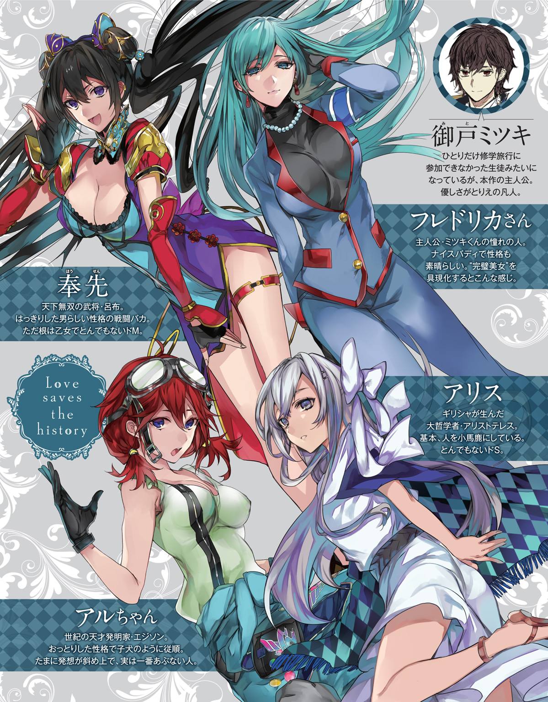
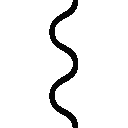

| 愛は歴史を救う～わたしの辞書に不可能という文字はないのよ編～ | |
| 田中創 | |
この本は縦書きでレイアウトされています。
また、ご覧になる機種により、表示の差が認められることがあります。


contents
この作品はフィクションです。
実在の人物・団体・事件などにはいっさい関係ありません。

★局員募集★航時局歴史管理課
守れぼくらの歴史！ 時空の命運はキミの手にかかっている！
～概要～
『時震』という現象をご存じでしょうか？
政府主導による時空観測プロジェクトが発足して以来、この言葉を新聞やテレビなどでお聞きになっている方も多いでしょう。
時震とは、四次元的に発生する事象変異現象です。
その原因も発生条件も、詳しいことは何もわかっていません。しかし、時震によって歴史上の重要地点、物品、人物が不可解な変異を遂げてしまうということはよく知られています。
時震は事象を歪め並行歴史を生んでしまうのです。
たとえば去年には、幕末に来航するはずのペリーの黒船が、時震のせいで難破してしまった世界が観測されたことがありました。二十一世紀になっても日本が鎖国を続けている並行歴史が発見されたというのは、まだ記憶に新しいところです。
もちろんこうした並行歴史の出現は、私たちには直接影響はありません。並行歴史の存在によって、私たちが紡いできたこの歴史が変容してしまうわけではないからです。そういう事情から「時震は対岸の火事」と言い切ってしまっているメディアも少なくありません。
しかし、それは大きな間違いなのです。ひとたび出現してしまった並行歴史は、その事象の不安定性ゆえに、さらなる時震を誘発してしまうのです。
ペリーの例を挙げますと、鎖国が続いた状態の日本からは、いくつものおかしな並行歴史が分岐していました。福沢諭吉が無敵の剣豪として諸国を漫遊していたり、マッドサイエンティスト化した野口英世が死者蘇生を成功させていたり――予測不可能な事象変異が山ほど発生していたのです。
時震は新たな時震を発生させ、並行歴史は次々に増えていく。
さて、このような並行歴史が増えていくと、いったいどうなってしまうのでしょうか。
そうです。恐ろしいことが起こります。端的に言えば、宇宙が崩壊してしまうのです。
近年の研究によれば、ひとつの次元が保有できる情報量には限界があり、並行歴史が増えていけばいくほどその容量は圧迫されていくと言われています。情報の許容限界を超えれば、この次元に存在するあらゆる世界が消滅してしまうのです。
もちろん私たちの暮らす、この宇宙も含めて。
ポンプに繋がれ、膨らんでいく風船をイメージしてみてください。それが私たちの暮らす宇宙です。並行歴史という名の空気が増えていけば、風船もどんどん膨らみ続け、やがては破裂してしまうというわけですね。
つまり時震は、私たちにとって対岸の火事ではないのです。この宇宙を守るため、私たちが可及的速やかに行うべきことは、次の二つに集約されるでしょう。
① 時震によって生じた事象変異を、現地に赴き修正し、宇宙崩壊の危機を防ぐ。
② 時震の原理そのものを解明し、抜本的解決を図る。これ以上の並行歴史を発生させない。
そうです。これこそ、航時局歴史管理課――通称ＴＨＲ（Timeport-bureau Historical Retention division）の任務なのです。
ＴＨＲの技術者は、いわば時空を守るヒーローというわけですね。かっこいい！
航時局が設立されてから十年、ＴＨＲはいくつもの事象変異を修正してきました。しかし次々と観測され続ける時震に、対応が追いついていないのが現状です。エージェントが足りていないのです。
航時局は、あなたの情熱を求めています。
あなたも歴史を守るＴＨＲエージェントとして、航時局で活躍してみませんか？
そう、次代のヒーローはあなた！
正しい歴史を救うために、レッツ時空移動！
才能あふれる歴史上のプロフェッショナルたちが、あなたの力を求めています！
～募集要項～
勤務部署：航時局歴史管理課
雇用形態：常勤
勤務開始日：ご相談に応じます
給与：航時局規定による
勤務体制：局員寮住みこみによる二十四時間体制。二交代制。
必要資格：時空技術者（第一種）
※なお時空修正任務には、多分に生命の危険を伴う場合があります。
航時局共済保険への加入を強くお勧めいたします。
文部科学省 航時局 歴史管理課
http://www.xxx.koujikyoku-thr.go.jp
キーボードから手を離し、「こんなもんかな」と頷く。
我ながらなかなかいい宣伝文だ。これなら僕たちに興味を持ってくれる就職希望者も増えるだろう。
僕の今日の業務は、寮の自室でこのＴＨＲ募集パンフレットを作成することである。
本来こういうのは広報課の仕事であり、僕たち歴史管理課が直接手を出すことは少ない。しかし、あえて仕事を引き受けたのには理由があるのだ。
「褒めてくれるかな......フレドリカさん」
このパンフによって入局希望者が増えれば、あのひともきっと喜ぶだろう。
僕の愛しの課長殿は、毎日毎日、猫の手も借りたいと嘆いているのだ。この募集ポスターが功を奏して歴史管理課の人員が増えれば、きっと彼女の業務も楽になるに違いない。
「うまくいったらご褒美がもらえるかも......。一日デートとか」
そんな風に画面の前でニヤケていると、すぐ右隣から、「それはないわね」とダメ出しの声が聞こえてきた。
「だいたいこんな文章じゃ全然ダメよ。大事な表現が抜けてるもん」
そう呟いたのは、二角帽を被った栗色の髪の少女である。
彼女が身につけている白のミニスカ制服は、偉そうなマント付き。まつげの長い目を眇め、彼女はＰＣ画面に指を突きつける。
「『歴史上のプロフェッショナル』ってとこに、〝偉大な〟とか〝美しき〟とか入れるべきよ」
「どうして」
「だってこれ、わたしの素晴らしさを世間の愚民どもに周知させるための文章でしょ」
それが当然、とばかりに少女は大きく頷いた。
ああもう。また面倒なこと言い始めたぞ、この皇帝陛下。
「いや違うよ？ ＴＨＲのエージェント募集の告知だよ？」
「だったら大した違いはないわよ」少女は鼻を鳴らす。「新人エージェントってことは、つまりわたしの部下になるわけだし。ならなおのこと、皇帝たるわたしを讃える文章にすべきね!!」
帽子の少女は、にんまりと口元を歪めた。
この無駄に不敵な笑みの女の子は、フランス皇帝ナポレオン・ボナパルト。近代ヨーロッパを震え上がらせた、常勝無敗の怪物皇帝である。
そんな名の知れた偉人すら小うるさい美少女に変えてしまうのだから、時震とは実に不思議なものだ。
僕は頭を振りながら、
「ともかくナポ子。忙しいんだから邪魔しないでよ」
「邪魔とはなによ。わたしが直々に助言してあげてるのよ？ ありがたく思いなさいよ」
そう言いながらナポ子は、僕の右腕をぎゅっと抱きしめる。二の腕に感じるほのかな柔らかさは、彼女の胸の感触だろう。思わず「ううっ」と呻いてしまう。
「ちょ、ちょっと離れてくれない？ そんなにくっつかれると、キーボード打ちづらいから」
「やだ」ナポ子が頰を膨らませる。「それを言うならアリスも一緒でしょ」
彼女がちらりと視線を向けたのは、デスクの左側である。
見た目小学生くらいのシルバーブロンドの女の子が、僕の左肩に顎を置くようにして身体を密着させている。実はこれ、さっきからずっとなのだ。
「私はナポ子さんのように勝手に口を出しているわけじゃありません。これはれっきとした仕事ですよ」
銀髪幼女――アリスが呟いた。
「私には、この屑隊長の業務を監督する義務があるんです。ＴＨＲのオペレーターですし、なにより愚者を導くのは哲人の役目ですから」
僕のことを躊躇なく屑隊長だとか愚者だとか言っちゃうこの子は、美少女と化した古代ギリシャの哲学者、アリストテレスである。彼女もナポ子同様、時空を超えてやってきたＴＨＲのエージェントなのだ。
僕は「はあ」とため息をつく。
「別に監督されなくても、このくらいちゃんと書けるんだけどなあ」
「いいから私の指示に従ってください。ほら、募集要項のところに『アニメ好き優遇』の一文を入れて」
「それアリスの個人的趣味じゃ......」
「ああ、そうそう。注意書きもお忘れなく。『声優直筆サインの持参で、もれなく好待遇を保証する』と」
「露骨な賄賂要求はどうかと思うよ!?」
「入れてくれるまで、放しませんよ」アリスが僕の左腕をしめつける。
凹凸のない小さな身体の感触は、もはや犯罪的ですらあった。ぺたんとしているのに、なぜだか妙にぷにっぷに。ロリ属性を持たないはずの僕ですら、変な気分になってしまう。
「あのさ、ナポ子もアリスもいい加減にしてくんない？ こんなことしてたら、いつまでたっても仕事が終わらないんだけど」
眉をひそめていると、不意に背後から何者かが僕の首に腕を回してきた。
「なあ隊長さん、それならあたしの希望も入れてくれよ」
「ほ、奉先!?」
黒髪ツインテールの少女が、背後で「へへん」と微笑んでいる。
惜しげもなく僕の背中に押し当てられているのは、ナポ子やアリスなどとは比較にならないくらいのダイナマイトおっぱいだ。むにゅん、という肉感的な弾力には、股間のＪｒ．もビックリ仰天である。
「ちょ、ちょっとあの、胸当たってるんだけど」
「実はさ、いい考えを思いついたんだよ」
慌てる僕などまるでお構いなしに、巨乳ツインテ少女――奉先は続ける。
「応募者全員にルール無用のデスマッチをさせようぜ。そんで、勝者を採用することにしよう」
「いやあのね、ＴＨＲの業務のメインは救助だってわかってる？ 別に血なまぐさい要素は必要ないよ？」
「じゃあ無理にエージェントにしなくてもいいよ。デスマッチ優勝者には、このあたし、呂布奉先との一騎打ち挑戦権が授与されるってことで」
「あくまでデスマッチ案は存続させるつもりなんだ!?」
相変わらずこの子――奉先の発言は血の気が多くてしょうがない。
さすがは古代中国最強の武将というだけはある。実に凶悪な思考回路だった。
ついでに言えば、おっぱいの柔らかさも凶悪なんだけれども。
「......ははあ、パンフ作りも大変ですねえ」
ふとデスクの下から、のんびりした女の子の声が聞こえてきた。
僕の股ぐらから顔を覗かせるようにしてこちらを見上げているのは、おさげにした赤毛が特徴的な、可愛らしい女の子――アルちゃんだ。
「あ、ボクは別に希望とか、そういうのはないですよ？ 応募者がいようがいまいが、たいちょーのおそばにいられればそれだけで幸せですのでー......」
しかしこの子、いつの間に僕のデスクの下に潜りこんだのか。まったく気がつかなかった。
「いや、そんなことよりアルちゃん、そんなとこでなにしてんの？」
「ええとその、お仕事頑張ってるたいちょーを、陰ながら労おうと思いまして」
にこにこと柔和な微笑みを浮かべるアルちゃん。なんと彼女はおもむろに、僕のズボンのジッパーに手をかけたではないか。
「労うって......ええっ!? なんで僕のズボン脱がそうとしてるの!?」
「えへへ。ボク、手先は器用な方ですし......きっと気持ちいいですよ？」
「そ、その器用さは発明だけに使ってくれればいいから!!」
にっこり頰を緩めている彼女の本名は、トーマス・アルバ・エジソン。
甲斐甲斐しさの方向性を思いきり間違っているようなこの女の子も、誰もが知る偉人――アメリカの発明王だったりするのだ。
僕の右腕にひっついているナポ子が、アルちゃんを見てむっと頰を膨らませる。
「いつからそこにいたのよアル。あんたいつも抜け目ないわね」
「そういうナポ子さんだって、毎日たいちょーにベタベタしすぎだと思いますけど......」
「べ、別にわたしはベタベタなんか......!! こいつはわたしのパートナーだし。一緒にいるのは当然だし」
睨み合うナポ子とアルちゃんを横目に、アリスが「やれやれ」と肩を竦めた。
「毎度飽きませんね。ナポ子さんもアルさんも。こんな屑野郎のどこがいいんだか」
「そう言うアリスだって、なにかっつーと普段から隊長さんに絡んでるよな」
苦笑する奉先に、アリスが応える。
「まあ、所詮この男は私がいないと何も出来ないダメ男ですからね。仕方なく面倒見てあげてるだけです。ナポ子さんやアルさんみたいなラブ要素は欠片もありませんよ」
「ちょっとアリス!! わたしがこいつのこと好きみたいな言い方やめなさいよ!!」
眉をひそめるナポ子に、アリスが「違うんですか？」と口元を歪める。
「違うわよ!! 全然まったく違う!!」
「まあまあ。落ち着けよナポ子」と奉先。「度量が小せえやつは、いつまでたっても大きくなれねえぞ」
「くうっ......!! 小さくて悪かったわねっ......!!」
ナポ子が悔しそうに歯嚙みする。奉先の胸を睨みつけながら。
腕をぎゅっと握りしめられ、僕は呻いた。
「あの、ナポ子さん。そんなに締めつけられると痛いんですけど」
椅子の両サイドからナポ子とアリスに抱きしめられ、背後から奉先に胸を押し当てられ、おまけに両脚の間でアルちゃんがよからぬことをしようとしている。
美少女たちにこれでもかと密着されているのだ。一般的な男性としてはある意味嬉しいシチュエーションなのだろうが、心に決めた女性がいる僕にとっては気が気でない。
もしもこんなハーレム状態を彼女に見られてしまったら......どう思われてしまうやら。
「ていうかキミたちさ。いろいろ手伝おうとしてくれる気持ちは嬉しいんだけど、ここまで身体をくっつけられると、倫理的にいろいろ問題がね――」

僕が口を開いたその瞬間。部屋のドアが、がちゃりと音を立てて開いてしまった。
「ミツキくん、パンフ作成の調子はどう？」
ドアから顔を覗かせたのは、ダークスーツ姿の見目麗しい知的な美人だった。
ああ、なんて間が悪い。彼女こそ僕の上司であり、長年の姉代わりでもある女性――航時局歴史管理課における最高責任者、高嶺フレドリカさんだ。
彼女は僕たちの姿を見て「あ」と硬直する。
「ナポ子ちゃんにアリスちゃん、奉先ちゃんにアルちゃんまで......何してるの？」
「何って、その」
「そんなにみんなでくっついて、おしくらまんじゅう......じゃないよね？」
フレドリカさんが、不審げに首を傾げた。
仕事をしていたら、同僚たちがいつの間にか部屋に不法侵入していた――。そう説明して、果たして信じてもらえるものだろうか。
「もしかしてミツキくん、女の子たちを部屋に連れこんで、イケナイことしようとしてたとか」
美しく整った彼女の眉は困惑に歪み、頰は真っ赤に色づいてしまっていた。
ああ......これはもうフレドリカさん、完全に誤解していらっしゃる。
「ち、違いますよフレドリカさん!? 僕はちゃんと仕事してましたよ!?」
必死で言いすがる僕だったが、フレドリカさんの表情は硬い。爛れきった弟の性生活を覗き見てしまい、言葉に詰まる姉――そんな面持ちである。
「まあ股間を大きくしながら『ちゃんと仕事してました』なんて言っても、まるで説得力ありませんけど」
アリスがぼそりと呟いた。
この哲学娘、僕を擁護するつもりはまるでないようだ。むしろ僕が困っているのを見て楽しんでいやがる。ちくしょうめ。
フレドリカさんは宙に視線を彷徨わせながら、
「お姉ちゃん、あんまり厳しく言うつもりはないんだけど......とにかくその、えっちなことするなら、せめて部屋の鍵くらいはかけてね？」
「し、しませんよそんなこと!?」
「いいのいいの。ミツキくんたちもお年頃だもんね。そういうことに興味あるもんね」
そう言いながら、フレドリカさんはバタンとドアを閉めてしまう。
「待ってくださいフレドリカさん!! これは違うんです!! 誤解なんです!!」
「その、お姉ちゃん気が利かなくてゴメンね、邪魔しないうちに帰るね」
ドア越しにそれだけ言って、フレドリカさんは離れていってしまったようだ。
「ああ!! フレドリカさん!! カムバアアアアック!!」
しかしそう叫んでも、足音が戻ってくることはなかった。なんて無慈悲な。
背後の奉先が「ははは」と軽快に笑う。「まーたフラれたな、隊長さん」
「その、元気出してくださいね？ ボクはいつでもおそばにいますから」
アルちゃんまで僕を見上げながら、そんなことを言っていた。
「いや、キミらね......」思わずため息が出てしまう。
そう。僕――御戸ミツキはフレドリカさんに恋い焦がれている。もう十年近く前から、ずっと。
この想いを遂げるため、僕は彼女を追って航時局に入局し、ＴＨＲで時空修正任務に従事しているのだ。
全てはフレドリカさんに、僕の男らしさを認めてもらうため。そして彼女と添い遂げるため。そのためなら、危険な時空修正任務に挑むのだって怖くない。
そう覚悟しているはずなのに、どうしてこういつもうまくいかないのだ......!!
「ま、そもそもミツキなんかにフレドリカは似合わないと思うけどね」
ナポ子がなぜか、にんまりと目を細めた。
「おまえのパートナーはわたし。そう決まってるの。おまえはわたしと一緒に全時空の覇者になるのよ。それでいいじゃない」
毎度のごとく、無駄に偉そうなナポ子だった。
思えば彼女がＴＨＲに来てからというもの、フレドリカさんとの距離がますます開いていってしまっているような気がする。ちょっとした疫病神かもしれない。
近代ヨーロッパの怪物皇帝、ナポレオン・ボナパルト。
彼女と出会ったのは、僕の主観的には一か月ほど前――。
歴史的には、二百年ほど昔の話だ。
見渡す限りの白銀の世界に、大部隊が進軍する。
その数四万。欧州最強の砲兵部隊を擁する、フランス共和国の精鋭たちだ。
先頭に立つのは立派な駿馬と、その上に跨がるひとりの少女だった。
「わ、わたしの辞書に、不可能という文字はないのよ!!」
寒さに堪えられないのだろう。少女はお気に入りの言葉を叫びつつ「ぐずっ」と鼻を啜る。
彼女は、この部隊を率いる司令官だった。
金の刺繡が入った赤いマント。仰々しい二角帽。濃紺の上着の下に、太もも眩しい白のミニスカートを合わせた珍妙な軍服姿だ。ふりしきる豪雪の中、彼女はぶるぶると白い肌を震わせている。
どこからどう見ても、年端のいかない普通の女の子であった。
しかし、それでも彼女は、数万の兵を束ねる総司令官なのである。
時空の見えざる手が、歴史をそう変質させてしまったのだ。
「と、とてつもなく寒いけど、それは敵も同じよ。わたしたちがアルプス山脈を越えてくるなんて、夢にも思わないでしょうね。麓で呑気に雪解けを待ってるはずだわ」
少女は震えながら先を続けた。
「だからチャンスなの。相手がのんびり構えてるところに突撃をかければ、一気に勝てちゃうはず!!」
「そううまく行くものですかな」
部下のひとりが進言する。少女よりも二回りは年上の、髭面の将軍だ。
「それより先に、わが軍の兵が寒さで凍え死ぬかもしれませぬぞ」
「なによ。怖気づいてるの？ ちょっと寒いくらい我慢しなさいよ」
「ちょっと寒い、どころの話ではありませんぞ。司令官」
将軍以下、部下たちは一斉に顔をしかめた。
すでに季節は五月も半ばだというのに、冗談かというほどの豪雪である。イタリア方面への街道は雪深く、一メートル先すら見通せないほどの吹雪が吹きすさんでいた。
銃剣を握る兵士たちも、小刻みに震えながら身を寄せ合っていた。こんな状況で進軍するなんて正気の沙汰じゃねえ――。誰も彼もが、顔にそう書いてあった。
「ああもう。なんて情けないのよ」少女が口を尖らせる。「おまえたちわたしの部下でしょ。誇り高きフランス共和国軍兵士でしょ」
「そう言われましても......誇りで暖は取れませぬ」
部下の言葉を、少女は「はん」と鼻で笑う。
「頼りにならない部下なんか、やっぱり連れてくるんじゃなかった」
「なんですと？」部下たちは、そろって目を丸くする。
「もういいわ。おまえたちはさっさとパリに帰りなさい。オーストリア軍は、わたしひとりで蹴散らしてくるから」
「ひ、ひとりで!? 何をおっしゃるのです!! 敵は五万の軍勢ですぞ!?」
「いつも言ってるでしょ!! わたしの辞書に不可能という文字はないって!!」
少女が手綱を握りしめると、彼女の愛馬はヒヒンといなないた。力強く前足を振り上げ、勢いよく雪道を駆け出したのである。
「突撃ーっ!!」
「司令官!? イタリアはそちらではありませぬ!! それは山奥へのルートですぞ!!」
しかし、将軍の声は、少女の耳には届かなかった。
少女の馬はすでに部下たちの視界の外。この豪雪の中では、蹄の音すら聞こえない。
部下たちは揃って顔を見合わせる。
「うちの司令官って、あんな勢い任せの人間だったっけ」
「さあな......。それを言うなら、そもそも女の子だったかどうかも怪しいぞ」
１８００ ５15 イタリア グラン・サン・ベルナール峠
５15 イタリア グラン・サン・ベルナール峠
じんじんする頰をさすりながら、僕――御戸ミツキは、ゆっくりと目を開く。
あれ？ ここはどこ？
朦朧とする意識の中で、僕は顔面に尋常ではない痛みを感じていた。誰かにしこたま殴られでもしなければ、さすがにこうはならないだろう。
「ようやく起きたか、隊長さん」
気づくと目の前には、黒髪ツインテールの同僚がいた。彼女はなにやら呆れたような表情で、僕の胸倉をつかみあげている。
「ほ、奉先？」
彼女が身につけているのは、特注のデザインの航時局女子制服だ。大きく開かれた胸元とスカートの深いスリットは、いつ見てもエロい。
彼女がこれを着ているということは......どうやら今は任務中らしい。
「隊長さんがなかなか起きねえから、つい思いきりぶん殴っちまった。勘弁な」
「え？ ぼ、僕、寝てたの？」
そこでようやく僕は、自分が野外にいることに気がついた。
野外というか......大自然の中だ。見渡す限り真っ白。丘陵を彩る銀世界。抱いた感想といえば、「超寒い!!」の一言である。
なにせ、吐いた息が凍りつきそうなほどの、怒濤の吹雪の中なのだ。今が昼か夜かもわからないぐらいに激しく吹雪いている。
呆気に取られる僕を見て、奉先が付け加えた。
「あたしらふたりは今、十八世紀末のアルプス山脈で要救助者捜索任務中だ。〝ナポなんとか〟っていう皇帝様のな」
「そうだっけ？」なんだか記憶が定かじゃない。
「でもまあ見ての通り、こっちが要救助者になりそうなくらいの大吹雪の中で立ち往生してるわけだが」
「というか僕、そんな状況でグッスリ寝てたわけ？」
「着地ミスだ」奉先が肩を竦める。「時空移動アプリの座標設定がおかしかったのかもな。隊長さん、十メートルくらい上から落っこちて頭打ったんだよ」
僕はだんだんと、自分の置かれた状況を思い出してきた。
そうだった。今は任務中。ここは西暦一八〇〇年のアルプス山脈だ。
ついさっきフレドリカさんからの命令を受け、この雪山に「飛んで」きたというわけである。「ナポレオン・ボナパルトの遭難救助」――それが今回のミッション内容だった。
何気なく後頭部を擦ると、大きなたんこぶが出来ているのがわかる。
原因はおそらくあの子だろう。どうせいつもみたいに、僕のときだけいい加減なオペレートをしたに決まっている。そのせいで僕はズレた座標に転送され、落っこちて頭を打ったのだ。地面が雪に覆われていなければ、たんこぶ程度では済まなかったかもしれない。
「怪我すんのは、普段からの鍛え方が足りねえからだぜ」
奉先が白い歯を見せて笑う。
「あたしなら、成層圏くらいから落下しても無傷で済むだろうけどな」
「世の中みんな、自分みたいな超人だと思わないでくれる？」
顔をしかめる僕を見て、奉先は頰を緩めた。
「ま、隊長さんの意識が戻ってよかったよ。この雪の中で気絶したまんまじゃ、間違いなくあの世逝きだったからな」
ともあれ奉先は命の恩人というわけだ。
「さんきゅ」と軽く頭を下げつつ、僕は腕時計型端末の液晶画面をタッチする。
これはウェアラブル多機能次元端末――タキオンウォッチ。様々な便利アプリの詰まった、ＴＨＲ業務の必需品だ。
コンソールから、周辺状況確認アプリを呼び出す。
「ええと......ここはベルナール峠の五合目付近。氷点下二〇℃だって」
「身体が冷えるわけだぜ。あたし寒いのは苦手なんだよな......」
奉先が、歯をガチガチと嚙み合わせて身震いする。
「三国志最強の武将でも、寒さは苦手みたいだね」
「武将も何もねえって。こればっかりは鍛えてどうにかなるもんでもねえしな」
そう言う彼女の名は呂布奉先。
中国後漢末期の英雄にして、人類史上屈指の武将と称される人物である。
戟や弓の達人として、「三国志」のライバルたちに恐れられた武闘派偉人――そんな人物が、なぜ僕を「隊長さん」と呼んでいるのか。どうして巨乳ツインテの美少女なのか。どういうわけで十八世紀末の雪山で震えているのか。
それもこれも、全ては〝時震〟のせいだと言っていい。
「てかさ奉先。そんな露出度高い服着てるから余計に寒いんじゃないの」
「しょうがねえだろ。いきなりこんな吹雪の中に放りこまれるとは思ってなかったんだよ」
確かに奉先の言う通りではある。猛吹雪とは聞いていたが、さすがにここまでとは思わなかった。僕だって、現場の天候がこんな状況だと知っていれば、防寒具のひとつくらいは準備してきていただろう。
「いくらアルプスつっても、五月でこの吹雪は異常だよなあ。これも時震の影響なのか？」
「と、とにかくこのままじゃマズイよね。本部に連絡を取ろう」
タキオンウォッチをタップし、通信アプリを作動させる。
数秒間の呼び出し音のあとに、「接続完了」のメッセージ。ウォッチの液晶部分から半透明な立体映像が投影される。
『......はいはい、なんですか』
現れた映像は眠そうな顔の女の子――アリスだ。
航時局制服の上にアカデミックなケープを合わせたこの子は、僕たちＴＨＲのオペレーターである。見た目だけならローティーン。こまっしゃくれた幼女だ。
僕の左手首あたりに映るアリスに向けて、奉先が口を開く。
「おいアリス。寒すぎる。なんとかしてくれよ」
『なんとかって......そっちの吹雪を止めろとでも？ 一介の哲学者には無理な相談ですよ。私は全知であっても、全能じゃないんですから』
さりげなく自分を「全知」とか言っちゃう彼女の正体は、言わずと知れた古代ギリシャの哲学者、アリストテレスである。時震は西洋最大の哲学者すら、こんな生意気幼女に変えてしまったのだ。
まあ本人はそんなこと特に気にしていないようなので、別にいいのだが。
「いや別に吹雪を止めろとは言わないけどさ......せめて準備のために一旦戻らせてくれない？」
しかしアリスは、そんな僕の嘆願を『無理です』と即座に切り捨ててしまう。
『現場のヘタレ隊長はご存じないでしょうがね。時空移動アプリの使用は、上の認可を取るのが非常に面倒なのです。課長だけじゃなく、局長のハンコも要りますから』
「......お役所仕事だなあ」
『そりゃ公務員ですからね。私たち』
アリスの言う通り、僕たち――航時局歴史管理課（通称ＴＨＲ）は政府に管理される公的機関である。消防庁のレスキュー隊とか、海上保安庁の特殊救難隊とか、そのあたりと同じカテゴリの組織に属しているというわけだ。
災害現場に赴いてひとびとを救助するのが通常のレスキュー隊なら、変質してしまった過去の並行歴史に赴いて偉人たちを救助するのが、僕たちＴＨＲなのである。
もちろん、単純な人命救助以外にも、失せ物探しや偉人の仕事の手伝いなど、歴史修正任務の種類はそのほか多岐にわたるけれども。
傍らの奉先が、「確認なんだが」と口を開く。
「今回は〝ナポなんとか〟ってすげえ有名な皇帝様を助けるんだよな。この雪山で遭難したっていう」
奉先の問いにアリスが『はい』と応える。
「そいつ、どんなやつなんだ」
『フランス皇帝ナポレオン・ボナパルト。簡単に言えば、向かうところ敵なしという戦争の天才でしょうか。〝ヨーロッパの怪物〟と恐れられた偉人です』
「怪物!! そりゃ強そうな皇帝様だな!!」
『実際に皇帝になるのは、おふたりのいる時間軸から数年後ですけどね。今はイタリア遠征の総司令官のはずです』
「へえ」と鼻を鳴らす奉先に、アリスが続ける。
『本来の時間軸であれば、ナポレオンはこの雪山を無事に乗り越え、イタリア方面に攻め入っている頃合いでした。しかし時震の影響のせいか、かの司令官は遭難してしまったのです』
「確かにこの雪じゃ、どんな猛将だろうがひとたまりもねえだろうけどなあ」
そういう奉先も身体を震わせている。
「んで結局、どんだけすげえんだ？ そのナポなんとかは。あたしより強えのか」
『どうでしょうね。ただ、個人の武力というよりは、統率力に優れた人物だったようですよ』
「ほう、統率力」
『アルプス越えに躊躇する部下たちを、〝フランス人の辞書に不可能という文字はない〟という言葉で奮い立たせたエピソードとか......あまりにも有名ですね』
「アルプスって、もしかしてこの雪山？」僕も口を挟んでみる。
『そうですよ。御戸さんたちは、まさに歴史が生まれた場所にいます』
「ふうん。そう聞くとなんだか感慨深いね」
『というか、隊長のくせにそんなことも知らなかったんですか。無知蒙昧も甚だしい』
「はいはい、ダメ隊長で申し訳ありませんね」
全知を自称するだけあって、さすがアリスは僕なんかよりずっと物知りだった。これで僕に対する当たりの厳しささえなければ、優秀なオペレーターなんだけどなあ......。
「でも実際、よっぽど気合い入れなきゃこの雪山はツライよ。ビビる兵隊さんたちの気持ちもわかる」
身を刺すような寒さ、とはよく言ったものである。
氷点下二〇℃の世界は、寒いというよりむしろ痛い。吹きつける吹雪に生命力を徐々に削り取られていくような感覚というか......。一時間も歩けばぶっ倒れるのは目に見えていた。
こんな状況で救助活動をするなんて、無謀というしかないだろう。
この時代の兵隊さんたちがどんだけ超人揃いなのかは知ったこっちゃない。ぬくぬくの環境で育った現代人の辞書には、不可能の文字だってちゃんと存在するのだ。
「せめて毛布のひとつも欲しい......」
『ほんとヘタレな隊長ですねあなたは』アリスがため息をつく。『泣き言を言う前に、さっさと要救助者を助けに行ったらどうです』
「気楽に言うなあ」
『タキオンメーターによれば、現在の歴史変異率は三十五パーセント。呑気に構えていい数値じゃありませんよ』
タキオンメーターとは、時空観測技術が生み出したＴＨＲ必携アプリだ。発生中の並行歴史の総情報量を算出し、この宇宙がどこまでそれを許容出来るかをわかりやすく数値化してくれるのである。
歴史がおかしくなればなるほど、つまり正史から分岐する並行歴史が増えれば増えるほど、このメーターの数値が増加する――。簡単に言えばそういうことだ。
『歴史変異率が百パーセントに至ったらどうなるか、いちいち私の説明が必要ですか？』
「そのくらいはわかるってば。宇宙が破裂するんでしょ」
頷く僕を、アリスは『あなたにもそのくらいの知識はありましたか』と鼻で笑う。
『一応未来から応援くらいはしてあげます。コタツでテレビ観ながら、ですけど』
「応援ってか、挑発だよねそれ」
ああもう。アリスと話をしていると、やる気なくなってくる。
そもそも僕は、いったい何のためにこんな命がけの任務に就いているのだろう。少なくとも、毒舌幼女にディスられるためではなかったはずだ。
吹雪の中、人生の無情さについて悶々と悩み始めたそのとき――タキオンウォッチから、女神のごとく慈愛溢れる声が聞こえてきた。
『ミツキくん、大丈夫？』
通信アプリに新たに現れたのは、ナイスバディな碧眼美女だ。
ミツキくん脳内ランキング「今最も声を聞きたい女性」部門で栄えある第一位を獲得した、キュートでセクシーでラブリーな、僕の憧れの上司である。
「フ、フフフ、フレドリカさん!! お疲れさまですっ!!」
アプリの立体映像だろうと、相手が彼女なら僕はもちろん敬礼を忘れない。
そんな僕の姿を見て、フレドリカさんはくすりと笑みを浮かべた。
『ごめんね。急に観測された時震だったから、現場の環境情報が把握できてなくて......。そっちは思ったよりもひどい吹雪みたいね。寒くない？』
「いえいえ!! フレドリカさんへの愛の炎があれば、こんな吹雪、そよ風程度のもんですよ!!」
脇で奉先が「また始まった」と顔をしかめていたが、構うことはない。愛するひとがそこにいるなら、雪山だろうと世界の中心だろうと、僕は何度だって愛を叫ぶのだ。
「もうね、フレドリカさんのためなら火の中水の中草の中雪の中!! 任務達成後のムフフなご褒美のために、誠心誠意努力する所存でありますよ!!」
『ム、ムフフなご褒美は......ちょっとあげられないかな、うん......』
フレドリカさんが表情を引きつらせていた。
いつも優しげなこのお姉さんも、僕の情熱的なアプローチを受けたときだけはなぜか微妙な表情をしてしまうのである。残念なことに。
相変わらずの難攻不落っぷり......だがそこがいい!!
「なにも最初から全てを要求しているわけじゃないんですよ。ムフフ系が無理なら......ちょっと婚姻届に実印を押していただく。それだけでもいいんです!!」
『お、重すぎるよ、そのご褒美!!』
「〝愛と漬物石は重い方がいい〟――古代ギリシャにはそんな格言もあるとか」
アリスの立体映像が『ありませんよバカですか』と僕を睨みつける。
ドライな子だった。たまには空気読んで僕の味方をしてくれてもいいのに。
『あ、あのねミツキくん』フレドリカさんが苦笑する。『いつも言ってるでしょ。私たちは上司と部下だし......それ以前に、姉弟みたいなものじゃない？ さすがにキミの気持ちに応えるわけには――』
そうなのだ。僕にはとある事情があって、彼女と家族同然の暮らしをしていた時期がある。九歳から中学卒業までの七年間――。そんな長い時間を、僕はフレドリカさんと共に過ごしていたというわけだ。
さてここで問題。思春期の多感な少年がこんなセクシーなお姉さんに拾われ、ひとつ屋根の下で甘やかされてしまえば、いったいどうなってしまうのか？ 答えは簡単。「惚れてしまう」のである。
彼女との暮らしの中で、僕は何度あのおっぱいを夢に見て、何度自分でパンツを洗ったことか。
「きょ、姉弟じゃダメなんでしょうか!?」
『え？』映像のフレドリカさんが首を傾げる。
「そもそも血が繋がってるわけでもないですし、入籍してもオーケーというか、合体だって出来ちゃうというか......何の障害もありませんよ!?」
『そういうことじゃなくてね。私がミツキくんを弟だとしか思えないというか』
「そこはきっと、時間が解決してくれると思います!! 恋人的な振る舞いをしていくうちに、フレドリカさんも次第に僕をひとりの男として認めるようになるはずです!!」
『ひとりの男って......』
「そうだ!! 帰ったらデートしましょう!! こないだネットで見つけたんですけど、新規オープンの遊園地が結構雰囲気良くて――」
『ああもう!! そんなことより御戸隊長、今は任務に集中しなさいっ!!』
他人行儀な呼び方をされてしまい、僕は「はっ!?」と我に返る。
「ぼ、僕としたことが!! すみません!!」
そうだ。任務をおろそかにして、フレドリカさんに嫌われたのでは元も子もない。
大時震だとか宇宙消滅だとか、実は細かい事情はどうでもいいのだ。僕がＴＨＲに所属している最大の目的は、彼女と添い遂げること――ただひとつなのである。
手柄を立てる → フレドリカさんに褒められる → 結婚 → ハッピーエンド
どうよ、これ？
僕の頭の中には、一分の隙もない完璧な未来予想図が描かれていた。これを実現させるためには、雪山ごときに二の足を踏んでいるわけにはいかないのだ。せめて来年、僕が二十歳になる頃までに、婚約くらいは済ませておきたいと思っていることだし。
「不肖この御戸ミツキ!! 任務に全身全霊を尽くします!! フレドリカさんとの未来のために!!」
『あ、うん。私との未来のためじゃなくて、要救助者保護のために頑張ってね』
「......さらっと流したな、フレドリカ姐さん」
奉先に哀れみの目を向けられてしまった。
でも僕泣かない。ミツキは強い子!!
『大変だと思うけど......救援物資と人員を送ったから、それでなんとかしてみてね』
それじゃ、と一言言い残して、フレドリカさんの映像が消失する。
「フ、フレドリカさん!? もしもし、もしもし!?」
どうやら通話は一方的に切られてしまったらしい。ちょっぴりショックだ。
「ありゃ脈なしだと思うぜ、隊長さん。いい加減諦めればいいのに」
軽口を叩く奉先を睨みつけ、僕はため息をついた。
まあ気持ちを切り替えよう。まずは任務だ。要救助者を速やかに救出し、フレドリカさんに褒めていただくのだ。
「んでも、人員っていったい誰が来るんだろうな」と奉先。
「そりゃまあ......あの子しかいないんじゃないの」
と、そのとき、背後から「たいちょー」というか細い声が聞こえてきた。
振り向くとそこには、モコモコした小動物......もとい、暖かそうなファーコートをゆったりと着こんだ、小柄な女の子がいた。
「お、お待たせしました......。たいちょーに奉先さん」
「アルちゃん!!」
僕が名前を呼ぶと、コートの女の子――アルちゃんはにっこりと目を細めた。
トレードマークは赤毛のおさげに、垂れ気味の大きな目。この大人しそうな子もＴＨＲの同僚だ。
本名はトーマス・アルバ・エジソン。彼女もまた、誰もが知る歴史上の偉人だった。
「え、えと......課長さんに準備を頼まれたので......」
アルちゃんはそう言いながら、両手の荷物をひとつずつ僕と奉先に手渡した。結構な重量のナップザックだ。手にした瞬間、ずっしりとくる。
「なんだこれ？」奉先が首を傾げた。
「防寒着とか食糧とか、救命器具とか......その手のサバイバルキット一式です。雪山での人探しは、かなり大変だと思いまして......」
「へえ、そりゃありがたいな」
僕たちは荷物の中からコートを取り出し、さっそく袖を通してみる。
あつらえたようにサイズはピッタリ。おまけにぬくぬくと暖かい。どういうわけか、生地自体がカイロのように発熱しているのだ。
「すごいなこれ。着ただけで生き返るみたいだ」
「あ、気に入っていただけました......？」アルちゃんが頰を緩める。「流体式自己発熱ナノファイバーを利用した、体温調節機能付きのコートです。これ一着で氷点下一八〇℃まで耐えられるんですよ」
「そりゃまたすごい。さすがアルちゃんだね」
偉人たちはみなそれぞれ、偉人と呼ばれる所以となった常人ならざる才能を有している。このアルちゃん――トーマス・アルバ・エジソンの場合は、わかりやすく〝発明〟という才能だ。
この発熱コートしかり。それからタキオンウォッチ内蔵の便利アプリしかり。
アルちゃんはその〝発明〟の才によって、魔法にしか思えないほどの超科学アイテムを開発してしまうのである。彼女のアイテムによって、これまでどれだけ僕たちが助けられてきたことか。
「よしよし。今回もよく出来ました」
いつものように頭を撫でてやると、アルちゃんがにっこりと微笑んだ。
「えへへ......たいちょーに褒めてもらえると思って、頑張ったんです......」
この子、僕に頭を撫でられるのがとても好きなのだそうだ。
なんとなくペットの犬っぽい。犬飼ったことないけど。
「ああ。さすがアルだぜ。これなら寒さを気にせず、思う存分やれそうだな」
コートを羽織った奉先は、いつの間にか身の丈ほどの巨大な戟を手にしていた。穂先に凶悪なデザインの刃がついた、彼女の愛用武器――方天画戟である。
「麓の方から戦の気配がする。こいつの出番は近いぜ」
「え？ 戦の気配？ そんなの全然感じないけど」
「ま、隊長さんには気を読むのはまだ無理かな。でもあたしはビリビリ感じるぜ。戦場特有の荒っぽい空気ってやつをな」
そんなバトル漫画めいた台詞も、奉先が言うと冗談に聞こえない。
「きっとアレだろ。例の怪物皇帝とやらの軍隊が戦ってやがるんじゃねえのか」
「まあ、それはあるかもね。遠征って言ってたくらいだから、今戦争中なんだろうし」
奉先は楽しそうに唇を歪め、方天画戟を肩に担ぎ上げた。
「なら、ここはバトりに行くしかねえな」
その突拍子もない言動に、僕もアルちゃんも目を丸くしたのは言うまでもなかった。
「なにそれ」
「そりゃ、強いやつと戦うのがあたしの生きがいだからな」
そうだった。この武将娘のバトルマニアぶりは、ちょっと普通じゃない。歴史上の強者に挑戦するためにＴＨＲに所属している――そう公言してはばからないのである。
可愛い顔しているくせに、格ゲーの主人公みたいな女だった。
「いや、今回の任務は人命救助だろ。積極的に戦争に参加する必要はどこにもないと思うんだけど」
「まー固いことは言うなって、隊長さん」ぎらついた目で、奉先が笑った。「戦闘に巻きこまれたら救助どころじゃねえだろ？ 面倒なことになる前に、あたしがちゃちゃっと片づけてきてやるぜ」
「いや、キミが出て行った方が面倒なことになりそうなんだけど......」
「んじゃ、要救助者の保護の方は任せたぜ!!」
奉先は軽々と戟を振り回しながら、そのまま吹雪の向こうへと走り去ってしまう。
まったくもってひとの話を聞かない女である。取り残された僕とアルちゃんは、顔を見合わせることしか出来なかった。
「い、行っちゃいました......」
「心配だよね......。あいつに狙われた兵隊さんたちが」
僕はタキオンウォッチをタップし、再び通信アプリを起動する。
『なんですか、もう』アリスはなぜか不機嫌顔だった。
「奉先が勝手にどっか行っちゃったんだよ。そっちから連絡して呼び戻してくれ」
『いやです面倒くさい』
「はい？」何その態度。
『私は他にやることがあるんです。忙しいんです』
「いや、忙しいって......。オペレーターでしょキミ。他になんの仕事があるの」
『今いいところなんですよ。竜の巣を抜けて、ようやく天空の城を発見したところなんですから』
こともあろうにアニメ鑑賞中だった!! 絶対それ今関係ない!!
「ひとが命がけで雪山探索しようってのに何してんの!? 仕事しようよ!!」
『ヤですよ。だって奉先さんの面倒を見るのは、隊長の仕事でしょう。あなたのミスを尻ぬぐいするなんてゴメンです』
「ぐうっ......!!」
僕のミスと言われてしまえばまあ、その通りなんだけども。
しかし、ここで引きさがるわけにはいかない。部下に舐められたら隊長の名折れだ。
「いや、そういう話じゃなくてね？ 僕はただ真面目に仕事をしろって言ってんだけど」
『知識の収集は哲学者の仕事です』
「そっちじゃなくて、オペレーターの仕事を――」
『うるさいです。バルス』
アリスは謎の呪文を吐き捨て、通話を一方的に打ち切ってしまった。再度通話を試みても、まったく応答する気配はない。アニメに夢中なのだろう。
「くっそう......。どいつもこいつも自分勝手すぎる......!!」
「あ、あの......。気を病まないでください、たいちょー。ボクは味方ですから......」
僕を見上げて、アルちゃんがぐっと握り拳を作ってみせる。
ああ。天使だこの子。ＴＨＲの唯一の良心と言ってもいい。
「ええと......その、奉先さんはボクが連れ戻してきますから」
「アルちゃんが？」
「は、はい。奉先さんを止めるのは、たぶんボクの方が適任だと思いますので......」
確かにこの子の言う通りだ。なんの力もない僕では、あのじゃじゃ馬娘を止めることは不可能に近い。
「わかった。頼むよ。あいつはアルちゃんに任せる。要救助者は僕がなんとかするから」
「りょ、了解ですっ......!!」
びしりと敬礼をして、アルちゃんがにっこり頰を緩めた。
その微笑みは、極寒の雪山に咲いたエーデルワイスとでもいうべきものだった。この子の優しさがなければ、僕はおそらく心が折れていただろう。ホンマええ子や......。
「そ、それでは......!!」
とてとて、と奉先のあとを追うアルちゃん。なんだか歩き方も可愛らしい。
その後ろ姿を見送り、僕はタキオンウォッチの地図アプリを起動する。
「さて、こっちも探すか」
この峠付近の三次元地図が、虚空に投影される。
点滅している赤い点が事象の歪みの中心点。すなわち時震源だ。それが今回の要救助者――ナポレオン・ボナパルト氏の現在地点である可能性は高い。
「ここから二百メートルくらいか」
よかった。さほど離れてはいない。
「光点がまったく動かないってことは、大人しく救助を待ってるのかな......。怪我してたりしたら最悪だけど」
赤い点を目指し、僕は吹雪の中を歩き出す。
この任務が終わったら、僕はもう一度フレドリカさんに結婚を申しこむんだ――!! そうやって自分を鼓舞すれば、多少の寒さなどへいちゃらなのである。
死亡フラグ？ なにそれ？
そしてすぐに、赤い点の座標は見つかった。
僕の目にまず入ってきたもの――それはパンツだった。
「おおう!?」
少女の下半身を覆う、黒のシルク。余分な柄やフリルのない、洗練されたデザインの逸品だ。小ぶりなお尻にバッチリと食いこんだそれは、僕の視線を捉えて離さなかった。
だがそれも仕方ない。少女の姿勢のおかげで、パンツはもろに全開。縫い目まではっきり見えるほどの御開帳ぶりだったのだから。
「ぐすっ......なに、見てるのよ」
パンツの主が、下からじっと僕を睨みつけている。
深い谷底を覗く崖際。少女は逆さ吊りだった。
歳は僕より少し幼いくらい。偉そうなマントに偉そうな軍服を身につけた、なんだか偉そうな態度の女の子だった。そんな子が逆さまの姿勢で、涙目になっている。
うん。どう見ても普通じゃない。一八〇〇年の世界でミニスカ軍服姿だというのが、まずおかしい。時震の影響を受けているのは明らかである。
しかしそのミニスカートも、逆さ吊りの状態では本来の役割を果たしていなかった。重力に負け、きっちり裏返ってしまっているのだ。おかげでパンツもろ見せ状態である。
「しかし、エロさよりもバカバカしさが際立っているのはなぜだろう......」
崖から突き出たように生えている木の枝に、片足首だけが引っかかった宙ぶらりんの姿勢――。なにが起こればこんな格好になるのか。まさかギャグでやってるんじゃないよな。
少女が目を潤ませながら、怒声を放つ。
「か、勝手にひとのパンツを見るんじゃない!! この無礼者!!」
彼女は必死にスカートを両手で押さえ、僕の視線からその可憐な薄布を隠そうと試みているようだった。だが、無駄な努力である。万有引力には逆らえない。
「いや不可抗力でしょこれ。出会った瞬間からパンツ丸出しの方がどうかと思うけど」
「う、うるさい!! 丸出し言うな!!」
「だって丸出しだし......」
「だいたいなんなのよ、おまえのその態度!! うう......ひっく、このわたしを誰だと思ってるの!? フランス共和国第一統領よ!! 軍の総司令官よ!! この世で一番偉いのよっ!!」
ぎゃーぎゃーうるさい小娘だった。泣き顔を誤魔化そうと、虚勢を張っているのだろうか。逆さ吊りの状態からここまで偉そうな言葉を吐けるとは。逆にすごい。
「ええとキミ、もしかしてナポレオンちゃん？」
「そうよ。......ぐず、未来の皇帝陛下よ」
少女――ナポレオン・ボナパルトは得意げに腕を組む。
おかげで再びパンツは全開に......。
もっとも、それを指摘すると余計な火種になりそうだったので、あえてそっとしておくことにした。僕って大人。
「で、その未来の皇帝陛下が、なんでこんなところで宙吊りになってるの」
少女は、涙まじりに答えた。
「て、敵陣に突撃しようと馬を走らせてたら、急に振り落とされたの」
なるほど。確かに周囲の雪の上には蹄の跡があった。崖際に落ちている黒い二角帽は彼女のものだろう。馬上から投げ出され、運悪くこういう体勢になったらしい。
「落馬した上に、そのまま勢いで崖から落下......ドジな皇帝陛下だなあ」
「う、うるさいわね。わたしを侮辱するつもりなら、ギロチン送りにするわよ」
不遜な態度だけは皇帝レベルだった。
「でも、なんで皇帝陛下がひとりで敵陣に突撃しようとしてたわけ？」
「そりゃ、どいつもこいつも根性のない、使えない部下ばっかりだったからよ。わたしひとりで戦った方がまだマシだと思ったの」
不慮の事故で宙吊り＆パンツ全開になってしまった涙目の女の子が、何だか偉そうなことを言っている。こんな皇帝に、「使えない」と評されてしまった部下たちの心中はいかほどだったのか。可哀相に。
「でもまさか、ナポレオンまで女の子になっちゃったとはね......」
気の強そうなつり目に、少しクセのあるブラウンの髪。目鼻立ちはずいぶんと可愛らしく、十分に人目を惹くルックスの少女だった。逆さ吊りのせいで露になっているお腹や太ももも、実にぷるっぷる。この上なく瑞々しい。
ありていに言えば、ナポレオンちゃんは美少女だった。
「な、なによ......。ぐすっ、わ、わたしが女の子で、何が悪いの？」
口を尖らせる彼女には、僕たちがよく知る男性的ナポレオンのイメージはまるでなかった。自分が女性であることに何の疑問も感じていないようだ。
まあ、それも当然だろう。時震とは、得てしてそういうものなのだ。ある歴史の一地点において時空がねじ曲がり、不可思議な並行歴史を誕生させてしまう。今回の例で言えば、この西暦一八〇〇年に、突如「ナポレオンが女の子として生を受けた並行世界」が出現してしまったというわけだ。
この並行歴史においては、誰もが皆、ナポレオンが女の子であることを当然だと認識しているのだろう。彼女自身はもちろん、おそらく彼女の家臣たちも。ヨーロッパ中でそういう共通認識になっているに違いない。信じがたいが、ここはそういう世界なのだ。
要するにこの泣き顔のドジっ子は、正史における偉人「ナポレオン・ボナパルト」とは完全に別人だというわけである。威厳の欠片もなくて当然だろう。
「改めて考えると、時震ってよくわからない現象だよね、ホント」
しかしどうしてこう、時震の影響を受けた偉人のみなさんは、本来の年齢とか容姿とか性格とか、そういうの一切ガン無視で、誰も彼もが美少女になってしまうのだろうか。
時震さんの趣味なのか？
「......まあ、偉人が全員揃って筋骨隆々のオッサン化しちゃう、とかよりはマシだけど」
「え？」少女が眉をひそめた。「というか......ぐずっ......おまえはどこの誰なのよ。格好からすると、このあたりの村の人間？ イタリア人なの？」
なるほど、今の彼女の目には、僕はしがない村人Ａに見えているらしい。
これもアルちゃんが開発した技術のひとつである。
タキオンウォッチに内蔵された「欺瞞迷彩アプリ」だ。特殊な波形の電波が周囲の人間の脳に作用して、アプリ使用者の見た目や言語に対する違和感を消し去ってくれるらしい。
つまり、違う時代にスムーズに溶けこむことが出来るアプリというわけだ。今回初めて使ってみたが、なかなかに便利そうだ。
少女が「まさか」と僕を睨みつける。
「野盗の類じゃないでしょうね？ 動けないわたしの身ぐるみを剝いで、いいように乱暴するつもりだとか......？」
「そういうんじゃないって。僕はキミを助けに来ただけだよ」
「助けに......？」ナポレオンちゃんが、胡散臭そうな眼差しを僕に向ける。「ホントかしら。ひとのパンツをガン見してる変態のくせに」
バレていた!!
「だ、大丈夫。変態じゃないよ。たまたま目に入ったから見てただけだし」
「なにその言い訳......」
まあ、僕だって男なのだ。パンツにときめきを覚えるかどうかと問われれば、そりゃあＹＥＳである。男子の視線がパンツに惹きつけられるのは、Ｎ極とＳ極が引かれ合うくらいに自然な現象なのだ。
しかし――しかしだ。
ナポレオンちゃんは、今回の要救助者である。彼女を助けることが出来れば、フレドリカさんに褒められる。すなわちそれは、素敵な未来予想図への第一歩なのである。
眼前のパンツに目を奪われて、後のおっぱいを逃すなんて愚の骨頂......!!
そうだ。今の僕の優先事項は、パンツを鑑賞することじゃない。パンツを救出して、おっぱいを手に入れることなのである。
そうと決まればやることはひとつだ。僕は崖際でナポ子に向かって手を伸ばすようにうつぶせた。
「ほら。動かないでね。引っ張り上げるから」
そうして足首に触れた瞬間、
「や!? ちょ、勝手に触るなぁっ!!」ナポレオンちゃんが、びくん、と身体をひねった。
「だから動いちゃダメだってば!! 危ないよ!!」
「おまえの目つきの方が危ないわよ!!」
彼女には一向に落ち着く様子は見られなかった。それどころか、大きく身体を左右に揺らし、僕の手から逃れようとする始末である。
「ああもう!! なんで逃げるの!!」
「お、おまえが太もも触るからでしょう!?」
「しょうがないじゃないか!! ここ支えてないと持ち上げられないんだから!!」
「は、放せ変態っ!! 犯罪者っ!!」
暴れる彼女のブーツの底が、僕の鼻先にクリーンヒットする。
思わず「んぶっ!?」と呻いてしまった。痛い。目が涙で滲む。
しかしここは我慢だ。ＴＨＲエージェントたるもの、時には鉄の覚悟が必要とされるのである。
「あ、暴れると落ちるから!! 崖下真っ逆さまだから!!」
「変態に犯されるくらいなら、墜落死の方がまだマシ!!」
ひどい。ひとがせっかく助けようとしてるのに、変態呼ばわりだなんて。
鉄の覚悟は早くも粉々に砕けそうだった。
「離れろ!! 痴漢野郎!!」
よほど警戒しているのだろう。彼女は思いきり肘や拳を振り回し、激しい抵抗を見せてきたのである。
「だ、だから、あぶな――」
と言ったのもつかの間、彼女の裏拳が僕の左手首を打った。
メキリ、というヤバげな音が耳に届く。視線を落としてみれば......これはビックリ。タキオンウォッチの液晶画面が、妙な具合に凹んでいるではないか。
「おうふっ!?」
液晶は完全に割れており、バチバチと火花を飛ばしていた。
見ただけでわかる。こいつはアウトだ。
マズい。これはマズい。非常にマズいぞ――!!
この時計は僕たちＴＨＲエージェントの生命線なのだ。これが壊れたら、あらゆる便利アプリが使えなくなる。未来への帰還はおろか、仲間との通信も出来なくなってしまうのだ。
しかし、悲劇はこれだけに留まらなかった。
僕が呆然としてしまっていた刹那――その一瞬の隙が命取りだったのである。
「ふんぬう!!」
なんと、ナポレオンちゃんが更なる攻勢に乗り出してきたのだ。こともあろうに、僕の肩口を思いきり引っ張って、谷底に落とそうとしてきやがったのである。
「死なばもろともよおおっ!!」
「ちょ、まっ――」
僕に出来たことは、慌てて体勢を整えることだけだった。
なんとか転落だけは免れたものの――失ったものは大きかった。
そう。それは背中のナップザック。
サバイバルグッズがたくさんつまった、命と同じくらい大事なナップザックだ。
こともあろうに僕は、それを落としてしまったのである。ナポレオンちゃんと揉み合っているうちに、肩にかけていた紐が千切れてしまったのだ。
本当に、あっという間の出来事だった。僕はただ、ナップザックが暗い谷底へと消えていくのを見守ることしか出来なかった。
「なんてこった......」
タキオンウォッチに続き、まさかサバイバル用具を一式失うことになるとは......。
これで命綱ゼロ。ショックなんてもんじゃない。絶望である。
どうしよう、これから......。
青ざめる僕を横目に、ナポレオンちゃんが「よいしょ」と崖を這い上がってくる。
立ち上がった彼女はすぐさま僕から距離を取り、腰のサーベルを抜き放った。
「これで形勢逆転よ!! このナポレオン・ボナパルトの眼前から、生きて帰れるとは思わないことね!!」
「ははは......。確かに、生きては帰れないかも......」
もはや乾いた笑いしか出てこなかった。
吹雪のアルプス山脈。役立つ装備はまるでなし。そんな状況の中、僕は要救助者とたったふたりきりで取り残されてしまったのだから――。
１８００５15 グラン・サン・ベルナール峠 山中の洞窟
「わたしは一ミリも悪くないっ!!」
ミニスカ軍服の少女が、ぷいっと僕から顔を背けた。
あれからどのくらいの時間が経っただろうか。三時間？ 四時間？ もしかしたら半日くらいは経っているかもしれない。時計がないので、まったくわからないのだ。
やはり、タキオンウォッチはうんともすんとも言わなくなっていた。これで通信手段は完全に喪失してしまったというわけだ。
「その機械が壊れたのも、荷物を落としたのも、単なるおまえの不注意よ。わたしはただ、暴漢の魔の手から身を守ったにすぎないし。正当防衛よ!!」
皇帝陛下は先ほどから、延々と責任逃れを続けていらっしゃった。
なんという自己正当化だろう。為政者とはいつの時代もこうなのか。
ともあれ彼女の様子を見る限り、欺瞞迷彩アプリの効果はまだ失われていないようだった。だが、どうせそれも時間の問題だろう。
僕は「はあ」と深いため息をつく。
峠に吹きつける吹雪の勢いは一向に弱まることなく、僕たちの体力を奪っていた。
彼女の誤解を解き、なんとかこの洞窟にたどり着く頃には、心身共にくたくたになってしまっていたのである。
もう雪山はイヤ。風呂入って寝たい。
「どう考えてもキミのせいだろ。助けも呼べない。救援物資もない。どうしろっていうんだよ、この状況」
「知らないわよ。だって、本当にわたしを助けに来たひとだなんて思わなかったんだもん」
洞窟の岩壁を背にし、少女は体育座りをしていた。
アルちゃん謹製の発熱コートを羽織らせたおかげで、寒さにこそ耐えられているようだったが、それでも疲れの色は見える。
それより問題は僕の方だ。コートなしだと、死ぬほど寒い......!!
雪風こそ凌げているとはいえ、洞窟内の空気は冷たかった。洞窟とはいうものの、せいぜいが奥行き数メートルほどのほら穴でしかない。外気との差がほとんどないのだ。
せめてたき火でも起こせたらいいのに――と思ったが、着火装置はナップザックの中だった。最悪である。せめて火打ち石でもいいから欲しかった。
徐々に削り取られる体内の熱量。時が経つほどに、生還の目は限りなく低くなっていく。僕とこの少女の命は、今や風前の灯火であった。
「まったく。あそこでナポ子が暴れたりしなければ、最低限生き延びるくらいは出来そうだったのに」
「だから、わたしは悪くないって言ってるでしょ!! あとナポ子って言うな!!」
ナポレオンだから、ナポ子。
我ながら何のひねりもないネーミングだったが、あだ名を付けるくらいの反撃は許してほしい。だってこの閉塞状況を生み出したのは、限りなくこの子のせいなんだから。
当のナポ子は、苦々しげに「むう」と僕を睨みつけていた。
「このわたしを恐れない身の程知らずは、おまえが初めてよ。山を下りたら覚悟しておくのね」
「その前に、生きてこの山を下りられるかどうかの覚悟をすべきだと思うけど」
雪山を歩き回ったせいか、少しお腹がすいてきたような気がする。
それはナポ子の方も同じようで、さっきから「ぐう」と腹の虫が鳴っているようだった。
「たしかに、まずは生存戦略が最優先かもね......。ねえ、なんか食べ物持ってない？」
「食べ物は全部谷底だよ......」
「ふむ......じゃあ谷底まで取りに行くしかないわね」
おっとナポ子さん、ナチュラルにとんでもないことをおっしゃる。
「さっきの崖を下りて？ 冗談でしょ？」
「行けるわよ。人間やれば出来るもん。わたしたち人類の辞書に、不可能という文字はないわ!!」
「この状況でその名言!?」
「なによおまえ、怖いの？ ビビリなの？」
「そりゃあ怖いよ。あの崖、何百メートルあると思ってるの」
「じゃあいいわよ。わたしひとりで行くから」
「え」と目を丸くする僕をよそに、ナポ子がすっくと立ちあがった。
「今こそフランス皇帝の度胸を見せるときよ!! 突撃ーっ!!」
猛然と駆けだそうする彼女の袖を、「ちょっと待った!!」とつかまえる。
「死ぬから!! こんな吹雪の中でロッククライミングなんかしたら、普通に死ぬから!!」
「なによ。わたしの覚悟に水を差す気なの」
ナポ子が僕を睨みつける。
さすがはナポレオン・ボナパルトを名乗るだけあって、ナポ子は無駄に勇敢な女の子であった。度胸だけなら大軍の司令官に相応しいだろう。案外、先陣を切って駆け出すことが出来るリーダーとして、多くの部下たちに慕われている――という可能性も、なきにしもあらずだけども。
でもこの子、いろいろと考えが甘過ぎじゃないか？
「だいたいキミ、ロープもないのに、どうやって崖を登り降りするつもりなのさ」
「ん、そりゃまあ......努力とか根性とか、そういうので」
「精神論!?」
結局、彼女を説得して翻意させるまでに、かなりの労力を費やすことになってしまった。実に不毛なやりとりである。なるべく体力を温存しなければならない場面だというのに。
はあ、とため息をつく。
水も食べものもなければ、死に向かって一直線だ。あと一日持てばいい方だろう。
その間に、ＴＨＲのみんなが僕を見つけてくれるかどうか――正直、分の悪い賭けだと言わざるを得ない。アリスは初っ端からやる気ないし、奉先はバトルに夢中だろうし。アルちゃんだってそのふたりに振り回されて、てんてこ舞いだろうから。
ああ......僕はもう、フレドリカさんに再び相まみえることは出来ないのだろうか。どうせ死ぬなら、彼女の膝の上で死にたかった......。
そんなことをつらつら考えながら、ただいたずらに時が流れるのを待つ。今の僕に出来ることなんて、所詮そのくらいしかないのだ。
１８００５16 同・洞窟内
イライラと頭を搔きむしりながら、ナポ子が吠える。
「暗いし寒いし......もう最悪だわ!!」
洞窟の外が深い闇に包まれてから、体感ですでにかなりの時間が経過していた。
時間的にはもう真夜中なのだろう。気温はさらに低下し、体力や腹具合も限界を迎えつつあった。
ここで瞼を閉じたら楽にはなるのだろうが、そのままあの世へゴーしちゃう可能性は否めない。いわゆる「寝たら死ぬぞ」的状況である。
これは御戸ミツキ史上、稀に見る危機的シチュエーションだと言えるだろう。
「おいおまえ、なんとかしなさいよっ!!」
急にナポ子さん、そんなことをのたまった。
「なんとかって、何？」
「決まってるでしょ。美味しいご飯と寝床を準備しろって言ってるの。今すぐ!!」
この皇帝陛下といえば、さっきから文句と不平ばかりだった。まるで親に甘える駄々っ子である。よくこんな理不尽が言えるものだと逆に感心してしまうレベルだ。
まあ、この子がギャンギャンうるさいおかげで、睡魔は跳ね除けられている。その点だけは、感謝してもいいけれども。
「だから何度も言ったでしょ。ご飯はないし、寝床はこの岩肌で我慢するしかないって。雪風を凌げているだけマシだと思うしかないよ」
「ありえないわ!!」ナポ子が頰を膨らませる。「わたしみたいな美少女が、こんなヒドイ環境で夜を過ごせるわけがないでしょ!! そんなこともわからないの!?」
「そりゃ、僕だってヤだけどさ。でもしょうがないじゃない。他の場所に行く当てもないんだから」
彼女は「はあ」と、ため息交じりに首を振った。
「若鶏のマレンゴ風が食べたい。ふかふかのベッドで眠りたい......!!」
「そりゃ同感だけど、我慢するしかないよ」
「ううう......どうしてこのわたしがこんな目に遭わなきゃいけないのよっ......!? 第一統領なのに、世界で一番偉いのに......あんまりだわ!! こんなのってない!!」
またしても、ナポ子の声はぐずぐずと震えていた。
きっと不安なのだろう。態度や口調こそ無駄に偉そうだが、彼女も年頃の少女なのだ。いきなりこんな過酷な環境に放り出されれば、悪態のひとつもつきたくなるのかもしれない。
「ほんとにもう、すぐ泣く皇帝陛下だなあ」
まあここは、僕がプロらしい冷静さを見せてあげるべきだろう。要救助者の心理的ケアも、ＴＨＲの業務なのだし。
僕はナポ子を元気づけるべく、「大丈夫だよ」と声をかけようとしたのだが、
「それもこれも、全部おまえのせいよ!!」
当のナポ子は僕に、ずびし、と人差し指を突きつけていた。
「えええっ!? なにその無茶苦茶な責任転嫁!?」
「おまえのせいで、こんな洞窟でひと晩過ごさなくちゃならなくなったのよ!? あの崖でおまえに会ってさえいなければ、今頃わたしは暖かいベッドの中にいられたはずなのに!!」
「いや、そもそも僕が助けなかったら、ナポ子は今頃谷底に――」
「黙れ平民!!」ナポ子がぴしゃりと言い捨てた。「誰が反論をしていいって言った!? おまえ、まだわたしが何者かよくわかってないようね!?」
うわあ。この子、超めんどくさ!!
「何者ってそりゃ......超ワガママで泣き虫で、どうしようもない皇帝陛下？」
思わず口をついて出てしまったその言葉が、ナポ子の怒りに油を注いでしまったらしい。彼女は実に不機嫌そうに、大きく頰を膨らませた。
「誰がワガママよ!? おまえバカなの!? 死にたいの!?」
「死にたくはないけど......。でもこのままじゃ、遅かれ早かれ死にそうだよね。誰かさんのせいで」
「むきいいいいっ!!」
そんな人語ともつかない唸りを上げながら、ナポ子がおもむろに立ち上がった。
腰のサーベルを抜き放ち、「もう頭にきた!!」と、その切っ先を僕に突きつける。
「不敬罪よ!! おまえみたいな生意気なやつは、この場で断罪してやる!!」
「ええっ!?」刃物を向けられ、僕は思わず息を呑んでしまう。「ちょ、落ち着こうよ。そんなことで体力使うくらいなら――」
「問答無用!! わたしの辞書に容赦という文字はない!!」
大上段にサーベルを振り上げ、そのまま彼女は思いきり僕に飛びかかってくる――!!
「死にさらせえええええっ!!」
「ひいっ!?」
さすがに僕も背筋がヒヤリとしたのだが、
「――ふぎゃっ!?」
ナポ子は突然、その場で蹴躓いてしまった。
岩に足を引っかけてしまったのだろう。どべしゃ、と盛大に顔面から地面にダイブしたのである。
「え？」
うつぶせに倒れたまま、ナポ子は動かない。ぴくぴくと四肢を痙攣させて、まるで轢かれたカエルのように地べたに突っ伏していた。
「............」
「あのー、ナポ子さん？」
「あうう......」彼女がゆっくりと面を上げる。「い、痛いぃ......っ」
真っ赤な目には大粒の雫。端整な顔を歪ませ、ナポ子は「ひっく」と肩を震わせていた。
......また泣いちゃった!? この皇帝陛下、ひとりで転んで泣き始めちゃったよ!?
「ええと、だ、大丈夫？」
「ぐすっ......だ、大丈夫なわけないでしょ......。えぐっ」
それはあまりにも無様。あまりにも情けない姿であった。
まともに剣も振るえない軍人って、どうなんだろう。
そろそろ僕も、このナポ子という少女についてわかってきたことがある。この子偉そうなだけで、本当はどうしようもなくダメな子なんじゃ――。
「ううう......ひぐ、えぐ」
転んでグズるその姿は、まるで幼稚園児だ。いい歳の少女がこんな醜態を晒しているのは、さすがに同情を禁じ得ないものである。
僕はポケットからハンカチを取り出し、彼女のそばにしゃがみこんだ。
涙でぐしゃぐしゃになった顔を丁寧に拭きながら、
「い、痛いの痛いの飛んでけー」
「ぐずっ......バカにしないでっ」
「あ、あはは......。ごめん」
僕が謝らなければいけない理由は皆無だと思うのだが、このナポ子にはなぜか、そうせざるを得ない妙な雰囲気があった。こっちが大人になってやらなきゃなあ――と思わせるような、不思議な魔力というか。なんかそういうやつが。
ナポ子はハンカチで「ずびいいいいっ」と鼻をかみ、それを丸めて僕に渡そうとしてくる。
「いや、それもういらない......」
なんなんだろう。この変な皇帝陛下。
１８００５16 同・洞窟内
ナポ子が泣き止むのを待っていたら、外がだんだん明るくなってきた。夜が明けたのだろう。依然として吹雪は続いているものの、勢いは若干弱まってきた印象がある。
そろそろ本格的に体力も限界だ。せめて今日中くらいには、誰か助けに来てくれると嬉しいんだけど。
ナポ子のお腹が「ぐう」と鳴る。
「......こうなったらもう、雪でも食べるしかないのかしら」
「やめた方がいいよ。冷たい雪を身体に入れると体温が低下するって聞いたことがある。自殺行為だよ」
「むっ......なによ偉そうに」ナポ子が眉を吊り上げる。「わたし、上から目線って嫌いなの。他人に偉そうに説教されると、なんか癪に触るのよね」
「キミ、鏡とか見たことある？」
思わずつっこまずにはいられなかった。これだけふてぶてしい性格の人間って、皇帝以外の職に就けないんじゃないだろうか。
「こうなったら仕方ないわ」
「え、なに」
「近くで何か食べ物を探す。多少の吹雪は我慢よ」
まあ、確かにそれもひとつの手だろう。
すっくと立ち上がったナポ子に、僕は「そうだね」と頷き返した。
「座して死を待つよりは、そっちの方が建設的かもしれない」
「よし、手分けして探しましょ。来るとき上の方に森が見えたから......そこで木の実とか見つかるかも」
「オーケー。ならとりあえず、だいたい三十分を目安にここに戻ってくることにしようか」
そう頷き合って、僕たちは洞窟をあとにする。
手分けして食料を探す――今思えば、これが大失敗だった。この時点での僕は、まだナポ子を過大評価していたのである。
ありとあらゆる失敗を引き起こす、天性のトラブルメーカー。
この少女の本質を知ってさえいれば、絶対に単独行動などさせなかっただろうに。
吹雪の森の中は、お世辞にも食料採取に適した場所だとは言えなかった。
風にあおられて樹上の雪が落ちてくるわ、地を這う根っこに足を取られるわでもう散々。草木の雪を払い、木の実の有無を確かめるだけでひと苦労である。発熱コートもナポ子に貸したままだし、身体の芯から冷えてくる。
「根性と忍耐力が試されるな、これ......」
雪の中にしゃがみこんで灌木の枝を弄っていると、小さい頃に亡くなった祖母の声が聞こえてくるような気さえしてくる。ごめんおばあちゃん、僕まだそっちには逝けないよ!!
そんな限界ギリギリの状況の中で、クルミと木いちごを合わせて十個ほど見つけられただけでも、万々歳の成果だろう。これはもう、自分で自分を褒めていい場面だ。えらいぞミツキ。
そんなこんなで、集合時間がやってきた。
ナポ子はどれだけ収穫できただろうか。洞窟へと帰還するべく、僕は自分の足跡を辿り始めたのだが、
「ひぎゃあああああああああっ!!」
耳をつんざくような悲鳴が、木立の中を駆け抜けた。
ナポ子だ。いったい何が起こったというのか。
「なにか、非常によくない予感がする......!!」
疲れた身体に鞭を打ち、僕は悲鳴の方向へと駆けだした。
細い枝が膝を打ち、葉が頰を切る。それでも躊躇している場合じゃない。あんなふてぶてしい小娘だろうと今回の要救助者なのだ。何かあっては寝覚めが悪い。
枝葉をかき分け、走ること数分。
木立の中の少し開けた場所に、ナポ子の姿があった。
「ど、どうしたの!?」
へし折れたサーベルを手にして、ぺたん、と地面に尻餅をついている。
彼女の視線の先にいたのは――熊。
優にナポ子の三倍はありそうな、巨大なヨーロッパヒグマである。
「あ、ええと......ちょっとピンチ......みたい」
現れた僕と熊とを交互に見やり、ナポ子は声を震わせている。顔面は真っ青。つい先ほどまで煩わしいくらいに居丈高だったくせに、またしても目に大粒の涙を浮かべている。
でもまあ、気持ちはわかるのだ。
前歯を剝き出しにして「グゥゥゥ」と唸るヒグマさんの姿は、そりゃもう怖い。
丸太のように太い前足の先には、鈍色に輝く鋭い爪。捕食のために最適化された、芸術性すらうかがえる野生の凶器だ。捕まったら最後、人間の肉なんてさぞかし綺麗に切り裂かれてしまうだろう。
そう。今やナポ子はヒグマの餌になろうとしていた。食料調達に来て熊の食料になっちゃうなんて、どこまでドジだったら気が済むのか。
「な、なんでこんなことに......!?」
「つ、捕まえて熊鍋にしてやろうと思ったのよ」
「熊鍋!?」
何言ってんの、この子。火種もないのに。
「動き鈍そうだったからなんとかなると思ったんだけど......意外に手ごわいのよ、これが」
「手ごわいどころの話じゃないでしょ!?」
冬眠明けのヒグマさんにケンカを売るなんて、正真正銘バカの所業である。
腹をすかせた熊が全力で走れば、時速六十キロにも及ぶと聞く。のっそりしているように見えて、やつらはとてつもなく素早いのだ。怒らせたら最後、逃げるのは絶望的である。
「と、とにかく、なんとかしなきゃ......!!」
こういう状況こそ奉先の出番なのだが、肝心なときにあの武将娘はいない。アルちゃんの頼れる便利アイテムもないし、僕が自力で切り抜けなければいけない場面らしい。
「こ、この熊野郎!! わたしを誰だと思ってるの!! ナポレオンよ!! 第一統領よ!? この世で一番偉いんだから!!」
凄んでみせるナポ子だったが、熊の方は意に介した様子もない。当たり前だ。
それどころかヒグマ氏は、ナポ子が腰を抜かして動けないことを察知し、舌なめずりをしているようだった。このままでは、ナポ子があの爪の餌食になってしまう。
何かないか。なんでもいいから、なにか役立つものは――!?
といっても、僕が手にしているのはせいぜいクルミと木いちごくらいのものだった。こうなればもう、これを使うしかない。
「ええいっ!! 南無三っ!!」僕は手にしたクルミをひとつ、熊に向かって放り投げた。
額の辺りにぽこん、と当たり、クルミはあえなく落下する。
これが投げ銭で、さらに僕が時代劇の岡っ引だったりするなら、ヒグマさんをひるませることくらいは出来たのかもしれない。だが、現実はそううまくいくものではないのだ。
ヒグマさんはもちろんダメージゼロ。おまけに怒りゲージを高めてヘイトを稼ぐ結果になってしまったらしい。
「ウウ......グルウウ」と恐ろしげな唸り声を上げ、僕を睨みつけている。
しかしもう、こうなったらやるしかない。
「こっちだこっち!!」
僕は手当たり次第にクルミや木いちごを放り投げ、ヒグマさんの意識を誘導する。ナポ子を救うにはこの手しかないのだ。
ヒグマさんはそれを挑発と受け取ったのか、僕を見てゴキリと首を鳴らし始めた。人間語なら「おお上等だコラてめえやんのか？」とでも言われているような雰囲気だ。
めっちゃ怖っ!!
ヒグマさんが僕を標的に定めた。
さあどうする。あの熊相手にどうすればいい。
しかし残念なことに、僕には有効策を思いつくための時間など残されてはいなかった。
それはほんの一瞬の出来事だった。熊は勢いよく地面を蹴ると、なんとこちらに飛びかかってきたのである!!
僕など所詮はただの凡人。時速六十キロの突進など到底避けられるものではなく。
「――あぎゃああ!?」
飛びかかられた矢先、鋭い爪が僕を袈裟に切り裂いた。制服は千切り取られ、肩口から腹部にかけて灼けるような痛みが走る。周囲の白い地面が、一瞬で赤に染まるほどの出血量だ。
ちょ、超痛いですよコレ!?
その勢いのまま、僕の身体は地面に叩きつけられてしまう。
ヒグマさんは当然マウントポジション。「今日の晩御飯はミツキくんの躍り食い」とばかりに、その凶悪な犬歯を剝き出しにしていたのである。
これはもう人生ジエンドだな――と思ったそのとき......。
がぁん!! と鼓膜を突き破るような轟音が響き渡った。
「ふえっ!?」
音のした方を振り向くと、怯えた表情のナポ子がいた。
手にしているのは、金の装飾が施された偉そうなピストル。銃口から硝煙が立ち上っていた。彼女が撃ったのだろう。
「ど、どっか行きなさいクマ公!! 今度はそのデカイ図体に鉛玉ぶちこむわよ!!」
ピストルで狙いをつけられ、熊は怯えたようにその身を強ばらせた。野生の熊とはいえ、火器の怖さは認識しているのだろう。すぐに僕から身を離し、一目散に森の奥へと姿を消したのだった。
「た、助かった......？」
「な、何言ってんのよ!! 全然助かってないわよ!?」
ナポ子が腰を上げ、青ざめた顔でこちらに近づいてくる。僕の上半身からドバドバ流れる血を見て、表情を硬くしていた。
「ぴ、ピストルなんて持ってたの、キミ」
「忘れてたのよ。気が動転してて」
「そりゃ......なんともバカな話ですね......」
痛みをこらえながら笑う僕を見て、ナポ子は「それはこっちの台詞よ!!」と憤る。
「誰も助けてほしいなんて言ってないのに......おまえこそバカよ!? こんなひどい怪我までして!!」
「た、助けるのは当たり前だろ。キミと僕は今、生死を共にするパートナーなんだから」
「パートナーって......？」ナポ子が眉をひそめる。
しかし僕には、彼女にろくな答えを返すことは出来なかった。
血を失いすぎてしまったせいかもしれない。頭の中が霞みがかって、なんだか急激に眠くなってしまったのだ。
ああ、意識が暗いところに引っ張られる。
もしかして、これが死ってやつなんですかね......？
？？？？？？？？ ？？？？
死に瀕した人間というのは、走馬燈のような映像を見るのがお約束らしい。
それはこれまでの人生の総決算的な内容だったり、どうしても果たしたかった願望だったり。そういうものが多いそうだ。
僕の場合もそれは同じ。主演女優は当然フレドリカさんで、その内容は夢にまで見た「乳繰り合い」シーンである。
『だ、だめだよミツキくん......!! 私たち姉弟なんだから』
「い、いいんです!! お姉ちゃんのおっぱいに憧れるのが弟の生きざまなんですっ!!」
フレドリカさんの豊満すぎるおっぱいを正面から揉みしだいたり、先端部をくりくりとこね回してみたり。かと思えば思うさま吸いついてみたり......。とにかく、死ぬ前にやっておかなければならないと思っていたことを、徹底的に行ってみたのである。
我ながらあさましい深層心理だとは思うのだが、日々悶々と生きていた男の心理なんて、だいたいこんなもんだろう。臨死状態だろうとそれは変わらないはずだ。
たとえ夢の中だろうと、あの巨乳を味わうまでは絶対に成仏できない。何がなんでもこのおっぱいを味わい尽くしてやるんだ――と、僕の意識はそれだけに向いていた。
「ん......じゅる......ちゅううう......」
ああっ、す、すごい......!!
欲望の赴くままにむしゃぶりついた彼女のバストは、なぜかとんでもなくリアルな感触だった。ふたつの柔肉は手のひらに吸いつくような感触で、舌の上で転がる突起はコリコリと硬い。ほんのり温かな体温や、上擦った息づかいまで聞こえてくる。
僕の卓越したイマジネーションは、夢にすら現実そのものといった臨場感を与えてしまうらしい。
なんたって、フレドリカさんの嬌声すら脳内再生してしまえるくらいなのだし。
「あ......んっ......こ、こら!! く、咥えるなあっ」
あれ？ 違和感を覚える。
フレドリカさんって、こんな舌足らずな声してたっけ？
それに肝心のおっぱいも、なんとなくボリュームが足りてない気がする。
不思議だった。リアリティは高いくせに、再現度は妙に低い。
僕の中で、内なる声が囁く。
おいミツキ、おまえのイマジネーションはこんなレベルなのか。おまえは日々、局のオフィスでフレドリカさんのナイスバディを眺め回していたんじゃないのか。その成果を発揮するなら、今をおいて他にないんじゃないのか――？
そうだ。僕ともあろうものが、この程度の再現度で満足するわけにはいかない。
僕は熱情に突き動かされるようにして、目の前の果実を必死に舌で攻めるのだった。
ちゅるちゅる、ぺろん、と。
「ひゃっ......な、なに舐めまわして......はふう......!?」
「だめだ......!! 足りない!! こんなちっぱいじゃ、成仏出来ないっ!!」
「だ、誰がちっぱいよっ!!」
と、そのとき、額に「べしん」と強い衝撃を覚える。
「あでっ!?」
え？ なに？ 殴られた？ 走馬燈に殴られた？
驚きのあまり、僕は目を見開く。
眼前に存在していたのは、ピンク色の小さなサクランボがふたつと、ほのかに丸みを帯びた白い双丘――。そして顔面を真っ赤に紅潮させた、ナポ子の怒りの形相だった。
「お、おおお、おまえという男はっ......!! ひとのおっぱいをいきなりちゅーちゅーし始めたと思ったら、言うに事欠いて〝ちっぱい〟!? どこまで失礼なら気が済むのよ!?」
「......へ？」
なにがなんだか、状況がまったくわからない。
気づけば彼女は、一糸まとわぬ素っ裸。僕も同じく素っ裸だった。
ナポ子が僕に覆い被さるようにして、肌を重ね合わせていたのである。まるでラブシーンのごとくに。
え？ なにこれ？ これも走馬燈？
「なんということだ......僕ともあろうものが......。せっかくの走馬燈なのに、よりによってこんな貧乳をイメージしてしまうだなんて......」
「こんな貧乳で悪かったわねえ!!」
再び、べちんと額を叩かれる。痛い。夢の中とは思えぬ痛さだった。
「ん......？ も、もしかしてこれ、現実......？」
「当たり前でしょ、このド変態!!」
ダメ押しとばかりに、僕の額をぴしゃりと叩く。
なんということだろう!! 僕がむしゃぶりついていたのは、走馬燈の巨乳ではなく、現実世界の控えめバストだったのだ!! しかもナポ子の!!
「うわあああっ!! ごごご、ごめん!!」
慌てて顔を背けたが、時すでに遅し。
「最低だわ」ナポ子が屈辱の眼差しで、僕を睨みつけていた。「せっかく介抱してあげたのに、まさかこんな辱めを受けるなんて......」
「え？ 介抱？」
言われて初めて気がついた。
傷を負った肩口に、赤い布が当てられている。ナポ子が身につけていたマントだ。たすき掛けにしたマントの結び方はかなりぎこちなかったが、一応の止血効果はありそうだった。
「ナポ子がやってくれたの？」
ナポ子は答える代わりに「ふん」と鼻を鳴らした。
彼女の背後に見えるのは、ごつごつした岩の天井。ここはさっきの洞窟の中らしい。どうやら彼女は気絶した僕をここまで運びこみ、わざわざ手当てをしてくれたようだ。
「あ、ありがとう。おかげで一命は取り留めたみたい」
派手に血が飛び散ったように見えたが、傷自体は浅かったのかもしれない。まだジクジクと痛みは感じるものの、致命傷というほどではなかったようだ。
「助けたこと後悔してるけどね!! 今は!!」
ナポ子さんは不機嫌そうにぷくっと頰を膨らませている。ちっぱい呼ばわりがよほど気に障ったらしい。
「おまえが侮辱したのは、このヨーロッパでもっとも気高いおっぱいなのよ。いわば、インぺリアルおっぱい!! 今すぐギロチン送りにされたっておかしくないんだからね!!」
「あ、はい......。そ、その節は申し訳ありませんでした。本当に」
平謝りするしかない。人違いで揉んじゃいました、とはとても言えそうにない雰囲気だった。悲しい事故である。
「それにしても、まさか裸で温めてくれるとは......」
「しょうがないでしょ」つん、と視線を逸らしながら、ナポ子が口を尖らせる。「おまえの身体、どんどん冷たくなってくんだもん。こうするより他に方法を思いつかなかったのよ」
たき火が起こせないなら、身体で温め合うしかない。確かに雪山で遭難した時のセオリーだ。
「お、お手数かけまして」
「ほんとよまったく。未来の皇帝にここまでさせたんだから、感謝しなさいよ」
確かに感謝だ。おそらく僕は、失血による低体温症を起こしていたのだろう。彼女が肌で温めてくれなかったら、今頃どうなっていたかわからない。
「おまえが死んじゃうんじゃないかと思って、すっごく心配したんだから」
よくよく彼女の目元を見てみれば、泣き濡らした跡がある。雪山にひとりぼっちで残されるのが不安だったのだろうか。相変わらずの泣き虫ぶりだった。
その表情には、なんだか無性に庇護欲を搔き立てられてしまう。僕は「大丈夫だよ」とナポ子の栗色の髪を撫でつけた。
彼女は一瞬だけ、顔をふにゃんと蕩けさせたあと、
「こ、子供扱いするなあっ!!」
すぐに頰を膨らませた。こういうところ、ちょっと可愛い。本当に子供っぽくて。
「ごめんごめん」と謝りつつも、僕は頰が緩むのをこらえきれなかった。
しかし本当に温かいな。ナポ子の身体......。
ひとたび意識すると、なんだかイケナイ気持ちになってしまう。
すべすべの肌に、華奢な腰つき。余分な肉のないほっそりした体形のくせに、どこもかしこもぷにぷにと柔らかい。おまけにいい匂いがして、なんだか、妙にドキドキしてしまうではないか。
まあ僕はフレドリカさん一筋だから、性的に欲情することはないけれども。
「それと」頰を染めながら、ナポ子が口を開く。「か、下半身のそれ、なんとかならないの？ さっきからお腹に当たって、変な感じなんだけど」
「えっ」
驚愕の事実発覚!! ミツキＪｒ．、完全に臨戦態勢だった!!
「ち、違うんだ!! これはたぶん寝起きの生理現象的なアレで、決して性的に欲情してるとかそういうことじゃ――」
「言い訳はいいから、小さく出来ないのかって聞いてるのっ!!」
「で、出来ないっぽいです......ごめんなさい」
こんな状況で小さくしろだなんて、煩悩溢れる青年には土台無理な相談である。
僕は「こほん」と咳払いをして、ばつの悪さを誤魔化すことにした。
「ええと、それで、どうして僕を助けてくれたの？」
言っちゃなんだけどこの子、人助けをするような性格には思えなかった。傍若無人な自己中皇帝だったではないか。
「それはこっちの台詞よ」
「え？」
「わたしのこと庇ってくれたじゃない。こんな怪我までして」
言いながらナポ子は、僕の傷口を覆う布にそっと指を這わせた。
「さっき言ってたわよね。わたしのことパートナーだって。それってどういうことなの？ どうしておまえは、見ず知らずのわたしなんかを助けるために命をかけられるの？」
ブラウンの瞳が、まっすぐに僕を射抜いた。
ナポ子はいつになく真面目な表情である。納得する答えを聞くまで、許してくれそうにもない雰囲気だった。
「そりゃ見ず知らずだけど、こんな状況だしね。仲間同士、助け合わなくちゃ生きて帰れなさそうだし」
「仲間同士......。それって、おまえとわたしが？」
「そりゃそうでしょ。他に誰がいるの」
「むう......」ナポ子が眉をひそめる。
「え？ なんか僕、変なこと言った？」
「もともと、おまえの言動には最初から引っかかるものを感じてたのよ」
「引っかかるって、何が？」
「おまえ、わたしのこと欠片も恐れていないでしょう」
ナポ子に睨みつけられ、僕は「え？」と首を傾げる。
そもそも出会った瞬間からパンツ全開だった宙吊り娘に、恐れを感じる方が無理というものである。それを言ったらキレられそうだけど。
「わたしはナポレオン・ボナパルトよ？ ヨーロッパきっての頭脳と美貌と才能を併せ持った〝怪物〟なのよ？ なのにおまえときたら、そんなわたしのパンツ覗くわ、ドジ呼ばわりするわ、む、胸にイタズラするわ......本当になんなの」
「ご、ごめんなさい」とにかく平謝り。
「挙句の果てにパートナーだとか仲間だとか。気安いにもほどがあるわ。このわたしにそんなことを言った人間は、おまえが初めてよ」
ナポ子の口調は毎度のごとく無駄に尊大なものだったが――しかし、ふと気づく。
文句を言っているように見えて、彼女の顔には嫌悪の色がまったく浮かんでいない。それどころか興味深そうな目で、僕をじっと見つめているのだ。
どういうことだろう。僕はふと疑問を口にする。
「や、でも、仲間ならナポ子にも大勢いるはずでしょ。皇帝っていうくらいなんだから」
「そりゃ部下なら何万人もいるけどね。わたしに心酔してる連中とか、手柄を認めてほしい連中とか」表情を変えず、ナポ子が吐き捨てるように呟く。「でも、わたしに対等な立場でものを言ってくれる友達みたいな存在は、ひとりもいなかったのよ」
支配者ゆえの孤独――。彼女はそういうものを感じていたのかもしれない。
「つまり......実はナポ子は、ぼっちだと」
「うるさい。ぼっち言うな」
むっと僕を睨みつける。図星だったらしい。
「名誉やお金のためじゃなくて、本気の本気で命をかけてわたしを救おうとしてくれたのは、おまえが初めてなの。興味が湧いたの。だからこういうことまでしてあげてるの」
尊大な口調ながらも、僕を抱きしめるナポ子の身体には、確かなぬくもりがあった。
ここまで内心を吐露してくれたということは、僕には少しだけ心を開いてくれているのかもしれない。もしかして、友達だと思ってくれているのかも。
そう思うと嬉しい反面、罪悪感を覚えてしまう。
「ええと、正直に言っていいですかね、ナポ子さん」
「ん？」
「たしかに僕はこの境遇を生き抜くパートナーとして命がけでキミを救ったけども、まったく見返りを期待してなかったってわけじゃないんだ」
「どういうこと？」ナポ子の眉間に皺が刻まれる。
「キミを助けることで、僕を認めてくれるひとがいて......正直それを期待してたというか」
「なにそれ。認めてくれるひと？」
「ええと、説明すると長くなるから端折るけど......昔、僕を救ってくれたひとがいてね。そのひとに一人前の男だって認めてもらうために、僕は人助けの仕事をしてるんだよ」
十年前に僕を救ってくれた運命のひと。フレドリカさん。
あの日、彼女に救われていなければ、今の僕は存在しない。だからこそ、全身全霊で彼女に男らしさを認めてもらうことこそが僕の目標であり、生きる理由だったりするのだ。
僕の回答を聞きながらナポ子が「うむむ」と唸る。
「それって、女の子？」
「まあ、女の子という歳じゃないけどね、フレドリカさんは」
本人に聞かれたら怒られそうな発言だった。
「質問するから、正直に答えなさい」
「はい？」
「現在この時点において命を預け合うパートナーであるこのわたしと、そのフレドリカとかいう女。おまえにとって大事なのはどっち」
なんだか妙に凄みのある目つきだった。これが皇帝たる者の威圧感なのか。
「どっちって、どっちも大事だよ。そんなの比べられるもんじゃ......」
「じゃあおっぱい揉みたいのはどっちよ」
「フレドリカさんです」
「そこは即答なの!?」
眉根をぴくぴくと痙攣させ、ナポ子が僕を睨みつける。
「......なんか、ものすごく悔しいわ」
「あはは......」
苦笑するしかなかった。でも、このちっぱいとフレドリカさんの巨乳を比べたら、ねえ？
「だって、この状況なのよ？ わたしみたいな美少女が―――インペリアル超絶美少女が、ハダカで抱きしめてあげてるのよ？ なのにそこで他の女のおっぱいがいいとか言っちゃうなんて、ちょっと常識足りないんじゃない？」
「じょ、常識って......素直に答えただけなんだけど」
「わたしね。これまでの人生で、負けたことってないのよ」
あれれ？ なぜか唐突に自分語りが始まってしまいましたよ？
「もって生まれた天才的才能っていうのかしら。学校の成績も、軍隊での功績も、他人に負けたことがないの。どんな勝負も絶対わたしの勝ち。みんながわたしを称え、尊ぶのよ」
「えっ？」
「なんでそこで意外そうな顔するのよ。わたし、これでもフランスを統べた女なのよ。世界最高の司令官なのよ？」
そりゃあ、その歴史的な設定は知っている。ここが並行歴史とはいえ、まだ歴史変異率は三割程度だ。偉人の設定まで大きくズレているわけではない。
しかし「天才」だとか「他人に負けたことがない」だとか、どうも胡散臭いではないか。落馬してパンツ全開の宙吊りになっていたり、熊にケンカふっかけてピンチに陥っていたり、どう見てもただのドジっ子にしか思えない。
負けたことない、は言いすぎだよなあ......。
そんな僕の疑念をよそに、自称天才皇帝様が続ける。
「わたしをパートナーとまで呼んでおいて、他のおっぱいがいいとかありえないわ。そのフレドリカってひとのことは知らないけど、絶対わたしの方がイイ女に決まってる」
「はあ」
とんでもない自意識過剰ぶりである。インペリアル自信家だった。
「で、その女とはどこまでいったの？」
「どこまでって......」
「え、えっちなことはしたのかって聞いてるの!!」
なんだかすごい剣幕だった。僕は思わず素直に「まだだけど」と首を振ってしまう。
ナポ子はなぜかそこで、ホッとしたようなため息をつく。
「ふむ。まだそういう関係ではない、と」
「それどころか、デートに誘っても袖にされてばっかりだけどね......。好意は伝えてるのに」
「ふうん」ナポ子が口元を緩める。「じゃあそれ、ただの片想いじゃない」
「ゆ、ゆくゆくは両想いになる予定だけどね!! 心の中ではきっと愛し合ってるから!!」
強がってみせる僕を見て、ナポ子が少しむっとする。
「愛し合ってる、ねえ......」
「も、文句あるわけ？」
「でもなんだかんだ言っておまえ、本心ではわたしの魅力に夢中になってるんでしょ」
「いや、別に夢中には......」
「噓はよくないわよ？ ここをこんなに硬くしてるくせに」
そう言ってナポ子はおもむろに、片手を僕の下半身へと伸ばしてきた。
先っぽをきゅっと握られ、僕は「ひぎぃ」と情けない悲鳴を上げてしまう。
「ちょ!? 待って、やめて!? そこは大事なところだから!!」
「身体で白状させてあげるわ。やっぱりナポレオン様に夢中だって」
彼女は手にしたミツキＪｒ．を、ゆっくりと自身の太ももの隙間へと導いていく。
ぬるりと濡れそぼったナポ子の内股に、ぴとりと触れる我が息子。その瞬間、えも言われぬ快楽の電流が身体を駆け抜けた。
「はうっ......!?」
両の内ももと、下腹部。それらが織りなす魅惑のデルタゾーン。柔肉の三角地帯。ぷるぷるの感触に圧迫され、僕の愚息は激しい昂ぶりを覚えていた。
死ぬほど柔らかくて温かくて......ああもう、なんだこの危険地帯は!!
「光栄に思うのね。未来の皇帝にこんなことまでさせた男は、おまえが初めてよ」
ナポ子は頰を染めつつ、にんまりと唇を歪める。僕が反応しているのを見て、心なしか嬉しそうな様子だった。
「見よう見まねで不安だったけど、本の知識もバカにならないもんね」
「本って......」
「兵舎にあった、大砲教練の本」
「夜の大砲教練!?」
彼女はＪｒ．を太ももで挟みこんだまま、なんと前後運動を始めてしまったのである。
これはあれか、素股というやつか。その怪しい大砲の本に書いてあったのか。
淫靡きわまる摩擦と刺激。Ｊｒ．の発射シークエンスは、すでに秒読みを開始していた。
「ま、待って待って!! 本当に待って!? このままじゃエクスプロージョンしちゃう!!」
「すればいいじゃない。わたしの身体に白旗揚げちゃえばいいじゃない」
「そ、そんなことは......僕にはフレドリカさんがっ......!!」
「むう。この期に及んでまだそのひとの名前を呼ぶのね」
ぷくっと頰を膨らませながら、ナポ子が身体を浮かせる。
あれ？ 諦めてくれた？
よかった。これで僕の貞操は守られる――しかしそう安堵したのもつかの間、
「こうなったら、い、行くところまで行くしかないわ!!」
「えええっ!?」と驚く僕をよそに、彼女の指先は屹立したＪｒ．をつまみあげてしまった。
なんと彼女はそのまま、ミツキくんの先端を自らの入り口へとあてがったではないか!!
「ちょ、な、ななな、なにする気なの!?」
「え、えっちに決まってるでしょう!!」
ゆでだこのように頰を赤らめながら、ナポ子は叫んだ。
先端に感じる、とろりとした濡れた感触。期せずして触れてしまったその部分は、ひくひくと小さな震えを繰り返している。
この皇帝陛下、本気だ!! 本気で僕の貞操を奪う気だ!!
「こ、これはマズイよ!! どう考えてもマズイ!! だってキミ、一国の皇帝でしょ!? 僕なんかとこんなことしちゃダメだよ!!」
おかしくなった歴史が、余計おかしくなっちゃう!!
「皇帝だからこそよ!! 世界の全てはわたしのもの!! おまえの貞操だってわたしのものなの!! 他の女に取られるのはムカつくのよ!!」
「なにその理屈!?」
腰を下ろそうとする彼女を必死に押しとどめながら、僕は懇願する。
「い、いったん落ち着こう!! 勢いでやることじゃないよ!? キミだって年頃の女の子だし、ほら、こういうのはもっと大切な男のひとと――」
「そんなんいるわけないでしょ!! 皇帝舐めんな!!」
そうでした!! この子ぼっち皇帝でした!!
「おまえはわたしをパートナーと呼んだわ。ぶっちゃけ生まれて初めての友達よ。いわばおまえは、わたしの友達ヴァージンを奪ったということに他ならないの」
「友達ヴァージン？」言ってる意味がまったくわからない。
「だからこっちの初めても、おまえとじゃなきゃダメなの!! これは義務なの!!」
「な、何言って――」
という僕の言葉は、不意に下半身に感じた衝撃的感触によって遮られてしまった。
ナポ子がおもむろに腰を下ろし、なんと僕のＪｒ．をのみこんでしまったのである!!
「ひっ......ひうううっ......んっ、入って、くるっ......!!」
「な、なななっ......!?」
繋がった。繋がって、しまった。
入った瞬間から、ナポ子の粘膜が僕をぎゅうぎゅうと締めつけ始めている。彼女の胎内は、ぬるぬるですごく熱くなっていた。
少し入ったところで引っかかりを感じたのだが、
「いぎいっ......んんんんっ!!」
ナポ子が思いきり身体を仰け反らせたおかげで、Ｊｒ．がそれを突き破ってしまった。
ああ、なんてことだ!!
僕、やっちゃったよ!! ナポレオンの初めて貫通しちゃったよ!!
当のナポ子は表情を歪ませ、僕をじとっと睨みつけている。
「......も、ものすごく痛いじゃないのっ!! このバカっ!!」
「じ、自分でやっといて文句言うの!?」
とはいえ、ナポ子さんには撤退する気などさらさらないらしい。はあはあと荒い呼吸を繰り返しながらも、自分でゆっくり腰を上下に動かし始めたのだ。
「ん......ふあっ、んんっ」
華奢な見た目と同様に、ナポ子の内側はものすごく狭い。とろけるような熱い液体と、柔らかい肉壁に包まれ、もう頭がどうにかなりそうである。
僕は思わず、ナポ子に合わせて腰を動かしてしまっていた。本能には逆らえない。これはもう男の性というやつなのだろう。
「やっ!? んんんっ、あう!!」
僕が突き上げるたびに、ナポ子の桜色の唇から嬌声がこぼれる。とろん、と虚ろな目をしているあたり、痛み以外の何かも感じ始めているのかもしれない。
「ナポ子？ も、もしかして、気持ちいいの？」
僕の言葉に、彼女は小さく頷いた。
「わ、悪かったわねっ......んんんっ、ふうんっ!!」
「べ、別に悪くは......」
「で、でもおまえも気持ちいいって......ふうっ......そういう顔、してるっ......!!」
否定は出来なかった。
昨日初めて会ったばかりの女の子だというのに、それも相当変な部類に属する女の子だというのに、僕はなぜかこうしていることが嫌ではなかった。
それどころかむしろ、真っ赤に顔を上気させているナポ子の表情がなんだかものすごく可愛らしいとか、ぷるぷる揺れる慎ましやかなおっぱいに吸いつきたいとか――そんなことを思ってしまうくらいである。
「あっ、ふあっ、そこ、ぐりってっ、動いて......っ!! あっ、ああっ!!」
Ｊｒ．がナポ子の一番奥にコツコツと当たるたびに、彼女は切なげな吐息をこぼす。
いまや外の吹雪などまったく気にならないくらいに、ナポ子の肌は熱く火照っていた。
「ひうっ、あっ、んん......あ、頭の中っ、真っ白でっ、なんか来そうでっ」
「ううっ......ちょ、そ、そろそろ僕も限界っ......」
慌てて彼女の身体から引き抜こうとしたのだが、ナポ子にがっしりと腰をつかまれてしまう。これでは抜くに抜けないではないか!!
「な、中で、出してっ......!!」
「な、何言ってんのナポ子さん!?」
「ふうっ、ん!! こ、これは皇帝命令よ!! いいから......んんんっ!! 出すのっ!!」
「そ、そんなことしたら赤ちゃんが――」
「んううっ!! パ、パートナーを名乗るなら、そのくらいの覚悟、しなさいっ!!」
反論なんてしている余裕はなかった。
ナポ子の肉がぎゅうっと僕に絡みつき、搾り取ろうとしてくるのだ。これも本能なのか。はたまたインペリアル的な才能なのか。これが初体験の少女の反応だとはとても思えなかった。
発射の限界を迎えたミツキくんの辞書に、我慢の文字はない。結局そのままミツキＪｒ．は、彼女の最奥で絶頂へと導かれてしまったのだ。
「ひあっ、んんん!! 来るっ、んんん!! ああああああああっ!!」

僕の腰を両手でしっかりとつかみながら、ナポ子が大きく身体を弓なりに反らせる。
それと同時にナポ子の粘膜も、うねるように僕を締めあげてきた。もはや抵抗する術はない。僕は最後の一滴までも、ナポ子の中へと注ぎこんでしまっていたのである。
「うう、はうう......」
ナポ子も力尽きたのだろう。そのまま僕の身体の上に、どさりと覆いかぶさってくる。
しっとりと汗ばむ身体は桜色に火照り、耳元で荒い呼吸を繰り返している。すっかり放心状態だった。
僕も呆然としつつ、ため息をこぼす。
「ま、またしても僕はこんなことを......」
「え？ またしても、って何？」ナポ子が眉をひそめた。
「い、いえ。なんでもないです」
僕は即座に首を振って誤魔化した。実はこの手の経験が初めてじゃないなんて言ったら、この子怒りそうだったし。
そうなのだ。またもや僕はやってしまったのである。
時震によって美少女になってしまったフランス皇帝。そんな子をほとんど成り行きで抱いてしまって、あまつさえ中でフィニッシュを決めてしまうだなんて――歴史の冒瀆も甚だしい行為である。
歴史修正のプロたるＴＨＲエージェントとして、これはいかがなものなのか。
「救命行為の一環......って説明は苦しいか」
他のエージェントたちと連絡が取れないのは不幸中の幸いなのだろう。彼女たちには正直、あまり知られたくない状況である。
たとえばうちの毒舌オペレーターあたりにでも知られたら、きっと心が張り裂けそうな罵詈雑言の数々をぶちまけられてしまうに違いない。
「この屑。性犯罪者。ＴＨＲの面汚し。任務中に要救助者とおっぱじめるとか、猿ですかあなたは」
とか、こんな感じに。
そんなことを考えていたら、視界の中にあの生意気幼女の幻が見えてきた気がするではないか。冷えきった無表情で僕を見下ろすあたりが、まさにアリスっぽい――。
「って、本物がいるうううう!?」
気づけば僕たちのすぐ横に、ケープを羽織った少女が佇んでいた。
常時眠そうな目に、腰まで届くシルバーブロンド。背の高さは小学生並みの一四〇センチそこそこ。見間違えるはずもない。この子はＴＨＲのオペレーター、アリストテレスだ。
彼女はナポ子に目を向け、ぺこりと頭を下げる。
「あ、どうもはじめまして。ナポ子さん。このたびはうちの屑がご迷惑をおかけしまして」
「な、ななな、なにこの子!? ていうか初対面でナポ子呼ばわり!?」
アリスを見上げ、狼狽えるナポ子。
無理もない。天下のナポレオン様だって、事後の有様を見られれば慌てるというものだ。
僕はとっさにナポ子の身体を引きはがし、肩をコートで覆ってやることにする。
「なんでこんなところにアリスが......!! また夢じゃないよね？」
「どっかのバカ隊長が荷物全部なくして二重遭難するから、わざわざ助けに来てやったんです。ありがたく思うことですね」
「ああ、この隊長を隊長と思わない失礼な物言い。間違いなく本物のアリスだねっ!!」
「ええそうです。本物の私です。見捨てられなくてよかったですね」
皮肉を言ってもその能面は崩れない。ほんと、何考えてんだろうこの子。
「ええと、なに、おまえの仲間なの？ この女の子」
顔を赤らめながら問うナポ子に、僕は「そうだよ」と答える。
しかしアリスは素っ気ない顔で、
「私の方から仲間だと思ったことは一度もありませんけど」
またこういうこと言う......。
「と、ともかくアリスは、僕らを助けに来てくれたんだよね？」
「ええまあ。御戸さんはともかく、ナポ子さんの救出は最優先事項ですからね」
言いながらアリスは、ナポ子の頭をよしよし、と撫で始めた。
急に撫でられて驚いたのか、ナポ子は「ふえ？」と首を傾げる。
「なかなかに可愛らしい。私好みの美少女です」
「え？ 好みって、え？」
そのままナポ子の頭をぎゅっと抱えるアリス。
ナポ子が目を白黒させてしまうのも無理はない。
「高飛車。ツンデレ。ドジっ子。コテコテの属性持ちですね。こういうわかりやすい造形のヒロイン、私大好きなんですよ」
「こ、この子何を言っているの......まったく意味がわからない......!!」
腐れ哲学者様の言動は、皇帝陛下ですら理解の範囲外だったらしい。まあ、僕もろくに理解出来たためしはないけれども。
気を取り直し、僕はアリスに問いかける。
「それはそうとアリス。どうやってこの場所に？ 僕のタキオンウォッチは壊れてたのに」
「表面の液晶は逝っちゃってますけどね。別に壊れてませんよ、それ」
「え？」
「内蔵アプリは全部生きてます。御戸さんの状態はモニター出来てましたよ。ずっと」
何食わぬ顔でアリスが説明する。
なんだ。そうだったのか......。じゃあ不安になることはなかったわけだ。
「って、待って。僕がナポ子を見つけたあたりから、アリスはずっと見てたってこと？」
「ええ。オペレーターですからね。最初から最後まで、全部確認してました」
「ま、まさかさっきのアレも......」
「中出しはどうかと思いますよ、御戸さん」
「うわああああああっ!?」
めっちゃくちゃ、こっ恥ずかしかった。知り合いにあんな姿を晒していたというのは、もはや生き恥以外の何ものでもないだろう。
「今更恥ずかしがる必要もないと思いますよ」とアリス。「御戸さんなんて、存在自体が生き恥のようなものじゃないですか。むしろ生きてて恥ずかしくないんですかね？」
すさまじい心の抉り方をしてくる幼女であった。
「だ、だったらアリス!! ああなる前に、もうちょっと早く助けに来てくれてもよかったんじゃないの!? こっち結構ピンチだったんだけど!?」
なにせ荷物なくしたり、ヒグマさんに襲われたり、わりと明日をも知れない状況だったのだ。
「私も忙しかったんですよ」アリスがやれやれと首を振る。「『天空の城』を観終わっても『魔女』とか『豚』とか『神隠し』とか、いろいろあったんですから」
「アニメマラソンしてただけだよね!?」
この子の中では、僕の存在など趣味以下の価値しか持っていないらしい。
まあ知ってたけどね!!（泣）
「そもそもですね。オペレーターの私が直々に現場に時空移動するなんて、よほどのことが起こらなければありえませんよ」
「そりゃそうだけど――」と言いかけて、僕は首を傾げる。
現場に出ないはずの引きこもりオペレーターが、なぜかここにいる。その意味は。
「それってつまり、よほどのことが起こったってこと？」
まるで表情を変えずに、アリスは「ええ」と呟いた。
「麓のフランス軍が大ピンチなんです。奉先さんたちのせいで」
１８００５16 サン＝レミ＝アン＝ボス
アリスとナポ子を伴って、吹雪の雪山を下る。
幸い身体の傷は、アリスの持ってきたメディカルキットによって即座に痛みが引いた。ビバ現代医療。下山する程度なら支障はなさそうだ。
ケープの上からさらにばっちり上着を着こんだアリスが、歩きながら口を開く。
「......御戸さんとナポ子さんが遭難している間、フランス軍の兵隊さんたちは順調にイタリア方面へと向かっていました。しかし麓の集落付近で、オーストリア軍の斥候部隊と鉢合わせてしまったんです」
「ふうん、敵の規模は？」
ナポ子が眉をひそめる。これでも一応、彼女はフランス軍総司令官だ。はぐれた本隊が無事なのかどうか、気になっているのかもしれない。
「いえ、敵は大した人数ではなかったそうです。戦闘が行われたといっても、ただの小競り合いみたいなもの。本来ならその程度で済むはずだったんですが――」
「ですが？」
ああ。これはよくない話の予感。
「そこに奉先さんが介入しまして。よほど欲求不満が溜まっていたのでしょう。『あたしもまぜろー!!』とか叫びながら、敵味方問わず強そうな兵隊を片っ端からぶっ飛ばし始めたのです」
「マジですか......」
何やってんだ、あの武将娘。本来の目的を完全に見失ってるじゃないか。
「アルさんが止めに入ったのですがね。さすがに奉先さんを止めるには、アレを使わないわけにはいかなかったようです」
「アレってまさか」
「ええ、例の切り札です。科学技術の粋を結集した、最終兵器を」
「あはは......最終兵器ね」
開いた口が塞がらなかった。奉先だけじゃなく、アルちゃんまで暴走中だとは。
あのトンデモ偉人ふたりが本気でバトルを始めたら、ろくでもない結果しか生まれない。それはこれまでの経験で、骨身に染みて理解していることなのである。
「ええと、話をまとめると」ナポ子が口を開いた。「おまえたちのお仲間が暴れて、わたしの部下がピンチってこと？」
「うん。申し訳ないけど、そういうことっぽい」
完全に、隊長である僕の監督不行き届きである。再び頭を下げるしかなかった。
「でも兵隊は四万もいるのよ？ たったふたり相手に、ピンチに陥るとは思えないけど」
「四万の兵隊だろうとなんとかしちゃうのが、偉人少女なんだよね......」
とにかく今の僕たちがしなくちゃいけないことは、一刻も早く現場に到着することだった。疲労した身体に鞭を打ち、必死に歩く。
手遅れになる前に、なんとかたどり着かなければ。
「ふうっ......ふうっ......」
雪道を下ること、小一時間。麓に近づくにつれ、吹雪は次第に弱まってくる。
視界もだんだんと晴れ、風以外の音も聞こえるようになってきた。
銃声。砲音。怒声。金属と金属がぶつかり合う、激しい音。
戦場が近いのだ。すぐそこで戦闘が起こっている気配がある。
「ちょ、ちょっと!? なにあれ!?」
不意にナポ子が足を止め、空を仰いだ。
驚くのも無理はない。彼女の視線の先に、この時代ではまず想像すらできないような、人智を超えた存在が忽然と現れたのだから。
それは、山と見まがうほどに巨大な人型のシルエットだった。全身に黒鉄のごとき鎧をまとった巨人が、のっしのっしと麓の平野を闊歩していたのである。
「巨人!? て、鉄の巨人よね、あれ!?」
この時代の人間が見れば、確かに鉄巨人にしか見えないだろう。しかしあれこそ、〝発明王〟アルちゃんが作り上げた最終兵器なのだ。
「汎用人型決戦兵器『ブラックマリアＺ』。まさかアレが再び起動してしまうなんて」
「ブラックマリア？ Ｚ？」
首を傾げるナポ子を横目に、アリスが解説を始める。
「全長四〇メートル。重量七〇〇トン。動力源は次元力エネルギー。外部装甲はエジソウニウム合金。その鉄拳は大地を砕き、ビームは空を切り裂きます」
「はあ......？」羅列される専門用語の数々に、ナポ子さんも呆れ気味である。
「ちなみにブラックマリアというのは、アルさんがかつてアメリカ時代に製作した、とある発明の名前だそうでして。思い入れがあるそうですよ？」
「いや、だからなんなのあの巨人は」
「簡単に言えば、私の知る限り、人類史上最強の破壊兵器ですね。神にも悪魔にもなれちゃうロボットというわけです」
最強の破壊兵器。確かにその言葉に偽りはないだろう。
巨大ロボの足下では、兵隊たちが右往左往しているのが見える。
「な、なんだあの化け物は!!」「わかりません!!」「サタンだ!! サタンの降臨だ!!」「逃げろ!! 踏みつぶされるぞ!!」「司令官は何やってんだ!! こんなときに!!」
野戦砲で果敢に戦いを挑む者。とにかく一目散に逃げようとする者。呆然と祈りを捧げる者。兵隊たちの反応は実にさまざまだった。
しかし悲しいかな。発明王ちゃんのオーバーテクノロジーの前には、十八世紀末の人間たちはあまりにも無力だった。野戦砲程度の火力では、最終兵器ロボの装甲には傷ひとつつけられないのである。
まあ、現代の最先端兵器をもってしても、たぶんあれには太刀打ちできないだろうけれども。
あんなアホみたいな存在に対抗出来るのは、同じようなアホだけだ。
「――雑魚どもはすっこんでなあっ!!」
大気を揺るがす咆哮が響いた。声の主は、僕らのよく知るひとりの少女である。
手にする武器は方天画戟。戸惑う兵隊たちを置き去りに、少女は鉄巨人へと一直線に突撃していく。
馬鹿な。あんな化け物相手に、棒きれひとつで立ち向かうつもりなのか――。周囲の兵隊たちは、誰もがみな少女の行動に目を疑ったことだろう。
しかしこの少女もまた、普通の人間ではないのだ。
「いくぜえっ!! 巨大ロボ!!」
地面を思いきり蹴り、少女は空へと舞い上がる。見る者全ての度胆を抜くような、数十メートルクラスの垂直ジャンプだった。
「こ、今度はなんなのよ!?」
超絶アクロバットな少女の姿には、さすがのナポ子も目をまん丸にしてしまっている。
少女は、「うおおおおおらあっ!!」と戟を力任せにフルスイング。
先端が鉄巨人の横面にクリーンヒットし、がいん、と鈍い衝突音が鳴り響く。
その光景を見ていた者たちは、もはや呆気に取られるしかなかった。なんと少女に「頰を張られた」巨大ロボが、ぐらりと傾き始めたのだ。
「やりやがったぞ、あの子!?」「まさか!?」「あの細腕で!?」
三国一の武将、呂布奉先。その類まれなる〝武力〟は、未来の特殊装甲にすら打撃を与えるほどに強力なのだ。
まるで酔っぱらいがよろめくようにして、巨大ロボが平地に尻餅をつく。どしん、と大きく大地が揺れ、周辺の兵隊たちは目を白黒させていた。
「相変わらずギャグの領域だよね......。あの子らのバトルって」
生身の美少女ＶＳ．最終兵器巨大ロボ――十八世紀末の世界観からすればあまりにも常識はずれの光景に、僕は深く嘆息するしかなかった。
『ほ、奉先さんっ......!! ひぐっ......。いい加減にしてくださいっ......!!』
ロボの頭部から、涙まじりの声が響いてくる。アルちゃんだ。
『うう......こんなに暴れたら、たいちょーに怒られちゃいますよう......』
「いいじゃねーか。久しぶりの戦場なんだし。あたしらがちょっとくらい無茶しても、別に問題ないって」
奉先が軽やかに地面に降り立つ。けらけらと笑う彼女の表情には、悪びれた様子はいっさいなかった。
『そんなわけないですっ......!! もうすでに問題だらけですっ......!!』
「だったらアル。あんたが止めてみなよ。あたしを止められないと、それこそ隊長さんに怒られちゃうぜ？」
『むっ......』奉先の挑発が功を奏したのか、アルちゃんの声色に怒気が混じってきた。『そ、そんなこと言うなら、本気でやっちゃいますよっ!! 手加減しませんよっ!!』
「望むところだぜ。前からあたしも、そのロボとは本気で闘ってみたかったんだ」
最終兵器ロボが再び立ち上がろうとするのを見て、奉先が不敵に微笑む。
そんな一触即発の空気の中では、誰も手を出すことが出来なかった。
「いやいや、やっちゃダメでしょキミたち......」
そんな僕の呟きも、これだけ戦場から離れていては本人たちの耳には伝わらない。
沈黙を破り、先に仕掛けたのはロボの方だ。
両膝をついてひざまずいたまま、上半身を倒し両手のひらを地面に接着すると、最終兵器ロボは必殺兵器を発動する体勢を取る。顔の赤い瞳のようなパーツがギラリと煌めいたその瞬間、
『じ、次元力びいいいいむっ!!』
可愛らしい叫びと共に、そこから熱線が放たれた。
熱線は地面をなぎ払い、触れたものを次々に融解させていく。樹木も岩石も野戦砲も、それから地面そのものも、みんなドロドロに液状化してしまったのだ。
下手をすれば人類文明を七日くらいで滅ぼしてしまいかねない、超強力ビームであった。
「おいおい!? いきなりコイツで来るかよ!!」
間一髪直撃を避けた奉先でさえ、顔を引きつらせてしまうほどの威力である。
アルちゃん、これはどう考えてもやりすぎ!!
普段は優しい天使のような彼女も、キレるときはキレるのだ。そしてこうなったら最後、発明王ちゃんに躊躇の文字はない。
実はアルちゃんこそＴＨＲ最大の問題児なんじゃないかというのが、僕を含めた歴史管理課の共通認識だった。
「なんなんだこの火の雨は!!」「おそろしや!! これがサタンの怒り!!」「退却だ、退却っ!!」
ちゅいんちゅいんとビームを乱射する巨大ロボには、兵隊さんたちも大慌てのご様子。自分たちの想像を超えた事態に、誰も彼もが完全に恐慌状態に陥っていた。
もう阿鼻叫喚。まんま地獄絵図。いったい何がどうしてこうなった......!!
傍らのアリスだけがただただ冷静に「ひとがゴミのようですね」などと呟いている。
「ねえアリス」
「はい？」
「つかぬことを聞くけどさ。この状況、僕らでなんとかしなきゃいけないんだよね」
「当然です。こんな馬鹿げた戦闘を歴史に残すわけにはいきません。ナポレオンのイタリア遠征には、巨大ロボットも超人ヒロインも出てこないんです」
「もしこのまま放置したら？」
「ご存じの通り、新たな並行歴史が発生します。この規模の無茶苦茶な事象改変ですと、かなりの確率で次元情報が飽和しますね。下手したらそのまま宇宙がドカンです」
「ドカンですか」
「猶予はありませんよ。タキオンメーターの歴史変異率も、現在五十パーセントを越えていますから」
「ご、五十......いつの間にそんなに」
アリス先生の仮借ない物言いに、僕は頭を抱える。
歴史を修正するためにやってきたはずのＴＨＲが、余計に歴史を混乱させてしまう。そんなの、笑い話にもならない。
宇宙ドカンはともかく、このままでは僕がフレドリカさんに大目玉を食らってしまう。それだけは絶対に避けなければ。
「でも、どうやってこの状況に収拾をつければいいのかな？ 奉先もアルちゃんも、力ずくで止められるような相手じゃないと思うんだけど」
「知りませんよそんなの」アリスがそっけなく言い捨てる。「あなた隊長でしょう。自分で考えてください。そのオツムは何のためについてるんですか」
ああもう!! 相も変わらず非協力的なんだから!!
進退窮まった僕は、傍らのナポ子に目を向ける。
彼女は呆けたような表情で、眼前に繰り広げられるトンデモバトルに目を奪われているようだった。
「はあ......なんか、夢でも見ている気分だわ」
「いや、なんていうか。ホントごめん。こんなのに巻きこむつもりはなかったんだけど」
「あの鉄巨人といい、あっちの黒髪の女の子といい、完全に常識外れじゃない。世の中には、あんな怪物みたいな連中がいるのね」
混乱を極める戦場を見つめ、彼女はニイっと口角を吊り上げる。
「でも......面白いわ!!」
「お、面白い？」
ナポ子の大きな瞳は、まるでものすごく楽しいおもちゃを見つけた子供のように爛々と輝いている。
異次元バトルを繰り広げる奉先と最終兵器ロボを指さし、彼女は不敵に微笑んだ。
「わたしだって、人呼んで『ヨーロッパの怪物』よ。ああいう怪物連中をぶちのめしてこそ、箔が付くというものよね」
「え？ ぶちのめす？」なに言ってんのこの子。
「おまえ今、すごく困っているみたいだし......。だったらここは、パートナーのわたしがひと肌脱いであげようじゃない」
「いやちょっと待って」と僕が声をかけようとしたときには、すでに遅かった。
ナポ子はもう、雪道を駆け下り始めていたのである。
「いざゆかん!! 誰が最強の怪物なのか、きっちり教えてあげるんだから!!」
そうだ。この子は、冬眠明けの熊にケンカ売っちゃうくらい、おバカで無鉄砲な皇帝様なのだった。
「ちょ、ちょっと待った!! 無理だから!! あのバトルに割って入るのは無理だから!!」
「やってみなくちゃわからないわ!! わたしの辞書に不可能という文字はないのよ!!」
このインペリアル自信過剰ぶり......!!
「とっつげきー!!」と叫びながら、ナポ子は戦場に向かって全力疾走する。
僕もなんとかその背を追いかけたのだが、さすがに傷を負った身体ではついていくだけでやっとだった。むしろさっきまで遭難してたくせに元気な皇帝様の方がオカシイ。
斜面を駆け下り、倒れた兵士たちを跨ぎ越え、ようやく僕が追いついたときには、すでに戦場のど真ん中まで来てしまっていた。
鎬を削り合うロボと武将娘を見据え、ナポ子は勇猛果敢に向かっていく。
しかし――。
「ふべしっ!?」
転んだ!!
ナポ子はまたしても顔面から、思いっきり地面に転倒してしまったのだ!!
「な、なんだ？」「もしかして司令官？」「またひとりで転んでる......」
突然舞い戻るなり無様な姿を晒した司令官に、兵士たちは戸惑いを隠せない様子である。この皇帝陛下、もしかしてすっ転ぶのがお家芸なのか？
ビーム乱射中の最終兵器ロボも、それを必死で避けていた奉先も、揃ってこの闖入者に目を奪われてしまっているようだった。
「あうう......」
ナポ子がゆっくりと顔を上げる。
その小さな鼻から、一筋の赤い雫がこぼれる。それをごしごしとぬぐい、彼女は声を張り上げた。
「わ、われこそは天下のフランス第一統領!! ナポレオン・ボナパルトよ!! か、かちゅ、刮目しなさいっ!!」
嚙んでる。めっちゃ嚙んでる......!!
衆目の面前で鼻血を垂らしながら、嚙み嚙みの名乗りを上げる為政者――こんな間抜けな偉人に出会ったのは、さすがに初めての経験だった。
「そこの鉄巨人も馬鹿力女も、ぶっちゃけわたしの敵ではないわ!! さあ、尋常に勝負よ!!」
そう叫びながら、ナポ子は腰のサーベルを勢いよく引き抜いた。
熊にへし折られて、ほとんど柄だけになったサーベルを。
「......ぶほっ!?」
そのあまりの絵面のシュールさに、僕は思わず噴き出してしまった。
だめだ。もう耐えられない。ひょっとして狙ってやっているのだろうか。
この子、面白すぎ。
そう思っていたのはギャラリーの兵隊さんたちも同じだったようで。気づけばみな、俯きながら軍服の肩をぷるぷると震わせてしまっていた。
「お、おい、笑うなって」「無茶言うな」
「あれでも一応国のトップだろ」「だから笑えてくるんだよ」
そんな風に部下たちに嘲笑され、当の司令官様はご立腹。
「ちょ、ちょっと!! 今笑ったの誰!? 覚えときなさい!! あとでギロチンだからね!!」
ナポ子は顔を真っ赤にして、地団太を踏んだ。
なぜだろうか。ナポ子の登場によって場の雰囲気がすっかり変わってしまったようだ。
殺伐としていた地獄の戦場が、一気に幼稚園の保護者会のような微笑ましい空気になってしまったというか......。なんだかほのぼのとしてしまった。
「なんだかんだ言って、ああいう一生懸命なところがいいんだよな」
「そうそう。あんな司令官だからこそ、ここまでついてくる気になったというか」
「俺たちで支えてやりたいって思っちまうんだよなあ。不思議と」
兵士の皆さんは、口々にそんなことを言って微笑み合っている。
ナポ子さん、何やら意外な求心力の持ち主のようだ。
例えるなら、そう。兄弟の中でダメな子ほど両親に可愛がられる法則というものがあるけれども、これはまさにそれに該当するだろう。ダメな皇帝だからこそ、彼女は家臣たちに愛されてしまっているのかもしれない。
こうして涙目のナポ子を見ていると、僕も同じ気持ちにさせられてしまうのだ。ああ、早くあのバカな子をなんとかしてやらなきゃなあ――と。
「もしかして、こいつが例のナポなんとか？」と奉先も呆れ顔である。
『みたいですねえ......』
アルちゃんもすっかり毒気を抜かれてしまったようだ。最終兵器ロボは両手両脚を地につけた姿勢のまま、動きを完全に止めてしまっている。
「へいへい!! どうしたの!! さっさとかかってきなさいよ!!」
刃の折れたサーベルを振り回し、ナポ子がふたりを挑発する。
鼻血顔で飛び跳ねるナポ子の姿は、無様を通り越してもはや滑稽だった。
『あの挑発に乗ってしまったら、なんだかひととして負けって気がします......』
「......だな。あたしもそう思うぜ」
奉先は半笑いを浮かべながら、生暖かい視線をナポ子に向けていた。
当のナポ子は、自分がどうして笑われているのか、さっぱりわかっていない様子である。
「なによ馬鹿力女。わたしに恐れをなしたの」
「まあ、ある意味な」奉先が苦笑する。「なんかあんた見てたら、腕っぷしを競い合いたいとか、そういう気分じゃなくなっちまったよ」
「ってことはなに？ 勝負はわたしの勝ちってこと？」
「いいんじゃねえの、それで」
投げやりに呟き、奉先は戟を足元に置いた。
『うう......熱くなってた自分がちょっと恥ずかしいです......』
「鉄巨人も戦意喪失......。つまり結論として、わたしが最強ってことよね!!」
満面の笑みを浮かべ、鼻血司令官がぐっと握り拳を作ってみせる。
「そうですね」「最強ですね」「司令官はすごいですねー」......。周りの兵隊たちにそんな風におだてられながら、ナポ子は悦に入っていた。
「くるしゅうない!! くるしゅうないわ!! 今夜は宴よ、者ども!!」
薄い胸を偉そうに反らしながら、高笑いするナポ子。楽しそうでなによりである。
しかし僕は、どうにも違和感を覚えてならなかった。
なに、この不自然極まる幕引きは......。
「これにて一件落着、ですかね」
いつの間にか僕の隣にいたアリスが、しみじみと呟いた。
「それはよかったけど......この空気ちょっとおかしくない？ ナポ子が出てっただけでいきなり事態が丸く収まっちゃうなんて、いくらなんでも変でしょ」
「おそらく、それこそがナポ子さんの偉人としての才能なんでしょう」
どういう意味だろう。僕はアリスに続きを促した。
「もともとナポレオン・ボナパルトという人物は、異常なまでの民衆人気によって、一兵士から皇帝の地位にまで上りつめた偉人です。......そんなカリスマ性を持つ人物であれば、ただそこに存在しているだけで、場の空気を変えてしまうことくらい容易くやってのけるのではないでしょうか」
「〝カリスマ〟ねえ......」
奉先の〝武力〟。アルちゃんの〝発明〟。そしてアリスの〝博識〟。
偉人たちの才能はどれも規格外なチート能力ばかりだが、その場の空気を支配してしまう力というのは他に類を見ない常識外れっぷりだった。
集団催眠とか、集団洗脳みたいなもんだ。そんなの無敵という他ないじゃないか。
「もしかして、あんなドジなナポ子が連戦連勝の司令官だっていうのも......」
「〝カリスマ〟の力でしょうね。あれだけ脱力系の可愛らしさを誇るのです。敵も味方も、戦争なんてやってる場合じゃないと思ってしまうのでは？」
確かに、この状況を見ればそれはわかる。
間抜けすぎるナポ子を見ていると、敵対する気すら失せてくるのである。あれだけ激しくやりあってた奉先とアルちゃんですら、もうすっかりいつも通りに戻っているし。
「みんな保護者目線になっちゃうんですね。対等に意見を言い合える友達がいないって、そういうことなんじゃないでしょうか」
「ああ、なるほど......」
妙に納得してしまった。周りはみんな彼女を遠巻きの大人目線で可愛がってしまう。だからこそナポ子は、ぼっち化してしまっていたのだ。
可哀相というべきか、逆にすごいというべきか。変な偉人である。
そんなことを考えていると、当のナポ子が僕のもとに走り寄ってきた。
「これで借りは返したわよ。パートナーとして、友達として、十分おまえの役に立ったわよね？」
「まあ、うん。それは確かに」
結局自分じゃ何にもしてないけどね、ナポ子さん。
彼女は僕の肩に手を置き、満面の笑みを浮かべた。
「じゃあ、今度はおまえが友達として、わたしの役に立つ番ね!!」
「役に立つって......？」
「知れたこと。覇道を共に歩むのよ!!」
そう言って空を指さすナポ子の瞳は、きらきらとまぶしい輝きに満ちていた。
これもしかして、この子の遠征に付き合わされる流れなのか？
「えっ、ちょ、僕、そろそろ帰らないと......」
ナポ子を救出し、奉先とアルちゃんのケンカも止めた。僕がこれ以上この時代にいる必要はまったくないのだ。
早く帰ってフレドリカさんに褒めてもらわねば――と踵を返そうとしたのだが、ナポ子に肩をガッチリとつかまれてしまう。
「何言ってるの。未来の皇帝の初めてを奪っておいて、そのままどこかに帰っちゃうなんてありえないわよね？」
「う、奪ったというより、あれはむしろ無理やり奪わされたような......」
「わたしが世界を征服するまで、ずっとそばにいなさい!! これはパートナー命令よ!!」
世界征服――確かにこんなふざけた能力をもってすれば、それは容易に達成出来てしまうのかもしれない。ちょっとだけ、それを見守るのも面白そうな気はしたのだが。
「いや、でもね。僕にも帰りを待っているひとがいるんだよ。だから帰らないと」
「また例の女？ たぶん向こうは別に待ってないと思うわよ。勘だけど」
「ただの勘のくせにひどいこと言うね!!」
しかしそんな僕の呟きは、彼女の耳には一切入っていないようだった。ひとりでうんうん頷いてニヤついているあたり、世界征服のプランでも練っているのだろう。
隣のアリスは「私は知ったこっちゃないですよ」とすまし顔。
さて、これはどうしたものやら。
２０２１３15 航時局歴史管理課 課長執務室
白を基調に統一されたモダンなオフィス。そこがフレドリカさんの仕事場だ。
棚も机も几帳面に整理されていて、彼女の性格の一端をうかがい知ることが出来る。部屋全体からどことなくフローラルな香りがするのは、僕の気のせいではないだろう。
「......というわけで、これが今回の一件の顚末です」
当のフレドリカさんは、僕が手渡した報告書を一読し、困ったように腕組みをした。
「無事にナポレオンを保護することが出来た。事象改変は修正された。歴史変異率も十パーセント台に引き戻したしね......。まあ、そのこと自体はいいんだけど――」
ああ、今日も素敵ですフレドリカさん。特に腕組みポーズは素晴らしい。豊満な胸がぽよぽよと揺れ動いて、まったくもって目の保養になるのです......!!
「これ報告書じゃなくて、実質、始末書だよねえ」フレドリカさんが苦笑する。「要救助者を助けるどころか、自分たちの悪ふざけをフォローしてもらっちゃってるし」
「そ、そうかもしれませんけど......でも大丈夫です!! 関係者への記憶処置はちゃんとしておきましたから。あのトンデモ戦闘のことは、誰も覚えていないはずですよ」
ＴＨＲの必需品、ペンライト型の記憶操作装置を使用したのだ。
ペン先の青い光を「ピカッ」と見せると、都合の悪いことを全部忘却させてしまうという便利なアイテムだ。ちなみに使用の際はサングラスをつける決まりになっている。
「それにですね」僕は言い訳を続ける。「今回やらかしちゃった奉先とアルちゃんには、きつーくお仕置きをしておきましたから」
奉先には一週間の格ゲー禁止令。アルちゃんには同じくなでなで禁止令。
沙汰を言い渡されたふたりは、まさにこの世の終わりみたいな顔をしていた。あれならきっと、深く反省してくれることだろう。
「僕も隊長として責任を取るべく、自らに重い罰を下しました」
「重い罰？」
「はい。フレドリカさんの下着姿の妄想を禁ずるという、ある意味死よりも辛い罰を」
「そういう妄想は、罰じゃなくてもなるべく禁止してほしいかなー......」
「じゃあ全裸の妄想ならＯＫってことですか？」
「あれれ？ 余計ひどくなってるよミツキくん？」
苦笑いを浮かべながら、首を傾げるフレドリカさん。その仕草がとても可愛い。
やっぱり素敵だなあ、このひと。
「そういうわけでフレドリカさん。このあと僕とデートしませんか？ いいレストランを見つけたんです」
「えっと......どうして『そういうわけで』になるのかな？」
「だってほら。結構な大仕事を終えてきたわけですし？ ご褒美くらいよろしいのでは、と」
「ううん、それはどうかなあ」
あらら。難色を示されてしまった。
「そ、その、スポットについては心配しないでください!! ちゃんとアフターのホテルも予約済みです!! ネットで人気のところを厳選しましてね――」
「いや、そういう問題じゃなくてね？ 大仕事っていっても、自分たちで大事にしちゃっただけだし、わざわざミツキくんにご褒美をあげるような場面じゃないような気がするんだけど」
むむう、相変わらず手厳しい。だが、そう言われてすぐに諦める僕ではない。
「いえいえ、今回ちゃんと収穫はありましたよ」
フレドリカさんが「収穫？」と聞き返す。
「ほら、フレドリカさんも言ってたじゃないですか。エージェントが四人だけだと、仕事の振り分けが難しいって」
「うん。近々ＴＨＲの人員補充はするつもりだったけど......もしかして」
「はい!! 今回ですね。新たなエージェント候補のスカウトに成功したんです!!」
背後を振り向き、執務室の扉をがらりと開ける。
そこにいたのは――偉そうに両手を腰に当てて仁王立ちを決めている、例の皇帝陛下だった。
「ばばーん!! ナポレオン・ボナパルト、時空を超えてただいま参上よ!!」
生意気なつり目に薔薇色の唇。華奢な体軀を航時局女子制服に包んだ、ドジっ子偉人のご登場である。
「ナポ子ちゃん？ あなたが？」
今しがた報告されたばかりの偉人が、こうして直接姿を現すとは思っていなかったのだろう。さすがのフレドリカさんも驚いている。
「あはは、連れて帰ってきちゃったんだ」
「いや、ＴＨＲのことを説明したら、来るってきかなくて......」
そうなのだ。さすがにナポ子の世界征服に付き合うわけにはいかなかったので、僕はありのままの真実をこの皇帝陛下に伝えることにした。その結果がこれである。
当のナポ子は、満面の笑みを浮かべていた。
「歴史を股にかけた冒険なんてすごいことやってるじゃない。世界征服なんかより、こっちの方が面白そうだと思ったわけよ」
「ははあ、アクティブな偉人さんだねえ」
フレドリカさんが苦笑していた。確かに僕もそう思う。
説明したその場で一緒にこっちに来ちゃうなんて、フットワーク軽すぎである。さすが、あの吹雪のアルプスに突っこむだけの度胸の持ち主と言うべきか。
「でもいいのかなあ。せっかくあの並行歴史が安定したところなのに......。ナポレオンが戦争を途中でぶん投げて現代に来ちゃったら、それこそ歴史の改変になっちゃうよ？」
フレドリカさんの疑問に、ナポ子が「大丈夫よ」と答えた。
「なにもこの時代に骨を埋めるつもりはないわ。わたしの時代には、戻りたいときにいつでも戻れるんでしょ」
「まあ、確かに時空移動アプリを使えば、一瞬で里帰りは出来るけど......」
「ひとしきりこっちの世界を堪能したら、あのアルプスに戻るつもり。心配しなくても、フランス皇帝たるわたしの辞書に職務放棄という文字はないわ」
「それなら、まあいいかな」フレドリカさんが微笑んだ。「エージェントの手はいくらあっても足りないしね。アリスちゃんたちも喜ぶかも」
そのアリスたちもまた、ナポ子と立場は同じである。ＴＨＲのエージェントとして、一時的にこの時間軸に滞在してもらっているだけなのだ。
偉人少女たちがわざわざ現代に滞在する理由は、おのおのあるようだけれども――彼女たちも、自らの目的を果たしたら元の世界に戻ることになるのだろう。それそれの時代で、偉人として成すべきことを果たすために。
「まあ、わたしがあのアルプスに戻るときは、こいつと一緒だけどね」
ナポ子がさらりと告げた言葉に、僕は「え」と眉をひそめた。
「覇道を共に歩むとかいうあの話、やっぱり本気なの」
「当然よ。むしろわたし、おまえを説得するためにこっちの時代に来たようなものだしね」
「そうだったの!?」
なんだかよくわからないけれど、僕はこの皇帝陛下にいたく気に入られてしまったらしい。決して悪い気はしないけれど......ううん、正直面倒くさい。僕、戦争なんて向いてないし。
「ミツキにとってわたしは、かけがえのないパートナーなんでしょ？ 自分でそう言ったじゃない」
「かけがえのないパートナー......そうなの。ミツキくん、ずいぶんナポ子ちゃんと仲良くなったのね」
フレドリカさんが、なんだか微笑ましそうな目で僕を見ている。
「お姉ちゃん離れ出来ない子だから心配してたんだけどね。ちゃんと他の女の子とも仲良くなれてるみたいで、ちょっと安心したよ」
「え!?」
いけない。これはまるで「彼女が出来た弟を祝福するお姉ちゃんの眼差し」だ。
「ち、違うんですフレドリカさん!!」慌てて口を挟む。「僕がラブなのはあくまでフレドリカさんだけです!! ナポ子とは、生存戦略のために一時協力をしただけですから!! 別になんでもないですから!!」
僕の言葉に、ナポ子が「え？」と眉をひそめる。
「わたしの初めてを奪っておいて、なんでもない、で済ませるの？」
「ちょ、ナポ子さん!?」
慌ててナポ子の口を手で塞いだのだが、時すでに遅し。
フレドリカさんは、ドン引きの目で僕を見ていた。
「ミ、ミツキくん!? もうそんなところまで進んでるの!?」
「い、いや。その」
言葉に詰まる。事実はさすがに否定できないのだ。
「お姉ちゃんちょっとびっくりだよ。まさかミツキくんがこんなに肉食系だったなんて」
「い、いや、あのですね!? 雪山だったんです!! 肌と肌とで温め合わなきゃならなかったんです!! 仕方なかったんです!!」
慌てふためく僕の手を振りほどき、ナポ子が口を開いた。
「そう。これはしょうがないことなのよ、フレドリカ」
「えっと......ナポ子ちゃん？ どういう意味？」
「ミツキがメロメロになってしまったのは、わたしの魅力のせい。いわば、わたしのインペリアルな美しさこそが罪なの」
また出たよ。インペリアル自意識過剰。
「ミツキもわたしを抱きながら『美人の皇帝陛下の方が、つれない年増より百倍いい』って言っていたし」
「言ってないよ!?」
傍らを見れば、フレドリカさんが「年増......」と笑みを引きつらせてしまっていた。
「違いますからね？ 僕そんなこと一言も言ってませんからね!?」
「でも『女の子という歳じゃない』とは言っていたわよね」とナポ子。
「うっ!?」
それはあまりにもひどい追い打ちだった。
ナポ子よ、キミはどうしてそんなにフレドリカさんを目の敵にする......!?
「ミツキくん？」
当のフレドリカさんは僕に優しく微笑みかけていた。
あ、これはマズイ。目が笑ってない。
「あの、フレドリカさん、怒ってます？」
「怒ってないよ。怒ってないけど......」
言いつつ彼女は、先ほどの僕の報告書を破り捨ててしまった。
「明日までに今回の始末書まとめておいてね？ Ａ４百枚で」
「やっぱ怒ってるじゃないですかあっ!!」
愛しい女性に誤解をされ、床に膝をつく御戸ミツキ――十九歳の春。
この想いは、いつかフレドリカさんにちゃんと届く日が来るのだろうか。
お先真っ暗の僕の肩を、ナポ子がぽんぽん、と叩く。
「まあ頑張りなさい。おまえのその恋だけは、不可能の文字だらけだと思うけど」
「誰のせいだと思ってるの!?」
こうして、僕たちＴＨＲに新しい仲間が増えました。
とっても厄介そうな皇帝陛下です。
２０２１４21 航時局 カフェテリア『オーロージュ』
テーブルの上に載せた一眼レフのレンズを拭きながら、八巻はいつものように怪しげな笑みを浮かべていた。
「このあいだ、貴様のところに入った例の美少女だが」
「美少女って、ナポ子？」
僕が尋ねると、八巻は「そうだ」と眼鏡の弦を押し上げる。
「あれはなかなかに興味を惹かれるな」
「え。そうなの」
「ドジっ子というか放っておけない系というか......。あの手の美少女は男性の庇護欲をかきたてる。被写体としては実に優秀だな」
八巻の言葉に、僕は「まあ、そうかもね」と同意する。
先月、ＴＨＲの見習いエージェントになった偉人少女、ナポレオン・ボナパルト。
あの無駄に偉そうな皇帝陛下の〝カリスマ〟は、この広報課局員すら魅了してしまったようだ。
「つい先日もエレベーターの中で戸惑っているところに出くわしたのだがな。あの娘、〝閉〟ボタンを連打しながら『出られないわ!!』と半泣きになっていた」
「またそんなドジを......」
「あの娘の萌力は尋常じゃない。扉を叩いて唸る彼女の姿に、俺は気づけばシャッターを切ってしまっていた」
「せめてその前に助けてあげようよ」
「馬鹿言え。美少女の痴態に遭遇したらまずは撮影をする。それが礼儀というものだろう」
しみじみ呟くこの長身の男の名は、八巻良人。
航時局広報課に籍を置く、若きウェブデザイナーだ。
年齢は確か、僕よりも一個上。所属する課は違えど、いちおう同期である。こうしてときどき、局内の喫茶店で一緒に昼食をとる程度には仲が良い。
この男が編集している航時局ＨＰは、局内外を問わず非常に人気が高かった。
特に、『美少女局員の日常』（略して『びしょにち』）ページの閲覧数はものすごい。更新のたびにサーバーが落ちるほどのアクセス数を誇っているのだ。
その手の有識者によれば、八巻自らが撮影した女子局員たちの無防備な表情は、下手なアイドルのグラビアなんかよりもエロティシズムをかきたてるものだと評価されている。
八巻本人いわく、「趣味と実益を兼ねた天職」なのだそうだが......しかし僕は、いつかこいつが盗撮で捕まるんじゃないかと心配だったりもする。一応友人として。
八巻が「それにしても」と続ける。
「ＴＨＲの女性エージェントというのは、みなカメラ映えする美人ぞろいだな。実に素晴らしい。あのセクシーなチャイナ娘や、小動物めいたアメリカ少女......彼女たちなら、単独で写真集を出したとしても売れるだろう」
「奉先とアルちゃんね。まあルックスはいいよね」
性格とか能力には難がありすぎだけど。
「そしてもちろん、あの銀髪少女を忘れてはいけない。ああいうクールでミステリアス系の美少女には、男の視線はいつの世も惹きつけられてしまうものだ」
「ああ、アリス......」
古代ギリシャの哲学娘――。『万学の祖』、アリストテレス。
あの毒舌オペレーターは、八巻の中ではわりと正統派な美少女評価を得ているらしい。
確かにそりゃ、ビジュアルだけなら繊細なアンティーク人形ばりの女の子だ。中身も美少女だと誤解されても仕方のないところではあるけれども。
「あの天使のような少女のスク水グラビアを撮ることが出来るなら、俺は五十万出せる」
「五十万!?」
「いちおう断っておくが、俺はあの天使を芸術作品として昇華させたいだけだ。決して変態的ロリコン願望があるわけではないぞ」
八巻は変態的ロリコン願望の持ち主だった。
「でも、天使は言いすぎじゃないかなあ」僕は眉をひそめる。「アリスが可愛く見えるのはわからないでもないけど、中身はかなりキツイし」
「どういう意味だ？」
「正直、会話をしたら一発で目が覚めると思うけどねえ」
微妙な表情でパスタを啜る僕を見て、八巻は「そうなのか」と首を傾げる。
「なあ御戸。どういう子なんだ、あのアリスという少女は」
「どういう子って、とにかく口の悪いオペレーターっていうか......。最初に話したときなんて、僕、あまりの暴言に泣きそうになったからね」
「ふむ。面白そうな話だな。詳しく頼む」
八巻が、興味津々という顔でこちらを見つめている。
僕はパスタを食べる手を止め、ため息をついた。
「正直、詳しく話すのはちょっと......。あまり話して面白いもんじゃないし」
「いいから教えろ。食券一枚おごってやる」
「つってもナポリタンのでしょ。いらない」
この店のナポリタンは超マズイ。航時局の常識だった。
「そう言うな。ミニサラダセットも付ける」
この男、どうしてもアリスの話を聞きたいらしい。やはり真性のロリコンなのか？
結局、「デザートもおごってやる」という八巻の押しの強さに負け、僕はしぶしぶ口を開くことにした。
「アリスと初めて会ったのは、去年の春だね」
「というと、俺たちがここに就職したばかりの頃だな」
「そう。あれはフレドリカさんの執務室に初めて入ったときのことだったんだけど」
２０２０４３ 航時局歴史管理課 課長執務室
ＴＨＲ課長――僕の憧れのひとである高嶺フレドリカさんは、手元の書類と僕を何度も見比べながら、呆れたようなため息をついていた。
「筆記試験も面接試験も、全試験オールＡ。志願者の中で成績トップ......これ、本当にミツキくんの成績？ カンニングとかじゃなく？」
「頑張りましたからね僕!! フレドリカさんの元で働くために!!」
このときの僕は、人生で一、二を争うほど得意げな表情を浮かべていたと思う。
この部屋――フレドリカさんの執務室にたどり着くまでに、僕はどれほどの苦労を重ねたことだろうか。学生時代からわき目も振らずに勉強に励み、厳しい試験の数々を突破し、ようやく僕は航時局局員という地位を得ることが出来たのである。
つまり今日から僕は、泣く子も黙るＴＨＲエージェント!!
全ては彼女に僕の男らしさを認めてもらい、人生を共に歩んでいただくため。ついに僕は、そのスタートラインに立つことが出来たのである。
「まさか、本当にうちに就職しちゃうとは......。お姉ちゃんびっくりだよ」
「ええ。今日からはもう姉と弟じゃありません!! 僕はひとりの立派な社会人!! フレドリカさんの部下です!!」
「実感湧かないなあ。あのちっちゃかったミツキくんが、ねえ」
「もう小さくないですよ？ 見ます？」
「ズ、ズボンは下ろさなくていいから。ていうかそんな話はしてないから」
僕の冗談に顔を赤らめるフレドリカさん。
やっぱりこのひと、可愛いなあ。
「ともあれ、今日からは部下としてなんでも遠慮なくお申しつけください!! 掃除洗濯雑用だろうと、命がけの任務だろうと!! 夜のお相手だろうと!!」
「よ、夜のお相手は別にいらないかなー......」
「なら朝でもいいですよ!! 昼でも夕方でも!! 二十四時間三百六十五日、僕は年中いつでもウェルカムです!! コンビニエンスなミツキくんです!!」
「いや、別にコンビニエンスは求めてなくてね？」
フレドリカさんが困り顔を浮かべていると、部屋の隅から「ははは」と笑い声が上がった。
それまで壁を背にして読書していた綺麗な女性が、本から顔を上げてこちらを見ていたのである。
「話に聞いてたとおり面白い子だな。この子、フレドリカの弟だろ？」
「弟じゃないです」僕は咄嗟に口を開く。
「でもキミ、弟としてフレドリカの家族に引き取られたって聞いてるぞ。ほら、例の事件のあとに......」
「しばらく面倒みてもらいましたけど、法的に家族になったわけじゃないですから。あくまで弟的存在ってだけです」
「ふうん。弟的存在」
「ええ。家族になるのはむしろこれからですよ。夫として、ですけど。ハズバンド」
フレドリカさんは「冗談ばっかり」と頰を膨らませる。
僕は本気なんだけどなあ......。
「やっぱ面白いね。この男の子」
けらけらと声を上げて笑うのは、当時のＴＨＲのオペレーター。プラトンさんだ。
〝イデア論〟とかいう難しそうな概念を提唱した古代ギリシャの哲学者で、西洋哲学の祖とされる偉人さん......らしい。
時震によるトラブルがきっかけでフレドリカさんと知り合い、以来ＴＨＲのオペレーターを務めるようになったとか。フレドリカさんによれば「相棒みたいなひと」らしい。
そのプラトンさんが、僕をまじまじと見つめながら口を開いた。
「はっきりと自分の好意を口に出せる。私みたいな理屈屋と違って、いい子じゃないか。こういう子が仲間になるっていうんなら、私は大歓迎だよ」
「あ、ありがとうございますっ!!」僕はプラトンさんに頭を下げる。
切れ長の瞳に細面。端整なルックスのショートカット美人だ。可愛いというよりはカッコいいタイプ。ダークのパンツスーツが似合う、いわゆる大人の女性だった。
こういう綺麗なひとに褒められると、素直に嬉しくなるのが青少年の性というもの。
もっとも、もうひとりの美人は「はあ」と浮かない表情だったのだが。
「うーん、私としては反対なんだけどな......ミツキくんがこの仕事をするのは」
「どうして？」とプラトンさん。
「だって、危険な時代に行くような任務も多いし......怪我とかしたら心配だよ」
ああ、フレドリカさんが僕を気遣ってくれている......!! なんとも男冥利に尽きる話ではないか!!
「未来の恋人にはなるべく危険を冒してほしくない。そういうことですねフレドリカさん」
「あくまでお姉ちゃんとして、ね」
するっとスルー。いつものことだが鉄壁である。
しかし、今回ばかりはこのフレドリカさんに首を縦に振ってもらわねば困るのだ。
僕の目標は、ＴＨＲエージェントとして活躍すること。フレドリカさんの元で有能なところを見せ、男らしさを知ってもらうことなのである。
すなわち、彼女が僕を部下だと認めてくれることこそが、未来予想図の第一歩なのだ。スタートラインでリタイアするわけにはいかない。
そのためには、どうやってこの過保護なお姉ちゃんを説得したものか。
僕が頭を抱えていると、
「じゃあさ、ひとつここでも試験をしてみればいい」
プラトンさんが口を開いた。
「試験？」僕とフレドリカさんが同時に声を上げる。
「ほらフレドリカ。棚上げになってた例の件。あれをこの子にやらせてみたら」
「ああ、あの時代の時震......」フレドリカさんが眉をひそめた。「歴史変異率に対する影響もそこまで高くなかったから、新人用の任務にしようって言ってたやつだよね」
「そうそう。ミツキくんがそれをうまく解決できたら、ＴＨＲに快く迎えてあげるってことでいいんじゃないか。いわゆる実技試験だ」
「たしかに、ああいうトラブルなら差し迫った危険はなさそうだけど......」
頷き合うふたりに、僕は尋ねる。
「実技試験......。その時震って、どんなんです？」
時震とは、事象を変異させてしまう原因不明の時空歪曲現象のことだ。時震によって、本来の歴史では起こりえなかった数々の並行歴史が生まれてしまっているのである。
このＴＨＲの任務は、時震によって変異してしまった歴史を可能な限り修正することなのである。実技試験としてそれを実際に行うというのは、理にはかなった話だ。
「実は、私の元いた時代での時震なんだけどさ」プラトンさんが答えた。「私が面倒を見ていた子供の中にひとり、手のかかる子がいたんだ。そいつが、時震のせいでとても厄介な能力に目覚めちゃってね」
時震による事象変異は、時として人間に超人的な才能を与えてしまうことがある。そのせいで歴史が正しい筋道を外れることは、往々にして起こるもの......らしい。
「その能力のせいで、その子、以前にも増して誰の言うことも聞かなくなったんだよ。いわば問題児だな」
「問題児ですか」
「ああ。とにかく口が悪くて頭でっかちの、引きこもり生徒だよ」
「生徒って......プラトンさんは先生か何かなんですか？」
「そうだよ」彼女は鷹揚に頷いた。「これでも私は昔、結構大きな学園を仕切ってたんだ。〝アカデメイア〟って聞いたことないかい？」
僕が首を傾げていると、横からフレドリカさんが助け船を出してくれる。
「古代ギリシャ最大の学園だよ。幾何学、天文学、哲学とか......西洋の学問は、全部そのアカデメイアから生まれたと言っても過言じゃないの。大学の語源になるくらいすごかったんだから」
「へえ。じゃ、世界中の学校の親分みたいなもんなんですね」
「そうだぞ。そして私はそこの学長だからな。これでも偉いんだ」
えっへん、とプラトンさんが冗談っぽく胸を張ってみせる。
このプラトンってお姉さん、綺麗なだけじゃなくて、そんなすごいひとだったとは。まったく知らなかった。
「ダメだよミツキくん。ＴＨＲエージェントなら、歴史には詳しくならなくちゃ」
フレドリカさんにダメ出しされてしまう。
試験のために歴史はそこそこ勉強したはずなんだけど、所詮は一夜漬けみたいなもんだったしなあ......。すっかり忘却の彼方なのだ。
「す、すいません。不勉強でして」
「ま、自分の無知を素直に認められるのはいいことさ」プラトンさんが笑う。「無知こそ学問探求の始まりになるって、私の師匠も言ってたぞ。〝無知の知〟だって」
なるほど、含蓄がある言葉だ。さすが哲学者。
「でも、残念ながら教え子の方には通じないかもしれないな。あいつ、バカは大嫌いだから」
「はあ、大嫌い」
「しかも厄介なことにあいつ、基本的に自分以外の人間を全部バカだと思ってる節があるんだよな。自分以外全員バカだから、人間全員嫌いだって」
「ああ......たまにいますよね、そういう子」
周りを見下して自分の殻に閉じこもっちゃうタイプ......。そういうタイプの子供はどこの学校でも少なからずいる。確かにそういう子は、教師の指導など聞かないだろう。
フレドリカさんも「ううん」と唸っている。
「その子がそんな頑なな態度のままじゃ、偉人として大成しないんだよね。そうなると、歴史的な不具合が生じちゃう。その結果は......わかるよね？」
「並行歴史が発生することになって、ゆくゆくは宇宙崩壊ですか」
時空の歪みは、別な歴史、別な世界を生じさせる。それらが積み重なると次元情報量が飽和し、宇宙が崩壊してしまう――正直実感は湧かないが、それを食い止めるのがＴＨＲの目的なのだそうだ。
「頼むよミツキくん。あの問題児を更生させてやってくれないか？ それが試験内容だ」
「話はわかりました」僕は頷いた。「要は、その問題児の心を開いてやればいいと」
「肉体的に危険ってわけじゃないけど、たぶん精神的には結構キツイと思う。......どうするミツキくん？ この試験、挑戦してみるかい？」
試すような面持ちで、じっと僕を見つめるプラトンさん。
もっともそうやって確認されるまでもなく、僕の心はすでに決まっていたのだけれど。
Ｂ．Ｃ．３６７５29 ギリシャ アテナイ 〝アカデメイア〟
歪んでいた視界がだんだんとピントを取り戻し、正常になっていく。
「......おえっぷ」
僕は吐き気をこらえながら、その場に蹲ってしまった。
生まれて初めての時空移動――ぶっちゃけ、ものすごく気持ち悪かった。
なにせこの時点ではまだ、ＴＨＲには頼れるメカニックはいないし、タキオンウォッチも試作品の域を出ていない。まだまだ不完全な航時局の時空移動技術は、使用者にハンパない〝時空酔い〟を与えるものだったのである。
遊園地のティーカップのハンドルを、全力で百回くらい回したあとの気持ち悪さを想像してほしい。三半規管はグールグル。僕は思いきり酔ってしまったというわけである。
そんな僕の醜態には、同行者であるプラトンさんも苦笑していた。
「おいおいミツキくん、大丈夫か？」
彼女は余裕のようだ。さすがベテランは慣れてるなあ......。
「だ、大丈夫です......」
なんとか深呼吸をして、周囲の状況を確認できるくらいには回復する。
鮮やかに萌える木立の緑が目に飛びこんできた。どうやら僕たちが〝飛んで〟きたのは、閑散とした林の中らしい。頭上からは、柔らかな木漏れ日が差しこんでいる。
耳に聞こえてくるのは、葉のざわめきや小鳥たちの囀り。穏やかに森林浴を楽しむには、うってつけの場所かもしれない。
「あれは......」
閑散とした木立の向こうに、白い大理石でできた大きな柱が何本も立っているのが見えた。それこそギリシャの神殿のような、立派な建物だ。
プラトンさんが得意げに指さす。
「あれが私の学園。アカデメイアだよ」
入り口の石段のところには、揃いのローブを身につけた少年少女たち――十歳くらいの年頃だろうか――が、腰を下ろしてなにやら議論をしている様子が窺える。
「古代ギリシャの学び舎って、こういう雰囲気なんですね」
「牧歌的でいいだろう？ 気に入ってくれると嬉しい。なんたって、しばらくキミの職場になるんだし」
そう。僕は今日から、このアカデメイアの臨時教師になるのだ。
教師として、プラトンさんの言っていた例の問題児を更正させる――それが、僕に課せられたＴＨＲの実技試験だった。先生なんて呼ばれる柄じゃないのは重々承知だが、頑張らねば。フレドリカさんとの未来のために。
「それじゃミツキくん、ついてきてくれ」
プラトンさんのあとに続いて、僕は白い建物の中に足を踏み入れた。
建物中央には、広い中庭が見える。プラトンさんによれば、生徒を集めた講義は主にあの中庭で行われるそうだ。青空学級のスタイルだ。
一方この白い建物自体は、もっぱら教師や生徒の寄宿舎として使われているらしい。
「あいつの部屋は、一番奥だ」
先導されるまま、石造りの廊下を歩いていく。
さすがギリシャ最大の学び舎というだけあって、建物内部はなんだか知的で静謐な雰囲気に満ちあふれていた。
調度品は派手すぎず野暮すぎず、綺麗に整えられている。すれ違うローブ姿の子供たちも、なんだかみんな理知的な顔つきをしている気がした。
生徒たちはプラトンさんの姿を見つけるや、目を輝かせて集まってくる。
「こんにちは先生」「今日はわたしと議論してくれますか？」「わたしの方が先ですよね？」
プラトンさんの袖を引っ張ったり、手を握ったり。なるほど、プラトンさんは学園の子供たちにたいそう慕われているようだ。
「先生、今日はわたしとお昼を食べましょう」「あ、ずるい!! 抜け駆けはダメよ!!」「あなたいつもそうやって、先生を独り占めしようとするんだから!!」
慕われているどころか......モテモテである。それも女の子の生徒ばかりに。
実際プラトンさん、女の子に好かれそうなルックスだしなあ。月組とか花組とか、そっち系の美人さんだし。
子供たちの頭を撫でながら、プラトンさんが苦笑する。
「ごめんなみんな。私はこれから、このひとを案内しなくちゃいけないんだ」
「新しい先生ですか？」ひとりの女の子が、僕を興味深げに見つめる。「あまり頭よさそうな感じじゃありませんけど」
余計なお世話だった。バカっぽい顔ですみませんね。
プラトンさんは「こらこら」と生徒を窘める。
「このひとは、アリスの個人教師だよ」
アリス、という名前を聞いて、子供たちは一斉に息を呑んだ。
それから僕の方に気の毒そうな目を向け、「頑張ってくださいね」と言って散っていく。関わり合いになりたくない――どの子の顔にも、そんな色が浮かんでいた。
「なんです、あの反応」
「アリスのやつ、同級生にもビビられてるからなあ......」
「アリスって、その問題児ですか」
「そうそう。......ほら、着いたよ」
廊下の一番奥で、プラトンさんが足を止める。
木造のドアにはプレートが打ちつけられており、この部屋の生徒の名前が記されているようだった。
「ええと、〝アリストテレス〟......？」
「おいアリス。いるか？」プラトンさんが扉を叩く。「新しい先生を連れてきたぞ」
しかし、部屋の中から返事はない。
その代わりに、なんだか唸るような苦しむような、くぐもった声が聞こえてくる。
「どうしたんですかね？」
「さあ......？」プラトンさんはなぜか苦笑いを浮かべていた。「ミツキくん、アリスの様子を見てくれるか。私は他の子の面倒も見なければいけないから」
振り返ると、女生徒たちが遠巻きにプラトンさんを見つめていた。
「わかりました」僕は頷き、プラトンさんを見送る。
そうだ。僕は今日から、このアリスという生徒の先生になるのだ。相手が問題児ならば、おどおどしたり、怯えた態度を見せるわけにはいかない。
人間、第一印象で全てが決まるのだ。まずは明るく元気な挨拶をして、相手と打ち解ける姿勢を見せなければ。
そう思って僕は、勢いよくドアを開いた。
「やあアリス!! 僕は御戸――」
しかし部屋の中の光景を目にした瞬間、僕は硬直する。
「あっ......んんっ......ふうっ......!!」
木造のベッドの上に、半脱ぎローブの少女が横たわっていた。細い足の間に自らの手を差し入れ、なにやら恍惚とした表情で身悶えていたのである。
「ひ、ひええええええっ!?」
目に飛びこんできたあられもない姿に、僕は情けない悲鳴をあげてしまっていた。
なにこれ？ なにしてんのこの子？
自ら秘部をなぞる指先は透明な雫に濡れ、お尻の下のシーツはぐっしょりと湿っている。
くちゅくちゅと水音を響かせながら、軽い痙攣を繰り返す少女――僕の視線は、その小さな身体にすっかり釘付けになってしまっていたのだった。
「んんっ、あっ......」
なんだか妙に艶めかしい。立てた両脚の隙間から、ぷるんと丸みを帯びた白いお尻が覗いている。細い手足には余分な肉が一切なく、芸術的とさえ言ってもいい艶姿だった。
「ん、ふっ、ああっ」
「あわわわ......」
開いた口を閉じることすらできない。僕はただ狼狽えながら、その行為を凝視し続けるしかなかったのだった。
ややあって、少女の方も戸口の僕に気づいたようで、
「......ちょっと、そこの変態」
「え、変態......？」
「こんなの見て楽しいんですか。このロリコン。ロリ屑が」
とろん、とした銀の目が、僕に向けられる。
これが西洋最大の哲学者、アリストテレスとの出会いだった。
Ｂ．Ｃ．３６７５29 アカデメイア アリストテレス・私室
机の椅子に座ったシルバーブロンドの女の子――アリスが、能面のような冷たい表情でじっと僕を見つめている。
「......え、ええと。僕は御戸ミツキといって、しがない臨時教師なんですけども」
「............」
反応ゼロ。
あれ、これいわゆるシカトってやつですか？
「あ、あの？ もしもーし？ 聞こえてる？ 僕、新しい先生ですよ？」
「............ちっ」
うおう。びっくり。まさか初対面で舌打ちされるとは。
「だ、だめだよアリス、先生にそんな態度とっちゃ――」
「ごちゃごちゃうるさいんですよ、ロリ屑」
「ロ、ロリ屑......」
鋭い視線に射竦められ、僕は言葉を失う。
いくらなんでも、初対面でロリ屑はひどすぎるんじゃないだろうか。
「だいたい、そんな助平ヅラで教師なんて何かの冗談ですか？ 覗き魔の間違いでは」
まるで犯罪者を見るような目で、アリスは僕を睨みつける。
この状況、超気まずい......!!
「キミ、可愛い顔のわりに結構言うこと厳しいね......」
「可愛いとかやめてくださいこの犯罪者。虫唾が走ります」
そう言われても、実際可愛らしいのだから仕方がない。
宝石のように綺麗な銀の瞳に、腰まで届く長い銀の髪。アカデメイア指定のローブをまとったその体軀は、僕が片手で抱きかかえられるくらいに小柄だった（実際そんなことしたらタイホまっしぐらだろうけれども）。
目た目の年齢は......他の子供たちと同じくらいだろうか。
それでも、表情にはなんだか妙に大人びた雰囲気があった。とろんとした眠そうな目が、見た目にそぐわないアンニュイな印象を与えている。まあ白昼堂々あんなことに耽っているあたり、大人というかアダルトというか微妙なところなのだが。
そんなアリスは、明らかに僕に敵意を向けていた。やっぱり、あれを目撃してしまったのが原因なのだろうか。
僕は意を決して「あのね」と口を開く。
「ぼ、僕はその、覗くつもりじゃなかったんだよ。たまたまドアを開けたらキミがあんなことしてたってだけでね？ ロリコンとか覗き魔じゃないんだよ」
「はっ。どうだか」
「いや、ほんとに......。ていうかさ、そもそも、真っ昼間からあんなことしてたキミの方にも問題があるような気がするんだけど......」
「個室で何をしていようと生徒の自由でしょう」ぴしゃりとアリスが言い放つ。「それともなんですか、あなたは他人にいっさいの自慰行為を認めないのですか。これまでの人生、一回も自分で自分を慰めたことがないとでも言い張るんですか」
「うう。そ、そんなことはないけど」
初対面なのに、完全に言い負かされていた。教師の尊厳など微塵もない。
「はあ」と深くため息。
とにかく最悪だった。第一印象はもっとこう、頼れるお兄さん的教師像を演出しようと思ったのに。いきなり覗き魔扱いとは......どうしてこうなった!!
プラトンさんに事情を説明してもらおうと思ったのだが、彼女は他の女生徒たちに半ば引きずられるように連れられていってしまった。生徒に好かれる教師は大変である。
だからって、ここまで嫌われる教師もどうかと思うんですけどね......。
ともあれ、要するにこのアリスの教育に関しては、僕に一任されてしまったというわけだ。それでこうして、彼女の個室を用いて第一回の授業が開始されたのだが――正直、最初から暗礁に乗り上げてしまっている感は否めない。
こんな印象最悪のスタートで、どうやってこの子の心を開けというのか。
頭を抱える僕を見て、アリスが「そもそもですね」と口を開いた。
「別に私には何もやましいことをしていたつもりはありません。あれは研究活動なんです」
「研究活動？ なんの？」
「保健体育の」冗談とも本気ともつかない声色で、アリスは続ける。「二次性徴期における性的欲求の解消のためには、肉体のどの部位にどのような刺激を加えることが最も適切なのか。独自研究をしていただけです」
「なにその研究......」
それ、ひとりエッチ以外の何ものでもなくね？
「常に知識を追い求める。それが哲学者のあるべき姿ですから」
「その理屈だと、エロスに夢中な少年少女はみんな哲学者だよね？」
そんな僕の言葉を、アリスは「はん」と一笑に付す。
「どうせあなたのサル並みの頭脳じゃ、私の崇高な理念は理解できませんよ」
「サ、サルですか」
「サルでしょう。私の行為を見て、股間を硬くしているくらいですし」
「か、硬くしてないよ!?」
噓です。ちょっぴり硬くなってました。マイサン。
「え、ええと、ともかく僕は不埒なことなんて何も考えてないからね？ なんたってほら、僕は今日からキミの教師なんだから」
「はっ、教師ね」薔薇の蕾のような唇を歪め、アリスが僕を睨みつける。「プラトン先生も飽きませんね。私にモノを教えられる教師なんて、世界中どこを探しても存在しないというのに。よりによって今度は、こんなロリコン野郎を連れてくるとは」
はい。事前情報どおりの、大変に生意気なお子様でございました。
精緻なアンティーク人形みたいに可愛らしい顔立ちをしているくせに、口から出るのは罵倒の数々。紳士を自称する僕ですら、ちょっとカチンと来てしまうレベルだ。
「で、この変態はどんな勉強を私に教えてくれるんですかね？」
「どんなって。子供相手の勉強くらいなら、ひと通りは教えられると思うけど」
「ひと通り？ なんでもわかるっていうんですか？」
「まあ、うん。そうだよ。これでも僕、そこそこ高度な教育を受けた人間だからね」
だいたいここは二千年以上も昔の世界なのだ。現代人である僕から見れば、原始時代に毛が生えた程度の学力水準だろう。いいオッサンが、せいぜい三平方の定理を発見して「すげー」とか言ってたくらいなんだし。
そんな時代の子供の勉強なんて、ベイビィの手を軽くツイストするようなものである。
「では御戸さん。理科はどうでしょう。最近わからないところがあって」
「理科ね。ＯＫ」
理科がわからないなんて、可愛いではないか。生意気でも、所詮は子供なのだ。
「ええと、わからないところはどこ？ 電流でも天体でも、どんとこいだ」
「では」アリスが口を開く。「世界を構成する要素を『温』と『冷』、『乾』と『湿』という二対立要素で類型化した場合、人間の精神や魂といったものはどう分類するべきなのでしょうか」
「え？」絶句する。
「四大要素の組み合わせのいずれかとして類型化されるべきものなのか。それとも新たな第五要素を考慮しなければならないのか。第五要素として考える場合、これは外宇宙を構成するエーテル的な物質と同一視してよいのか。あるいはそもそも精神や魂といったものは、形而上の観念として類型から排除すべきなのか――」
「ちょ、ちょっと待った!!」僕は慌てて口を挟んだ。「宇宙人の言葉でしゃべるのはやめてくれない？」
「地球人の言葉ですけど？」
アリスが、蔑んだような瞳で僕を見ている。
まずい。なんだかバカにされている雰囲気......!?
「そ、そういう小難しいことは人生じゃ何の役にも立たないから、もっと役に立つことを覚えようね!!」
「それ世界中の哲学者全員を敵に回す発言ですからね」
わからないからといって、舐められるわけにもいかない。教師というのは実に難しい立場だ。
「あなた、本当に教師ですか？ やる気あるんですか？」
凄んだような視線で睨まれ、僕は「お、おう」と頷く。
「わかりました。それじゃ試してみましょう」
「試すって？」
「一問一答のクイズを出題します。あなたが私の教師として相応しいかどうか、まずテストをすることにしましょう」
「テ、テスト？」
あ、あれえ？ なんで主導権握られちゃってるの......？
「大見得を切ったんです。当然、逃げませんよね？」
アリスに流し目を向けられ、僕は頷くしかなかった。
そうだ。子供に舐められている場合じゃない。フレドリカさんとの未来のためには、まず彼女の信頼を勝ち取らねばならないのだ。
「いいでしょう」アリスが口元を緩ませる。「では第一問。地球の自転速度は」
え？ とイキナリ言葉に詰まる。
なんだっけ。そんなの学校で習うんだっけ。
僕がしばし言葉に詰まっていると、アリスが「時間切れです」と肩を竦める。
「正解は時速約一七〇〇キロ。地球の赤道周囲が四万キロであることさえ知っていれば、それを二十四時間で割るだけです。子供でも出来る計算ですよ」
「あ、そ、そうなんだ......」
遠回しに子供以下だって言われてる......？
「それでは第二問。世界で最も高い山はアジアのエベレストですが、アジア以外の六大陸で最も高い山はそれぞれなんでしょう」
「なんかウルトラクイズめいてきた......」
「賞品は出ませんけど。ごちゃごちゃ言ってないで、さっさと答えてください」
そう言われても、まったく思いつかなかった。
「ええと、ふ、富士山？ いや、これはアジアの山に入るんだっけ......？」
「ブーです」アリスが鼻で笑う。「正解はヨーロッパのエルブルス山。北アメリカのデナリ。南アメリカのアコンカグア。アフリカのキリマンジャロ。オーストラリアのコジオスコ。南極のヴィンソン・マシフ――以上です」
ひとつとしてわからなかった。聞いたことがない山の名前ばかりだ。キリマンジャロってコーヒーの銘柄じゃなかったんだ......。
「やれやれ。この程度で『そこそこ高度な教育を受けた人間』とか言われましても」
「くうっ......!?」アリスの挑発に、つい歯嚙みしてしまう。
なんなんだいったい。このアリスとかいう少女、子供のくせに驚くほどの知識の持ち主だ。トリビアの国のお姫様か。
「それでは第三問。幸若舞『敦盛』の中で、戦国武将、織田信長が特に好んだ有名な一節と言えば？」
「いやいや、ちょっと待って!? その設問はおかしいでしょ!!」
アリスが「はい？」と小首を傾げた。
「だってキミ、ここは紀元前のギリシャだよ。どうしてキミが織田信長を知ってるの。戦国時代はずっと未来の話だよ」
「ああ、そんなことですか」
なんでもない、とでもいうようにアリスは目を細め、さらりと続ける。
「大概のことは知ってるんです。こう見えて私は〝博識〟ですから」
「博識......？」
過去の世界の人間のくせに未来の出来事を知っているなんて、ただの物知りというレベルじゃない。これはどういう意味なのか。
目を丸くする僕を見て、アリスはくすりと頰を緩める。
「たとえば、そうですね......。今から三百年ほど後にナザレで神の子を名乗る男が現れることも、十三世紀にモンゴル帝国が最大の領土を得ることも、十八世紀末に産業革命が起こることも。それから二十世紀に人類が二度の世界大戦を経験することも......。この世界で起こる予定の事象について、私が知らないことはありません」
「な、なんで？ なんでそんなこと知ってるの？」
「なんでと言われても。ある日急にわかるようになってしまった、と言う他ありませんね」
そっけなくアリスが呟く。
ある日急にわかるようになった――それはすなわち、時震の影響なのだろう。〝博識〟とは、アリスが得てしまった力を指すらしい。
なるほど、この子がひねくれちゃったのは、この能力のせいか......。
「ちなみに先ほどの敦盛の一節は、『人間五十年 下天のうちをくらぶれば 夢幻のごとくなり』ですよ。信長が辞世の句にしたという説もあります」
「ああ、そうなんだ......」
僕ですら知らなかった日本の歴史雑学を諳んじるアリスの姿には、呆れるしかなかった。
プラトンさんが「厄介」だと言うのもわかる気がする。教える前からなんでも知ってるなんて、実に教師泣かせの能力じゃないか。
「勉強になりましたね。よかったですね」
アリスは僕を見上げて、薄い笑いを浮かべていた。
心底ひとを小馬鹿にしたような態度である。そりゃあ人間、知識があれば無知な人間を見下したくもなるだろうけれども。
「では最後の問題。ジャンルは哲学です」
「哲学......。よ、よし。今度こそ当ててみせる!!」
「それでは問題。『人間は考える葦である』と言ったのはパスカル。『人間は心を持った機械である』と言ったのはデカルト。では、『人間は社会的動物である』と言ったのは？」
「ポリス的動物......？」
ええっと、それどっかで聞いたことがあるような、ないような......？
そうやって首を傾げているうちにまたしても「時間切れ」のコールがかけられてしまう。
「残念でした。正解は私です」
「え？」
「正確に言えば、未来の私ですね」アリスが意地悪っぽく口元を歪めた。「哲学者として大成したアリストテレスが、そういう言葉を遺してるんだそうですよ」
「未来の......」
さすがにその発想はなかった。
そういえばこの子も偉人なんだよな。忘れてたけど。
「で、ポリス的動物って、どういう意味？」
「教える義理はありませんよ。どうせ私が説明したところで、頭の悪い人には理解できないでしょうし」
アリスが鼻で笑う。
うう。博識だかなんだか知らないけど、本当に生意気だなあ、この子。
「でも、未来の知識を持ってるって......ある意味僕が求めていたものかも」
「はあ？」
首を傾げるアリスの両肩をつかみ、僕は「教えてほしいことがあるんだ」と頭を下げた。
「なんですか。その期待をこめた眼差しは」
「フレドリカさん......僕の上司の高嶺フレドリカさんは、いつ僕のプロポーズに応えてくれるのかな？ 入籍はいつごろになりそう？ 子供は何人くらい出来るかな？」
「はあ？」
何言ってんだこいつ、とばかりにアリスが眉根を寄せる。
「未来がわかるなら、ぜひ僕とフレドリカさんの将来について教えてほしいんだけど」
しかしアリスは「それは無理です」と切り捨てる。
「無理って、どうして？ 〝博識〟なんでしょ」
「説明するのは難しいんですけど」アリスがため息交じりに続ける。「簡単に言えば、あなたが時を超えてやってきた未来人だから、ですかね」
さらりと告げられたその一言に、僕は驚きを禁じ得なかった。
「え？ 知ってたの!?」
「そりゃあまあ。プラトン先生が未来の世界でお仕事をしていることは、以前聞いたことがありましたから。どうせあなたもその繋がりなんでしょう？ さっきの問題でも、当然のように織田信長が誰か知ってましたし」
鋭いな、この子。
「確かに僕は二〇二〇年から来たけど......それが何か問題が？」
「ひとたび時空の壁を突破してしまった人間は、その時点で知識の理の範囲外に置かれてしまうんです」
「知識の理って？」
「アカシックレコードと言ってもいいでしょう。過去から未来まで起こりうる全ての事象が記録された、世界記憶の概念です。具体的に言えば私の才能は、その一端を読み取る能力なんですよ」
おおう......何を言ってんのかさっぱりわからん。さすが哲学者だ。
僕が辟易しているのを見て取ったのか、アリスが肩を竦める。
「ともかく、いくら私でも時を超えてやってきた未来人についての知識なんて持ち合わせていません。御戸さんの恋路なんて、知ったこっちゃないわけですよ」
「そ、そうなんだ」
でもまあ、そう言われて安心したのも事実だった。未来を知ってしまったら、それはそれで楽しみが半減するかもしれないのだ。
「知らないからこそ、薔薇色の未来を思い描ける。そういう捉え方もあるかな」
「もっとも、予想くらいは出来ますけどね」
アリスの冷えきった眼差しが、じっと僕を見据えた。
「うら若き乙女の自慰行為に興奮するようなロリ屑が、まともな結婚など出来るはずもありません。そのお相手に普通に見限られるか、さもなくば官憲に捕まるか。あなたの人生はどうせそんなところだと思いますよ」
「絶望色の未来!?」
「見たとこ、頭も顔も大したことありませんし......私なら、プロポーズされても一秒でお断りですね。性癖歪んだ低スペ男なんて、生きている価値ないです。今すぐ消滅した方が人類のためじゃないですか」
「よくもまあそこまでひとを罵倒出来るもんだね!! 仮にも教師相手に!!」
僕の繊細なハートはもうボロボロだった。
「言っておきますがね。私、あなたのことを教師だなんて認めてませんから」
アリスの冷たい眼差しが、僕をまっすぐに射抜く。
「自分より知識のない人間を尊敬するなんて出来ません。バカに教師面されてもウザいだけです」
「ぐうっ......」
悔しいことに、まったく反論できなかった。僕がこの小娘に知識量で劣るのは、絶対の事実なのである。
しかし、このまま引き下がるわけにはいかないだろう。
この子を更正させることはフレドリカさんたちから課せられた実技試験だし、なにより子供に負けっぱなしではいられない。一寸のミツキくんにも五分のプライドがあるのだ。
「あなたに興味はありません。これならひとりで研究活動に没頭していた方がマシですね」
アリスがひらひらと手を振る。「部屋から出て行け」という合図だろう。
今の僕には、素直にそれに従う他なかった。絶対にリベンジしてやるという思いを、胸の裡に秘めながら。
現代人舐めんなよ、この哲学娘め。
Ｂ．Ｃ．３６７５30 アカデメイア アリストテレス・私室
与えられた個室で一夜を過ごし、僕は再びアリスの部屋を訪れようとしていた。
たとえ相手がひねくれ度マックスの女の子だろうと、臆するわけにはいかない。ここで立派に教師を務め上げることこそが、フレドリカさんとの未来に繋がるのだから。
まずはドアを開けて、今日も元気に挨拶をするべし。
「おはようアリ――へぶしっ!?」
僕の挨拶は、突如、頭上へと落下してきた未確認物体によって遮られてしまった。
痛い!? ものすごく痛い!? 何が起きたの!?
足下を見下ろしてみると......握り拳大の石ころが転がっていた。戸を開くと落下するように細工がされていたらしい。なんて悪質な。
頭頂部を押さえる僕を横目に、部屋の主が「ぷっ」と噴き出していた。
「ざまあないですね」
ひとを舐めきった冷笑......。なるほど、この子が下手人か。
「......あの、アリスさん。これすっごく痛いんですけど」
「でしょうね。なるべく硬そうな石を選んできましたから」
「そうじゃなくて。なんでこんなことしたの」
むうっと睨みつけてみたのだが、アリスはまったくの澄まし顔だった。
「扉に罠を仕掛けて先生を出迎える。お約束じゃないですか」
「お約束って......。普通はもっとこう、黒板消しとかそういうソフトなモノ仕掛けるよね？」
「この時代にはそんなのありませんし。手近なもので代用したんです」
「いやいや、これ当たりどころ悪かったらシャレにならないよ？ 今のショックで僕の脳細胞がどれだけ死滅したことか!!」
「今更なにを言うんです。あなたの脳細胞なんてもう全滅してるようなものじゃないですか。問題ないですよ」
この生意気小娘が......!!
内心苛立ちを感じながらも、僕は「こほん」とひとつ咳払い。気持ちを落ち着ける。
自分は教師で、この子は生徒。教師が生徒のペースに巻きこまれていてはいけないのだ。今日こそは僕が主導権を握らなくては。
「と、とりあえず今日は天気もいいし、外で運動しようと思うんだ」
「......はあ？」
アリスがすごく嫌そうに眉をひそめる。予想通りの反応だ。
「キミが引きこもってばかりだってことは、プラトンさんから聞いてるよ。トイレ以外ろくに外にも出ないで、食事も部屋に運ばせてるって」
「だからなんです。それのどこが悪いんですか」
「ほら、時々は外に出て身体を動かさないと、気が滅入っちゃうと思うんだよね」
健全な精神は健全な肉体に宿る。この子のねじ曲がった性格は、引きこもり生活のせいで助長されているのだろう。
「だから今日は、表で体育の授業をしようってわけ」
「体育......」
「さあ外に出よう。新鮮な空気を吸おう。太陽の光を浴びよう。絶対気持ちいいよ。健康になれるよ」
「別に私、心身共に健康ですけど」アリスが迷惑そうに鼻を鳴らした。「だいたいですね、スポーツ万歳アウトドア万歳、って思想が気に入らないんですよ。汗を流して喜びを感じるなんて愚か者のすることです。人生に必要なことは、部屋の中だけで十分得られるんですから」
これはまたアリスさん、かなりのレベルでダメ人間的な思考に陥っている模様。そういう発想が出てくる時点で、十分不健康だと思うんだけどなあ......。
「というか、運動って何をするつもりなんです」アリスが首を傾げる。
「そうだなあ」
こういう頭でっかちな子にも楽しんでもらえるようなスポーツはなんだろう。出来れば簡単で、かつ相互にコミュニケーションを取れるようなものがいい。
そんなことを考えながら、僕はなんとなく、さっきの石を拾い上げてみる。
「んじゃあ、この石をボール代わりにして、バッティングでもしてみようか。バット用の木の棒はそこらの林にいっぱいありそうだし......。ええとアリス、野球は知ってる？」
「愚問ですよ。私を誰だと思ってるんです」
そうだった。彼女は『万学の祖』アリストテレス。〝博識〟の偉人だった。野球のルールどころか、パ・リーグ歴代首位打者の打率だって完璧に把握しているのだろう。
「なら話は早いね。行こうか」
僕はそう言って戸口を出ようとしたのだが、
「行ってらっしゃい。さようなら」
彼女は椅子に座ったまま、まったく動こうとしない。いつものようにぼんやり眠そうな顔で、僕をただ見送ろうとしていた。
「いやいやアリス。一緒に行こうよ」
「嫌ですって。外には行きたくないって言ったじゃないですか」
「行きたくないとかそういう問題じゃなくてね、これ授業なんだけど」
「じゃあそれボイコットの方向で」
とりつく島もなかった。
重症ヒッキーだなあ、この子......。
しかしもちろん「はいそうですか」と納得するわけにもいかない。こういう反抗的な生徒には、多少厳しく接することも必要だろう。
「ボイコットはダメ。今日は絶対外に出ること」
「......ちょっと。なに腕つかんでるんですか。汚い手で触らないでください、このロリ屑」
「いいや。なんと言われようが、キミを外に連れ出すよ」
彼女を椅子から立ち上がらせるべく、僕は背中側に回りこみ、その脇の下に腕を回した。
「や......やめてください。くすぐったい」
「だったら自分で立ってよね」
小柄なアリスなら、多少暴れられたところで平気だろう。このまま抱えて外に連れていくことだって出来る。
こうやって強引にでも青空のもとに連れ出せば、なんだかんだで彼女も気が晴れるに違いない――。僕はそう楽観視していたのだが、
「誰か!! 誰か来てください!!」
なんと、突然アリスが大声を張り上げたのだ。
「助けて!! 犯される!!」
普段のダウナーな雰囲気からは、まったく予想出来ないくらいの絶叫だった。
僕が目を丸くして驚いていると、廊下からバタバタと足音が聞こえてくる。
「どうした!?」
戸口から顔を覗かせたのは、青銅の胸甲を身につけた強面の兵隊――アカデメイアの保安を担う番兵さんだった。
自らの職責を果たそうとしていらっしゃるのだろう。彼はなにやら、とても険しい顔で僕を睨みつけていた。怖っ!!
「そこの男、何者だ。生徒に何をしようとしている」
「え、えと。あの、これは」
僕が説明しようとした矢先、とっさにアリスが口を開いた。
「助けてください。このロリ屑が、私を手籠めにしようとしているんです」
「ええっ!?」
番兵さんの疑惑の眼差しが、より一層強まってしまった。
年端もいかない女生徒に、男が背後から襲いかかる事案発生――客観的に見ればこの状況、かなりマズいものなのではないだろうか。
「手籠めだと？」
「そうなんです。このロリ屑が『絶対気持ちいいよ』とか言って無理矢理......」
な、なに言ってるのアリスさん!?
「棒と玉を使った遊びをしようって......しかも野外で」
「なんて卑猥な......!! おい貴様、本当なのか？」
番兵さんの刺々しい声色から判断するに、もう僕は完全にクロだと誤解されているようだった。信じられない。僕ほど清廉潔白な紳士は他にいないというのに。
「い、いや、確かにそういうようなことは言いましたけどね？ でもニュアンス的には全然違うと言いますか――」
「早く捕まえてください番兵さん。こんなロリ屑の言い分なんて聞く必要はありません」
いけしゃあしゃあとアリスが告げる。
「おい、貴様!! 大人しくしろ!! 神妙にお縄につけ!!」
番兵さんが、手にした槍の穂先を僕に向ける。
「ええええ......!?」
これは未曾有の危機発生。タイホなんてされてしまえば、もう試験どころじゃなくなってしまう......!!
こうなればもう、覚悟を決めるしかない。
「てええいっ!!」
アリスから手を離し、僕は勢いよく番兵さんに飛びかかった。
未来を懸けた決死の肩口タックル。番兵さんは「うおっ!?」と体勢を崩してしまう。
「し、失礼しますっ!!」
番兵さんが狼狽えた隙を見計らい、戸口から廊下へとまろび出る。
決死の逃亡――それが僕に残された最後の選択肢だった。
「おいこら待て!! 逃げるな変質者!!」
ここで捕まったら最後、僕の人生はバッドエンド一直線である。
番兵さんの制止の声を振りきって、僕は廊下を駆けだした。
「違うんです!! 僕は変質者じゃないんです!!」
「だまれ!! アテナイ市民にあるまじき人間の屑め!! この手で処刑してやる!!」
僕は「ひいっ!?」と悲鳴を上げながら、学園の中をひた走る。
騒ぎは騒ぎを呼び、しまいには学園中の番兵さん三十人を巻きこんでの大捕り物に......。
アリスを運動させるはずだったのに、どうして僕が全力疾走するはめになってしまったのだろうか。
結局この日も、授業は大失敗だった。
ストレスの溜まる日々は、延々と続いていく。
ひと晩かけて番兵さんの誤解を解かねばならなかったり、学園の女生徒たちに「あの先生変態なんだって」と後ろ指をさされたり。
当のアリスには毎日のように授業をシカトされ、ようやく口を聞いてくれたかと思えば心が張り裂けそうな罵詈雑言だったりして。
「御戸さんみたいに二酸化炭素を排出するだけの人生って、何が楽しいんですか」
「近寄らないでくれます？ 社会のゴミの臭いがしますので（笑）」
「頭の悪いひとって幸せですよね。自分が愚かだってことに気づかないんですから。......おっと、本人の前でこれを言うのは失礼でしたね」
アリスの問題児っぷりは、聞きしに勝るすさまじさだった。彼女を更正させるどころか、その前に僕がグレてしまいそうなほどである。
西洋最大の哲学者は、西洋最大の性格破綻者だった。
ようやくそれを実感した頃には、僕の精神はすっかり磨耗していたのであった。
Ｂ．Ｃ．３６７６６ アカデメイア アリストテレス・私室
膝を屈する僕を見下し、アリスはため息をついた。
「......そうやって地べたを這いずっているのがお似合いですよね。御戸さんは」
この日もアリスは、心ない言葉のナイフで僕を滅多刺しにしてしまっていたのである。
僕に出来たことといえば「うぐぐ」と歯嚙みすることくらいのもの。ほんと、なんでこんなに態度悪いんだろう、この子。
「ここまで教師をボロクソにイジメられるって、ある意味才能だよね!!」
憤る僕から視線を外し、アリスは天井を仰ぎ見た。
「正直、つまらないんですよね」
「つまらないって......僕の授業が？」
「ええまあ」ぼんやりと天井を見つめながら、アリスが答える。「それもそうですけど、もっとこう全般的に、ですかね。目に映る全てがつまらないというか」
目に映る全てがつまらない――。子供のくせにこの子は、いったい何を悟ったようなことを言っているのか。
「私にとって人生なんて、灰色の牢獄なんです」
「灰色の牢獄？」どういう意味だろう。
アリスは「だって」と自嘲気味に口元を緩める。
「同級生も先生も、みんなバカばかり。私には、世界の全てがバカに見えます。無知なる愚者という壁に囲まれて、死ぬまで続く退屈な日々......。こんなの、牢獄以外の何ものでもないでしょう」
そう呟くアリスの横顔は、どことなく投げやりなものに思えた。世の中全てを諦めてしまったような、枯れきった表情である。
子供の笑顔じゃないよなあ......これ。
全てを知ってしまった人間というのは、こんな顔で笑うものなのだろうか。僕には到底理解出来るものではなかったけれど――可哀相だな、と思ってしまったのは事実だ。
「じゃあアリスは、何をしても楽しくないってこと？」
「そうですね。大抵のことはやる前からなんでも知ってますし、頭の悪い連中と付き合ってもイライラするだけですし......。唯一の楽しみといえば、したり顔で私の前にやってくる教師たちを、小馬鹿にしてやることくらいでしょうかね」
「性格歪んでるよね......」
「あなたみたいに性癖歪んでるよりマシですよ」
アリスが吐き捨てる。その視線は、まだ天井に向けられたままだった。
「でもさ。せっかく自分に手を差し伸べてくれるひとがいるのに、それを切り捨てるなんてひどい話じゃない？」
「ずいぶん押しつけがましい言い方ですね。差し伸べられたあなたの手を、もっとありがたがるべきだとでも？」
「そういうつもりはないんだけどさ......。ただ、世の中には手を差し伸べられることさえなかった子だっているわけだし。そういうの考えると、どうなのかなって」
「なんですかそれ」銀の目がすっと鋭く僕を見つめる。「間抜けな顔に似合わない、妙にシリアスなその表情......。もしかしてそれ、御戸さんご自身のお話ですか？」
僕は無言で首を振った。
厳密に言えば、それは僕の話ではない。僕は手を差し伸べられた側の人間だから。
「まあ、あなたの個人的事情などどうでもいいですけど」アリスが肩を竦める。「どのみち愚か者の差し伸べた手なんて、私には何の価値もありませんよ。せいぜい長すぎる人生の、暇つぶしになるかどうかという程度でしょうね」
暇つぶし......。結局僕も、この子の暇つぶしに付き合わされただけということなのだろう。
自分なりに精一杯努力をしたつもりだったのだが......。所詮付け焼き刃の教師では、この生意気娘を更正させることは出来ないということか。
「まだ教師役に挑戦するつもりなら、別に拒みませんよ。せいぜい時間つぶしの相手にしてあげます。あなたたち教師なんて、そのくらいの価値しかありませんから」
世の中を完全に舐めきっている哲学娘、アリストテレス。
この小娘の性根を叩き直してやるには、いったいどうしたらいいのだろう。
Ｂ．Ｃ．３６７６６ アカデメイア 広場
差しこむ夕日が、広場の芝生を紅く色づかせていた。
今日の夕食はバーベキュー。学園の生徒たちは広場中央のたき火の周りで、思い思いの食材を串焼きにしている。
羊肉にチーズ、キャベツにアスパラ。それから林檎にオリーブのような果物をカットしたもの。子供たちは歓談しながら、楽しそうにそれらを焼いていた。
「質素で豪快だけど......美味しいな、これ」
子供たちに分けてもらったニンジンの串焼きは、甘くぱりぱりとした歯ごたえがあった。ここに来るまで知らなかったが、二千年前のギリシャの食事というのも案外美味しいものなのだ。
知らないことを知るのは、とても面白い。違う世界を見て、素直にそう思った。
逆に言えば、〝博識〟の才能を持つアリスは、その楽しさを全て奪われているに等しいわけだ。なんとなく、あの子がひねくれてしまうのもわかる気がする。
なんとかしてやりたいところだ。本当に。
「しかしどうやってあの生意気娘の心を開かせたもんか......それが問題だなあ」
僕が腕組みして悩んでいると、後ろから「やあ」と声をかけられた。
「どうだいミツキくん。教師生活は順調かい？」
後ろを振り向くと、肉串を手にした女性がふたり。
この時代の学園にはまったくそぐわないスーツ姿の美女二名が、何食わぬ顔でバーベキューに参加していた。
「プラトンさんと......フレドリカさん!? どうしたんです!?」
「試験の監督だよ。ミツキくんがちゃんとやれてるか確認しに来たの」
フレドリカさんは、にこり、と頰を緩めた。
ああ、素敵な微笑み。哲学娘の毒舌に日々苛まれている僕にとっては、そのスマイルはまるで天使の祝福のようです......!!
「僕を心配するあまりこんな大昔まで来てくれるなんて......!! これは深い愛情を感じますね!! 入籍ＯＫってことですね!!」
「し、心配はしてるけど、入籍はＮＧかな」
フレドリカさんが、僕を優しく窘めてくれる。
そうそう。こういう穏やかなツッコミこそ僕が望んでいたものだ。ロリコンとか屑とか言われてばかりでは、さすがに気が滅入ってしまう。
「それで」プラトンさんが僕に微笑みかけた。「アリスの相手はどうだい？ やっぱり、メッタメタにされちゃってる？」
「メッタメタですね」ため息交じりに答えた。「言葉の暴力にさらされる毎日です。僕の精神耐久値はもうゼロですよ」
肩を落とす僕を見て、フレドリカさんが「へえ」と目を丸くした。
「話には聞いてたけど、そんなに問題児なんだ。アリスちゃんって」
「面倒くさいですよ、あの手の子は。世の中全部を平然と見下しちゃってますし。実際アタマいいから、下手に反論も出来ませんし」
「ふむふむ。御戸先生も苦労してる、と」
「ええまあ......。でもまだ諦めるつもりはありませんけどね」
そう。これは僕の未来が――いや、僕とフレドリカさんの未来がかかった戦いなのだ。たとえ相手が人類史上屈指のひねくれ娘だといっても、試験放棄は許されない。
「なんとかして、僕があの子のハートを開いてやります。これでもＴＨＲエージェントですからね」
ぐっと拳を握る僕を見て、フレドリカさんが目を細めた。
「ほほう......すごいねミツキくん。意外に根性あるんだ。お姉ちゃん、ちょっと見直しちゃったかも」
「いやいや、その言葉はまだ早いですよ。それは僕がアリスを更正させたあとに取っておいてください」
「へえ、言うねえ」プラトンさんが笑う。
そう。まだまだここがスタートラインなのだ。フレドリカさんにひとりの男だと認めてもらうためには、よりいっそう精進せねば。
プラトンさんが「でも」と声のトーンを落とす。
「アリスのひねくれっぷりは筋金入りだからなあ。今まで何人もの教師が挑戦して、みんなボコボコにされちゃってる。普通のやり方じゃ、まず更正させられないだろ」
「うーん、確かに難しそうだ」フレドリカさんが頷く。「こういうとき、昔の学園ドラマみたいにうまくいったらいいんだけどね」
「ドラマって？」プラトンさんが首を傾げた。
「ええとね。私が昔好きだった学園ドラマに、『熱血教師の体当たり指導!! 不良生徒の目に涙!!』みたいな展開があったんだよ。ミツキくんが情熱でぶつかっていけば、アリスちゃんも心を開いてくれるかなー......なんて思ったりもして」
「た、体当たり指導ですか......」
どうなんだろう、それ。あの心根の冷えきったアリス相手じゃ、熱血指導とか思いっきりバカにされそうな気がする。
しかしプラトンさんは、なぜか妙に乗り気だった。
「いや、体当たり指導......それ、案外イケるんじゃないか」
「どういうことです？」
「私にひとつ案があるんだ」
プラトンさんの綺麗な唇が、にやり、と歪む。
あらら。なんだか、よからぬ発想の匂いがしますよ？
「ふたりとも、ちょっと耳を貸してくれ」
僕とフレドリカさんに顔を寄せ、プラトンさんがとある計画を説明する。
それは妙案というか悪ふざけというか......ともかく僕にとって、驚天動地の内容だった。
「マ、マジで言ってるんですか、それ!?」
「ああ、マジだよ」その笑顔には冗談の気配はない。完全に本気の目だ。「ていうかもう、これしかない気がするな。我ながらベストアンサーだと思う」
「うん......まあ、確かにそうだね。それならアリスちゃんの心を動かすことが出来るかも」
「フレドリカさんまで!? 正気ですか!?」
「確かにちょっとやりすぎ感はあるけどね。でも、熱血指導であることには間違いないし」
「そ、そうですかね？ 僕はいろんな意味で危険だと思うんですが......」
「それはわかる。でも、これはミツキくんにしか出来ないことなんだよ」
フレドリカさんの優しげな目が、僕にじっと向けられていた。
うう......そんなに期待をされてしまったら、もう断るに断れないじゃないか。
「どうなっても知りませんからね。もう......」
こうして僕は、覚悟を決めた。
教師として男として――限界ギリギリの指導をする、という覚悟を。
Ｂ．Ｃ．３６７６７ アカデメイア アリストテレス・私室
ドアを開けて僕を出迎えたのは、いつもの生意気顔だった。
「今日はなんですか。せっぱ詰まったような顔をして。上司にリストラを言い渡された四十代妻子持ちの平社員みたいな顔をしてますけど」
「キミが現代リーマンの悲哀の何を知ってるのか、というツッコミはさておいて」
アリスの肩にそっと手を置き、部屋の中に入る。
「確かにちょっと緊張はしてるかもね。今日はちょっと、趣向を変えた授業をしようと思ってるから」
「趣向を変えた授業？」アリスが眉をひそめた。「あなたごとき低脳がどう奇をてらったところで、どうせ暇つぶし以上にはなりっこないと思いますけど」
「さて、それはどうかな？」
不敵に微笑む僕を見て、アリスが「はあ？」と首を傾げる。
これから僕が何をするつもりなのか、まるでわかっていない様子だった。長い髪を指に絡ませ、所在なさげにくるくると弄んでいる。
そんな彼女に僕は――猛然と飛びかかった!!
「体当たり指導ー!!」
「ふわあっ!?」
アリスの腰を抱えるようにして、ベッドへと押し倒す。
小さな身体が、ぽすん、と羽毛の布団の上に埋もれてしまった。
特に抵抗する様子はない。アリスは目をぱちくりとさせて、僕をじっと見上げていた。
「ど、どういうことですか、これは」
「いやその。体当たり指導......なんだけど」
何の説明にもなっていない。それは重々承知の上だった。
「これのどこが指導です」
「ええと、体当たり指導（物理）っていうか」
「バカじゃないですか」
「まあ、そう思うよね。普通」
自分よりひと回りも小さい女の子を、ベッドに組み伏せてしまったこの状況......客観的に見れば、完全にアウトだろう。犯罪の香り満点だった。
「もしかして、私に乱暴する気ですか？ エロ同人みたいに。......エロ同人みたいに!!」
なぜ二回言う？
「ここ、学園ですよね？ それで、あなたは仮にも、私の先生なんですよね？」
「うん、それはそうだね」
「なのに、こんなことをしていいと？」
息をするたびに上下する小さな胸。ローブの裾からはみ出した、細くて白いふくらはぎ。
こうして至近距離で見つめて再確認したことだが、このアリスという女の子、死ぬほど可愛らしい。セクシー路線からはほど遠いはずなのに、こんなにも心臓がドキドキしてしまうのはなぜだろう。
もしかして僕、やっぱり小さい子好きの素質もあったりするのか......？
「前回の一件もあります。ここで私が大声上げたら、間違いなくあなたの人生は破滅ですよ。わかってるんですか、このロリ屑野郎」
「そ、それはわかってる。だから勘弁して」
「まったく」アリスがため息をつく。「いつかはこういう日が来るんじゃないかとは思ってましたけどね。あなたがいつも私に向けている熱くギラついた視線......。欲情していることは薄々気づいていましたし」
「よ、欲情なんてしてないよ!?」
たぶん。
「それでも、手順というものがあるでしょう。二十一世紀のロリコニアンは、ＹＥＳロリータＮＯタッチの紳士じゃないんですか」
「別に僕ロリコニアンじゃないし」僕は首を振る。「っていうか、そもそもこれはそういう変態行為じゃないよ。授業なんだよ」
「授業？ これが？」
アリスの問いに「そうだよ」と頷く。
そう。さすがに僕でも、いきなり女の子を押し倒すようなことはしない。
あくまでこれはアリスのひねくれっぷりを更正させるための授業なのである。フレドリカさんがＧＯサインを出したのでなければ、決してこんなことはしていないだろう。
「や、ほら。キミだって前にやってたでしょ。保健体育の研究」
「む」僕との初対面を思い出したのだろう、アリスの白い頰に朱が差した。「そ、そりゃまあ、確かにそういうことはありましたけど......」
「あれの続きっていうのかな......。僕が手伝ってあげようと思って」
「は？ 手伝い？」
「女の子ひとりじゃ、保健体育の知識を真に理解することは出来ない。男女で学んでこそ、実践的な理解が得られるんだよ」
「なんですか、そのアホ極まる理屈は」
冷たい蔑みの視線が、僕に思いきり突き刺さった。
うう......。そりゃ僕だってアホだとは思う。こんな理屈が通ったら、世の中にセクハラは存在しないのだ。
しかし、これもプラトンさんのお達しなのである。
『頭でっかちの理屈屋を黙らせるには、机上の空論よりも実技が優れていることを示さなくちゃいけない。それを身体でわからせるには、ミツキくんがエロスの手ほどきをしてやるのが一番手っ取り早いんじゃないかな』――と。
純潔の語源にもなった哲学者の言葉だとは到底思えないのだが、ともかくそれがプラトンさんのアドバイスであった。
さすがに教え子相手にエッチ行為はちょっと......と僕も反論したのだが、プラトンさんいわく『別にいいんじゃない？』とのことである。
なんでもこの古代ギリシャは、性的な物事に無茶苦茶オープンな世界らしい。同性愛やら少年愛やら集団乱交やら、やりたい放題の時代なのだそうだ。
当然、年齢的なタブーも皆無。プラトンさんによれば、このアカデメイアの生徒たちすら、そのほとんどが「経験済み」らしい。
いやはや、すごいね。古代ギリシャ。
「でもアリスは、こういうことの経験ないんだよね？」
「あるわけないでしょう。バカですか」
僕の身体の下で、アリスがぷいとそっぽを向く。
「知識を得るための手伝いを他人にしてもらう必要なんて、そもそもないんです。私は古今東西のあらゆる知識を有していますから。たとえ保健体育だろうと、それは同じです」
「本当にそうかな？」
そう言って僕は、ローブの襟元からのぞく白い首筋を、そっと指でなぞった。
いきなり触れられるとは思っていなかったのだろう。アリスは「ひゃんっ!!」と可愛らしく声を上げ、身をよじらせる。
「な、なにをするんですか!!」
「今だってほら。キミは驚いて声を上げたでしょ。それは予想外だったからだよね。思ってみなかったところを触られたから、ビックリしたんだよね」
「そ......そりゃビックリもしますよ。こんな変態にいきなり触られれば」
眉を吊り上げ、アヒルのように唇を尖らせるアリス。
この子のこんな狼狽えた様子、初めて見た。
「驚くってことは、新たな発見をしたってことなんだよ」
「は？」
アリスは、ぽかん、と口を半開き。目の前のバカが何言ってるのか全然理解できません、とでも言いたげな表情だ。
「キミは何でも知ってるって言ってたけど、本当は何も知らないんだ」
「な、何を言ってるんです。私はアリストテレスですよ？ 〝博識〟ですよ？ 未来のことだろうがなんだろうが――」
「でも、それはただの知識でしょ」じっとアリスを見つめ、僕は続ける。「たとえば、いくら『カレーは辛い』『ケーキは甘い』って知ってても、それだけじゃ美味しいカレーやケーキは作れない。味覚や触覚をフルに使って、身体で味を覚えなきゃダメなんだ」
「なんですか急に......。一流シェフみたいなこと語り出して」
「別にスポーツでも芸術でもなんでもいいけどさ。全部同じだよ。実際に体験していない知識は使えない。机上の知識に意味なんてないんだ」
「知識に意味はない......？ あなた、私のことバカにしてるんですか？」
アリスの表情が強ばる。綺麗な顔の女の子が怒るのは、お子様でもちょっと怖かった。
それでも僕に躊躇は許されない。
「うん。バカだと思う。使えもしない無駄知識を振りかざして周りを見下してるだけのお子様なんて、バカというしかないよ」
「この私をバカだと？ この、ウジ虫以下の単細胞生物の分際で......」
「それじゃあ、これはどうかな」
僕は彼女のローブの下に手を差し入れ、太ももに指を這わせた。
ぷにっ、とした柔らかい感触。見た目通り、アリスの肌はものすごくすべすべで柔らかだ。
「うひゃあうっ!? ど、どこ撫でてるんです!!」
「『男性に太ももを撫でられると、変な声が出てしまう』――今、アリスは大事なことを学んだね」
「ば、バカじゃないですか!? そ、そんなこと知ってます!! 動物行動学的に言えば、性的接触時に女性が声を出してしまうのは異性を興奮させるための機能で――」
「そういうことじゃなくて」
言いつつ、僕の指先はそのまま柔らかな肌をなぞり、太ももから下腹部へ。
白い布に覆われた、女の子の敏感な部分。僕は下着の上から、その部分をふにふにと刺激することにした。
「......ふああっ!! やあんっ!?」
温かい。温かくて、すごく、ソフトな感触だ。
「こうやって撫でられて、アリスはどう感じた？」
「どうって、んっ、べ、別に、こんなの......んっ!! なんとも......!!」
僕がその部分を中指でなぞるたびに、アリスの口からはくぐもった吐息がこぼれ出る。それはどんな言葉よりも雄弁に、彼女の感覚を表現しているような気がした。
「知識だけじゃ想像できなかったよね。この気持ちよさは、今のアリスにしか理解できないものなんだよ」
そう言う僕を、アリスはきっと睨みつける。
「ひ、ひとに触られたの、初めてだから......あんっ!! き、緊張して声が出てるだけですっ!! 気持ちいいとか......んんんっ、そういうことじゃないんですっ......」
その頰はすでに朱に染まり、銀の髪が汗で額に張りついている。小さな手が僕の袖をぎゅっと握りしめているのが、なんだか妙に可愛らしい。
布に覆われた下腹部が、少しだけ湿り気を帯びてきているような気がした。
「あれ、パンツ濡れてる......？」
「そ、その布はパンツじゃなくて正確にはダイアゾーマといって......て、ていうか、ひゃんっ!! い、いい加減にしてくださいっ!!」
真っ赤に頰を赤らめ、アリスが口を尖らせた。
「御戸さんの指なんかで、あんっ、こんな気分になるなんて、なにかの間違いなんですっ!! こんなの気の迷いですっ......!!」
「ほらね。やってみなきゃわからないことだってあるでしょ？」
僕は下着に手を差しいれ、直接そこを指で触れてみることにした。
「あ、やっ!? んんんっ!!」
ぷにぷにと柔らかく、しっとりと熱を帯びたアリスの大事な部分――。そこに僕の指先が触れると、アリスの喉から「はあんっ」と声が漏れた。
「だ、大丈夫だよ？ 優しく触るから」
アリスは何も言わず、ただ頰を赤らめている。
それを無言の肯定だと受け取った僕は、ゆっくりと指を動かしてみることにした。
「あっ、ふうっ、んんっ」
なぞったり、開いたり、入り口に少しだけ入れてみたり。
湿った水音が響く。アリスの敏感な部分は、まるで僕の指を求めるように熱く潤んでいた。
「なんでっ......んんあっ、私、こんなに、なってっ」
「なんかもう、すごいことになってるね......」
「こ、こんなの、ああん、知らない、ですっ......!! ひとりのときと、全然ちが、うんんっ!!」
僕が「えいっ」とばかりに、こりこりとした突起の部分を指でつまみ上げると、
「ひくうっ!! んんあっ!! あああああっ!?」
その瞬間、アリスはひときわ高い嬌声を上げ、上半身を思いきり仰け反らせてしまった。指先が、入り口の収縮を強く感じている。
彼女の下着は、もう取り返しのつかないくらいに水浸しになってしまっていた。
「もしかしてアリス、イっちゃった？」
「わ、悪いんですか......。イって悪いんですか」
呼吸は荒く、胸は大きく上下している。僕を見つめる銀の目は、蕩けたように揺れていた。
「ここ、弱いんだ」
「んんっ!? だ、だから、つまむのはやめてくださいっ!!」
アリスは歯嚙みしながら、僕の袖口を強く引っ張る。
「ひとりでするときは、いつもそこ触ってたから......あんっ!? び、敏感になってるだけですっ......!!」
「エッチな子だなあ」
言いながら僕は彼女の腰を持ち上げ、下着をゆっくりと引き下ろす。
無垢で清らかな――それでいてエロティックな液体に濡れた、彼女の下腹部が露になった。
「こ、このまま......しちゃうんですか」
「ええと、その......アリスはどうしたい？」
潤んだ瞳を僕に向けるアリスに、確認を取ってみる。
プラトンさんいわく『多少強引にヤっちゃった方が、あの生意気娘にはいい薬になると思うよ』とのことだったが......さすがに僕にはそこまで割り切ることは出来なかった。
僕は紳士なのだ。女の子には優しくするのがモットーである。ここから先はせめて、彼女の合意を得なければ。
「アリスが哲学者として一皮剝けたいなら、続けた方がいいとは思うんだけど」
「その言い方、なんだかムカつきます」アリスがむっと眉根を寄せる。「まるで挑発ですね。あなたみたいな能無しの言葉とは思えない」
「あはは......。ええっと、さすが鋭いねえ」
「もしかしてこれ全部、プラトン先生の入れ知恵ですか」
「まあその。実は」
アリスは「やっぱりですか」とため息をついた。
「あのひと、まともに見えて時々変なこと言い出しますからね。哲学者っていうのは本当にどこかおかしい連中ばかりです」
キミもその連中のひとりなんじゃ――と言いかけて僕は口をつぐんだ。思いきり睨みつけられていたからだ。
「で、どうするの？ 気に入らないなら、やめておく？」
そう言って身体を浮かそうとした僕の腕を、アリスがぎゅっとつかんだ。
潤んだ瞳で僕を見つめながら。
「します。最後までしてください」
「い、いいの？ ほんとに？」
アリスがこくりと頷く。
「実体験を伴わなければ、その知識には意味がない。確かにあなたの言う通りかもしれません。私がまさか、あなたのようなロリ屑野郎の手で絶頂に導かれてしまうなんて、想像もしていませんでしたから」
僕は「ははは」と苦笑いするしかなかった。
ロリ屑野郎呼ばわりには、いい加減もうそろそろ慣れた頃合いである。
「ですから、いちおう私はあなたを認めてあげたんです。真理を探究する同志として」
「同志......って、なに？」
「いいですか。これから私たちが行うのは、厳密には性行為ではありません。新たな真理の探究です」
「え？」
なんか変なこと言い始めたぞ？
「あらゆる英知を極めた歴史上最高の哲学者として、私は知らねばならないのです。『人類史上最も気持ちのいいセックスとはどういうものか』を」
「はあ......」
「知識に体験を伴わせることの大切さは、あなたが教えてくれたことです。だからこそあなたは、私と一緒にこの真理の探究をしなければならないんです」
なんなんだその理屈。やっぱ哲学者って発想が斜め上だ。
アリスは「だから」と唇を尖らせる。
「勘違いはやめてくださいね。あなたに触られたのが存外気持ちよかったとか、もうおさまりがつかなくなってしまったとか、別にそういうわけじゃないですから」
ああ。なるほど......。とことん素直じゃない女の子だった。
下半身は大洪水状態なのに、なんのかんのと理屈をつけちゃうあたり、さすが哲学者である。
「まあ、そういうところも可愛いんだけど」
「なんか言いました？」
いえいえ、と首を振る。触らぬ哲学娘に祟りなし、だ。
「それじゃあ」
学園指定のローブをまくり上げると、ほっそりとした肢体が明るみに晒された。
「ひうっ......」アリスが息を呑む。
ふくらみかけの胸の先端には、つぼみのような突起。白雪のようなもち肌は、ただただ綺麗の一言である。うっすらと浮き出た鎖骨は、純粋無垢でコケティッシュで――とにかく胸がドキドキしてしまうくらい可愛らしいのだ、このロリっ子は。
「み、見惚れてるんですか」
「そりゃまあ......」
僕が頷くと、彼女はどこか上機嫌そうに頰を緩めた。
「そ、そんなことよりほら。真理の探究、手伝ってください」
アリスが指先で、自らの女の子の部分を左右に割り開く。
例えるならそれは、サーモンピンクの聖域。水気を帯びた粘膜はてらてらと光り、花びら状の入り口からは、僕を誘うように透明な液体がとろりとこぼれでている。
な、なんてエロいんだ......!!
この可愛くてエッチな女の子に、思うさま欲望をぶつけられる。そんな事実の前では、理性なんてもはやサヨナラだ。当初の目的など、すっかり忘却の彼方である。
「お、お手伝いいたします......!!」
ズボンを下ろすことすらもどかしかった。ジッパーを下げて取り出したＪｒ．は、すでに戦闘準備完了。当社比三倍の大きさと硬さを誇示していた。
「い、意外に大きいですね」屹立を見て、アリスが目を丸くしている。
「確かに入るかどうか、ちょっと不安かもね......」
「だ、大丈夫です」アリスが意を決したように大きく頷いた。「実際に経験をしてみなければ、知識を語れないんでしょう？ すでに覚悟は出来ています」
「そうは言っても......」
「い、いいからさっさとしてください!! あなたのが欲しいって言ってるんですっ......!!」
その潤んだ銀の瞳に、僕の心臓は激しく高鳴った。
何この子、すごく可愛いこと言ってる......!!
僕は頷き、その小さな入り口とＪｒ．の先端を触れ合わせた。
先端に感じるアリスの体温。それだけで、電撃めいた快感が脊髄を突き抜けた。
それはアリスも同じだったようで「んんっ」と両目を閉じて唸っている。
「い、いくよ」
「ど、どうぞ」
もう遠慮なんてしている余裕はなかった。
僕はアリスに覆い被さるようにして、その華奢な身体の中へとＪｒ．を沈めていったのである。
「んんあっ......入って、きますっ!!」
目の端に雫をためて、アリスが切なげな吐息を漏らした。
小さな肉壁を割り進むようにして、僕はアリスに進入する。狭くて、滑らかで、柔らかくて温かくて――彼女の中は、とにかくすごかった。
「ひぐうううっ!! んんっ!!」
彼女が息をするたびに、僕の股間はギチギチと締め上げられてしまう。
可憐で繊細な、秘密の花園。細胞ひとつひとつがまるで、僕に甘えるようにしっかりと絡みついてくるようだった。
「大丈夫？ 痛くない？」
「き、気持ちいっ......ですっ!! ふああっ、は、初めてなのにっ......!!」
恍惚とした表情で、アリスが応えた。
これもひとりでエッチのお勉強をしていた成果なのか。ロストバージンの痛みより、快感の方が勝っているらしい。
この子、エロすぎ......!!
そんな蕩けたような表情をされたら、もう我慢なんて出来ないじゃないか。
僕は彼女の腰をつかみ、思いきり奥まで突き入れた。Ｊｒ．の先端が、肉壁にコツンとぶつかった感触を覚える。
「んああっ!?」アリスが身体を仰け反らせた。
Ｊｒ．はまだ根元まで入っていないというのに、僕はすでにアリスの最奥まで到達してしまっていた。なにせまったくサイズがあっていないのだ。
「あ、赤ちゃんの、部屋っ......!! ふああっ、キ、キスされて、ますっ......!!」
「ご、ごめん、アリスの中、狭くて小さくて、気持ちよくて......」
「バ、バカですね、こ、こっちのキスも......まだなのにっ......!!」
アリスは僕の顔を引き寄せると、いきなり唇同士を触れ合わせる。
「んちゅ......ちゅる!!」
それはキスなどという生易しいものではなかった。アリスはまるで貪るようにして、その小さな舌を僕の口の中へと進入させてきたのである。
「ちゅるっ、御戸さんっ......んちゅ、じゅるる!!」
アリスは両手を僕の首の後ろに回し、激しく舌を絡ませてくる。
徹底的に真理を探究してやろうというつもりなのか、その小さな両足は僕の身体をがっちりとホールドしてしまっていた。
密着して感じる、アリスの体温。小さな身体の柔らかさ。唾液まみれの舌の感触。
もう我慢なんて出来るわけがなかった。
気づけば僕は、ただひたすらに腰を打ちつけ、彼女の一番奥に情熱を解き放とうとしていたのである。
「ううっ......アリス、僕もう我慢できないっ......!!」
「み、御戸さんっ!! ああんっ、き、来て、来てくださいっ!!」
アリスのそんな嬌声が、トリガーになってしまったのだろう。
まるで破裂した水道管のように――僕は思いきり、白い欲望を弾けさせていたのだった。
とても小さな、その胎内に。
「んんうっ、熱ううっ......!! こ、これが、御戸さんの......んんんん―――っ!!」
アリスはぎゅっと僕の身体を抱きしめ、腰を押しつけてくる。まるで一滴たりとも外にはこぼすものかと、そのくらいの勢いで身体を密着させてきたのだ。
「あんっ、ふあっ、あああっ、んんん、ふああ......!!」
僕が発射を終えるまでの間、彼女は身体を小刻みに痙攣させていた。
よほど気持ちがよかったのだろうか。顔は真っ赤に火照り、口の端から涎までこぼしている。
西洋最大の哲学者がこんなエッチな顔をするだなんて――後世の歴史家は想像すら出来ないだろう。
「だ、出しすぎですよ、この変態......!!」
「あ、ご、ごめん」
慌てて引き抜くと、ごぽり、と音がした。僕とアリスがひとつになっていた隙間から、白い液体がこぼれ出てきたのだ。
我ながらビックリするくらいの量である。おいおいミツキくん、いくらアリスの中が気持ちよかったからって、これは頑張りすぎじゃないのか？
「......最低ですよ、ほんとに」
自分の下半身からこぼれる液体を指ですくいながら、アリスが僕にジト目を向ける。
あれ、もしかして怒ってらっしゃる？
「え、ええっと、我慢できずに出しちゃったのはものの弾みというか流れというか......。とにかくその、スミマセン」
平謝りする僕を見て、アリスは「違いますよ」と首を振る。
「最低なのは、私です」
「え？」
「ふたりでするエッチがこんなに気持ちいいなんて、思いませんでした。しかも、まさか御戸さんごとき屑にそれを教えられるなんて。......ぶっちゃけ悔しいです」
「そ、それはええと、謝った方がいいのかなあ......？」
頰を搔く僕を見上げ、アリスはくすりと頰を緩めた。
「御戸さんの言う通り、私はバカだったんでしょうね。実際に経験してみないとわからないことは、世の中にまだまだいっぱいあるのかもしれません」
そういうアリスの表情はどこか晴れやかだった。憑きものが落ちたような、肩の力が抜けたような、そんな雰囲気である。
「屑は屑でも、私にとっては有用な屑なのかもしれませんね。御戸さんは」
いつの間にか呼び名が「ロリ屑」から「屑」に変わっているのは、何かの心境の変化なのか。眠たげな無表情という点では普段と変わらないはずなのに、どうして今のアリスはこんなに可愛く見えてしまうのだろう。
「......はっ、まさか!?」
そのとき僕は、重大な事実に気がついてしまった。
もしかしてアリスは、僕に惚れてしまったのではないのだろうか――!!
なんだかんだ言って彼女も最後まで行為を楽しんでいたようだったし、キスもしちゃったし。中でフィニッシュしてもさほど怒られなかったし。
そうだ。もはやそうとしか考えられない。これまでの辛辣な言動の数々も、ツンがデレに至るまでの布石だったのだ。アリスは僕にぞっこんラブなのである!!
しかしだとしたら......ううむ。これは非常に悩ましい。
僕は現在、非常に美しい女性ふたりから同時に好意を向けられているということになってしまうのだ（もうひとりがフレドリカさんであることは言うまでもないだろう）。
紳士として、ここはどういう態度を取るべきなのか。
僕が頭を抱えていると、アリスが訝しげな表情を浮かべた。
「どうしたんですか、柄にもなく悩んじゃったりして。バカの考え休むに似たり、ですよ」
「アリス......落ち着いて聞いてほしいんだけど」
アリスの両肩に手を置き、僕は続ける。
「キミの気持ちは嬉しい。でも、その想いに応えることはできないんだ」
「はあ？」
「なぜなら僕にはすでに、フレドリカさんという愛すべき女性が――」
しかし言い終わる前に、僕の両目にはアリスの指先が突き刺さっていた。
深々と、第一関節くらいまで。
「んのおおおおおおっ!?」悶絶。
「なにを誤解しているんですかねこの屑野郎は。もしかして、私があなたごときに恋心を抱いたとでも思っているんでしょうか」
「ち、違うの......？」
心底呆れたような面持ちで、アリスが「はっ」と鼻を鳴らした。
「初めてをあげたくらいで調子に乗らないでください。あなたなんて所詮、私の中ではセックスを実践研究するための道具......オモチャみたいなものです」
「ミツキくんアダルトグッズ扱い!?」
「一度身体を重ねた程度で愛だの恋だの芽生えるような女だと思われるのは、非常に不愉快ですね。私、そんなチョロインじゃありませんから」
淡々と告げられるその言葉には、ツン的な照れ隠しの要素など一切感じられなかった。つまりこの子、本心から僕を単なるオモチャだとしか見ていないのである。
「あ......そ、そうなんだ」
そりゃあ僕にはフレドリカさんがいるから、そもそもアリスと愛を語るような関係にはなれない。
でも......なんなんだろうこのガッカリ感。
「まあ、机上の知識だけにこだわらなくなった、っていうのは大きな一歩なのかな」
実践研究してくれる気になっただけで万歳だ。オモチャ扱いには目を瞑ろう。
ミッションの首尾自体は上々。この調子で徐々にでもひねくれっぷりが収まってくれれば、試験も無事合格出来るだろう。
そうなれば、晴れて僕はＴＨＲの正エージェントだ。これはもうフレドリカさんとの蜜月に一歩近づいたといっても過言ではない。
「それじゃあアリス、今日の授業はこの辺で――」
そうやってベッドから離れようとした刹那、
「どこ行くんですか」
再びアリスの両手両足が、がっちりと僕の身体を捕まえてくる。
「え？」
「まだまだ真理への到達には程遠いです。さあ、ワンスアゲイン」
「ええ、まだするの!?」
「当然です。世界最高のセックスに到達するまで、終える気はありません。哲学者の一生は、死ぬまで研究なのです」
「死ぬまでノンストップセックス!?」
「オモチャが口答えしないでください」
もちろん僕はすぐさま異を唱えようとしたのだが、それは叶わなかった。先にアリスの唇が、僕の口を塞いでしまったからである。
「んちゅ、ちゅる、じゅるる......絶対に逃がしませんからね、この屑野郎......!!」
ああ、ダメだこれ。柔らかな舌で口腔をくすぐられただけで、ミツキＪｒ．は再び硬さを取り戻してしまった。一瞬でもうギンギン。
我ながらビックリするぐらいの回復力だったが、それも仕方がないだろう。
この哲学娘、エロすぎるのだ。エロすぎるのが悪いのだ。
アリストテレスいわく、『人間はポリス的動物』であるらしい。
言葉の意味はわからないが、僕はこう思う。
そんなアリスは、エロス的動物であると。
そんなわけで、第二ラウンド開始――。
２０２１４21 航時局 カフェテリア『オーロージュ』
「......それで結局、そのまま三日三晩その少女の部屋でイチャイチャしていた、と？ あの幼い身体を隅から隅まで、余すところなく堪能してきた、と？」
「まあ、そういうことになるのかな......」
八巻は、犯罪者を見るような目を僕に向けていた。
まあ、そりゃそうだ。結果だけ見れば僕は、任務にかこつけて幼い少女を手籠めにした、ロリ屑変態男に過ぎないのである。アリスがあの時代の人間でなければ、どうなっていたことか。
「ギルティ!!」突如、八巻が叫んだ。「まさかあの天使の初めてが、御戸なんぞに奪われているとは......。貴様は今、『びしょにち』閲覧者全員を敵に回したぞ」
「ええー......八巻がどうしても聞きたいって言うから話したのに......」
「だいたい、最初から三日三晩ブッ通しというのは飛ばしすぎだろう。童貞の分際で」
「あ。いや、別にそれが初体験ってわけじゃないんだけど」
「なんだと......!?」八巻の表情が驚愕に歪んだ。「貴様、そんな草食系じみた顔して、実は相当のヤリ手なのか。エロゲー主人公もビックリの性豪なのか」
「ご、誤解を招くようなこと言わないでよ。ちょっとその、昔いろいろあっただけだから」
そりゃあもう、こんな笑い話にもならないようなことが、いろいろと。
八巻はため息交じりに肩を竦め、
「まったくもって許しがたいクソ野郎だな。貴様は」
「そんなこと言われてもなあ」
「黙れ。貴様のような羊の皮を被った狼は断罪されるべきだ。全世界の男子に代わって、俺が鉄槌を下してやる」
「鉄槌って」
「罰として貴様は今度、アリスさんからスク水グラビア撮影の許可を頂いてくること。いかなる事情があっても拒否は許されない」
「無茶言わないで!?」
アリスに「スク水着てくれ」なんて頼んだ日には、白い目で見られるに決まっている。それこそ泣くまで罵倒されるに決まっている......!!
だから話したくなかったんだよ、この話。
狼狽える僕を見て、八巻はニヤニヤと卑劣な笑みを浮かべていた。
「それで、そのあとはどうなったんだ。貴様が今ＴＨＲにいる以上、試験は滞りなくパスしたということなのだろうが」
「ああ、うん。それから二週間くらいかかったかな。アリスも素直に他の先生の言うことを聞くようになったんで、僕の試験は合格扱いになった」
歴史の歪みは修正された。アリスの態度が軟化したことで、歴史変異率の上昇をくい止めることが出来たのである。僕の初任務は、輝かしい大成功を収めたというわけだ。
「でも、ひとつ問題が発生しちゃったんだよね」
「問題？」八巻が眉をひそめる。
「いや、アリスがふっかけてきた真理の探究。結局あれ、決着つかなくってさ」
「真理の探究......気持ちいいセックスがどうこうという話か？」
「『真理に到達するまで挑戦し続けます』って、結局この時代までついてきちゃってね」
「なんだと」八巻が再び顔をしかめる。「それじゃあ、あの子がＴＨＲのオペレーターをやっている理由とはまさか」
そうなのだ。師匠であるプラトンさんに代わって、アリスがわざわざ現代に来た理由――それは、僕と一緒にあの日の挑戦を続けるためだったりする。
「ちょっと待て？ すると貴様は今もあの子としょっちゅう――」
そんな八巻の台詞は、背後から聞こえてきた「御戸さん」という声に遮られる。
振り向けばカフェテリアの入り口に、見慣れた銀髪少女の姿があった。
「アリス？」
「こんなところにいたんですか。捜しましたよ」
「噂をすれば本人が......」と八巻。
「噂？」形のいい眉をひそめ、アリスが僕たちを睨みつける。「もしかして、男ふたりで猥談でもしてたんですか。気持ち悪い」
あまりの図星っぷりに、僕と八巻は顔を見合わせる他なかった。
「まあ、屑どもが何を話していようと知ったことではありませんけどね」
「初対面で屑呼ばわりとは......確かに御戸の言う通り、ひと癖ある美少女だな。まあこれはこれで需要があるが」
八巻はよくわからないことを呟いていたが、アリスの方には気にした様子はない。その毒舌は相変わらずの平常運転だった。
「そんなことより御戸さん。お昼を食べたら私の部屋に集合ですよ」
「え？ どうして」
「決まってるじゃないですか。真理の探究です」
そう言ってアリスは、悪戯っぽく口元を歪めてみせた。
僕がＴＨＲエージェントとして、初めて救った女の子――アリストテレス。
相変わらず口調が刺々しい生意気娘だが、こうやって彼女がひとに笑みを見せるようになったのは、ものすごい進歩だと思う。
きっと彼女が見ている世界は、もう灰色の牢獄なんかじゃないはずだ。
「......やはり貴様はギルティだな。牢獄がお似合いなのは貴様の方だ」
隣で八巻がそう呟くのを聞くと、必ずしも手放しでは喜べないんだけれども。

アリスとの馴れ初めは、八巻に語った通りだ。
その後、僕はめでたく航時局歴史管理課――ＴＨＲの正エージェントとなり、フレドリカさんから実務隊長の任を引き継ぐこととなった。
ただの公務員に過ぎないＴＨＲのリーダーが、なぜ「隊長」と呼ばれているのか。
常々疑問だったのだが、エージェントになってすぐにその理由はわかった。それは、任務があまりに過酷だからである。
時空修正のために命がけの状況に放りこまれることはザラだし、現地では相当に柔軟な対応が要求される。おまけに時空酔いは毎回ひどいし、取り立てて給料がいいわけでもないしで、数日で辞めてしまうひとも多いんだとか。
なのでＴＨＲは、航時局内で「下手な軍隊よりも過酷だ」とか「むしろ決死隊だろ」とか揶揄されてしまっているのである。だからこそ、そのリーダーも「隊長」というわけだ。
それにしても......そんなストレスフルな修正任務のみならず、課長としてのデスクワークをも並行してこなしていたフレドリカさんって、やっぱりすごい。ただ美人で優しいだけのお姉さんではないのだ。
僕もこの当時、彼女の期待に応えるべく、隊長として必死に努力することを決意し始めていた。
あっちこっちの時代に飛ばされる毎日を送り、任務にもようやく慣れてきた――。そう思えるようになったのが、「入隊」一か月目くらいだろうか。
僕があの武将娘と初めて出会ったのも、ちょうどその頃だった。
１９１２21 中国河南省 虎牢関
雄々しい叫びと武器が打ち合う金属音が、荒野に響きわたる。
時は西暦一九一年。河南省鄭州市西北部において、要塞〝虎牢関〟を巡っての激しい攻防戦が行われていた。
要塞を攻めるのは、五千にも及ぶ討伐軍。
対して要塞を守るのは、たった五百の騎馬隊である。
「お、怯えるな!! 頭数はこっちが多いんだ!!」
「数で囲めばなんとか......うわあああああっ!!」
「ひと振りで百人がやられただと!? なんだあの化け物武将は!?」
数で勝るはずの討伐軍は、たったひとりの武将さえ討ち取ることが出来なかった。むしろ明らかな劣勢を強いられてしまっている。
そうなのだ。いま僕の目に映っているのは、地面に倒れて呻く討伐軍兵士たちの姿だ。
まさに死屍累々。この惨状のほとんど全てが、ひとりの少女の手によって引き起こされたなんて、いったい誰が信じるだろう。
「どうしたテメェ。それでおしまいか」
少女の冷酷な眼差しが、馬上から僕を見下ろしていた。
ふたつに結った長い黒髪。武具の隙間から覗く魅惑的な白い生足。スリムな体軀に不釣り合いなふたつの膨らみは、こぼれそうなほど大きい。
歳は僕と同じくらいだろう。血風吹きすさぶ戦場なんかには到底似つかわしくない、とびきりセクシーで魅力的な美少女だった。
特に目を惹くのは、彼女が身に纏う服装だ。妙に挑発的なデザインで、谷間も鎖骨も太ももも、全て惜しげもなく晒されている。有り体に申しまして超エロいです。
ただまあ......手にした巨大な戟だけが、ちょっと怖すぎるんだけど。
「ひと思いに真っ二つにしてやる。呪うなら、テメェの弱さを呪うんだな」
少女が僕の顔面に、その戟の先端を突きつける。
「ひっ......!?」
僕は尻餅をついたまま、微動だに出来なかった。下手をすれば、ひと息のうちに僕の身体は左右に分割されてしまうだろう。絶体絶命の大ピンチだ。
戦々恐々としながら少女を見上げ、僕はなんとか交渉を試みる。
「ちょ、ちょっとタイム!! あ、あのね、僕はキミと戦争しに来たわけじゃないんだよ？ その、まずは落ち着いて話し合いを――」
「問答無用っ!!」
少女が戟を思いきり高く振りかぶった。
風を切り裂く鋭い刃が、僕の脳天めがけて振り下ろされる――!!
僕は咄嗟に、準備してきた護身用具で刃を受け止めようとしたのだが、
「げ」
握っていたそれは、少女の戟によってあっけなく一刀両断されてしまった。それはもう、小枝のごとくにあっさりスパンと。
このスタンロッド、特注のタングステン合金製だとかで、チェーンソーでも簡単には切断できないという触れこみだったはずなのに......まさか二世紀の鉄の刃に断ち切られてしまうとは思わなかった。
どういう馬鹿力してんの、この子。
「そんな棒っきれで、この方天画戟を受け止められると思ってんのか。あたしと闘るつもりなら、もっとマシな得物を持ってこいよ」
そんなこと言われても、武器っぽいものはこれしか支給されていないんだからしょうがない（ＴＨＲは殺傷用の武器の携行は認められていないのだ）。
まあたとえマシンガンやロケット砲があったところで、この化け物じみた偉人には通用しない気がするけれども。
「と、とにかく落ち着いて!! 僕はキミの敵じゃないから!!」
それだけ叫び、僕は地面を蹴って走り出した。
唯一の護身用装備すら失った僕に出来ることは、とにかくこの危険な少女から距離を取ることだけである。三十六計、逃げるにしかず。
「待て!! テメェも武人のはしくれなら、逃げないで戦え!!」
「だから武人じゃないってば!!」
そんなこちらの弁解は、この黒髪少女の耳にはまったく届かないようだった。
「戦場で言い訳をするんじゃあねえっ!!」
突き出された戟の先端が、僕のわき腹をかすめて地面に突き刺さる。
ばきん、と響く、鈍い破砕音。驚くべきことに、その一撃だけで岩肌が粉砕し、直径一メートルほどのクレーターが誕生してしまっていた。
「うそーん......」
まるで建設重機並みの破壊力。さすがアリスの言う通り、〝武力〟の偉人というだけのことはある。
戟の一撃がこの崩壊した地面でなく、僕の身体に当たっていたらと思うと......全然笑えない。こんなのをまともに食らったら、命がいくつあっても足りないではないか。
少女の鋭い眼光が、僕を射竦める。
「おい腰抜け。ぺちゃんこにつぶされるのと真っ二つに斬られるの、どっちがいい？」
「最悪の二択!?」
少女の声色から、それが冗談でないことは容易にわかった。
なにせこの時代の中国は、情け容赦のない大乱世なのだ。そのうえこの目の前の少女は、その乱世の中で当代最強との名声をほしいままにしている、血も涙もない武将娘だったりするのだから。
「選べないなら、あたしが選んでやる。後悔しねえようにな」
少女の声には、修羅場をくぐってきた者特有の凄みがあった。実際に何人もの敵を、その凶悪な戟で屠ってきたに違いない。
このままでは間違いなく、ミツキくんのか弱いボディは「ぺちゃんこ」か「真っ二つ」のどちらかの運命を辿ってしまうことだろう。数秒以内に。
こうなればもう、最後の手段を使うしかない......!!
「うう......す、すいません、ホント勘弁してください......!!」
僕は咄嗟に地面に両手両膝をつき、深々と頭を下げた。
「ああ？」
「ど、どうしてもここで死ぬわけにはいかないんです!! 僕の帰りを待っているひとがいるんです......!! どうか許してください!! 靴でも足の裏でもなんでも舐めますから!!」
誠心誠意の土下座――!!
御戸ミツキの生存本能は、誇りもプライドも何もかも捨てることを選択したのだ。
「ぼ、僕なんて殺しても何の意味もありませんよ？ 仲間からはゴミだ屑だと言われるだけのしょうがない男ですしね。ヘタレですしね」
「ヘタレだと」
「ええもう、せいぜい謝罪くらいしか能のないチンケな存在ですから。あなたほどの人物を敵に回すなんて、そんな大それたことするはずないじゃないですか」
このジャパニーズ最終手段が、果たして古代中国の武将相手に通じるのか。それはひとつの賭けだった。しかし、僕が愛するフレドリカさんと生きて再会するためには、もはやこの方法しか考えられなかったのである。
情けなく頭を下げる僕を、少女が汚物を見るような目で見下ろした。
「......ふん、確かにテメェは敵じゃねえな」
ん？ これは好感触？
「そ、それじゃ、許してくれるってことですか？」
「違う。興醒めだって言ってんだ。虫けらを殺したところで何の意味もねえ」
退屈そうに僕から視線を逸らし、少女は手綱を引く。
彼女を乗せた赤毛の馬が「ひひん」と身を震わせ、僕の前から踵を返した。
「あたしが戦いたいのは強えやつだけだ。テメェみたいな雑兵の首に興味はねえよ」
「ぞ、雑兵ですか......」
反論できないけど。
「テメェらの大将に伝えておけ。義妹たちを取り返したいなら、この呂布奉先と一騎打ちが出来るくらいの猛者を連れてこいってな」
そう言い捨て、少女――呂布は僕の前から遠ざかっていく。
土下座が功を奏したのだろうか。彼女は、付近で戦っている騎馬兵たちに帰還命令を下し始めた。
「退くぞテメェら!! 挨拶はもうこのくらいで十分だ!!」
周囲から「うおおお!!」と野太い鬨の声が上がる。
呂布配下の五百の兵隊たちは、少数ながらいずれも鍛え上げられた精鋭ばかりだった。端的に言えばみなさん、めちゃめちゃ体育会系なのである。超強そう。
すっかり戦勝気分の兵たちを引き連れ、呂布はそのまま要塞の中へ戻っていく。
門の前に残されたのは、壊滅状態の討伐軍と、土下座スタイルの僕だけだった。
「た、助かったみたいだ......。よかった......」
心からの安堵のため息が漏れる。少しチビってしまっていたのは内緒だ。
放心状態のまま、ぼんやり巨大な門を見守っていると、
「全然よくないですよ」
背後から冷たい声がかけられる。
「女の子に土下座してまで命乞い。よくもまあそんな情けないことが出来ますね。ああいう場面、男なら潔く戦って散るべきでしょう」
銀髪の小娘――アリスが僕を思いきり見下していた。
「いや、散るのはさすがに......ねえ？」
「ねえ、じゃないです。恥ずかしい真似するくらいなら死ねって言ってるんです」
アリスの毒舌が、今日もまた僕のハートを抉る。
彼女は古代ギリシャからやってきた哲学者で、数週間前から同僚として一緒に働いているＴＨＲエージェントである。
本来は本部勤務のオペレーターなのだが、人手不足のためにこうして現場に駆り出されることがままあるのだ。フレドリカさんは課長業務が忙しそうだし、プラトンさんは学園に帰っちゃうしで、実働部隊が僕と彼女しかいないのである。
ともあれ、こうやっていくつかの時震トラブル解決に共に赴くことで、僕たちの間には同僚という枠を超えた、ほのかな絆のようなものが芽生え始めていた――
はずもなく。
相変わらず僕に対するアリスの罵詈雑言は、ただただ辛辣なものだった。
「御戸さんが『人質解放交渉は任せてくれ』なんて言うから任せてやったのに......なんですかあの体たらくは。ゴキブリよろしくただ逃げ回ってただけじゃないですか」
「でも、逃げないと殺されそうだったし......」
「人質の命がかかってるのに、自分の心配とはお偉い立場ですね。あなたみたいな恥さらしを、課長が好意的に評価すると思いますか」
「い、いいえ、返す言葉もございません......!!」
ひとりでクールに事態を解決すれば、きっとフレドリカさんが僕を褒めてくださる――。そう思っての単独説得工作だったのだが、その目論見はまったく甘かったようだ。
なにせあの呂布という武将娘、こちらの話をまるで聞きやしないのである。
アリスの小言はくどくどと続く。
「腕っ節は弱い。頭も悪い。おまけにルックスもパッとしない。あなたみたいなのを隊長として尊わなきゃならないなんて最悪です。なんかの罰ゲームですかこれ」
うう、泣きそう......。
フレドリカさんから引き継いだばかりの新米隊長だけど、僕だって頑張ってるのになあ。こんな戦場じゃ土下座くらいしか能がないけど、精一杯やってるのになあ......。
僕が毒舌幼女に向けて本日二度目の土下座をキメようとしていると、
「まあまあアリスちゃん、そのへんで許してあげっぺよー」
横合いから呑気な声がかけられた。
ゆったりした陣羽織を身につけた、サイド三つ編みの女の子だ。
身長はアリスよりもちょい高めくらい。コスプレが趣味の田舎の中学生と言っても通るだろう。腰に差した物々しい剣が、その小柄な体型にはまったく似合っていない。
なんだかしまりのない顔で、にへら、と笑っているこの少女こそ、なんとこの討伐軍を仕切っている大将――劉備玄徳さんなのである。
「あの呂布って女、どう見だってバケモンだべ。地面だの岩だの平気で割っちまうしよ。普通の人間じゃまんず太刀打ち出来ねえべよ？」
「それはそうですが」アリスが眉根を寄せる。
「ミツキくんもミツキくんなりに精一杯頑張ってくれたべ？ こごはねぎらってやんのが女の優しさってやつだべよ」
「でも劉備さん。あの虎牢関の中に捕らわれているのは、あなたの義妹たちなんですよ？」
アリスの言葉に、劉備さんは「あー」と後ろ頭を搔きながら、
「関羽と張飛なあ......。そりゃまあ、確かにマズイとは思っとるけど」
本当にマズイと思っているのかどうか、劉備さんはうんうん頷きながら笑みを浮かべているだけだった。器が大きいのか、ただぼんやりした性格をしているだけなのか、判断に困る大将様である。
「先ほどもご説明した通り、私たちは、そのふたりを救出するために派遣されてきたんです」
「ティーエイチアール......だっけ？ よっくわかんねえけど、ご苦労様だべな」
「それが我々の仕事ですからね」アリスが淡々と続ける。「任務達成こそが最大の目標なんです。屑がちょっと頑張ったところで、成果が出ないんじゃ意味ありませんよ」
「......はいはい、すいませんでしたね。人質も助けられないような屑で」
ため息をつきながら、ゆっくりと立ち上がる。
そう。今回の任務は、『呂布に捕らわれた人質二名を救出すること』だった。
しかしこれがまた、難易度ベリーハードなミッションなのである。だって呂布奉先といえば、「三国志」でも最強クラスの武将なんだから。
あらゆる武器を使いこなした豪傑で、群雄割拠の世にその名を轟かせた偉人。現代日本でも、しょっちゅうゲームやマンガの題材になっているくらいに超有名な英雄だ。歴史に疎い僕だって、その名前くらいは知っている。
特にこの〝虎牢関の戦い〟では、呂布の活躍はめざましいものだったらしい。なんでも劉備さんたち三兄弟を相手に、一歩も退かぬ「空前絶後」の激闘を演じたとか。
そんなのとガチバトルしなきゃならないって......ちょっと気が遠くなる。
「本来の時間軸であれば、呂布奉先はこの戦いで虎牢関を放棄して撤退するはずでした。劉備さんたちの勝利に終わるはずだったのです」
そう言いながら、アリスが戦場を睥睨する。
荒野に倒れ伏しているのは、いずれも劉備さん配下の討伐軍の兵隊たちだった。
武将ひとりに五千人の軍を壊滅させられちゃったというこの惨状――勝利どころか、大敗北もいいところである。
「時震の影響でしょうね。あの武将、常識では考えられないほどの超人的な戦闘能力――〝武力〟を得てしまったようです。そのおかげで、歴史変異率は現在四十パーセント付近です。どんどん並行歴史が生まれつつあるのですよ」
「並行歴史なあ......。あたしにゃ、そのへんの小難しい話はよくわがんねえけども」
劉備さんが困ったような笑みを浮かべた。
「関羽と張飛――うちの義妹たちも、かなり強いはずだったっぺよ？ それがあっさり捕まったっちゅうのは、相当ヤバイことだっぺ」
関羽さんと張飛さんというのもまた、三国志では有名な豪傑だ。
にもかかわらず、この時間軸においては呂布に一太刀も浴びせることすら出来ずに囚われの身となってしまっているらしい。
ただでさえ最強と謳われている呂布奉先が、時震によって更なる戦闘力を獲得してしまった。そのせいで、この時代のライバルたちでも手がつけられない存在になっている......と。
今回の事象変異は、つまりそういうことなのだ。
劉備さんが「なんだかなあ」とため息をつく。
「あんだけ強いのに、なんで人質なんて取ったんだべね。あたしの首を狙うだけなら、普通に攻めるだけで勝てっぺよ」
「さあ、それは私にもわかりません」アリスが肩を竦める。「ですがこのままでは、劉備さんや義妹さんたちの命は、間違いなく危機に晒されてしまいます。それは確かですね」
「んだなあ......。なんとか解決策を見つけねえとなあ」
頭を抱える劉備さん。
「んでも義妹たちがいねえと、あたしてんでダメだかんなぁ......。作戦もなんも、まったく思いつかねえ。ああ、ホントどうすっぺ......」
妙に弱気で頼りない大将さんだった。のんびりしているというか、ぼんやりしているというか......。会話をしていてちょっと不安になるレベルである。
やはり劉備さん本人がおっしゃる通り、よっぽど義妹さんたちのサポートが優秀だったということなのかもしれない。
劉備さんが、深いため息をつく。
「こうなったら呂布の要求通り、あたしが一騎打ちするしかないんだべか」
「それはダメです」僕はすかさず首を振る。「そんなことしたら劉備さん死んじゃいます。要救助者を見殺しになんて出来ません」
僕がＴＨＲエージェントである以上、そんな選択肢は絶対にとれない。
劉備さんたちを助けられなかったら、歴史はさらに歪んでしまうだろう。そしたら宇宙がヤバイし、フレドリカさんに愛想尽かされてしまう。いろいろな意味で僕は破滅だ。
「義妹さんたちは僕がなんとかしますから。劉備さんは安心して待っててください」
「そう言ってくれる気持ちは嬉しいだよ」劉備さんがにこりと笑う。「んでも、このまま要塞攻めしても、勝てる見こみはまったくねえべ？」
確かに彼女の言う通りかもしれない。
虎牢関の門は堅く閉ざされ、劉備さんの配下の兵隊はみな満身創痍の状態だ。このまま真っ向から戦いを仕掛けても、人質を解放するのはまず無理だろう。
「やっぱりここは、あたしが犠牲になるしかねえべ。これでもいちおう義妹たちとは、『死ぬときは一緒だ』って約束してっからな」
「ああ、そうなんでしたっけ」
僕のうろ覚えな三国志知識によれば、劉備さんたち三兄弟の絆は強固なものらしい。互いの信頼によって数多の死線を潜り抜け、いずれひとつの国を興すまでになるはずなのだ。
命がけでお互いを助けたいという覚悟は当然のことだろう。気持ちはわかる。
「ふむ......義妹さんたちを思いやる心、実にお美しい」アリスが興味深げに頷いた。「想いを寄せ合う女の子同士が、身を挺して互いを助け合う......。いいですよねえ。同性同士の一線を越えた友情って」
現代で知識収集を始めたこの哲学娘の嗜好は、最近変な方向に歪みつつあった。
哲学者としての性なのか、もって生まれた変人気質のせいなのか、妙にマニアックな方面の知識に惹かれているようなのである。
「劉備さんたちの百合園の誓い......守らねばなりません」
「あれ？ 百合じゃなくて桃――」
「細かいことはいいんです。花咲き乱れる庭園で姉妹の誓いを立てれば、それは立派な百合なんです。マリア様だってきっとそう言うに決まってます」
マリア様ってなんだ。
「ともかくですね」アリスが鼻を鳴らした。「御戸さんごとき土下座野郎に事態の解決を任せておくわけにはいきません。美少女同士のキャッキャウフフを愛する者として、ここは私がなんとかしましょう」
「なんとかって？」
「とっておきの手があるんです。私なら、確実に義妹さんたちを奪還できます」
そういうアリスの顔は、心なしか得意げである。
「んん？ アリスちゃん、なんかいいアイディア思いついたんだべか？」
「ええ。なんたって私、〝博識〟ですから。古今東西の軍略にも精通しちゃってますから」
「それは頼もしいべ!!」劉備さんも顔を輝かせる。
「こう見えて〝ギリシャの諸葛亮〟と呼ばれた女ですからね、私」
「絶対ウソだ......」
呆れる僕をよそに、アリスは自らの計画を劉備さんに語り始めた。
三国志最強の武力ＶＳ．西洋最大の博識。いったいどんな結果になるのか、まるで想像もつかない対戦カードである。
でもまあとりあえず、ここはこの哲学娘の手に委ねるしかないのだろう。
他に手段もないことだし。
１９１２21 虎牢関 門前
「......で、これがその軍略の結果だと？」
疑問を呈する僕に、アリスは表情を変えず「はい」と頷いた。
「これこそ私の英知が導き出した、最良の策ですね」
「いや、ちょっと待って。まず説明してくれない？ なんで僕、縛られてるの？」
そう。なぜか僕は今、虎牢関の真ん前で磔にされてしまっていた。
地面に突き立てられた木材に荒縄で両手両足を固定され、身動きがまったく取れないような状態にされているのだ。
「もしかしてこれ、ムチとローソク持った女王様的なひとが来ちゃう感じ？」
「なんですかその気持ち悪い発想は」アリスが眉をひそめる。「残念ながら違います。そういう変態プレイは行きつけのお店でどうぞ」
「いやあの、僕がそういうお店の常連みたいな言い方やめてくれない？」
まあ、興味がなくはないけれども。
「ドＭの御戸さんには物足りないかもしれませんが......ムチとローソクの代わりに、これを差し上げましょう」
そう言ってアリスが僕の頭の上に置いたのは、
「......なにこれ？」
真っ赤に熟れた、美味しそうな林檎だった。
「だから、なんでリンゴ？」
「さあ、なんででしょうね」
アリスが首を傾げた。まるでひとを小馬鹿にするようなトボけ方である。
......おかしい。これは絶対におかしい。身体を拘束され、頭の上に意味ありげに林檎を置かれるなんて――。なんだかもう、悪い予感しかしない。
「......ふん。なかなか面白そうな勝負になりそうだ」
僕のすぐ脇で口元を歪めているのは、敵の首領――呂布奉先そのひとだった。
敵将である彼女がなぜ、こんな場所にいるのか。
その経緯は単純明快だ。呂布の「猛者を連れてこい」という発言に、アリスが乗ったのである。なにやらこれから、ふたりは一騎打ちを始めるつもりらしい。
アリスみたいなヒキコモリ娘が、三国志最強の武将に腕っぷしで勝てるのか。それ以前に、僕はどうしてふたりの脇で拘束されているのか。
なにもかもが謎だらけである。
手にした長弓の弦を弄びながら、当の呂布は獲物を見るような目で僕を見つめる。
「こういうわかりやすいのは大好きだぜ。要は、この的を狙えばいいんだろ？」
......あれ？ 今、的って言った？ この子僕のこと、的って言った？
内心ビビりまくりの僕をよそに、呂布が続けた。
「でも、このあたしに弓で勝負を挑もうなんて、ずいぶん強気じゃねえか。あたしの弓の腕前を知らねえのか？」
「いいえ、よく知ってますよ」〝博識〟のアリスが答える。「宴会の席で勝負をしたんでしょう？ 遠く離れた戟の先端を射抜くという離れ業を披露して、その場の将軍たちに自分の要求を通させたとか」
「へえ。よく知ってるな。ちびっ子」
呂布に感心したような目を向けられ、哲学娘は満更でもない様子だった。
「呂布さんの類まれな武芸の腕が『天の威光を具えたかのようだ』と評価されていることも把握済みです。どんな武器を使わせても達人の域に達しているらしいですね」
「はっ、達人ね」
そう呼ばれることに慣れているのだろう。呂布はさほど表情を変えずに続ける。
「それを知ってるなら、なんでわざわざあたしに勝負をふっかけてきたんだ？」
「あなたの流儀で、こちらの要求を通すためですよ」アリスが口の端を吊り上げた。「私がこの勝負で勝ったら、人質のおふたりは即座に解放していただきます。天の威光を具えた将軍様が、まさか勝負から逃げるはずはありませんよね？」
「そりゃ当然だ。あたしは強えヤツと闘うのが大好きだからな」
呂布の瞳がとたんに愉悦の色を帯びた。
なにこの子、どこの戦闘民族？
「でも、あたしの相手がテメェみてえなおチビちゃんに務まるのか？ 弓の名手どころか、ただのガキ......とても武器なんか扱えそうに見えねえけど」
「見た目にギャップがあるのはお互い様でしょう」
見下されても、アリスは一切動じない。いつものように涼し気な表情で、淡々と続ける。
「それを言うなら、あなただって古代中国の武将には見えませんよ。むしろギャルゲーのヒロインです。しかもどっちかっていうと、バトルヒロイン凌辱系の」
「バトル......なに？」
「巨乳でチャイナの黒髪ツインテールとか、あざとく狙いすぎじゃないですか？ しかもそんな肌色率激高なエロ衣装で戦場を駆けまわるなんて、ハレンチもいいところですよ。悪の組織にチョメチョメされたがってるとしか思えません」
「あん？ チョメチョメってなんだ？」
怪訝な表情を浮かべる呂布に、アリスが「それはですね」と耳打ちする。
「あなたを拘束して......とか......しちゃったり、......複数人がかりで......とか」
「はあ!?」呂布の目が驚きに見開かれた。
「あるいは触手を.........こう、強引な感じで......口にも後ろにも......」
呂布の顔色が、どんどん赤くなっていく様子が窺える。アリスは何を吹きこんでいるのだろう。ここからでは何を話しているのかよく聞き取れないが、男子としてはすごく気になる。
三国志最強の武将ですら、狼狽を見せてしまっているくらいだし。
「ち、ちびっ子のくせに、えげつねえこと考えやがるぜ......」
「ともかく、私を見た目で判断しない方がいいということですよ」
アリスの言動はいつになく挑発的である。
「なにせこの頭の中には、人類が培ってきた数千年分の射芸の知識がありますから。こんな的に矢を命中させることくらい、わけありませんよ」
アリスが横目でちらりとこちらに目を向けた。
やっぱりだ。間違いない。
この子ら、僕を的にして弓の腕前を競おうとしている......!?
「異議あり!!」咄嗟に声を張り上げた。「なんで生きてる人間をターゲットにしちゃうの!? 僕の人権はどこ行ったの!?」
「それの何がおかしいんだよ」呂布が平然と口元を緩める。「弓は殺しの道具だぜ。標的が生きてる方が面白いに決まってるじゃねえか」
「そうですね。屑野郎を狙った方が本気出せますし」
「いやいや待ってふたりとも!! 考え直そう!? その発想は文化的じゃないよ!!」
「そうか？ 別に普通だろ？」
まるで殺し合いが日常茶飯事であるかのような言い草に、思わず身震いしてしまう。
やはりこの子は、血も涙もない武将なのだ。僕のように無力な人間なんて、虫けら同然にしか思っていないのだろう。
ああ、僕の残り寿命はあと何分？
文字通り手も足も出ないというこの状況、残された手段は口八丁による説得だけだった。
「だ、だいたいキミら女の子でしょ？ 勝負だったらほら、お料理とかダンスとか、もっと平和的で可愛らしいのがいろいろ――」
「うるせえ。的は黙ってろ」
「そうです。黙っててください」
うわお。無駄に息ピッタリ。
彼女たちの謎のユニゾンに、僕は絶句するしかなかった。
「それなら」と呂布。「頭の上の林檎だけじゃなくて、全身に点数つけて判定した方が面白いんじゃねえか？ 三射して、合計の高い方が勝ちってのはどうだ」
呂布の提案に「なるほど」とアリスが頷く。
「手足は一〇点。胴体が二〇点。頭や心臓への直撃でワンショットキル決めた場合は、一〇〇点って感じですかね。林檎を射抜いたら、五〇点プラスもう一射ボーナス付与する感じで」
「よし。俄然面白くなってきたな」
「全然面白くないよ!?」
こんな残酷な勝負方法聞いたことない。偉人少女というのは、どいつもこいつも僕をゴミ同然に扱うのがデフォだとでもいうのか。
「こ、こんなのあんまりだ!! 助けてえ!! 誰か助けててええええっ!!」
そんな僕の悲痛な叫びも、人でなしどもの心には届くはずもなく。
ふたりはくるりとこちらに背を向けて、さっさと歩き出してしまった。
「近すぎても遠すぎても面白くありませんし......だいたい五十メートルくらいの距離から勝負をしてみましょうか」
「望むところだ」
頃合いのところまで歩いて、ふたりは早速勝負の準備を始めてしまう。
地面に線を引いたり、討伐軍の兵士さんたちから矢の束を受け取ったり。恐ろしいことに、ふたりともやる気満々のようである。
着々と進んでいく勝負の準備を、ただ見守ることしかできない僕――。極刑を待つ囚人というのは、きっとこういう気持ちなんだろう。知りたくもなかった心境である。
「うう......あんまりだ......!!」
そもそもどうして僕は、味方のはずのアリスにこんな目に遭わせられているのだろう。いったい僕が何をしたというのだろう。
さすがに前回のお話のヒロインに裏切られるなんて、予想出来ないよねえ......。
「では、まずは私の番ですね」
アリスが先に準備を終えたようだ。一歩前に進み出て、大きな長弓を構える。
さすがにそのロリ体型で本格的な戦闘用の弓を扱うのは大変そうに思えるが......しかし、その表情は真剣そのもの。妙に殺気立った様子で、僕をじっと睨みつけている。
「あ、あのー。アリスさん......？ まさか本気で射るつもりじゃないですよね？」
「............」返事はない。
「もしもーし？ 聞こえてます？」
「............」やっぱり返事はない。
「な、なにか言ってよ!? いくら僕の土下座外交が気に入らなかったからって、殺すってのはいくらなんでも――」
「黙れ屑。気が散ります」
怒気を帯びたアリスの声に、僕は「ひっ」と押し黙る。
普段の飄々とした性格からは考えられないほど、彼女は全力で集中しているようだった。それだけで、口を開いてはいけないようなプレッシャーを感じてしまう。
「西南西の風、風速五メートル......射角を水平方向からプラス十度......弓材のしなり具合から考えて、この角度で弾性エネルギーを加えれば......!!」
構えながらなにやらブツブツ呟くアリス。頭の中の弓の知識を総動員しているらしい。
こ、これも何かの策略なんだよね？ そう信じていいんだよね？
「よし、これなら一〇〇点、狙えますね......!!」
だめだこの子!! 初っ端からワンショットキル狙う気だ!!
「ちょ、待っ、やめ――」
という僕の叫びは、すでに遅かった。それより一瞬早く、アリスの細い指が矢尻を手放してしまっていたからである。
「ひいいいいいいっ!?」
高速で飛来する矢を目にして、僕は情けなく悲鳴を上げることしか出来なかった。
さすがの博識の賜物なのか、アリスの矢は誤ることなくまっすぐに僕の脳天を目指して飛んでくる。失速の気配はない。一瞬のちには深々と脳髄を抉っているに違いないだろう。
脳裏に浮かぶのは、やはりフレドリカさんの笑顔だ。小さなチャペルで彼女と幸せな式を挙げるという僕の夢は、結局ここで儚く散ってしまうのか。
――ああごめんなさいフレドリカさん、先立つ不幸をお許しくださいっ......!!
心中で愛するひとへの別れの言葉を唱えていた僕の耳に、「ぶすり」と残酷な音が響いた。全身の血が思わず凍りつく。
しかし、矢が突き刺さったのは僕の身体ではなかったようで。
「......あれ？」
頭の上に載っていた林檎が、ごろんと地面に落下した。見ればその林檎は、ど真ん中を矢で綺麗に射抜かれているようだ。
「ち、外しましたか」アリスが露骨に顔をしかめる。「ホントはヘッドショット狙いだったんですけど。微妙に手元がブレたんでしょうか」
ああ、これ、本気で僕を殺す気だった顔だ......。
じわり、と全身からいやな汗が滲む。もう数センチ下にずれてたら、ミツキくんの頭蓋骨はこの林檎のように貫かれていたことは間違いないだろう。
「意外にやるじゃねえか、ちびっ子」呂布が不敵に笑う。「手堅く一射ゲットってとこか。小さいのに、いい腕してやがる」
「いえいえ。私などまだまだです。反省が必要かもしれませんね」
「そうだね!! 確かにキミには反省が必要だね!! 道徳的な意味で!!」
叫ぶ僕にはお構いなしに、呂布はにいっと唇の端を歪めていた。
「ま。こういうのは、いきなりぶっ殺したんじゃ面白くもなんともねえしな。獲物が怯える様をギリギリまで楽しむってのも乙なもんだ」
「ふむ」とアリスも頷き、「確かにそういう楽しみ方もありますね。さすがは天下を震え上がらせた武将だけのことはあります」
「......お、鬼ですねあなた方!!」
僕は悟った。もはやこれ以上の延命はいっさい期待出来ないだろう、と。南無三。
「さて、次はあたしの番だな」
呂布も準備を終えたようだ。彼女は地面に引いた線に片足を合わせ、ゆっくりと矢をつがえ始めた。
的を睨みつけるその視線は、猛禽のごとくに荒々しい。
「あたしはどこを狙おうか......。じわじわと腕あたりからいってみるか」
「や、やめて!? お願いだから考え直して!! 何の罪もない人間を殺すなんて、絶対おかしいよ!?」
「うるせえ。矢の一本や二本刺さったくらいで人間死なねーよ」
「死ぬよ!? 普通に死ぬから!!」
「やかましい野郎だなあ......。テメェみてえなヘタレ、あたしは大嫌いなんだよ。雑魚は雑魚らしく、大人しく的になっとけ」
だめだ。この武将娘さん、僕みたいな常識人とはまるで違う価値観をお持ちでらっしゃる。
人間を殺すことに何らの躊躇も抱いていないのだ。それがはっきりわかった。
さっきみたいな命乞いはもう二度と通用しないだろう。
「よし決めた。一発で頭を射抜いてやる」
「ひいいいっ!?」
にいっと唇を歪め、呂布が弓を引き絞る。
ぴんと伸びた背筋に、ほどよく力の抜けた両肩。弓は微塵も動くことなく、矢は一直線にこちらを向いている。
弓術に疎い僕でもわかるくらい、それはもう綺麗な射の姿勢だった。彼女が放つ矢は、狙い通りの位置に命中してしまうのだろう。まず間違いなく。
一瞬の静寂。ごくりと鳴る喉。きりきりと張りつめていく弓弦。
目に見える死が、もうすぐそこまで迫っている。最大限に引かれた彼女の弦が解き放たれたときが、僕の最期だ。
場の誰もが、この最強武将の射に注目していた。傷ついた兵士のみなさんも、固唾を呑んで勝負の行方を見守っているようだ。
呂布の視線が、僕の眉間をまっすぐに捉えた。
「じゃあな、ヘタレ野郎」
「......やだああああっ!?」
死の恐怖に耐えかね、僕は両目をぎゅっと瞑った。
今度ばかりはもう無理――そう観念したその刹那、
「さあ、今です!!」
アリスの声が響き渡った。
え？ なに？ なんなの――？ あわてて目を見開く。
僕が事態をのみこめないでいると、どこか遠くから「了解だべ!!」と声が聞こえてきた。
「義妹たちを痛めつけた礼、しっかり返してやるだよ!!」
劉備さんだ。弓矢を構えて、呂布の背中に狙いをつけていた。姿が見えないと思ったら、向こうの岩陰に潜んでいたのか。
彼女は即座に手にした弓を引き絞り、「んどりゃあっ!!」と一閃、矢を放つ。
なるほど、この一撃のために、アリスはわざわざ呂布に弓術勝負を持ちかけたのだろう。呂布が射の姿勢に入れば、さすがに無防備になる。その瞬間を狙って、伏兵の劉備さんに合図を送ったのか――!!
見事なまでの連携プレイ。お手本みたいなハイドアタック。
化け物ばりの武力を誇る呂布奉先といえど、さすがにこの不意打ちには対応出来まい。僕はそう思ったのだが、
「......やっぱ、そう来たか」
呂布の表情は、まるで揺らぐことはなかった。
なんと彼女はくるりと踵を返し、劉備さんの射た矢をつかみ取ってしまったのである。
まるで子供の投げたゴムボールをキャッチするかのように、いとも容易く、あっさりと。
「ええっ......!?」
さすがに僕は言葉を失った。なにその超反応。
攻撃を仕掛けた劉備さんも、目をまん丸にして驚いている。
飛んでくる矢を軽々つかむなんて、恐るべき動体視力と反射神経である。
しかしそれ以上に驚きだったのは、その異常なまでの勘のよさだ。完全な死角からの攻撃だったはずなのに、どうしてそれを察知できたのだろう。
アリスも、珍しく狼狽気味に唸っている。
「ま、まさかあなた、背中に目がついているとでもいうんですか......」
呂布は「ふん」と、つまらなそうに鼻を鳴らした。
「テメエらの魂胆なんざ、最初からお見通しだってことだよ」
「どういう意味です」
「雑魚連中ってのは、どいつもこいつもそうだ。口では正々堂々を謳いながら、闇討ちだとか不意打ちだとか、いつもそういうつまらねえ戦法に頼る」
つまらねえと言われたのが癇に障ったのか、アリスが「む」と顔をしかめる。
「それじゃああなたは、後ろから射られるのがわかった上で、あえて私の勝負に乗ったということですか」
「ああ、そうだぜ。いつ不意打ちされてもおかしくないとは思ってた」
武将娘がそっけなく告げる。命を狙われた矢先だというのに、まるで「それがどうした」と言わんばかりの平静さだった。
「なら、どうしてわざわざ」
「何度も言ってるじゃねーか。強いヤツと闘うことがあたしの生き甲斐なんだ。勝負を挑まれりゃあ、受けねえわけにはいかねえだろ」
呂布は「それに」と続ける。
「別に暗殺なんて今回に限った話じゃねえ。あたしを殺して名をあげたいと思ってる連中なんて、この世にごまんといるからな。今更ビビる必要なんてねえだろ」
呂布の表情も口調も、えらくあっさりとしたものである。
今更怖がる必要もないくらい不意打ち慣れしてるって......年頃の女の子として、それどうなんだろう？
アリスもまた、訝しげに眉をひそめている。
「もしかしてあなた、常日頃からずっとそうやって警戒しっぱなしなんですか？」
「ああ。もう慣れたもんだぜ。たとえ後ろから矢を射かけられようが、斬りつけられようが、だいたい反応出来るようになったしな」
そんなことが出来る人間は、世界広しといえどもこの子だけだろう。フィジカル的にも常人離れしているが、それ以上にメンタル的に超然とし過ぎている。
最強の存在ゆえに、常日頃から命を狙われる。数え切れないほど暗殺を仕掛けられてきたおかげで、それを当然のものとして捉えるようになってしまっている――。
誰かに後ろから殺されるかもしれない恐怖の中で日々を生きるというのは、いったいどういう気分なんだろう。僕にはそんなの、絶対耐えられそうにない。だいたいこうして射的の的にされているだけで、泣きそうなくらいに怖いのだし。
彼女がこれまでの人生で味わってきた精神的重圧は、それとは比べようもないほどキツイに違いない。きっと僕みたいな凡人には、想像もつかない領域のはずだ。
「ともかく、あたしにはこんな浅知恵は通用しないってことだぜ」
呂布が握った矢が、その手の中でポキリと折れる。それと同時に、相対する哲学娘の戦意もへし折れてしまったようだ。
アリスが「はあ」と呆れたようなため息をついた。
「大した化け物っぷりですね。いろんな意味で」
「そうでもねえよ」
地面に置かれていた愛用の戟を拾い上げながら、呂布が応える。
「群雄割拠のこの乱世、平気でひとの背中を狙えるような人間だらけなんだ。部下だろうが上官だろうが親兄弟だろうが、いつどこで誰が敵に回ってもおかしくねえ。むしろあたしには、どいつもこいつも化け物だらけに思えるぜ」
周りはみんな敵だらけ。そう呂布は言う。
誰も信頼しない。常に身の危険を感じて生きている。先ほど見せた不意打ちに対する超反応は、そんな彼女の境遇から生まれたものなのだろう。
でも。
でもそれって、どうなんだろう。素直にすごいとは言っちゃいけないような気がする。
「んで」呂布がアリスに向き直り、尋ねる。「どうするんだ。ちびっ子」
「......どうする、とは？」
「不意打ちは失敗しちまったみたいだが、勝負はまだ続けていいのか？ あたしの第一射がまだ途中だったよな」
「ええ!? 続行する流れなの、これ!?」
思わず声を裏返らせてしまう。ミツキくんの死亡フラグ、まだまだ健在だったとは。
再び僕は決死の覚悟を抱いたのだが、
「いいえ、もう結構です」そっけなくアリスが呟いた。「あなたみたいな化け物を相手にしたところで、到底勝てるとは思えませんから」
「そうか？ さっき林檎を射抜いたときは、かなりの腕前に見えたけどな」
「実を言えば、さっきのはむしろ外そうとしたんですけどね。たまたまマグレで当たっちゃっただけで」
ええー......マグレで僕を殺しかけたんですかアリスさん......？
「そもそも私、文化系ですから。ヒキコモリ大好き哲学者ですから。勝負なんて柄じゃないんです。ご期待にそえず大変申し訳ありませんね」
申し訳ないなどとはまるで思っていなさそうな顔で、アリスが肩を竦めた。
「ちっ......なんだよ。つまんねえ」
呂布は手にした長弓を放り投げ、くるりと踵を返してしまう。
「どこ行くんです？」
「決まってんだろ、帰る」
白けた、とでも言わんばかりの態度であった。
そんな呂布の背に向け、「無駄とは思いますが」とアリスが口を開く。
「一応要求します。人質を返してください」
「やだね」呂布は振り向きもせず即答する。「人質を返してほしかったら、あたしを倒してみろ」
もう何度となく聞かされた台詞だった。
呂布を倒す――。そんなこと、本当に人類に可能なのだろうか。
あらゆる意味で人間離れしたこの少女には、何をどうしても太刀打ち出来る気がしなかった。強さの次元が違うというか――日常系ギャグマンガのキャラクターが、バトルマンガのラスボスに挑むようなものである。無謀にもほどがあった。
呂布が「ふん」と鼻を鳴らす。
「別に何人がかりでもいいし、どんな手を使ったって構いやしねえ。出来るもんならやってみな。今日一日くらいなら、人質の命は保証してやる」
圧倒的威圧感。僕たちには、歩き去ろうとする彼女の足を止めることさえ出来なかった。
要塞に向かう途中、呂布は一瞬だけ僕の方を見て、
「命拾いしたな、ヘタレ野郎」
「あ、はい......」
彼女の表情を見て、僕はふと、なぜか複雑な気分にさせられてしまった。
命が助かったのは、確かにまあ嬉しい。
しかしどうして彼女の笑みは、こんなに寂しそうなのだろう。
１９１２21 夜 討伐軍陣営 天幕内
「結論から言えば、あれをなんとかするのはまず不可能でしょう」
虎牢関からほど近くに設営された、軍の本陣――。そのテントの中で腰を下ろし、アリスは苦々しげにそう呟いた。
「自分が強いと思っている人間は普通、どこかで油断をするものです。歴史上の偉人たちの中にも、油断や慢心が原因で足を掬われてしまったケースは多々見られますからね」
「んでも、あの呂布奉先には油断なんて全然ねえ......。それが問題だべな」
劉備さんも深いため息をついていた。
昼間の弓術勝負であっさり不意打ちを見破られてから、およそ半日が経過している。
その間僕たちは、人質奪還のために幾度となく挑戦を続けていたのだ。
『真っ向勝負で無理なら、こっそり潜入して人質を救っちゃえ』――とまあ、そんな感じのコンセプトで。
忍者よろしく要塞の壁を登ってみたり、穴掘って地下から潜入を試みたり。敵兵に化けてみたり女装してみたり、挙句の果てにはダンボール被ってスニーキングしてみたり。
そうやっていろいろ頑張ってはみたのだが......結果はいずれも惨敗だった。
さすが狙われることに慣れているというだけあって、呂布にはこちらの打つ手などお見通しなのだろう。すぐに配下の兵士に見つかってしまうのである。
虎牢関にはもう、蟻一匹侵入する隙はなかった。いわばあの建物は、完全無欠の要塞と化してしまっていたのである。
「こりゃ詰んだべか。もうなーんも手が思いつかねえなあ」
お手上げ、とでもいうように、劉備さんが両手のひらを上に向ける。相変わらず呑気な大将っぷりだったが、正直、お手上げ気分は僕も同じだった。
「ううむ。やっぱし、あたしが一騎打ちを申しこむしかねえっぺか」
「そりゃ無理ですよ。昼間にあれだけ力の差を見せつけられたばかりじゃないですか」
ため息をつく。僕ら素人集団に勝ち目などあるはずもないのだ。
「だども、逃げるわけにはいかんべよ。義妹たちが、あたしの助けを待ってるべ」
劉備さんが眉間に皺を寄せる。
「『ひと我に背けども、我ひとに背かず』だべよ」
「え？ ひとわれに......って、なんですそれ？」
劉備さんの言葉に首を傾げていると、アリスが「何も知らないんですね」と口を開いた。
「『他人が自分を裏切ったとしても、決して自分は相手を裏切らない』。劉備さんがのちの世に遺した、有名な格言じゃないですか」
「遺したって言われると、なんか複雑な気分だけどもな」劉備さんが苦笑する。
ともあれ、劉備さんらしい誠実な格言だ。決して義妹さんたちのことは裏切らない。彼女はそう意気ごんでいるのだろう。
もちろん、それは僕も同じ気持ちだった。ＴＨＲのエージェントとして、途中で任務を投げ出すわけにはいかないのだ。
「でも、精神論だけじゃ義妹さんたちは助けられませんけどね」
アリスがそっけなく呟く。
厳しい一言だったが、それは事実だった。今の僕たちには何も出来ることはない。しかしこのまま手をこまねいてもいられない。明日になれば、人質の義妹さんたちが危機に晒されてしまうのだ。それはさすがにマズイ。
僕がＴＨＲの正式エージェントになって約一か月、ここまで打つ手がない状況というのは初めてかもしれない。
「本人があれだけ強いのに、そのうえ油断も隙もないんじゃどうしようもありませんね」
アリスも、やれやれと天を見上げている。
「もう私に出来ることは皆無でしょう。帰ってアニメ観てていいですかね」
「ええー......。キミ昼間、ギリシャの諸葛亮とか大口叩いてなかった？」
「引き際を見極めるのも軍師の素養ですから」銀髪娘に悪びれた様子はまったくない。「そもそも、あんな警戒心の塊みたいな女を、頭脳プレイでやりこめようというのが間違いなんですよ。相手が最初からこちらを信じないと決めてかかっているんじゃ、裏をかくことも出来ません」
まあ、確かにそれはそうなのかも。
あの子にとって、裏切りや暗殺は日常茶飯事らしい。だからこそ、全てを疑うのがデフォルトになってしまっているのだ。ちょっとやそっとの偽計が通じるはずもない。
武力で圧倒的に劣る僕たちにとって、つけ入る隙がないというのは致命的だった。
劉備さんも首を振る。
「アリスちゃんも頑張ったけどなあ......。んでも相手が悪い。攻めも守りもカンペキってんだから、もうどうしようもねえべな。討伐軍のお偉方も、呂布には手を焼いとるわけだし」
「お偉方？」僕は首を傾げた。「劉備さんって、この軍のトップじゃなかったんですか？」
僕の言葉に、彼女は「まさかあ」と頰を緩める。
「あたしはただ、この部隊を任されてるだけの下っ端だべ。本隊は別なところにおるでよ」
「はあ、本隊......。ここの他にも兵隊さんたちがたくさんいたんですか」
「出ましたね。御戸さんの歴史無知っぷり」
アリスが毎度のごとく、ひとを小馬鹿にするような態度で口を挟んできた。
「都を牛耳る董卓と、それを良しとしない反董卓連合の大戦争......。虎牢関の戦いは、その一場面に過ぎないんですよ」
「え、そうなの」
「董卓討伐軍の中心として組織されているのは、かなり名の知れた武将たちです。袁紹とか曹操とか孫堅とか......聞いたことありません？」
「ああ、なんかステータス高そうなユニット名だね」
劉備さんが「んだっぺ」と頷く。
「あたしらは、そのお偉方に雇われてる身なんだべ。ここで呂布を足止めしろってな」
劉備さんが言うには、あの呂布奉先こそ、董卓最大の持ち札であり、討伐軍にとって最大の障壁らしい。
彼女を何とかしなければ討伐は成功しないのは明白。とはいえ呂布は圧倒的に強すぎて、本隊が直接戦うわけにもいかない。
そこで、下っ端の劉備さんたちが時間稼ぎを申しつけられたらしいのだ。本隊が董卓撃破のために都に進軍している間、この虎牢関を攻めて呂布を足止めせよ――と。
「田舎から出てきたばっかのあたしらなんて、どうでもいいと思われてるんだべなあ。まるで死んでこいとでも言わんばかりの派遣命令だったべ」
「いつの時代も派遣は捨て石ですよね」
アリスさん、またそういう敵を作りそうな発言を......。
僕は慌てて「でも」とフォローを入れる。
「逆に言えば、そのお偉方連中もなりふり構ってらんないってことなんですよね」
「んだなあ」劉備さんが頷く。「上の連中も完全にビビってるだよ。まるで呂布のこと、ちょっとした災害みてえに思ってるようだったべ」
「わかる気はしますけど」
なにせまとめて何十人もふっ飛ばしたり、地面割ったりするくらいだしね。
「闇討ちとか毒殺とか......なんとか呂布との対決を避けようと、いつもあの手この手を考えてたみたいだべ。お偉方も必死だったのは間違いねえな」
昼間に呂布自身が言っていたことだ。自分は不意打ち慣れしている、と。
「考えることはみんな一緒ってことですか」アリスがぼそりと呟く。
「んでも、それが全部うまくいってないのは見ての通りだな」
だんだんと、あの少女を取り巻く状況がわかってきた気がする。
あの少女――呂布奉先とまともに戦おうとする人間は、どうやらこの世界には皆無らしい。そして誰も彼もが、彼女を簡易な手段で排除したがっている、と。
「なんかさ。それってちょっと、可哀相な話だよね」
アリスと劉備さんが「え」と不思議そうに僕の顔を覗きこんだ。
「いや、だってさ。呂布って、真っ向からの勝負事が大好きな子じゃない。『強いヤツと勝負するのが生き甲斐だ』って自分で言ってたし」
「まあ、そうですね」アリスが頷く。「それで昼間も、弓の勝負に乗ってきたわけですから」
「なのに、近頃はあの子と誰もまともに戦ってあげないってことでしょ？ 不意打ちとか暗殺とか、そういう汚い手ばっかり使われちゃって」
「そりゃ、そうでもしねえと、あの女にゃ勝ち目ねえべしなあ」と劉備さん。
「まあ、それはわかるんですけど......でも、さすがにひとりの女の子を相手に、寄ってたかって反則技使うっていうのはどうかと思うんですよね。フェアじゃないっていうか」
「フェア、ねえ......」アリスが怪訝な表情を浮かべた。
そもそも戦争にフェア云々なんて関係ないのかもしれない。僕はただ、この時代の価値観を理解出来ていないだけなのかもしれない。
でもやっぱり、おかしいものはおかしいと思うのだ。
「厄介な災害扱いされて、何度も陰から命狙われちゃって......。呂布からしてみれば、誰も信じられなくなるのも当然かなあ、と」
昼間に呂布が去り際に一瞬見せた、どこか寂しそうな笑顔――。自分と同じ年頃の女の子に、あんな顔をさせておいていいのだろうか。
いや、いいはずがない。フレドリカさんなら、きっと手を差し伸べる場面だろう。あのひとなら、そこに困っているひとがいる限り、たとえ命がけになろうとそのひとを救ってみせるのだ。
十年前、僕にそうしてくれたみたいに。
「今回の僕らの任務の目的は、『人質を助ける』ってことだったけどさ、それだけじゃ足りないと思うんだよ」
「なにが言いたいんです？」アリスが眉をひそめた。
「まず救わなくちゃいけないのは、あの呂布って子なんじゃないのかなって」
僕の言葉に、ふたりが顔を見合わせる。
ややあってアリスは、「はあ」と深いため息をついた。
「そろそろ言い出す頃合いなんじゃないかと思ってましたけどね......。敵の女の子に感情移入しちゃうなんて、実に御戸さんらしい甘々な考えです」
「甘々って」
「めっちゃ甘々ですよ。甘すぎですよ。スイーツ（笑）ですよ」
哲学娘の心ない物言いに、僕は思わずむっとしてしまう。
「でもほら、考えてもみてよ。呂布が人質を取った理由って、そもそもその辺にあるんじゃないの」
「どういうことだべ？」劉備さんが首を傾げた。
「単純な話だと思いますよ。誰も自分と真っ向から戦ってくれないから、あの子は人質を取ったんです。そうすることで、相手が自分に正々堂々一騎打ちを挑まなければならない状況に追いこんでるのかな、と」
「正々堂々の勝負のために、うちの義妹たちを......」
「まあ、それが本当に正々堂々なのかはわかりませんけどね」アリスが肩を竦める。「でも、御戸さんの言う通りでしょう。あの常識外れな〝武力〟の偉人は、心の底から強者との一騎打ちを渇望しているようですから」
「てことはつまりさ。僕らが今回人質の義妹さんたちを助けたとしてもだよ？ あの子の中に鬱屈してるものがきちんと解消されない限り、この先、何度でも同じようなトラブルが起こると思うんだ」
「だから、根本的な解決を――というわけですか」
アリスの銀の瞳が、まっすぐに僕を見据えた。
なんだか気圧されそうな雰囲気である。僕はごくりと息を呑んだ。
呂布を救うことが、当初の目的から逸脱していることはわかっている。この理屈屋の同僚からすれば、非合理に思われても仕方ないかもしれない。
てっきり説得には相当骨が折れるものと覚悟していたのだが、
「別にいいんじゃないですか」意外にあっさり、アリスは首を縦に振ってくれた。
「え、いいの？」
「私にはもう、帰ってアニメ観るくらいしか選択肢ありませんし......。御戸さんがしたいようにすればいいんじゃないですかね」
なんという投げやりな台詞......。
「それに」どこか自嘲気味にアリスが続ける。「あの呂布奉先も、天に与えられた才能のせいで、人生がつまらないものになってしまったみたいですし......。私もまあ、その気持ちはわからないでもないといいますか」
そうだった。この子もまた、与えられた力を持て余してしまった偉人なのだった。
なんだかんだ言ってアリスも、自分と同じような立場の女の子が心配だったのだろう。相変わらず素直じゃない子だよなあ......。
「あたしもミツキくんにお任せするだよ。結果的に義妹たちが助かるなら、どんな手段を使ってもらっても構わねえべ」
頷く劉備さんに、「任せてください」と微笑みかける。
「んでも、どうするつもりだっぺ？ 呂布を救うって言っても、まさか真っ向勝負を挑むわけじゃねえんだべ？」
「いえ、そのまさかです」
劉備さんがぎょっとした表情を浮かべた。
「腕力じゃまず勝ち目はねえぞ？ ミツキくんだって何度も死にかけてっぺよ」
「それでも、ですよ。真っ向勝負じゃなきゃ、あの子の心の要塞は門を開いてくれないと思うんです」
呂布が求めているものは、小細工抜きの真剣勝負なのだ。彼女と向き合うためには、そこから逃げてはいけない。
死ぬのは怖いし、絶対に死にたくはないけど......それでも、もう土下座や命乞いはしちゃいけない。フレドリカさんの後輩として恥じぬよう、誠心誠意ぶつかってみせるのだ。
僕はふたりの顔を見回して、こう宣言した。
「ともかく任せてください。僕なりの真剣勝負を挑んでみせます」
１９１２21 深夜 虎牢関 門前
荒野に吹く乾いた風が、篝火を揺らした。
草木も眠る丑三つ時。劉備さん率いる討伐軍分隊が、再び虎牢関の前に陣を敷いている。
もっとも彼らの目的は、昼間のようなドンパチを仕掛けることではない。これから行われる一騎打ちを見届けることなのである。
僕と、彼女による一騎打ちを。
「......こんな夜中に、ご苦労なこったぜ」
門を背にして立つのは、黒髪ツインテールの武将娘――呂布奉先だ。
絶対の自信の表れなのだろう。彼女は護衛の兵すらつけずに、たったひとりで悠然と僕たちの前に現れたのである。
「そんで」彼女はじっと僕を見据え、口を開いた。「どういう了見なんだ。テメェみてえなヘタレ男が、あたしと一騎打ちをしたいなんて」
「言葉どおりの意味だよ。真っ向勝負でキミと戦って、人質を返してもらう」
「真っ向勝負、ねえ」
切れ長の瞳を眇め、少女が腕組みする。
たったそれだけの動作なのに、不覚にもどきりとさせられてしまった。こうやって改めて彼女と面と向かってみて、僕は当たり前の事実を再認識する。
やっぱこの子って、めちゃくちゃ可愛いよなあ......。
意志の強そうな切れ長の眼差し。潤い豊かな桜色の唇。手足はすらりと細長く、それでいて出るとこは出まくっているという、反則気味なそのスタイル。露出度満点の服装も、この子以外の誰が着れるのかというくらいに似合っている。
生まれる時代が違えば、モデル顔負けのスーパー美少女として男女問わず愛されたことは疑いないだろう。少なくとも僕なら、街ですれ違った時点で三度見する。
なのにこんな戦乱の時代に生まれて、しかも化け物じみた〝武力〟なんて才能を持たされてしまったというのは――彼女にとって本当に幸せなことだったのだろうか。
まあ、今考えても仕方ないことなのかもしれない。僕に出来ることは、せめて彼女の願いを叶えてやることだけなのだ。
「剣だろうが弓だろうが、どんな勝負でもいいよ。なんだって全力で相手になるよ」
「全力でって......。何言ってんだ。テメェみてえなモヤシ野郎じゃ、逆立ちしたってあたしに勝てるわけねーだろ」
「そんなの、やってみなきゃわかんないでしょ」
「冗談だろ？」呂布は口の端を吊り上げた。「だっておまえ、昼間はあたしに泣いて土下座してたじゃねえか。みっともなく命乞いまでしてよ」
「昼間のはまあ、ヘタレ呼ばわりされても仕方ないけどさ」
言葉を切って、僕は呂布をまっすぐ見つめる。
「でも、ようやく気がついたんだよ」
「......何に？」
「ちゃんとキミと向き合わなくちゃ、僕は胸を張って帰れない。そういうことにさ」
救わなければならない人間を見捨てて帰るくらいなら、いっそ殺された方がマシである。ＴＨＲのエージェントとして、そしてかつてフレドリカさんに救われた者として、心底そう思うのだ。
毅然と構える僕を見て、呂布は眉をひそめた。
「覚悟決めてきたってことなのか、要するに」
「平たく言えば」
「ふん」呂布は鼻を鳴らした。「胡散臭え野郎だな。腹に一物抱えてるようにしか思えねえ」
「え。いや、別にそんなことは」
「急に心変わりするような人間を、誰が信じるかっての」
むむう......さすがは警戒心の塊。ちょっとやそっとのことでは僕を信用するつもりはないということか。
どうすれば納得してもらえるのかと僕が悩んでいると、
「大丈夫ですよ。このひとにはどうせ、ろくな策なんてありませんから」
僕の後ろにいたアリスが、ぴょっこりと顔を出した。
「またテメェか、ちびっ子......。テメェらの言葉は、いい加減信用出来ねえんだよ」
「いやいや呂布さん。私はともかく、この低能男を買いかぶる必要はありませんよ？ 所詮はチンパン並みの知能しかありませんから」
小生意気な薄笑いを浮かべ、アリスは続ける。
「ひとを騙すどころか、騙されるタイプと言いますかね。『エロマンガ島の近くにはエロビデオ島もあるんですよ』って言ったら、それ本気で信用しちゃうくらいのバカですし――」
「ちょっとアリスさん、黙っててくれない？」
小さな頭をむんずとつかみ、ムリヤリ後ろに下がらせた。フォローに見せかけた巧妙なディス行為を仕掛けてくるとは、油断ならない小娘である。
聞いていた呂布が「はっ」と鼻で笑う。
「低脳だろうがバカだろうが、んなこと別に関係ねえ。あたしにとって、テメェらはもう敵だ。これは揺るぎない事実なんだからな」
その頑なな態度は、いっさい揺らぐことはなかった。
弓術勝負しかり、その後の様々な侵入工作しかり。ことごとく呂布の裏をかこうとしてきた僕たちなのだ。信用されないのも仕方がないのかもしれない。
「だいたいこのヘタレ男にしたってそうだ。調子いいこと言って、腹ん中でどんな卑劣な手を考えてるかわかったもんじゃねえんだ」
急に睨みつけられ、僕は思わず「え」と眉をひそめる。
「袖の下に刃物を隠し持ってるかもしれねえし、爪の先に毒を仕込んでるかもしれねえ。近づいた瞬間、相打ち覚悟で襲いかかってくるかもしれねえんだからな」
そんな恐ろしい発想を、さらりと彼女は口にする。
むむう。よっぽど他人を信用してないんだな、この子は。
「大丈夫だってば。僕みたいな好青年が、そんな殺し屋みたいな真似するはずないじゃない」
「どうだかな」彼女の視線が、訝しげに僕を射竦める。「実際あたしは前に、年端もいかないガキの刺客に、似たような手口で襲われたことがあるぜ。『お姉ちゃん遊ぼう』って純粋無垢な顔で近づいてきて、匕首でわき腹狙われた」
うわ......。なかなかにヘビィな体験をお持ちのようで。
それじゃ確かに、こちらの言葉だけで信じろというのも酷な話だ。この少女にとっては、近づくもの全てが暗殺者に見えてもおかしくないのだから。
ここはやはり、僕の方から歩み寄る必要があるだろう。
「わかったよ。そこまで信用出来ないっていうなら、証拠を見せるしかないよね」
「証拠？」呂布が首を傾げた。
「要は、僕が敵意も武器も隠してないってことを証明すればいいんでしょ」
「証明だ？ 口先でどう言い繕おうが、あたしがテメェを信用するわけがねえだろ」
「キミが誰も信用してないのはわかる。常日頃から命を狙われていれば当然だよね」
言葉を切り、僕はじっと呂布を見つめた。
「それでも、僕はキミに他人を信じる心を取り戻してもらいたいんだよ」
「はっ、信じる心ね」呂布が肩を竦める。「そんな歯が浮くような綺麗事、よく言えたもんだぜ。そういうことを言うヤツに限って、頭の中では卑怯なこと考えてるモンなんだ」
「僕を他の人間と一緒にしないでよ。キミに信じる心を取り戻してもらうためなら、僕は何だってやってみせるんだから」
「ああ？ どういうことだそりゃ――」
呂布が言い終わる前に、僕はその言葉を実行に移していた。
「こういうことだよ」
僕はおもむろに、ズボンを下ろしたのである。
「え」瞬間、呂布が顔をしかめる。「ちょ、おまえ、なにして......」
狼狽える呂布をよそに、僕は身につけているものを次々と脱ぎ捨てていく。
ジャケットもシャツも肌着も、一切合切全部だ。
そう。ミツキくんのセクシーな裸体は、今白日の下に晒されようとしていたのである。
「ちょ、ちょっとミツキくん!? なにしとるだべ!?」
「ろ、露出癖にでも目覚めたんですか」
劉備さんやアリスが、すぐ背後で驚愕の声を上げていた。討伐軍の兵隊たちも「なんだあいつ」と呆気にとられてしまっているようである。
まあ、無理もないかもしれない。衆人環視の中でストリップをキメるなど、まごうことなきヘンタイの所業なのだから。
「さあ見てくれ。僕はどこにも武器なんて隠し持っていない」
「お、おい待て!? あたしは別にそんなもん見せろなんて言ってねえぞ!?」
ここに来て初めて、呂布は動揺した様子を見せていた。
次々と露になっていく僕の裸体に対し、どうしたらいいか困っているのだろう。彼女の目は、あちらこちらへと泳いでしまっている。
「や、やめろよ!! 裸ってのは普通、結婚相手にしか見せちゃいけねえもんだろうが!!」
あれ？ 意外と純情だぞ、この子。
僕の下着を横目でチラチラ見ながら、顔を赤らめている。ありえない動揺っぷり。保健体育を習いたての女子小学生だって、もう少し冷静だろう。
なんだかこういう子はもっと困らせてみたいなー、なんて思ってしまったりして。
「見るんだ呂布!! 清廉潔白な僕の姿を!!」
「どこが清廉潔白だ!? どう見てもヘンタイだろうが!!」
続けてパンツに手をかけた僕を見て、呂布は目を丸くしていた。
「うわ、おいバカやめろ!! それだけは脱ぐんじゃねえ!!」
「いや、脱ぐ。キミに信頼してもらうためなら、僕は恥ずかしくもなんともない!!」
そう。もはや躊躇いはなかった。
僕は、勢いよくパンツを引き下ろしたのである。
「これが僕の覚悟だ!!」
ボロンッ。
「うぎゃああああーーーっ!?」
外界にコンニチワした覚悟を見て、呂布は派手に悲鳴を上げた。
「な、なんなんだテメェはいきなり!! おかしいんじゃねえのか!? バカなのか!?」
「だから言ったじゃないですか、バカだって」
後ろでアリスが涼しげに呟いている。
僕はすうっと大きく息を吸いこみ、堂々と言い放った。
「ひと我に背けども、我ひとに背かず......!!」
そう。劉備さんの言葉通りだ。どれだけ呂布に疑われようとも、僕は彼女の信頼を裏切らない。全力全開の全裸で、自分の潔白を証明するのみなのだ。
しかし呂布は、
「背けろよ!! いいから股間のソレ背けろ!!」
真っ赤な顔を手で覆いながら、慌てふためいてしまっていた。
後ろの劉備さんも「名言が冒瀆されたべ」と呆れた様子である。
だがそれでいい。どんなに罵られようが、今の僕に大事なのは、真っ正直に自分をさらけ出すことなのだ。そうしないと、呂布の信頼は得られないのだから。
「背けない。呂布に信じてもらうまで、僕はこの覚悟を示し続ける!!」
「覚悟以外のモンは示さなくていいんだっつーの!!」
荒野の夜の外気は冷たく、生まれたままの姿はさすがにかなり寒い。
しかし不思議なことに、僕の身体はそれ以上に熱く火照っていたのである。なんだろう、解放感と共に湧き上がる、この謎のパッションは......!!
「さあ呂布、存分に僕を見るのだ!! 隅から隅までこの肉体を観察するがいい!!」
「で、出来るかバカ!!」
呂布が一歩後ずさった。
しかし口ではそう言いながらも、横目で僕の股間を凝視している。実に興味津々といった反応であった。
「ミツキくん、どうしてあんなに堂々と......。心なしか口調まで変わってるべよ」
「劉備さん、あんなのじっくり見てはいけません。目が腐ります」
外野がなんか言っていたが、もはや僕の耳には届かなかった。
全力でまっすぐ呂布と向き合う覚悟をしたことで、僕は人類として一段上のステージに到達してしまったのかもしれない。肌を晒すことに、もはや何の抵抗も感じないのだ。
「さあ少女よ、怖がることはない。僕のあるがままを見るのだ」
両手を大きく広げ、僕は呂布ににじり寄る。
その神々しい姿には、まさに大天使の降臨に比するほどの威容があったに違いない（自画自賛）。
「う、うおいっ!? こ、こっち来んなあっ!!」
そうだ。これこそコミュニケーションのあるべき姿。衣服も上っ面も、余計なものを全て取っ払って初めて、人間は相互理解が出来るのである。「裸の付き合い」とか、昔のひとはほんといいこと言った。
「ふははは!! これならさすがに信じただろう!? 僕が丸腰であると!!」
「ど、どこが丸腰だ」呂布が真っ赤な顔で呟く。「股間のそれ、どう見ても凶器じゃねえか」
「んん？」
ちょっと視線を下ろしてみると......おう、ジーザス。
いつの間にやらミツキＪｒ．が、立派にエレクトしてしまっていた。
なぜこんな状況で。まさか、僕の中の開けちゃいけない性癖の扉が開いてしまったとでもいうのだろうか。我ながら驚愕。
「お、男のソレって、そんなに大きくなるのかよ......」
美少女にまじまじと見つめられてしまったせいか、Ｊｒ．はますます凶器じみた形状に変化していく。もはや最終戦闘形態だ。
「誤解のないように言っておきますが、この状況で大きく出来るヘンタイは、うちの屑隊長くらいなものですからね？」
「ミツキくんすげー......。ここまで来ると逆に尊敬しちまうだよ」
アリスや劉備さんだけではない。後ろの兵隊たちも僕に奇異の目を向けていた。
「ギンギンじゃねーか」「すげえなあいつ......」「いろんな意味で大物だよ」「あれが真性の露出マニアか......」
我が息子、思わず注目の的に!!
これまでの人生、ここまでひとの視線を集めることがあっただろうか。喜んでいいのかどうか、判断に困る場面だ。
「......な、なんなんだテメェは」呂布が顔を背け、狼狽を見せる。「戦場で全裸脱衣キメるとか正気じゃねえよ......。こんなバカなことするやつ見たことねえ」
「バカで結構」僕は威厳をこめて頷いた。「なんなら、この格好のまま一騎打ちしても構わないぞ。さあ呂布よ、武器を取れ!!」
もう一歩踏み出すと、彼女は「うええっ!?」とたじろいだ。
「だ、だから近づくなバカぁっ!! 揺れてんだよ!! 先っぽ揺れてんだよ!!」
その顔はもう、赤信号みたいに真っ赤っか。そんな表情をされたら、ちょっとからかってみたくなってしまう。
「......もしかして呂布、怖いのか？」
「ばっ......!? テメ、勘違いすんな」声を震わせながら呂布が答える。「このあたしが、お、男のイチモツなんか怖がるわけねえだろ。初めて見たから、ちょっとビックリしてるだけだ」
「世間一般じゃそれをビビりだと言うんですけど」後ろでアリスが言う。
ミツキＪｒ．の戦闘形態は、彼女に予想以上の心理的動揺をもたらしたようだ。
強気なくせに初心だな、この子。
「一騎当千の武将とはいえ、やはり年頃の女の子ってことか」
「なんだと？」呂布が眉をひそめる。
僕の言葉が気に入らなかったのか、彼女はぎりっと拳を固く握りしめていた。
「テメェ、あたしを舐めてんのか」
「いや、そういうわけじゃないけども......。むしろ、可愛い？」
「かわっ......!?」呂布の頰が、一気に朱に染まってしまった。「バ、バ、バカにすんじゃねえ!!」
すさまじい動揺っぷりだ。まさかこの子、これまで異性に可愛いなんて言われた経験がなかったのか......？
「くそっ、なんか気に入らねえ」
呂布は首をぶんぶん振り、舌打ちをする。
なにやら覚悟を決めたのか、ぎゅっと唇を引き結び、大股で僕の方に近づいてきた。
「い、いいぜ。特別に信用してやる」呂布が僕を睨みつける。「テメェはシロだ。あたしを殺して名をあげようってヤツが、こんなバカな真似をするはずねえからな」
「そうですね、現にこの変態ストリーキングの評価は今、私の中で絶賛底値を更新中ですしね。ぶっちゃけもう同僚だと思いたくありません」
背中からアリスの淡泊な声がぶつけられる。
まあ、どうせそういう扱いされるのは目に見えていたけれども。
「来い」突然呂布の手が、僕の腕をつかんだ。
「ん？」
「望み通り、勝負に付き合ってやるぜ。あたしがテメェの粗末なモンにビビるわけがねえってこと、思い知らせてやる」
彼女が目を向けたのは、背後の虎牢関だ。
固く閉ざされていた要塞の扉が、ついに開こうとしているのである。
１９１２21 深夜 虎牢関 居室
それはまるで飾り気のない、無骨な寝室だった。
家具と呼べるものは、壁際の寝台くらい。装飾品も、槍や矛が壁に立てかけられている程度で、絨毯やカーテンといった洒落たものは存在しない。
年頃の女の子の部屋にしては、あまりに殺風景だった。まあ古代の武将の部屋だし、ある程度は仕方ないのだろうけれども。
周囲を見回しながら、僕は「ええと」と口を開く。
「一騎打ちするんだよね。これから」
「そ、そうだ」ベッドに腰かけた呂布が、どこか恥ずかしげに頷いた。
僕は相変わらず全裸。対する呂布も身につけていた武具を外し、ラフな格好になっている。
もともと肌色率が高い服装だったので、それを外すともう彼女は下着同然の格好だった。存在感溢れる胸元も、細くて柔らかそうな腰の部分も、いまや申し訳程度の布に覆われているだけである。
そんなのを見せられたら、Ｊｒ．がますます元気になってしまうではないか。
ごくりと生唾を飲みこみ、彼女に尋ねる。
「あのこれ......どう見ても一騎打ちとかするような状況に見えないんだけど」
「い、いや。間違いなく一騎打ちだぜ」
彼女の表情は、妙に強ばっていた。まるで激戦地に赴く新兵のような、呂布にはまったく似合わない緊張ぶりである。何かがおかしい。
「ていうかなんでキミまで、そんなほとんど裸みたいな――」
言い終わる前に、ぐいと腕を引っ張られてしまう。
思わず僕は「ふえ」と変な声を上げてしまった。
「い、言っただろ。思い知らせてやるって」
「え？」
「あたしは別にビビってなんかねえからな。こんなのに」
何を思ったのか――なんと彼女はそのまま、僕のＪｒ．を握りしめたのである。
突然の刺激に、僕は「おうっ!?」と声を漏らす。彼女のタッチが絶妙に柔らかで、触られた瞬間にえも言われぬ快感を覚えてしまったのだ。
「な、なに!? なにするの!?」
「テメェの要求に応えただけだからな」
Ｊｒ．から顔を背けながら、恥ずかしそうに呂布が続ける。
「あたしが先にこいつを懲らしめるか、逆に懲らしめられるか――これはそういう勝負だ」
「はあ？」言っている意味がまるでわからない。「なんかサッパリ流れが理解出来ないんだけど、えっとつまり......エッチなことしよう、ってそういう話？」
エッチ、と僕が言ったとたんに、呂布の頰がますます赤みを帯びてしまった。
「そ、そういう軟派なアレじゃねえ。これは純然たる勝負だ。男と女の」
「んんん？」
首をひねる僕に、呂布が続ける。
「だいたいテメェみてえなモヤシ男が相手じゃ、剣や弓でバトルしたところで、あたしの圧勝になっちまうじゃねえか。ミンチにするまでたぶん一秒もかかんねえぜ」
「ミ、ミンチ......」
あながち冗談で言ってないところが恐ろしい。
「それじゃあ面白くねえだろ。正々堂々真剣勝負を楽しむなら、こっちのがいい」
さすが常々一騎打ちにこだわっていただけのことはある。スポーツマンシップ溢れる武将様だった。
「いや、でも公平な勝負っていうなら、他にもいろいろやり方はあるんじゃ――」
「うるせえ」言いながら呂布は、僕の先端部分にきゅっと力をこめた。
「ひうっ!?」
突然の握撃......!! 思わず悲鳴を上げてしまう。
「ミ、ミンチは勘弁して!? せめてそこだけは!!」
「さっきテメェ、こいつを突き出しながらあたしをバカにしやがっただろ。『おまえみてえな処女くせえ女、俺様のイチモツにゃあ敵いっこねえぜガハハ』って」
「言ってないよ!? つーか何そのキャラ!?」
どうやら呂布さん、記憶に若干の混乱が見られる模様。初めてＪｒ．を目にしたショックはそこまで大きかったのだろうか。
「あんな屈辱、初めてだったぜ。最強と呼ばれるあたしが、まさかこんなもんに恐れをなしたなんてよ......そんなの、さすがに認めるわけにはいかねえだろうが」
「はあ。こんなもん、ですか」
なるほど。呂布の信頼を得るために全裸になったというのに、そのことはかえって彼女の闘争本能に火をつけてしまったらしい。
「勝負を挑まれた以上、あたしは逃げねえ。絶対にコイツに勝ってみせるぜ」
そう言うや否や、呂布は大きく口を開け、
「はむっ」
なんとミツキＪｒ．を、ずっぽりと咥えこんでしまったのである!!
「ふおおうっ!?」度胆を抜かれる衝撃であった。「ちょ、ちょっと呂布さん!?」
「んちゅ......こうふるほ、んんっ、きもひいいんひゃろ？」
まるで僕自身を包みこむような、生暖かくて湿った口の中の感触。彼女の唇が先っぽを吸い上げ、舌が敏感な部分をつつき回すたびに、電流めいた快感が走っていく。
「ちゅぷ、ちゅく......じゅる、んん」
潤んだ唇から漏れる、蠱惑的な水音。こぼれた唾液は顎を伝って胸元に滑り落ち、白い双丘をぬるぬるに濡らしてしまっていた。
なんというセクシャルな光景......!!
「み、みへろよ、ちゅるる、ぷはっ......へんぶ、んむっ、ひぼりほってやるっ」
国中の有力者を震え上がらせている最強武将、呂布奉先――そんな彼女が今、どういうわけか一生懸命にミツキくんにご奉仕している。
現実が理解の範疇を軽々飛び越えて、月面着陸を果たしていた......そんな気分だった。まったくわけがわからない。
僕に出来ることはただ、内側から湧き上がってくる快感と戦うことのみである。
「ううう......そう簡単に搾り取られてたまるもんか......!!」
よくわからないが、とにかくこれが真剣勝負であることだけはわかった。
ならばそれに全力で応えることこそが、僕の使命なのだ。彼女を救い、フレドリカさんの元へと胸を張って帰ってやる......!!
だから僕は、両手で呂布の頭を押さえながら、必死に強がってみせたのだ。
「こ、このくらいでミツキくんが果てると思ったら大間違いだからね!! 巨乳のお姉さん妄想で日々性欲を昂ぶらせている青少年を舐めないでいただきたいっ!!」
「なんひゃと......？」
呂布が挑戦的な表情で僕を見上げる。
うう......その上目遣いだけでもうエロすぎ......!!
彼女は「ぷはっ」とＪｒ．から口を離し、
「だったら、こいつを使うしかねえ」
意を決したような表情で、なんと胸の布を取り去ってしまったのだ。
ぷるるん、と激しく音がしそうな勢いで、白いバストが僕の目前にさらけ出された。
そのあまりの絶景に、僕は「ファッ!?」と驚愕する。
でかい!!
そんなシンプルな感想しか出てこないくらい、少女のおっぱいはただただ圧倒的だった。
普段の格好の時点でわかっていたことだったが、これはいくらなんでもボリュームありすぎ。たとえ鷲づかみにしたとしても、指の間からこぼれてしまうだろう。
なるほど......これが天の威光を具えしおっぱいか......!!
もちろん優れているのは大きさだけではなかった。釣り鐘型に均整のとれたその形自体も素晴らしい。きめ細やかな肌にはうっすらと汗が浮かび、ミツキ汁と入り混じって表面をぬらぬらとコーティングしている。これまたエロティックだ。
そして膨らみの先端で、可愛らしく自己主張するピンクの突起については、もはや言うまでもない。
そう。理性にグッバイして全力でその谷間にダイブしちゃいたくなるほどの、超絶魅力的な巨乳様だったのである。
「あ、あんまりじっくり見んじゃねえよ。恥ずかしいだろ......」
頰を真っ赤に染めて呂布が僕を見上げる。そんなにエロエロなおっぱいの持ち主のくせに、中身は純情ってそれどうなのよ？ 僕を悶死させたいわけ？
しかし、驚くのはまだ早かったようだ。
呂布はその類まれなるビッグバンおっぱいを両手で抱え、あろうことか、ミツキＪｒ．へと押しつけてきたのである。
「おおうう!?」
ほんのり温かくソフトな肉に圧迫され、ミツキＪｒ．はなす術もなく魅惑の隙間へと埋没していく。ああ、とてつもない弾力。
根元まですっぽりと挟みこまれ、Ｊｒ．は勝手に先走りを始めてしまっている。しかも彼女がそのままおっぱいを持ち上げたり圧迫したりするので、Ｊｒ．のボルテージはますます上がっていく。
まさにこれは、柔肉の暴力――!!
「ちょ、ちょっと待って!? で、出ちゃう!!」
「さ、さっさと出せばいいだろ......。そしたらあたしの勝ちだからな」
言いながら、呂布はさらに上下運動を激しくしてくる。
双丘はまるで軟体動物のごとく、目の前で形を変え続けていく。あったかくて、ぬるぬるで、ぷるんぷるんしてて......まさに三国一のおっぱい。乳力一〇〇のステータスだ。
「くそっ、意外に堪えやがるな......。でも、これなら」
なんと呂布さん、今度は僕のイチモツを胸の隙間に挟みこんだまま、唇を「ちゅっ」と先端に押しつけたではないか。
あまりに愛おしげなそのキスに、Ｊｒ．はもうご満悦。刺激がぞくぞくと腰のあたりを貫き、脳内ヒューストン発射センターが「スリィ、トゥー......」と冷酷なカウントを始めてしまう。
「ううう......ま、負けるものかあああっ!!」
それは本能的な行動だったのかもしれない。限界の瞬間、僕の右手は反撃に出ていた。
眼前でたわわに揺れるおっぱい――そのツンとすました可愛らしい先端部を、指できゅうっとつまんでみたのである。
そのとたん、
「ひぎゅうううううううっ!?」
呂布は突然変な悲鳴を上げ、ピンと背筋を仰け反らせた。びくんと身体を痙攣させ、思いきり目を見開いている。
「な、なにすんだよ急に!?」
びっくりしたような顔で、呂布が僕を見上げる。
しかし驚いたのはむしろこちらの方だ。ちょっとつまんだだけなのに、なんなのこの反応。
もしかして、強めに触られるのが気持ちよかったりするのだろうか。
これは確認の必要がある。
僕は試しに、その先っぽを捻ったり引っ張ったり、思うさま弄んでみることにした。
「んあっ!? ちょ、こら、きゅ、急に何すん......やあああんっ!?」
「もしかしてキミ、痛いことされるの好きだったりするの？ ほら、こんな風に――」
「やあっ、やめっ......んにゃああっ!!」
あらまあ。この冷酷無比な武将様、「んにゃあ」とか言っちゃいましたよ。
まるでキャラに似合わない、驚くほど可愛い声だ。どうやらこの子、責めるよりも責められる方に才能があるらしい。
「つまり、Ｍ気質の持ち主なのか......？」
「え、えむ？」呂布は首を傾げる。
そうとわかれば話は早い。僕は呂布の手を取って立ち上がらせ、ベッドへと導いた。
「な、なにすんだよ」
「ほら。そこに手をついて。お尻をこっちに向けるんだ」
「は、はあ!? んだよテメェ、偉そうにあたしに指図するんじゃ――」
「口答え禁止」言いながら、僕は彼女のヒップを軽く平手で叩いた。
ぱん、と乾いた音を立てて、尻肉がぷるんと揺れる。
「はっきゅううん!?」
またもや嬌声を上げる呂布。こうかは、ばつぐんだ!!
少し面白くなってきたので、僕はさらに叩いてみることにした。
ぱん、ぱん、ぱん、とリズミカルに。
「ほら、言う通りにしないとお仕置きしちゃうよ」
「や、んあっ、ちょ、やめ、あんんっ!!」
お尻を叩かれるたびに、彼女の上半身がびくんびくんと躍動している。心なしか頰は紅潮し、目はとろん、と物欲しそうな潤いを帯びていた。まさにヘブンな状態である。
「な。なにこれ......な、なんであたし、こんな変な気分になっちゃってんだよう......」
「もともと好きだったんじゃないの、こういうの」
これまで戦場で負け知らずの最強武将だったからこそ、自らのうちに潜む被虐属性に気がつくことがなかった――。ありそうな話である。
彼女が一騎打ちを切望していた本当の理由は、こうして誰かに屈服させられたかったからなのではないか。そう思わせてしまうほどに、尻を叩かれている呂布の表情は艶めいていたのである。
「ＴＨＲエージェントとしては、要救助者の心理的ストレスの解消も業務のうちだよね」
そんなお題目のもと、僕は手首のスナップを繰り返す。ぱしんぱしんと。
「ひうっ、ううっ!? た、叩かれて気持ちいいなんて、こんなの絶対おかしいっ!! やあっんんっ!!」
あろうことか呂布さん、僕に叩かれながらお尻まで振ってきたではないか。
ここに至って僕は確信した。この子、正真正銘のドＭじゃないか。
「ほら、手をついて」
今度は言われるまま、呂布は大人しくベッドの上に両手をついた。こちらにお尻を向けて、困ったような嬉しいような、複雑な表情を浮かべている。
「な、なんか変だ......。あたしがやっつけてやるはずだったのに、どうしてこんな......」
「まあ、どういう形であれ、気持ちよくなるのはいいことだと思うよ」
ゆっくり下着を下ろしてみると......そこはもうすっかり準備が完了していた。糸を引くくらいに、てらてらと潤いを帯びていたのである。よっぽど気持ちよかったのだろうか。
「や、そ、そんなとこ、じっくり見るんじゃねえっ!! 恥ずかしいだろっ......!!」
「でも、そう言うわりに嬉しそうな顔してるよね」
試しに、硬く尖った蕾の部分をぎゅっと強めにつまんでみると、
「んんーーーっ!?」
下唇を嚙みながら、彼女は背を仰け反らせた。ふるふると肩をふるわせ、浅い呼吸を繰り返している。うわあ、すごい反応。
「テ、テメェ、あたしをイジメて楽しいのかよう......」
「そりゃまあ......」
楽しくないと言えばウソになる。ここまで素敵なドＭっぷりをご披露されたら、ついついＳっ気が芽生えてしまうというものだ。
「昼間は散々僕の方がイジメられたしね。これはお返しってことで」
この世界の屈強な群雄たちですら知らない、呂布奉先のヒミツの性癖――。それを僕だけが知っているという事実に、謎の満足感を覚えてしまうのだ。
「......し、したけりゃ、最後までしろよ」
ぶっきらぼうに呂布が呟く。それはなんだか、恥ずかしさと興奮を押し殺しているような言い方で、妙に可愛らしかった。
「これは勝負だからな。負けっぱなしじゃ終われねえ。本番で逆転してやるっ......!!」
こんな顔をされてしまえば、もっとじらしたくなるのが男の性ではないか。
「いや、それじゃダメだなあ」
「だ、ダメって、どうしてだよ!? 勝ち逃げする気かテメェ」
「ひとにものを頼むときは、言い方があるでしょ？」
呂布に向けて、にっこりと微笑んだ。
「うぐっ......」
呂布が言葉に詰まった。己の裡のプライドと戦っているのかもしれない。
だが、太ももあたりを伝う多量の透明な液体を見る限り、彼女の答えがひとつしかないのは明白だった。
ややあって、彼女の喉奥からか細い声が聞こえてくる。
「しろ、よ......いや、してください......」
「なにを？」
「あ、あたしと、せっくすを、してくださいっ......!!」
ほとんど僕を睨みつけながら、呂布が声を絞り出した。
その真っ赤に染まった顔を見ているだけでマイサンはガッチガチの鋼鉄状態なのだ。あの呂布奉先が僕におねだりしているというだけで、いろいろ先走りそうになってしまう。
だが、まだまだこんなものでは足りない。
これは真剣勝負なのだ。夜の一騎打ちなのだ。
彼女の中に秘められた欲望を全て解放してやらねば、本当の救いとは言えないだろう。
「三十点かなあ」僕は首を振った。
「え」
「そんなんじゃ、相手をしてあげる気になれないよ。これは本気の勝負なんだからさ、キミも本気を出してもらわなきゃ」
「うぐうっ......」
呂布が悔しそうに歯嚙みをする。勝負の相手にダメ出しをされるなんて、彼女にとっては初めての経験だったのかもしれない。
「くそっ、わかったよ......!!」
ごくりと唾を飲み、呂布が僕にお尻を突き出した。
そのまま自分の入り口を両手で開くようにしながら、
「た、頼むよご主人様!! あたしの......奉先のどうしようもなくえっちな身体を、ご主人様のたくましいモノで躾けてくれっ......!!」
震えるような声で、彼女はついに言いきった。
「勝負とかもうどうでもいいっ......!! ご主人様に気持ちよくしていただきたいだけなんですっ!! あたしは、ただのはしたないヘンタイ女なんですうううっ!!」
誰に教わったわけでもないだろうに、こんなことが言えちゃうのはもう本物である。どことなくその表情が歓びの色に染まっているのは、僕の見間違いではないだろう。
「よく出来ました。それじゃあご褒美だ」
僕が腰をつかむと、彼女は「あうう」と身悶えた。その可愛らしさには、もうＪｒ．も臨界点間近。躊躇する理由はもはやどこにもない。
彼女の入り口にＪｒ．をあてがい、僕はおもむろにその中に分け入った。
「んっ、いっ......!!」
つうっと一筋こぼれる、初めての証。
ひくついた粘膜が、僕をぎっちりと包みこんだ。なにこれ、すごくキツイ。
身体を鍛えている子は締まりがすごいと言うけれども、これは予想以上だ。液体でトロトロになっていなければ、ミリ単位も先に進めなかったに違いない。
まるで彼女が全身全霊で僕にご奉仕しようとしているようで、正直興奮してしまう。
「大丈夫？ 痛くない？」
「だ、大丈夫っ......!! ご主人様のなら、痛くもなんともない......ですっ!!」
あ、そのノリ続けるんだ。
涙目になりながらも強がってみせるあたり、さすが三国一の武将娘である。そっちがその気なら、僕もこの主従プレイに乗っかるべきだろう。
「それじゃ、動くよ!!」
彼女のお尻に打ちつけるようにして、僕は思いきり腰を突き入れた。
「ふああっ!?」彼女が嬌声を上げる。「ああっ、んんっ、い、いきなり、あ、熱いの、奥に入って......!!」
肉と肉がぶつかるたびに、Ｊｒ．はきゅうきゅうと締め上げられていく。
なんてアグレッシブな身体だろう。初めてのくせに、こちらを発射させようと全力で責めてくるようだった。
「あんっ、ふうんんっ!! すごっ、なんでこんな、気持ち、よくっ......!!」
もはや嬌声を堪えようともせず、彼女は本能のままに感情を発露させていた。もう勝負などどうでもいいと言ったのは、演技などではないのかもしれない。
それならこちらも相応のご褒美をあげるべきだろう。手加減はなしだ。
「ひぐうっ!? そ、そこっ!! だ、ダメなん......んんああっ!!」
彼女のもっとも奥の柔らかい部分に、何度も何度もぐりぐりと先端を押しつける。
この子の身体に子孫を宿らせてみたい。そんな情動に突き動かされるままに、僕はその胎内をひたすらに貪ったのである。
「あっ、ふあっ......んくうっ!! そんなのされたらあっ!! あっあっあっ、んんんん!!」
僕の腰の動きに合わせ、大きなバストがぶるんぶるんと躍動する。
弾けるような水音。飛び散る汗。甲高い嬌声。
それはまさに真剣勝負というにふさわしい、荒々しい結合だった。
「んっ、あっ、やっ、ああああっ!! なんだよ、これっ......!! どんどん、頭、ヘンになって......ひゃうううっ!!」
少女の細い指が、ぎゅっと布団をつかむ。
彼女の瞳はもはや、どこか遠くを見つめているようだった。脳内物質が過剰に分泌されているのだろう、実に幸せそうなトロ顔を浮かべ、涎までこぼしている。
「あ、あたしが間違ってたっ!! 間違ってましたっ!! ふああんっ!! ご、ご主人様はっ!! ヘタレなんかじゃねえっ......!! んんっ、くうっ、こんなスゴイのはあっ......!!」
国中を恐れさせる最強の武将の面影は、もはやどこにもなかった。
「あああっ、あたし、ふあああ、んっ!! な、なんか、もう......んんんっ!! あっ!!」
呂布の背中に覆いかぶさるようにして、ぎゅっと強く抱きしめる。
もうお互い、限界が近いことはわかっていた。だからせめて、彼女のぬくもりを全身で感じたいと思ってしまったのだ。
密着したまま両の手で、彼女の規格外のおっぱいを揉みしだく。
「んんっ!! あっ、あっ、んあああっ!!」
ますます息が荒くなる。彼女の身体は今や様々な液体にまみれ、たまらなく淫靡な様相を呈していた。見てるだけで絶頂しそうになってしまうくらいだ。
もはや勝負のことなんて二の次である。今はもう、この子の中に欲望を解き放ちたいと、それだけを考えてしまっていたのである。
どうやらそれは彼女も同じようで、
「ぜ、絶対、抜くなっ......ふうんっ、抜かないでっ!! ああっ、ふうんっ、んんっ!! ご主人様のっ、ほ、奉先の中にっ!!」
そんなことをおねだりしてくるのだ。
......ああもう、なんて可愛いんだこの子は!!
だからもう、遠慮はしなかった。理性も建前も全て吹っ飛ばして、僕は思いきり彼女を強く抱きしめたのである。
「ひゃうううああっ!! な、中、中にいっ!! 熱いのっ......んんんああああっ!!」

弾ける。超新星の爆発のごとく、僕は全てを解放した。
少女の内側で、Ｊｒ．が激しく律動を繰り返している。密着して繋がったまま、僕はありったけを最奥で解き放ったのだ。
「はっ......ん......!! うう......」
当の彼女も小さく震えたまま、動こうとしなかった。彼女も彼女で絶頂に至ったのだろう。呼吸をするのが精一杯という有様である。
「ええと......」耳元で囁く。「だ、大丈夫？」
「ふぁい......」
呆けたままの彼女を、優しくベッドに横たえる。腕枕をしてあげている格好だ。
引き抜いた彼女の結合部からは、ミツキくんの分身たちがこぼれているのが見える。これリットル単位で出てるんじゃないの、というくらいにすさまじい量だった。
「これが、赤ちゃんの素......」
自らの身体からこぼれ落ちる白い液体を、呂布が興味深げに見下ろしている。
「ああ、その、ちょっと出しすぎちゃったかも。ごめん呂布――」
「ほ、奉先で」少女は呟いた。
「え」
「呼び方。奉先でいいよ。信頼出来るひとには、ちゃんとそう呼んでほしいんだ」
きらきらと潤んだ瞳で、じっと僕を見上げる呂布――奉先。
不覚にもときめいてしまった。あれこの子、こんなに愛らしい表情する子でしたっけ......。
「どうしたの急に」
「さっきは信じないとか言って悪かった。テメェは......ご主人様はちゃんと、あたしと向き合おうとしてくれたからな。それはよくわかったぜ」
ぎゅっと僕の手を握りながら、奉先は頰を緩める。
「たとえ勢い任せのエロスだろうと、ご主人様はあたしと真剣に勝負をしてくれた。それは、他のどんな武将にも出来なかったことだ」
「あはは......」
照れる僕を見て、呂布が苦笑する。
「まったく。今夜は何もかもが初めてすぎて、変な夜だぜ。いきなり戦場で全裸になる男を見るのも、徹底的にお尻を叩かれたのも......。こうして誰かに優しく抱きしめられたのもさ」
呟きながら、呂布が僕の身体に身を寄せてくる。
「ひとの温かさってさ、心から誰かを信じてみなきゃ、わからないもんなんだよね」
僕もかつて、それを失ったことがある。でも、信じられるひとがそばにいてくれたからこそ、僕はもう一度ぬくもりを取り戻すことができたのだ。
「そうかもな」呂布が頷く。「ご主人様の言う通りだ。こんなに温かい気持ちになれたのは、生まれて初めてかもしれねえ。こういうのも意外に悪くないな」
「僕の当初の想定とはまったく違う流れになっちゃったけど......。キミがそう言ってくれただけでも頑張った甲斐はあったかな」
誰も信じなかった武将娘――呂布奉先が、僕にこうして心を開いてくれた。
もちろん、それだけで彼女の全てが救われたというつもりはない。彼女の周囲は依然敵ばかりなのだ。
しかし、大きな一歩ではあるだろう。信じられる人間がたったひとりでもいれば、人生そう捨てたもんじゃないと思えるのだ。
「つーかさ」気づけば当の奉先は、視線を下に落としていた。「ご主人様の......なんでまた、大きくなってんだよ」
「なんでってそりゃ......キミのせいでしょ。正確に言えば、キミのおっぱいのせい」
そう。Ｊｒ．は再び、隆々と復活を遂げていたのである。
事後とはいえ、こんな魅力的な巨乳を身体に押しつけられたら、反応しない方がおかしい。単純な生理現象である。
「だからってこんなに早く？ 男ってのは、一回出したら満足するもんじゃねえのか？」
「普通はそうかもしれないけど......。でも、奉先がエッチだからいけないんだよ。あんなに締めつけてくるんだもん。何度出しても出し足りないよ」
「マジかよ......」
不死鳥のごときマイサンを見つめ、呂布はぽかん、と呆けてしまっていた。
この少女、戦闘にかけては天才なのかもしれないが、こっち方面は相当に初心だ。青少年のリビドーを甘く見積もりすぎである。
「というわけで、もう一回しちゃおうか？」
「ったく、しょうがねえな、このエロご主人様は」
呂布が笑いながら、僕の胸に頭を預けてくる。
「じゃあ、今度はさ、縄とか目隠しとか使って――」
そう僕が言いかけたところで、
「いつまで乳繰り合ってるんですかね、このサル共は」
不意に背後から、ため息交じりの声が聞こえてきた。
戸口に現れたのは、銀髪の哲学娘だ。彼女はなにやら、ひどく呆れたような顔で僕たちを見つめている。
外にいたはずの彼女が、なぜこんなところに現れたのか。僕がそれを尋ねる前に、アリスの方から先に口を開いていた。
「あなたたちがいつまで経っても戻ってこないから、制圧しちゃいましたよ。虎牢関」
さらりととんでもないことを告げられ、僕は「ええ？」と呆気にとられてしまう。
「せ、制圧？ アリスが？」
「ええ。劉備さんたち討伐軍と協力してですけどね」
哲学娘が淡々と続ける。
「もちろん人質のおふたりは救出済みです。......あ。今更卑怯だとか言わないでくださいね。こっちはちゃんと、真っ向から要塞攻めしただけですから」
「真っ向からって......」
もともと劉備さんたちの軍隊は、頭数なら呂布軍を圧倒していたのだ。確かに、呂布本人さえ戦闘に参加していなければ、容易にこの要塞を落とせるのかもしれない。
しかしまさか、知らないうちにそんなことになっていたとは......。
「う、噓だろちびっ子？ あたし全然気がつかなかったぞ」
当の奉先も、自分があられもない姿であるということすら忘れて、口をあんぐり半開きにしてしまっていた。
「気がつかなくても仕方ないんじゃないですか。それだけ他のことに夢中になってたんでしょうから」
なんかアリスの顔つきが厳しい。
裸で手を取り合っている僕たちを、毛虫でも見るような目で睨みつけていたのだ。
「ええと、アリスさん、怒ってらっしゃる？」
「べつに怒ってませんよ。屑野郎がどこぞの巨乳女とイチャつこうが、私全然関係ありませんし。ええほんと。どうでもいいですし」
あ、やっぱ怒ってる。
「とにかく、任務の終了はちゃんと伝えましたから」アリスがくるりと踵を返した。「それじゃ先に帰ります。エロザルどもに付き合っている時間があったら、アニメでも観てた方がマシですしね」
「ちょ、ちょっとアリスさん!?」
「御戸さんなんていっそ、おっぱいで窒息死すればいいんです」
呼び止める暇さえなかった。時空移動アプリを起動したのだろう。次の瞬間アリスの姿は、その場から煙のようにかき消えてしまったのである。
「ええと......」
取り残され、奉先とふたりで顔を見合わせた。
「とにかく、これからどうしようか？」
「あー、どうしたもんかな......」
奉先からすれば、気づかぬうちに人質を奪還され、要塞の支配まで失ってしまったことになる。それはわりとせっぱ詰まった状況のはずなのだが。
「ま、どうでもいいか」呑気に肩を竦めただけだった。
「え、いいの？」
「そんなことより、こっちの方が何倍も大事だからな」
あっけらかんと笑って、奉先は再び僕に流し目を送る。
「で、続きはどうするんだご主人様？ 縄でも目隠しでも、なんでも使ってみようぜ」
目に映るのは、いろんな液体でぬるぬるエロエロになってしまった彼女のおっぱいだ。
そんなものを見せつけられたら......答えはもうひとつしかないではないか。
１９１２22 虎牢関 門前
「いやあ、ホントにミツキくんたちのおかげだべ」
いつもユルい笑顔の劉備さんが、いつにもましてユルく笑っている。
昨夜の一騎打ち（？）から一夜明けた朝、討伐軍のみなさんの間には、どことなく明るいムードが漂っていた。
まあそれもそのはず。時間稼ぎの捨て石部隊だったはずの彼らは、あの呂布奉先が守っていた要塞を落としてしまったのだ。その戦果に浮かれるのも当然のことだろう。
劉備さんがホクホク顔で続ける。
「おかげで、関羽と張飛を助けることが出来ただよ。いくら感謝してもしたりねえだ」
「いえ、僕は何もしてませんけどね」
......ナニをしてただけで。
ともあれこれで歴史通り。劉備さんは戦いに勝利し、人質ふたりもまったく無傷だ。
当の関羽さん張飛さんは、少し離れたところで兵士たちを整列させ、なにやらきびきびと指示を出しているようだった。彼女らは劉備さんよりもいくぶん幼い少女だったが、こうして見ている限りはかなり優秀そうに見える。
彼女たち三姉妹は、これから史実通りの大活躍をするのだろう。きっと。
タキオンメーターの歴史変異率も十パーセント台に戻った。とにもかくにもミッションコンプリートである。
「んじゃあ、あたしもそろそろ出発の準備をするべよ」と、劉備さん。「報告をもたもたしてたら、お偉方に怒られちまうからな」
「下っ端はお互い大変ですね、いろいろ」
んだなあ、と劉備さんが頰を緩める。
どうやら彼女たち討伐軍は、本隊に合流するためこれからすぐに虎牢関を出発しなければならないらしい。忙しないことだ。
「ミツキくんもお仕事頑張るだよ。それじゃ、またな」
「ええ、また」
義妹さんたちのところに駆け戻る劉備さんを、手を振って見送る。
永劫の別れというわけではない。ＴＨＲの仕事を続ける限り、偉人のみなさんとは切っても切れない関係になるのだ。この先またどこかで、彼女たちとは再会するような気がする。
そのときふと、背後から「なるほどな」と呟く声が聞こえてきた。
「時を超えて人助けをするヒーローってか。昨夜テメェが言ってたのは本当だったんだな」
振り向くとそこには、黒髪ツインテールの武将娘。もう戦う敵もいないというのに、例のエロ衣裳を身につけて所在なさげに佇んでいる。
「あれ。奉先、まだいたの」
「まあな。別に急いで戻らなきゃなんねえ理由もねえし」にこりと笑う。
一応彼女は、董卓配下の武将なのだ。本来なら虎牢関を落とされた時点ですぐ、主君を守るために都に戻らねばならない立場のはずだった。
というかむしろ、彼女単騎でこの要塞を奪還出来るくらいの武力を有している気はするのだが......それをしないということは、彼女にも何か思うところがあるのかもしれない。
「正直、あのタヌキ親父はもう長くねえだろうしな。これ以上、負けが見えてる戦争に介入するのも面倒くせえだけだ」
「もしかして、戻らないつもり？」
「別に助けてやる義理もねえしなあ」奉先が意地悪そうに口元を歪める。「実はここだけの話だけど、あの親父あれこれひとに指図ばっかしてムカついてたんだよ。そのうちあたしが直々にぶっ倒そうと思ってたくらいなんだよな」
なかなか型破りな武将娘である。
なんていうかこの子って、よっぽどじゃなきゃ誰かに忠誠を誓うようなタイプじゃないよな。
「あたしはただ、強いやつと勝負が出来ればそれでいいんだよ」
そうそう。こういうこと言っちゃうタイプだ。部下として扱うには相当の腐心が必要とされるだろう。董卓氏の苦労が忍ばれる。
奉先は「だからさ」と続ける。
「あたしを本当の部下にしてくれ、ご主人様」
「はい？」
「ご主人様とつるんでれば、いろんな時代の猛者どもとガチバトルが出来るんだろ？ それってすげーあたし向きじゃねーか」
「ガチバトルって」
なんという誤解っぷり。ついついため息が出そうになってしまう。
「あのね、僕らの仕事はバトルじゃなくてさ。時震によって生じた混乱を丸く収めたり、ピンチに陥ったひとたちを救ったりとか......そういう穏やかな感じなんだよ？ 今回みたいな血気盛んなバトル展開はむしろ例外中の例外というか――」
「なあなあ。歴史上の偉人の中には、奇跡の力で海割るジジイとか、妖怪連れ歩いて冒険してる坊主とかいるんだろ。そいつらと戦えるかと思うと、なんかワクワクしてくるよなあ」
あー......まるで聞いちゃいませんよ、この戦闘民族。
「いや、あのね、だから意味なくケンカ売っちゃうのはちょっと」
「まー、固いこと言うなって」
奉先はそのまま僕の傍らに寄り添うようにして、なぜか腕を絡ませてきた。
「ご主人様にお仕置きしてもらわねえと、こっちの方も満足出来なくなっちまいそうなんだよ」
急にぎゅうっと抱きしめられて、「おふっ!?」と変な声が出てしまった。
二の腕に感じるとてつもない膨らみの感触......昨日あれだけハッスルしたというのに、Ｊｒ．がむくむくと元気になっていくのを感じる。我が息子ながらなんて現金なのだろう。
「なあ、頼むよ。えっちのときはなんでも言うこと聞くからさ。これからも昨日みたいにお仕置きしてくれよ」
蠱惑的な眼差しで僕を見上げ、彼女はにこりと頰を緩める。
僕の脳内の反対意見は、押しつけられた巨乳によって完全に圧殺されてしまっていた。彼女の〝武力〟なんかより、こっちの破壊力の方が数段ヤバい。
「......わかったよ。フレドリカさんに相談してみるから」
「ようし。そう来なくちゃな」
そうやって微笑む武将娘を見ていると、「まあいいか」という気になってくるから不思議である。
ともあれ、いろんな時代に赴くことが、彼女にとっていい方向に働くかもしれない。裏切りや闇討ちをする人間が全てではないことを知ってくれれば、それで御の字だろう。
......べ、別におっぱいに籠絡されたわけじゃないんだからね!!
「でもさ奉先。ひとつだけ、条件をつけていい？」
「なんだよご主人様」
「そのご主人様ってのはやめて。対外的にいろいろ問題がありそうだから」
他の局員に知られたら、さすがにマズイだろう。なんかアブノーマルな関係だと思われてしまうかもしれないし。
「別に、周りにどう思われてもいいんじゃねえの？ これから実際ご主人様に調教してもらうわけだしな。いっそ、あたしのことをメスブタと呼んでもらっても......」
「何言ってんのキミ!?」
どうしようもないヘンタイ武将娘だった。
これも僕のせいなのか。僕のせいで変な方向に目覚めてしまったのか。そう考えると、やり切れないものがある。
説得に説得を重ねて、小一時間。彼女がようやく「ご主人様」と呼ぶのを撤回してくれた頃には、すでに劉備さんたちは虎牢関を出発してしまっていた。
荒野に残されたのは、僕と彼女のふたりきり。
「んじゃ、これからもよろしくな、隊長さん」
方天画戟をくるりと回し、武将娘が白い歯を見せて笑った。
呂布奉先。
最強の〝武力〟と最強の巨乳を併せ持つ、中華系ツインテ美少女。
そしてその実態はドＭ。
かくしてＴＨＲに、またしても愉快なメンバーが増えたのだった。
２０２０1021 航時局 レクリエーションルーム
航時局ビルの上層フロアは、局員たちの居住スペースになっている。時震が観測された際に迅速な対応をするため、僕たちは本部で寝泊まりすることを義務づけられているのだ。
一般企業でいうところの、社員寮である。それが本社のビル内にあるというわけだ。
居住フロアには、局員の福利厚生のための施設もそれなりに充実しており、トレーニングルームや購買部、クソまずいナポリタンを出す喫茶店などが備えられている。
このレクリエーションルームもそのひとつ。
ビリヤード台やダーツボード、カラオケに各種ゲーム機などなど、娯楽用の設備が設置された空間である。暇つぶしにはもってこいの部屋というわけなのだ。
僕がレクリエーションルームに足を踏み入れると、少女の嗚咽が聞こえてきた。
「うううっ......!! ぐずっ」
誰かと思えば、奉先だ。なにやらこの武将娘、壁の大スクリーンを見つめながら、涙をこぼしているではないか。
「ポン太ああっ......!! 友達を庇って自ら犠牲になっちまうとは......立派なタヌキだったぜっ......!!」
スクリーンに映し出されていたのは、ほんわかした絵柄のアニメ映画だった。
なにやらデフォルメされたタヌキを主人公にした、感動系の作品らしい。ちょうどクライマックスのお涙頂戴シーンのようだ。
「奉先......こんな可愛い映画観て泣くキャラだっけ？」
「うるせえ。あたしは動物モノには弱いんだよ。赤兎のこと思い出しちまってな」
真っ赤に泣き腫らした目で、僕を睨みつける奉先。
そういやこの子、馬飼ってたんだっけ。初めて会ったとき、なんかやたらデカくて強そうな馬を乗り回していたけども。
「奉先さん、意外に中身は乙女ですからね。この映画はきっとツボにハマると思いました」
奉先の隣には、銀髪の哲学娘――アリスがいる。
なるほど、アリスが映画鑑賞に誘ったというわけか。
奉先がエージェントとして務め始めたのが今年の五月。
それからしばらく共に任務を重ねているうちに、アリスと奉先はずいぶん意気投合したようだ。偉人少女同士ということで、何かと気が合うのかもしれない。
ふたりとも元の世界では周囲に壁を作っていた時期があっただけに、こうした光景はなんだか感じ入るものがある。僕も身体を張った甲斐があったというものだ。
「映画って、すげえんだな」奉先がうんうん頷いている。「あたしらの時代の娯楽っていやあ、酒と狩猟ぐらいだったからな。こんだけひとを感動させられるモンが生まれているなんて、ホントいい世の中になったぜ」
「でしょう？ 現代人にとっては、映画はなくてはならない文化ですからね」
偉そうに言うアリスも紀元前の人間だったような気がするのだが......まあそれはいい。
「そんなことよりふたりとも、早く次の任務の準備をしてほしいんだけど」
「はあ、次の任務ですか」アリスが眉をひそめた。「すいません。私それパスで」
「いや、アリスさん。パスじゃなくてね？」
「この映画、まだ前編なんです。後編を観終わるまで席を立つわけにはいきません」
妙にキリっとした表情で言いきられてしまう。なんだと。
「後編......『発動篇』はですね、第六文明人の手により復活したポン太が、過ぎた力を有してしまった者の苦悩を抱えながら、憎しみに満ちた戦場を駆けるという壮絶なストーリーなんです。共に戦う森の仲間たちが、次々と散っていく悲惨なシーンの数々......これを観ずに、日本のＳＦアニメは語れませんねえ」
感動系の動物モノじゃなかったの、この映画......？
「ていうかさ。映画鑑賞のために任務をサボるって、それひどくない？」
ため息しか出てこなかった。この子のサボり＆引きこもり癖は今に始まったことじゃないけれども、最近ますます悪化している気がする。
「ねえ、奉先も何か言ってよ」
「すまん隊長さん。あたしも今回はパスだ」
奉先もまた、妙に真剣な顔で首を振っていた。
「ポン太の行く末が気になって、任務どころじゃねえからな」
「奉先まで何を......」
「どのみち、フレドリカ姐さんも言ってたじゃねえか。今回のは、ひとりでもなんとかなりそうな任務なんだろ？」
「それはまあ」しぶしぶ頷く。
「だったら、今回は隊長さんに任せるよ」
奉先は片手を振りつつ、手元のリモコンを操作し始めてしまった。続きを観る気満々らしい。
だめだこの子ら......。
「私たちが悪いわけじゃないんです。映画が面白いのが悪いんです」
〝いけしゃあしゃあ〟という形容詞は、まさにこの子のためにあるのではないか。そう思わせるほどに、アリスの態度はひとを苛立たせるものだった。
「恨むなら、映画を発明したひとを恨めばいいんじゃないですか」
「誰だよ、映画を発明したひとって......」
映画にドハマリ中の同僚たちに背を向け、僕は呆れ果てるしかなかった。
この子らに果たして、ＴＨＲのエージェントとしての自覚はあるのだろうか。改変された歴史の向こうでは、要救助者が今にも僕たちの助けを待っているというのに。
最悪を告げられた日
心臓がバクバク動いて、背中を冷たい汗が流れました。心なしか、意識が遠くなってきたような気さえします。
人間は心理的に激しいショックを受けたとき、そういった症状を起こすことがあるそうです。つらい現実を受け止めることに耐え切れず、心より先に身体が参ってしまうのだとか。
今のボクは、まさにそんな状態でした。
「え、ええとあの。おっしゃってる意味がよくわかりません......」
ここはニューヨークにある、とあるビルの最上階。
革張りのソファーやらマホガニーのデスクやら、成金趣味のインテリアに囲まれた社長室です。棚には、よくわからない黄金の像とか、きらきらした水晶のオブジェだとかがたくさん飾られていて、お金持ち感がバリバリ。
つい今しがたボクは、この部屋の主に呼ばれ、最終通告を受けたばかりのところでした。技術者としては、死刑にも等しい宣告を。
「ボ、ボクの研究室への投資を打ち切るって、どういうことですか......？」
呼吸を落ち着かせながら、ボクはなんとか口を開きました。
「どういうこともなにも、他意はないよ」
デスクに座った社長さんが、大きなお腹を揺らしながら「ほっほっほ」と笑います。
「今月いっぱいで、わが社と君の付き合いはおしまい。それだけの話だ」
このオジサンこそ、この部屋の主。Ｊ・Ｐ・モルガン社長です。
まるで季節外れのサンタクロースのような外見をしていますが、このひと、アメリカで一番の大富豪です。聞くところによれば、国家予算より多い資産を持っているとか。
彼はこの投資会社の社長さんで、ボクの研究にたくさんお金を出してくれているひとなのです。
あ......。いえ、間違えました。出してくれていたひとです。今や過去形です。
「あの。それは、困るんですけど......」おずおずと、ボクは口を開きます。「発明には、いっぱいお金がかかるんです。モルガンさんにお金を出してもらえないんじゃ、ボクは首をくくるしかなくなっちゃいます......」
「君の気持ちもわからないではないがね。トーマス・エジソン君」
おヒゲを撫でながら、モルガンさんが首を振ります。
「私が行っているのは人助けじゃない。ビジネスなんだ。投資をするのは、あくまで前途有望な若者だけ。将来我が社に確実な利益をもたらすだろう人間だけなんだよ」
「はあ......」
「だが残念ながら、君の存在はもはや不利益しか生まない。だから投資を打ち切る。単純な話だ」
「で、でも」
ボクはなんとか食い下がります。このままでは来月、パンも食べられません。
「こ、これまでだってボクは、たくさん発明をしてきたはずです......。モルガンさんにも、いっぱい貢献してきたはずですっ......」
故郷を出て数年、ボクは技術者として様々な発明をしてきました。
電信技術やプリンター、トースターにレコード。白熱電球や発電所。電気の送電システムなどなど。最初に蓄音機を発明したときには、大統領にも褒められたほどなんです。
このモルガンさんだって、昔はボクのことを「発明王」だって言ってくれていたはずなのに。どうして、こんなことになってしまったのでしょうか。
「でもねえ、エジソン君。今や世間じゃ君のこと、なんて言ってるのか知ってるかい？」
「え......？」
「〝人殺し〟だって。みんなそう言ってるんだよ」
その単語を聞いて、心が重く沈みます。
一部の心ないひとが、ボクをそう揶揄していることは知っていました。
もちろん、ボクが直接人を殺したわけじゃありません。ただ、ボクの発明が受け入れられていないだけなんです。
なんと反論したらいいかと悩んでいると、背後でドアが開く気配がありました。
「モルガンさん、お呼びかしら」
入ってきたのは、見覚えのある女の子です。
ボクよりも背が高くて綺麗で、煌びやかなブルーのドレスを着た女の子。
可愛らしく巻いた金髪を指先で弄びながら、彼女はボクに目を向けました。
「あら、来てたんですの。人殺しさん」
「テ、テスラちゃん......」
この女の子は、ニコラ・テスラちゃん。これまでのボク同様、モルガンさんの援助を受けている技術者です。
オーストリアの良家の出で、電磁技術関連のスペシャリスト。ラジオや無線技術、コイルや蛍光灯などの新発明を次々に成し遂げている天才技術者です。
世間のひとたちも、ボクと彼女を指して「宿命のライバル」だなんて表現していたこともありました。
ライバル......それも懐かしい響きです。今となっては、ずいぶん彼女に水をあけられてしまった感は否めません。「アメリカナンバーワンの発明家」と言えば、現在ではもう、このテスラちゃんを指すのが一般的になっていますから。
彼女の艶やかな口元が、うふふ、と歪みました。
「もしかしてあなた、また人を殺す道具を発明しようとしているんですの？」
「また、って......ボクは別に、そんなこと一度も......」
「でもお生憎様ね。さすがのモルガンさんも、もうあなたのような人殺しにはお金を出さないと思いますわよ」
ボクは思わずむっとして、首を振りました。
「で、電気椅子は、人殺しのための道具じゃないです......!!」
「そうかしら？」
「あれはその、悪いひとを怖がらせるためにある道具なんです。あの椅子を見て、みんなが悪いことはしちゃいけないって思ってくれれば、それで――」
「あらあら、綺麗事を」テスラちゃんが薄く笑います。「違いますわよね。あなたはあの残虐な発明にあたくしの技術を使って、テスラの名前を地に堕としたかっただけなんでしょう？ 『交流電流技術はこんなにも危険だ』ってね」
「ち、ちがっ......そんなつもりじゃ......」
ボクはまた、ぶんぶんと首を振ります。
ボクは純粋に、世の中のためになればいいと思って電気椅子を発明したのです。その中でテスラちゃんの技術を利用したのは、純粋にそれが有用なものだと思っただけ。
テスラちゃんの技術を貶めるためだとか、ましてや人殺しのためだとか、そういう目的で作ったわけじゃないんです。
なんとかうまく説明をしようとしたのですが、口下手なボクには難しいことでした。
助けて、ママ......。
「どのみち、君の評判は最悪だよ。エジソン君」
モルガンさんが、ふう、と息をつきます。
「電気椅子による処刑制度が決定されて数か月......。新聞社には毎日、君を糾弾する投書が次々と寄せられているそうだよ。『エジソンは血も涙もない』とか『あんなものを作った発明家を許すな』とかね」
「それは、よく知ってます......」
なんたってその手のお手紙は、ボクの研究所にもたくさん送られてきているのです。しかもご丁寧に、剃刀の刃とか同封されちゃって。
「正直、スポンサーである我が社にも、バッシングの一部が飛び火しているくらいなんだ。困るんだよね。イメージの悪い発明は」
「うう......すみません......」
「いいかいエジソン君。君はもうアメリカ中を敵に回したと言っても過言じゃない。そんな人間とはもう、私たちは付き合っていくことは出来ないんだ」
モルガンさんの冷たい言葉を、ぐっと下唇を嚙んで堪えます。
ボクに味方はいない。それは十分わかっていました。普通に道を歩いていても、殺人鬼だとか人殺しだとかって後ろ指をさされるくらいですから。
ただ......モルガンさんにまで愛想を尽かされたのは、さすがにショックでした。
だって彼は、長年良好な関係を築いてきたビジネスパートナーだったのです。少なくともこのひとだけは、ボクの味方になってくれると思っていたのに。
しかしどうやら現実は、ボクが思うよりも厳しかったようで。
「つまりモルガンさん、これまで彼女に投資していた分も、あたくしの研究室に回してくださるということですわね？」
テスラちゃんの言葉に、モルガンさんが「うむ」と頷きます。
「確か、大規模無線送電装置を作るのだったね。ウォーデンクリフ・タワーといったかな？」
「ええ。そうですわ」
テスラちゃんの微笑みは、大輪の薔薇のようでした。
「テスラ君の技術は、アメリカ中の役に立つものだからな。我が社としても、君を後援しているというだけで評判がよくなる。十分に支援させてもらうつもりだよ」
「ええ、期待していてください。このニコラ・テスラ、必ず御社に栄光をもたらしてご覧にいれますわ」
横目でボクを一瞥し、テスラちゃんがふっと笑みを浮かべます。
「――どこかの誰かさんとは違ってね」
「うう......」鼻の奥にこみあげる、熱いものを堪えます。
どうやらボクはもう、モルガンさんの支援を受けることが出来ないようです。彼の興味はすでに、テスラちゃんの発明に移ってしまったようですから。
つまりこれでボクは、来月以降、発明活動の一切を禁じられたに等しいというわけです。
「残念だったね、エジソン君」モルガンさんが眉尻を落とします。「だが、なにも発明だけが全てではないよ。君もまだ若いんだ。第二の人生を探すといい」
「そんな......」
「すまないが、話はこれで終わりだ。私はこれからテスラ君との打ち合わせがあるからね」
まるで出て行けと言わんばかりに、モルガンさんがボクから目を背けます。
なんとなく、わかってきました。
みんながみんな、ボクをこの世界から排斥しようとしている。研究者としてのボクの居場所など、もうこの世界のどこにもないのでしょう。ボクに出来たことといえば、項垂れながらすごすごと、この部屋から退室することだけでした。
去り際に、テスラちゃんに声をかけられました。
「これから業界から消えてしまうひとに、こんなことを言っても仕方ないのかもしれませんけれど――」
「え......？」
「ひとの役に立つ発明が出来ないんじゃ、発明家に生きている価値はなくてよ？」
運命の出会い
モルガンさんに支援打ち切りを言い渡されてから、一週間が経ちました。
「ひとの役に立つ発明って、なんなんでしょう......」
そんなことをぼんやりと考えながら、ボクは公園をゆっくりと歩いていました。
木々を揺らす夕方の風は爽やかで、こうして歩いていれば少しは気が晴れるかも......と、そう思ったからです。
先日、研究所が閉鎖しました。
金の切れ目が縁の切れ目というのでしょうか。スポンサーが離れると共に、これまで一緒に研究をしてきたスタッフのみなさんも、出て行ってしまったのです。
「エジソンさんについていっても、未来はありません」
直接言われたわけではありませんでしたが、みなさんの顔にはそうはっきり書いてありました。かなりショックです。悔しかったです。
こうなるともう、新しいことをしようという意欲も起こりませんでした。仕事も仲間も失ったボクには、こうして散歩することくらいしか暇をつぶす方法はなかったのです。
ため息をつきながら、橋の上をとぼとぼ歩きます。公園中央の池を横断するようにかけられた、古びた木製の橋です。
池の水面を、アヒルが優雅に泳いでいました。
アヒルは何の悩みもなさそうでいいなあ。ボクもアヒルに生まれたかったなあ......。
「あ」
そのときふと、前方に顔見知りを見かけました。
小さな男の子と、その母親らしき女性――。近所の雑貨屋さんの親子が、手を繋いでこちらの方へとやってきます。
息子さんは、美味しそうにバナナを頰張っていました。きっとおやつなのでしょう。なんだか微笑ましい光景です。
ボクは軽く会釈をしようとしたのですが、
「あ、ひとごろしだ!!」男の子がボクを見て、血相を変えました。「ねえママ、ひとごろしのお姉ちゃんがこっち見てるよ!!」
「こら!! 指さしちゃダメ!! 電気椅子の実験台にされちゃうわ!!」
母親は小声で息子に注意をすると、すぐさま踵を返します。そのまま彼女は息子の手を引っぱりながら、来た道を足早に歩き去ってしまいました。
ボクは「あはは......」と苦笑いを浮かべるしかありませんでした。
はい。そうです。よくあることです。最近のボクにとっては、日常茶飯事です。
「ひどいなあ......」
ふと、胸にこみ上げてくるものがありました。
ボクは、ボクなりに世の中をよくしようとしただけなんです。
それなのに、〝ひとごろし〟って。
「つらいなあ......」
ぐすり、と鼻の奥が鳴りました。
ボクにはもう、発明家としての未来はない。
モルガンさんとテスラちゃんがそう言っていました。実際その通りなのでしょう。ボクの発明はどうやら、ひとの役に立つものではなかったようですから。
しかし、未来がないのは、発明家としてだけではないのかもしれません。ボクにはもう、社会的な未来もないような気がしてなりませんでした。
ボクは人殺しなのです。アメリカ中の敵なのです。
「こんなとき、ママがいてくれれば......」
大好きだったママ。小さい頃から、ずっとボクを助けてくれたママ。
ママが生きていてくれれば、きっと今のボクを支えてくれたに違いありません。それならボクは、どんな困難にも立ち向かっていけるはずなのに。
「いっそ、ママのところに行った方がいいのかなあ」
そんなことすら考えてしまいます。
小さな頃から学校にも行かず、青春の全てを発明に注いできたのです。発明が出来なくなってしまうくらいならいっそ――と思ってしまうのは、おかしなことではないでしょう。
そんなネガティブ全開な精神状態だったせいでしょうか。ボクは、足下に落ちていたそれの存在に気がつかなかったのです。
「きゃあっ!?」
バナナの皮。たぶん、さっきの男の子が食べてたやつ。
足でバナナの皮を踏みつけてしまえば、つるんとすっ転ぶのは物理学的なお約束です。摩擦係数やら力学的エネルギーやらの計算式を持ち出すまでもなく、ボクの身体はあっけなく制御を失ってしまったのでした。
しかも、転んだ場所が悪かった。そうです。ここはちょうど橋の上。
古びた欄干はよろけたボクの身体を支えきれず、あっけなく折れてしまいました。
はい。そのまま池の中にドボンです。
「ひゃああぷっ......!?」
冷たい!!
慌ててもがいてみたのですが、なぜか身体は沈んでいくばかり。
そうでした。ボク、泳げませんでした。子供の頃からカナヅチだったのです。
ああ......こんなことなら、小学校で水泳の授業を受けておくべきだったのでしょうか。あるいは、『着ていれば絶対に溺れない衣類』を発明しておくとか。
なんて、今更後悔してもあとの祭りですけど。
せめて水底に足がつけばよかったのですが、どれだけ沈んでもその気配はありません。
おそらく、池というよりは沼に近いものだったのでしょう。どこまでも底がなさそうな感じでした。
沈んで、沈んで。すごく怖くて。
「んーっ......んん――っ......!!」
水の中では、息が出来ません。当たり前です。
苦しい。つらい。
このままいなくなっちゃえばいいなんて、そんなことを考えていたのがバカらしくなるほど、ボクの身体は痛切に酸素を欲していました。
でも、水面はもう遙か上方。どうしようもありません。
「ごぼっ」と水を飲みこんでしまったのが運の尽きでした。喉が痛くて苦しくて、ボクの意識は真っ暗な方へと引きずりこまれてしまったのです。
バナナの皮で滑って溺死だなんて、そんなのいやだ。助けてママ――!!
そう願ったボクが最後に感じたのは、この腕を引っ張りあげようとする、誰かの手のひらの感触でした。
ママの手と同じくらいに、温かいぬくもり。
「......んんっ......げほっ!!」
突然胸のあたりに感じた衝撃で、ボクの意識は覚醒しました。
ぎゅっぎゅっと何度も、強い力で胸を繰り返し圧迫されているようです。
い、痛たたた!? な、なにこれ!?
「ね、ねえキミ、大丈夫!?」
耳元で、そんな声が囁かれます。どこか頼りないけれど、優しい男のひとの声。
「い、今すぐ助けるから!! ええっと、次は人工呼吸を――」
「ふむうっ!?」
突然、口を何かで塞がれる感触がありました。
いったいなんなのでしょう。温かくて、ちょっと柔らかい。
ついで、ふうっと喉の奥に空気が送りこまれる感触があって、初めてボクは自分が人工呼吸をされているということに気がついたのです。
「ふ、ふむううう、ふみゅぎゅううう!!」
ビックリです。マウス・トゥ・マウスです。
他人と唇を触れ合わせるなど、生まれて初めての体験でした。電気椅子なんて目じゃないくらいの激しいショックが、ボクの身体を貫いたのです。
これって、キ、キス......!?
思わず目をぱっちりと開けると、
「あ、よかった......!! 気がついた？」
男のひとと目が合います。
ボクよりも、ちょっと年上くらいでしょうか。お兄さん、という印象です。
おっとりした顔立ちに、優しそうな眼差し。少し長めの黒髪は、かっこいいというよりは可愛らしい感じです。背もさほど高くなく、他の男のひとのように怖い感じはありません。
髪も服もびしょ濡れでしたが、どうやらそれはボクも同じでした。
「ごほっ、けほっ......!!」
むせるボクの背を起こしながら、お兄さんが微笑みます。
「意識がなかったから一時はどうなることかと思ったけど......。ほんとよかったよ」
「え、ええと......？」
「キミ、この池で溺れてたんだよ？ それは覚えてる？」
ボクはこくりと頷きながら、
「あの、あなたは......？」
「あ、僕は御戸ミツキっていうんだけど」お兄さんがにっこりと笑います。「キミはエジソンちゃんだよね？ トーマス・アルバ・エジソンちゃん」
「え？ あ、は、はい......」
どうしてこのひと、ボクの名前を......？
「そっか。よかった。それじゃ、これにて任務は完了かな」
どうやら、このひとがボクを助けてくれたらしいです。溺れたボクを岸まで引き上げて、こうして人工呼吸もしてくれて。
普通のひとにはなかなか出来ることじゃありません。
「あ、そ、その。ありがとうございます......。このご恩は一生......」
「いやいや、気にしないでよ」お兄さんが手を振りました。「なんていうのかな。こういう人助けみたいなことをするのも、僕の仕事だからさ」
お兄さんが説明するところによれば、彼はＴＨＲなる組織の人間らしいです。ずうっと未来の世界から、時を超えてやってきたんだとか。
驚きました。ビックリでした。話を聞きながら「ふわあ」と声を上げてしまったくらいでした。
もっとも、時を超えるという話自体はそこまで荒唐無稽なものでもありません。タイムマシンの基礎理論くらいなら、ボクだっていくつか思いついていたくらいですし。
それよりもボクを驚愕させたのは、このひとが、わざわざボクなんかを助けに来てくれたということの方です。
なんたってボクは今や〝人殺し〟ですから。
合衆国中から総スカンを食らっているボクを、何の役にも立たない発明家を。
このお兄さんは、身を挺して助けてくれたのです。
なんだか身体の芯が、じぃん、と熱くなる感覚がありました。
「どっか痛いところとかはない？ 水はそんなに飲んでなかったみたいだけど......転んだときに足首捻ったりとかしてたら大変だもんね」
お兄さんの優しげな眼差しが、心配そうにボクを見つめます。
とくん、と胸の奥が鳴りました。ぽうっと、頭の中が熱くなりました。
なんなんでしょう、この変な感じ。蓄音機を発明したときも、白熱電球を発明したときも、ここまで胸がドキドキすることはありませんでした。
ねえママ、ボクは変になっちゃったんでしょうか......？
気づけばボクは、お兄さんの袖口をぎゅっと握ってしまっていたのです。
「あ、あの......」
「え？」お兄さんが首を傾げます。
「ちょっと変な気分です。身体が熱くて、鼓動が速くなってて......」
「ど、どうしたの？ やっぱり体調悪くなっちゃった？」
そう言いながらお兄さんは、ボクの額に手を置きます。
濡れていて冷たいはずなのに、なぜかすごく温かい、男の子の手のひら――。
「熱は......ないよね」
そんな風に呟く彼の顔を見ているうちに、ボクはとある事実に気づいてしまいました。
昔ママが教えてくれたこと。女の子なら誰でも一度は経験する、甘酸っぱい気持ち。
このまま研究と発明だけで生涯を終えると思っていたボクが、そんな気持ちを抱いてしまうというのは思いも寄らぬことでした。
「お、お兄さんっ......」
「はい？」
とくんとくんと高鳴る鼓動。茹であがるように熱い頭の中。
すーはーと呼吸を整えながら、ボクは言い放ちました。
「好きです。ボクと結婚してくださいっ......!!」
１８８８７７ アメリカ ウェストオレンジ 州立公園
「え」
僕――御戸ミツキに出来たのは、ぽかんと口を半開きにすることだけだった。
だって、ねえ？
まさか今日出会ったばかりの女の子に、いきなり求婚されてしまうだなんて。こんな超展開に度肝を抜かれない青少年がいるだろうか。
「あ、あの、その......いきなりで驚いたとは思うんですけど、どうやらボク、お兄さんに、その、ひ、一目惚れしちゃったみたいで――」
僕の腕の中で頰を染めているのは、トーマス・アルバ・エジソンちゃん。
偉人少女の例に漏れず、この子もまた、とってもチャーミングな女の子だった。
しかもなんだろう。水に濡れてしまっているせいで、妙にビジュアル的エロスを感じる。
おさげの赤い髪はしっとりと首筋にはりつき、着ていた白いワンピースも細い身体のラインを浮き彫りにしてしまっている。ふっくらした胸も、丸みを帯びたお尻も、全部丸わかりだった。
ごくり。ついつい生唾を飲みこんでしまう。
大人しそうに見えて、なかなかのスタイルの持ち主である。華奢に見えて、出るところは出ているというか。ぷるんとしたその美乳も、ＤとかＥとかそのくらいはありそう。
さすがアメリカ娘。これが世に言うアメリカンドリームというやつなのか......？
そうやってワンピースの胸元を凝視していたら、不意に「お兄さん？」と声をかけられてしまった。
「は、はいごめんなさい僕は何も見てません!!」
「え？」
よくわかっていないようで、エジソンちゃんは首を傾げていた。
セーフ。ミツキくんの紳士的イメージは保たれたはず。
誤魔化し半分に、僕は「とにかく」と口を開いた。
「その、一目惚れって......？」
「ひ、一目惚れは一目惚れです......。ボクがお兄さんに、ぞっこんラブになっちゃったということです」
「じょ、冗談とかじゃなくて？」
「はい」エジソンちゃんは真剣な表情だった。「その、きっと運命だと思うのです。ボクはたぶん、お兄さんと出会うために生まれてきたと言っても過言じゃありません......!!」
そんな一途で可愛らしい告白には、僕のハートも思わずバックバク。
だが落ち着けミツキ。こんな出来すぎな話が本当にあるのか。
こんなキュートな子に、出会った瞬間告白をされてしまうなんて......アリスが観てるような萌え系深夜アニメじゃあるまいし。
まさか変な壺売りつけられたりしないよね？
僕が訝しんでいると、エジソンちゃんはこちらの手を取り、
「こ、この胸のドキドキ、確かめてみてくださいっ......!!」
なんとそのまま、自らの胸元へと導いたではないか。
「んん!?」
手のひらに感じる、ふんわりソフトな膨らみの感触......。ザ・おっぱい!!
「ど、ドキドキしてます、よね......」
「あ、は、はい」
むしろ僕の方がドキドキしてしまっていたので、正直よくわからなかった。
まさかいきなりパイタッチをさせられてしまうとは......この子、本気だ。本気で僕に一目惚れをしている......!! 現実は萌えアニメより奇なり、ということなのか？
「あ、あのね。エジソンちゃん」
「あ、その、出来れば『アル』って呼んでもらえると嬉しいですー......」
にこりと目を細める、トーマス・アルバ・エジソンちゃん。
「昔から家族にはアルと呼ばれていたので......これから家族になるひとには、そう呼んでもらいたいなあって」
「か、家族ですか」
ずいぶん気の早い話である。まだ僕が返事もしていないうちに、いきなり入籍を前提に話を進めてくるとは......。慎ましそうに見えて、これは侮れない。
「じゃあ、えっと、アルちゃん」
「なんですか、あなた？」
彼女――アルちゃんがにっこりと頰を染める。あなたって、なに。
「いやあの、アルちゃんは発明王なんだよね？」
「まあ......昔はそう呼ぶひともいましたが......」
なぜかアルちゃんは声のトーンを落としてしまったが、構わずに僕は続ける。
「ともかく恋愛とか結婚とか、そういうのは然るべきときにした方がいいんじゃないの？」
「然るべき時？」
「や、ほら。出会ったばかりの未来人なんかとホイホイ結婚するのはどうかと思うんだよ。キミにはもっと大事なことがあるでしょ？」
僕の言葉を遮るようにして、アルちゃんが首を振った。
「大事なことなんて......ないです」
「え」
「ボク、もう発明はやめたんです。スポンサーさんもいなくなっちゃいましたし、研究所も閉鎖しちゃいましたし」
アルちゃんが語り始めたのは、彼女を取り巻く、あまり好ましくない近況だった。
なんでも、電気椅子を発明したことによる悪評がきっかけで、アルちゃんは仕事を続けるのが困難になってしまったらしい。
彼女の話を聞いて、僕は「ううむ」と首を捻る。
これもまた、時震の影響で歴史が変わったということなのだろうか。発明王エジソンが発明をやめたなんて話、聞いたことがない。
「考えてもよくわからんな......」
とりあえず、ＴＨＲに与えられたミッションは完了した。
今回の任務は、「溺れかけたエジソンを救助すること」である。こうして彼女を助けた時点でもう歴史変異率の上昇は止まっており、任務は終了している。それ以外の困り事に首をつっこむ義理はないのだ。
正直、この場で時空移動アプリを起動して現代に帰っても全然問題ないだろう。
「でもなあ......」
これだけ困った顔をしている女の子を放って帰るというのも、なんだかねえ？
僕が首を捻っていると、アルちゃんがぎゅっとこちらの袖をつかんできた。
「なにか悩んでらっしゃるようですが......。もしかしてお兄さんには、もうお相手がいるのですか......？」
「お、お相手？」
「恋人とか奥さんとか......そういう心に決めたひとが」
アルちゃんの眼差しは、まるで捨てられた子犬である。
こういう子に真実を告げるのは、実に忍びない。それでも僕は、口を開くしかないのだ。
「いや、恋人も奥さんもいないけど......その、将来的にそうなりたいと思うひとはいるよ」
僕を救ってくれたひと。高嶺フレドリカさん。
いかにアルちゃんが可愛くて魅力的な女の子でも、さすがにフレドリカさんを裏切るわけにはいかない。結婚なんて出来るわけがないのだ。
「だからごめんね、アルちゃん。僕は、キミの気持ちに応えることが出来ないんだよ」
「そ、そうなんですか......」
それだけ呟いて、彼女はしゅん、と俯いてしまう。
いろいろあって弱っている子の想いを拒むのは、正直心苦しい。
でもだからって、噓をついてまで優しくするというのも、なんだか違うと思うのだ。はっきりと誠実にお断りするのも、優しさというものだろう。
「まあ、その、そういうわけで、僕はそろそろ帰るから......」
じゃあね、と立ち上がろうとしたのだが、なぜかアルちゃんは袖を放してくれない。
「ま、待ってくださいっ......!!」
「え」
「お、お兄さんに好きなひとがいても、ボクは全然構わないですっ......!! 二番目でも、三番目でも四番目でもいいんですっ......!! 結婚がダメなら......愛人にしてくださいっ!!」
「ええええ!?」
結婚の次は愛人ときた。これには僕も開いた口が塞がらない。
「キ、キミ、とんでもなくアグレッシブだね......今日初めて会ったばっかりなのに」
「恋愛は一パーセントの直感と、九十九パーセントの努力と言いますから」
「それなんか違う!?」
エジソンぽい名言かと思いきや、まったく方向性の違う何かだった。
「たとえお兄さんが、ボクのことを好きじゃなくても、全然いいんです。ボクみたいな役立たずを助けてくれたお兄さんのために、全てを捧げたい。それだけで本望なんです」
「や、さすがに発明王が恋愛に全てを捧げちゃうのはマズいんじゃ......」
「いいんです」アルちゃんが、うっとりとした表情で微笑んだ。「第二の人生を歩んだ方がいいってモルガンさんも言ってましたし......。ボク、発明家やめてお兄さんの愛人になります。ここで今日助けられたのも、神様の思し召しに違いないと思うのです」
「か、神様の思し召し......」
この子とんでもないこと言うなあ。思いこんだら一直線というか。
どんだけ説得しても無駄だというオーラを、全身からひしひし漂わせている。
発明家には変わったひとが多いとは思っていたが、この発明王ちゃんは斜め上を行く感性の持ち主だった。いわゆる紙一重系である。
濡れた内股をもじもじとこすり合わせながら、アルちゃんが言う。
「ボクはもう、お兄さんのものです。所有物です......。す、好きなことをしていただいて、全然構わないです......」
「す、好きなことって、ここ思いきり野外だよ!?」
なんか、違う意味で心配になってきた。このまま放置して帰るわけにはいかない気がする。
どうしたものだろうと僕が頭を捻っていると、
「へっくち」
アルちゃんが可愛らしいクシャミをする。暖かい陽気でも、さすがに濡れたままでは冷えるだろう。
「じゃあアルちゃん。一個だけ提案をさせてもらうけど」
「は、はいお兄さん。なんなりと」
「とりあえずお家に帰って、その服を着替えた方がいいんじゃないかな......」
１８８８７７ エジソンＧＥ ダイニング
とんとんとん。まな板を叩く包丁の音が、キッチンから響いてくる。
「お、お夕飯はもうすぐ出来ますから......お兄さんはゆっくり待っていてくださいね」
エプロン姿のアルちゃんが、屈託なく笑う。
僕は「うん」と頷き、椅子に腰を下ろした。
この建物は、エジソン・ゼネラル・エレクトリック。アルちゃんの研究所兼居住用スペースらしい。
さすが発明王の城というだけあって、建物自体かなり大きい。ぱっと見、航時局のビルくらいはある。いっそ、工場といっても差し支えないレベルだろう。
別棟になっているこの居住スペースも、かなり広々している。四、五人くらいの家族がゆったり暮らせる感じだった。
大型の冷蔵庫に電子レンジ、全自動食器洗い機――キッチンを見渡せば、ここが十九世紀であることを忘れるほどの文化的な家電が揃っている。アルちゃんによれば、「全部手作り」らしい。さすがは〝発明〟の才能を持った偉人ということか。
総じて、僕が住んでいる航時局の寮が霞んで見えるほどの、すばらしい生活空間だった。
フライパンの柄を握りながら、アルちゃんがこちらを振り返る。
「こ、こうしてると、なんだか新婚さんみたいですねー......」
「そ、そうかもね」
濡れた服を乾かすついでに、ぜひ、ボクのお家でお礼をさせてください――先ほど公園で、アルちゃんにそう誘われたのである。
せっかくの誘いだ。フレドリカさんにも長年「女の子の好意は素直に受け取るんだよ」と言われていることだし、僕は紳士らしく素直に承諾することにした。
結婚やら愛人やらという話は、ひとまず脇に置いておくことにして。
そういうわけで僕は、こうして研究員用の作業服をお借りして、彼女の家のダイニングにお邪魔させてもらっているのである。
なんとアルちゃんは、僕に手料理をご馳走してくれるつもりらしい。
「愛しの旦那様が、ボクの作るお夕飯を今か今かと待ちわびている......。なんだか、恥ずかしいシチュエーションですねー......」
そんなことを言いながら、アルちゃんは「きゃっ」と頰を赤らめていた。
それはそれで、確かに可愛らしい仕草なのだが。
「そんなことより、キミにはもっと他に恥ずかしがるべきところがあると思うよ？」
「え......？ なんですか？」
「その格好だよ!! なんで裸エプロンなのさ!?」
思わず、声を荒らげてしまった。
そうなのだ。濡れた服を着替えることにしたのはいいのだが、この発明王ちゃん、とんでもない格好で僕の前に現れたのである。
全裸の上にエプロンを身につけただけという、あられもない姿で。
「えっと......変ですか？」
「変だよ!? 思いっきり変だよ!! なにが変って、初対面の男の前でいきなりそんな過激な格好しちゃうキミの感性が変だよ!?」
アルちゃんが、きょとん、と首を傾げる。
彼女の身体を包むのは、たった一枚の頼りない薄布。
その白くて小さな背中は妙に犯罪的だし、露になった小振りなお尻も実に悩ましい。脇からチラチラ覗く丸い膨らみなんて、いっそ裸よりも数段エッチなくらいではないか。
「いくらなんでもハレンチすぎる!!」
「じゃあ今日からボクは、発明王改めハレンチ王ということでー......」
「意味がわからない!!」
「す、好きなひとの前でなら、女の子はどこまでもハレンチになれるんです......」
暖簾に腕押し。アルちゃんの微笑みはまったく崩れなかった。
「ボクがお兄さんに出来ることなんて、こうして身体を捧げることぐらいですから......。少しでも興奮してもらえるなら、それでいいんです」
確かに興奮してるけど!!
Ｊｒ．なんてもう、ズボンの中でガッチガチのアストロン状態だけど!!
「そういう問題じゃなくて、もっと自分を大切に――」
「はっ!?」アルちゃんが息を呑む。「もしかしてお兄さん、裸エプロンごときじゃ興奮しませんか？ いっそ、裸バンソーコーの方がよかったですか!?」
裸バンソーコー......それは局部にバンソーコーを張り付けただけという、とてつもなくエロティックな格好である。人前で晒したら、一発タイホ間違いなしの姿だ。
こんなに愛らしいアルちゃんが、そんなヘンタイじみた格好をしてしまったら......僕の愚息がどうなってしまうかわからないではないか。
慌ててエプロンを外そうとするアルちゃんを「待った!!」と制止する。
「そ、そのままでいいから!! 裸エプロン、僕大好きだから!!」
「そうですか......」アルちゃんはなぜか少し残念そうだった。「あの、ボク、お兄さんの趣味にはなんでも付き合いますから......。ネコ耳でもブルマーでも赤ランドセルでも、なんでも言ってくだされば身につけますのでー......」
「なんでこの時代にそんなニッチなアイテム類が」
「いろいろ発明しましたから」にこりと笑うアルちゃん。
「そういうのも発明の範疇に入るんだ......。すさまじいね、発明王って」
「えへへ、お兄さんに褒めてもらえるのは嬉しいです」
「いや、褒めてないよ？」
可愛い女の子に好意を向けられるというのは、ふつう悪い気はしないはずである。
しかしなぜだろう、アルちゃんの場合、それが素直に喜べなかった。方向性が突飛すぎて、いろいろと心配になってしまうのである。
どうして彼女はこんなに、僕に積極的なアプローチを繰り返すのだろうか。
最初は仕事がうまくいかなくて自暴自棄になっているのかとも思ったのだが、どうやらそうではないような気がする。ナチュラルボーンで変な子なのかも......。
僕がため息をついていると、
「で、出来ましたよ。お兄さん。お夕飯です」
アルちゃんが、僕の前のテーブルにお皿を置いた。
その瞬間、つん、と鼻にくる刺激臭。明らかに焦げついたタンパク質の匂い。
皿に盛りつけられていた物体を目にして、僕は思わず「え」と目を丸くする。
「あの、これ......なに？」
「なにって、ソーセージですけど......」
それはソーセージ......とは、まったくもって言い難い、謎の黒い塊だった。
「アル特製、炭火焼きソーセージです」
「炭火焼きっていうか、ただの炭？」
どれだけ強火力を加えれば、こんな有様になるのだろう。完全に炭化してしまっているのか、端の部分からボロボロと形が崩れてしまっている。
「まあその、実はボク、お料理というものにはまだまだ慣れていないもので......ちょっと失敗しちゃった感はありますねー......」
「いや、ちょっとどころかこれ、まごうことなき大失敗だと思うよ？」
アルちゃんいわく、ついこないだまでは母親が彼女の身の回りの世話を全部していてくれたらしい。その母親を亡くし、ひとり暮らしを始めたばかりなのだそうだ。
ひとり暮らし初心者ならまあ、お料理が出来なくても仕方ないかもしれない。
「研究所が閉鎖しちゃったので、ハウスメイドさんも雇えませんし......。これからはボクひとりで生活が出来るように、いろいろ頑張っているところなんです」
「頑張っている、ねえ......」
炭ソーセージを見下ろし、僕は眉をひそめる。
料理もまともに出来ない女の子が、果たしてひとり暮らしなど出来るのだろうか。
せっかく溺れているところを助けたのに、このままじゃ野垂れ死んでしまう可能性もある。いろいろと心配の種の尽きない女の子だった。
「だ、大丈夫です」アルちゃんがぎゅっと拳を握る。「失敗は成功の母です。これ、ボクの持論です」
「そりゃまあ、いい言葉だとは思うけど」
この炭ソーセージがまともな成功料理に進化するまでに、いったい何年かかることやら。
僕の内心の不安を見て取ったのか、アルちゃんが「心配無用です」と首を振る。
「料理は出来なくても、ボクには〝発明〟がありますから......」
「え」と戸惑う僕をよそに、彼女は炭ソーセージの載った皿を持ち上げる。そしてそのまま、ダイニングの出入り口へと向かうではないか。
「ど、どこ行くの」
「ちょっと改造してきます」
改造......？
およそ料理の始末にはふさわしくない物騒な単語を残し、彼女は部屋をとてとて出ていってしまった。
研究所の方に向かったのだろうか。ややあって、ちゅいーん、とか、どかんどかん、とか金属を加工するような音が断続的に聞こえてくる。
何の音だろう、これ。
妙な不安に胸を苛まれながら、座して待つことおよそ五分、
「で、出来ました」
何かをやり遂げたような晴れがましい表情で、アルちゃんが部屋に戻ってきた。
彼女が手に持しているのは、先ほどのソーセージのお皿。
「どうぞ」とそれを差し出され、僕は目を丸くする。
皿の上に載っていたのは炭の塊ではなく、肉汁がしたたりそうほどに色よく焼けた、ジューシーなソーセージであった。いったい何の魔法がかけられたのか。「三つ星シェフが手がけた匠の一品」と言われても信じてしまいそうな出来映えである。
「ええと、これが改造......？」
「正確に言えば、改造用のアイテムを製作したんですー......」
アルちゃんが、懐から小瓶のようなものを取り出した。
「どんな失敗料理でも、ひと振りで究極かつ至高の味に変えてしまう......そんな万能調味料です。名づけて『カイバラまっしぐら』と言いまして」
「美食倶楽部も真っ青!?」
思わず閉口してしまう。
振りかけただけで消し炭をまともな肉料理にしてしまうとは......おそるべき調味料だった。原理がさっぱりわからないあたり、天才の所業と言わざるを得ない。
さすが発明王。料理を作り直すんじゃなくて、発明によって料理を改造してしまうとは。その発想はなかった。これも時震がもたらした才能なのだろうか。
「ていうかアルちゃん、そんな便利なものが作れるなら、これからいくらでも儲けられるだろうに」
「そうでもないんです......」発明王ちゃんが残念そうに首を振る。「この調味料、作るのにちょっと特殊な製法が必要だったので......量産は難しいです。かなりのコストがかかると思います」
「コストって、どのくらい？」
「そうですねえ」首を傾げるアルちゃん。「工場の設備を整えたり、貴重な材料や技術者を山ほど集めなければならないので......、もろもろ込みで、自由の女神を建てるのと同じくらいのお金は必要かと......」
「うわーお」
よくわからないけれど、何千万とか何億円とか、そのくらいのとんでもないお値段になりそうだ。よほどお金持ちがバックについていないと、量産は無理だろう。
「ボクの発明はだいたいこんな感じなので、基本的には役立たずなんです......」
アルちゃんが肩を落としてしまう。
「たまに安い材料で作れる発明品を思いついたとしても、今度は人殺しの道具呼ばわりされちゃったりしますし......。ままならないものなのです」
例の電気椅子の話だろうか。
時震によって才能が強化されたとしても、それがすなわち自分の利益になるわけではない。これまで、僕が何度も出会ってきたケースである。
「出資者さんもいなくなっちゃいましたし、今後ボクが商業ベースの発明をすることはまず無理そうですねー......」
「そんな......せっかくこんなすごい才能があるのに」
ソーセージに目を落とし、僕は嘆息する。こんな魔法みたいなアイテムが作れる才能を有しているというのに、それを生かせないなんて可哀相な話だ。
「才能があっても、みんなに受け入れられなければ意味がありません」
アルちゃんが自嘲気味に笑う。
「知り合いの技術者の子も言ってました。『ひとの役に立つ発明が出来なければ、発明家に生きている価値はない』って......。そのとおりだと思います。ボクの才能には、意味なんてないんです」
「アルちゃん......」
「もうボク、みんなのための発明はしません。このまま、この研究所でひっそり、朽ち果てようかと思っています」
アルちゃんが、寂しそうな顔で俯いてしまった。
ちょっと変な子だけど、悪い子ではないのだ。一生懸命、僕のために頑張ろうとしてくれていること自体は嬉しいし。
このまま放っておいたらいろいろ心配である。やはりアフターケアが必要だろう。
だから僕は、彼女を見つめて告げた。
「あのさ、アルちゃん」
「はい......？」
「よければ少しの間、ここにいさせてもらってもいいかな」
「えっ!?」アルちゃんの顔が、いっぺんに華やいだ。「お、お、お兄さん、ボクと一緒に暮らしてくれるんですか!? それってつまり、ど、同棲生活っていうことですか......!?」
「いや、その手のラブ的なアレじゃないよ？ ひとりで暮らすの大変そうだから、ちょっとお手伝いしようかと思っただけで」
もちろん、そういう建前もあるけれども。
出来れば彼女には、もっと前向きに自分の才能と向き合ってほしい。ちゃんと発明家としての自信を取り戻してほしい。そのための手助けをするというのが、今回の追加ミッションだ。
「困ってるひとを助けるのが僕のお仕事だからね。あくまでお仕事ということで」
「わかってます......。少しの間でもお兄さんといられるだけで......嬉しいです......」
アルちゃんは、まるで感極まったように目を潤ませている。そんなに感激されると、僕まで嬉しくなってしまうではないか。
アルちゃんが突然、びしりと敬礼をしつつ、
「で、ではさっそくボク、シャワーなど浴びてきますっ......!!」
「え」
「今夜はどこを責められてもいいように、しっかり身体を清めておきますので......」
「ちょっと待って!? やっぱりキミ何にもわかってないよね!?」
アルちゃんの積極的な攻勢に対し、果たして僕は理性を保つことが出来るのか。これはまた、なかなかに困難なミッションなのかもしれない。
１８８８７10 ニューヨーク ブロードウェイ タイムズスクエア
マンハッタンを南北に貫く、ニューヨーク最大の繁華街。それがブロードウェイである。
通りには百貨店や劇場などの大きな建物が立ち並び、街灯が夜の闇を煌々と照らし出していた。通行人の数も、現代の大都市と遜色ないくらいである。
キラキラと輝くようなメインストリートを見ていると、思わず感嘆の息が漏れてしまう。ここ、本当に百年以上も昔の世界なんですか、って具合に。
「つい数年前までは、ここももう少しは落ち着いた街だったんですけどね」
僕の腕に抱きつくようにして歩きながら、アルちゃんが口を開いた。
「ボクが電球を作って以来、だいぶ様変わりしちゃって」
「なるほど......。そういえば、エジソンといえば電気だもんね」
世界を電気の光で照らした発明王、トーマス・アルバ・エジソン。
今、僕の右腕にくっついているこの女の子は、何を隠そう人類の歴史を変えてしまった偉人なのだ。なんだか、そんな実感はあまり湧かないけれども。
「そんなに大したことではないんですけどね」
アルちゃんが複雑な表情で頰を搔いた。
「電球も発電所も送電システムも、研究所を便利にするために作っただけなんです。街のひとたちに提供したのはホントついでみたいなものだったので......ここまで発展するとは思いもよりませんでした」
「ははあ......それでニューヨークは、世界最大の眠らない街になった、と」
街の様子を横目に眺めながら、僕は素直に感心してしまう。
なにもこの街だけではない。東京だってロンドンだって香港だって......世界中の都市が、電気のおかげで発展を遂げたのだ。それが「ついで」だろうとなんだろうと、人類の文化レベルを引き上げたのは事実であり、間違いなくこの少女の功績なのである。
「アルちゃんは本当にすごいなあ」
「え？ すごい、ですか」
「こんなに可愛い女の子なのに、発明で世界を変えちゃったんだから」
「そ、そんなことは......別にボクなんか、可愛くないですよ？」
アルちゃんの頰が真っ赤に染まる。彼女には、「可愛い」という部分しか耳に入っていなかったらしい。
今日の彼女は、ピンクのノースリーブワンピースに、大きな白いつばの帽子を合わせたスタイル。帽子の白と赤いおさげが、絶妙なコントラストを演出している。派手すぎず地味すぎず、彼女に似合った清楚で夏らしい格好だった。
まあ、可愛いのは疑いようもない事実なんだけど。
「しかし、今日はまたバッチリ決めてきたよね」
「は、はい......」アルちゃんが頰を緩める。「だってこれ、勝負服ですし」
「勝負服？」
「そりゃあボクだって、いちおう女の子ですから......。好きなひとにデートに誘われれば、気合いくらい入ります」
ぐっと拳を握り、アルちゃんが続ける。
「それでお兄さん、どこ行きますか？ ホテルですか？ 公園ですか......？ べ、別にボクは、そこらの路地裏とかでもいいですけど......」
なんだそのラインナップ。アルちゃん、いったいキミは何を望んでいるんだ。
「あの、そもそもデートじゃなくて、これ単なる買い出しなんだけど」
「買い出しという名のデート、ですよね」
相変わらず、なかなか強情な発明王ちゃんである。
僕が彼女と一緒に生活を始めてから、すでに数日が経過していた。
彼女に発明家としての自信を取り戻してもらうにはどうすればいいのか。
答えは実に単純だ。新たな発明を発表して、みんなに認めてもらう。これに尽きる。
そのために僕に出来ることといえば、彼女を研究所から外に連れ出し、発明家としてのインスピレーションを刺激してやることくらいのものだろう。
そこで今日は気晴らしがてら、服や食料品など、生活物資の買い出しという名目で彼女を繁華街に連れてきたのである。
近所を避け、わざわざこうして都会に遠出してみたのは、ご近所さんの目を避けるためだ。知り合いにいろいろ揶揄されてしまったら、発明のテンションも上がらないだろうし。
「それで」歩きながら、僕は口を開いた。「アルちゃん。何か思いついたりしない？ 新発明の構想とか」
「新発明......？ え、なんですか急に」
あらら。発明王ちゃん、きょとん、と首を傾げてしまいましたよ。
「ボク、発明はもうやめたんですよ？ 何も思いつくわけないです」
「そ、そうなんだ」苦笑いするしかなかった。
ううむ。やっぱり、問題の根は深い。
世界を変えるような発明王なら、すぐに何か閃いてくれると思ったのだが......そういうわけでもないらしい。ちょっとばかり気分転換したくらいじゃ、おいそれと発明に向き合うつもりにはならないようだ。
「アルちゃんって、小さい頃からこれまでずっと研究に打ちこんでたんだよね？」
「まあ、そうですねえ......。今となってはずいぶん無駄な時間を過ごしたと思います」
無駄な時間ときたか。
「そ、それならさ。なんかこう、『新しいものを作ってみたいなあ』とか思ったりとかはしないの？ 子供の頃からの習慣って、なかなか抜けないもんだし」
「別に思いませんけど」即答だった。「今はその、お兄さんとのデートを楽しむ方が、ボクにとっては優先事項ですから......」
ぽわんと浮かれたような表情で、僕を見上げるアルちゃん。
ダメだこりゃ......。嬉しいやら悲しいやら、この子にやる気を取り戻させるのは、一筋縄ではいかないようだった。
アルちゃんは「あ」と口を開く。
「そう言えばひとつだけ、作ってみたいもの、ありました」
「え？」
「赤ちゃん......。お兄さんとの赤ちゃん、作ってみたいです」
そんなことを真顔で言い放ってしまうのだからビックリである。
「ちょ、ちょっとアルちゃん!? 何言ってんの!?」
「その、ボクの方はいつでも準備は出来ておりますので......。お兄さんの好きなタイミングで受精に乗り出していただいて構わないですよ？」
「じゅっ......!?」思わず顔が引きつってしまう。「そういうことは人前で言っちゃダメ!!」
「そ、そうでしょうか......？ 子作りは神聖な行為ですし、何も憚るようなことではないと思うのです。いっそ、この場でボクに子種を注ぎこんでくれても......」
「う、うわあああああっ!?」
アルちゃんが受精だの子種だの言うもんだから、道行く人たちが僕を見て眉をひそめまくっていた。
「んまあ何かしら」「ヘンタイ野郎が女の子に変なこと吹きこんでやがるらしい」「性犯罪者だわ!!」「やだねえ。この街も物騒になったもんだ」「あんな男、早く電気椅子に送っちゃいなさいよ!!」
ミツキくんの評判、地の底へとまっしぐら!!
僕はアルちゃんの手を引き、足早にその場を離れるしかなかったのだった。
当の彼女は「どうしたんですか？」と涼しい顔。
「アルちゃんって、結構変わってるよね......」
「変わってる......？」一瞬きょとんとしつつも、すぐに彼女は笑みを浮かべる。「えへへ。それってお兄さんの中で、オンリーワンってことですよね？ 嬉しいです」
僕としては褒めたつもりは毛頭ないのだが、なぜかアルちゃんは上機嫌だった。
やっぱりこの子、相当おかしい。
「......あ、お兄さん」
道ばたのショーウィンドーを指さしながら、アルちゃんが足を止めた。
「え、どうしたの？」
「ちょっとあれ、見てきていいですか」
なにか気に入った服でも見つけたのだろうか。
アルちゃんの視線の先に目を向けてみると......おっとっと。そこには、ウェディングドレス姿のマネキンが飾られていたのである。
「ボク、いつかはああいうの着てみたいです......。それでお兄さんと幸せな結婚式を......」
アルちゃんはマネキンを見つめながら、うっとりと頰を染めてしまっていた。
「ああ、夢が広がりますねー......」
「いや、あのね。アルちゃん、さすがにそれは」
「大丈夫です。わかってます......。夢を見ているだけです」
アルちゃんが振り返り、僕を見上げる。
心なしかその表情は、どこか寂しそうにも思えた。
「お兄さんには好きなひとがいるって知ってますから......。ボクは愛人でいいんです。お兄さんを好きでいることだけが、ボクの生きる理由ですから」
「生きる理由なんて、なにもそんな大げさな」
「大げさでもないですよ」アルちゃんが、ふっと小さな笑みを浮かべた。「ボクなんかに優しくしてくれたのは、天国のママとお兄さんだけです。それで十分です。お兄さんこそが、ボクの存在理由なんです」
そう言いながらアルちゃんは、ぎゅうっと僕の腕を抱きしめる。
おおう......。そんなにおっぱいを押しつけられたら、Ｊｒ．が元気になっちゃうよ。
「あの、お兄さん」
「え？ な、なに」
「ボク、お兄さんの邪魔はしませんから。都合のいい女でいいですから......。だからこのままずっと、おそばにいちゃダメですか......？」
うるうる潤んだ子犬の瞳で、アルちゃんがじっと僕を見上げている。
正直、今すぐに抱きしめたくなってしまうほどの、破壊力のある眼差しであった。このアルちゃんの健気さは、立派な精神攻撃に分類されると思う。
「いや、ずっとおそばにいるって言われてもね......。ゆくゆくは僕、未来に帰らなくちゃいけないわけだから」
「と、ときどき顔を見せてくれるくらいでいいんです......!! 子供は、ボクひとりで育てますから......」
「子供って何!? なんでもう作るのが前提になってるの!?」
「出来れば兄弟でサッカーチームを作れるくらいの人数が欲しいところですが......多くは望みません。野球チームくらいでも、ボクは十分です......」
「九人でも多すぎない!?」
さすがは努力の発明王。アルちゃんは一歩も退かずに詰め寄ってくる。
この暴走しがちな恋愛脳をどう矯正すべきか戸惑っていると、
「......あら？」
後ろから、上品そうな女性の声が聞こえてきた。
「もしかしてそこにいらっしゃるのは、人殺しのエジソンさんじゃありませんこと？」
振り向けばそこには、夜会用のドレスを身につけた女の子がいた。
流れるような長い金髪を縦ロールに巻いた、つり目がちの少女である。アクセサリーや指先のネイルがキラキラしていて、相当派手な印象だ。
彼女を見て、アルちゃんがはっと息を呑む。
「テ、テスラちゃん......」
「こんなところでお会いするとは奇遇ですわね。そちらの殿方は恋人さんかしら？」
テスラちゃんと呼ばれた少女が、僕にちらりと目を向けた。
アルちゃんと同じくらいの年頃だろうか。とはいえ近いのは年齢だけで、見た目も性格もまるで違うような気がする。
「人殺しなんかと恋人になる殿方がいらっしゃるとはねえ......ふうん」
睨みつけられているみたいで、ちょっと怖かった。この子、目力強いなあ。
アルちゃんは僕の背に隠れるようにしながら、恐る恐る口を開いた。
「こ、恋人じゃないです......。愛人ですっ......」
「愛人......？ なんですの、そのインモラルな響きは」
縦ロール少女が、じとりと僕に疑惑の目を向けた。
そうですよね。普通の女の子なら当然そういう反応しますよね。
「いやあの。愛人云々はアルちゃんが言ってるだけで」
「まあ別に、なんでもいいですけど」縦ロール少女が、ふん、と鼻を鳴らす。「どのみち、こんな頭の弱そうな殿方には興味はありませんし」
頭の弱そうって......初対面のわりに、ずいぶんズケズケものを言う子だ。
むっとする僕をよそに、縦ロール少女が続ける。
「どうせもう、人殺しさんには仕事も来ませんしね。せいぜい底辺のおふたりで、イチャイチャと余生を過ごせばいいのですわ」
「テ、テスラちゃんには関係ないですっ......!!」
アルちゃんが、いつになく強い眼差しで少女を睨みつけた。
普段は大人しい彼女でも、さすがにここまで好き放題言われれば腹を立てるらしい。
「ボクは発明家をやめたんですっ!! テスラちゃんのライバルでもなんでもないんです!! だからもう、放っておいてくださいっ......!!」
「あたくしだって、いつまでも負け犬に付き合うつもりはありませんけどね」
赤いリップをにやりと歪ませ、縦ロール少女は続ける。
「でも、そういうわけにもいきませんの。あなた、モルガンさんから聞いていませんこと？」
「モルガンさんから......？」アルちゃんが眉をひそめた。
「その様子だと、まだお聞きになっていなかったみたいですわね。あなたの研究所に関するお話なんですけれど」
「研究所......？」
「ええ」縦ロールの少女は、にっこりと笑う。「先日閉鎖してしまったあなたの研究所――エジソンＧＥでしたっけ？ あたくし、モルガンさんからあそこを借り受けることになっているんですの」
「ど、どういうことです？ あそこはボクのお家ですよ？」
「いいえ。名義上はモルガンさんのものらしいですわよ。これまではあなたに、それを無償で貸与していたというだけで」
「あ......」アルちゃんの顔が真っ青になってしまう。
どうやら、彼女にも心当たりがある話のようだった。
「モルガンさん、あなたへの投資を打ち切るついでに、あの建物も返してもらうことにしたそうですわ。......まあ当然ですわね。発明をやめた発明家に、研究所は無用の長物ですもの」
「そんな......」
「ご安心なさいな。あの研究所、今後はあたくしの研究チームが有効利用させていただきますから。その方がずっと、この国の人々にとって有益なはずですわ」
アルちゃんはすっかり言葉を失ってしまっていた。
無理もないだろう。縦ロール少女の言うことが正しいとすれば、アルちゃんは近いうちに、自分の住んでいる家を、この女の子に奪い取られることになってしまうのだから。
長年慣れ親しんだ住み処を、突然なくしてしまう。その不安は尋常ではないだろう。僕だって、昔そういう経験をしたことがある。
俯くアルちゃんを見て、縦ロール少女が目を細めた。
「近いうちに、立ち退きのご挨拶に行くことになるでしょうね。そのときはよろしくお願いしますわ」
「い、いやです......!!」アルちゃんが首を振る。「あの研究所は、ママと過ごした思い出がたくさん詰まっている場所なのです!! そんな話、納得出来るはずありませんっ......!!」
「今更納得云々なんか、関係ありませんわよ」縦ロール少女が肩を竦める。「ひとの役に立てない発明家には、生きている価値なんてない。そう言いましたわよね」
「だ、だけどっ......!!」
「エジソンさん、あなたはもう全てを失ったんです。みっともなくあがいたところで、あの研究所はあたくしのもの。残念でしたわね」
僕の背中で、アルちゃんがぶるぶると震えていた。
今にも泣き出しそうな彼女に、僕が出来ることは何もなかった。せいぜいが、この縦ロール少女の視線から庇ってやることくらいのものだ。
「ゼロから出直すなり、その殿方に甘えるなり......お好きな生き方を選べばいいでしょう。とにかくもう、あなたの技術者としての命はおしまいというわけですわ」
少女は微笑み、くるりとこちらに背を向けた。
「あたくしこれから、パパとママと三人でミュージカルを観に行く予定なんですの。ではごきげんよう。『元』発明王さん」
言いたいことを言って、縦ロール少女はそのまま歩いていってしまった。
少女の視線の先で待つのは、シルクハットの男性と、夜会服の女性。あれがパパとママなのだろう。娘同様、かなり身なりの良い夫婦だ。絵に描いたような幸せ家族である。
「うう......」
対して僕の背中では、アルちゃんが絵に描いたような不幸を享受していたのだけれども。
１８８８７10 エジソンＧＥ アルの私室
研究所に帰るまでの道すがら、アルちゃんはほとんど口を開かなかった。
「ひっく......ひっく」
よほど、あのテスラちゃんという女の子に言われたことがショックだったのだろう。
鼻を啜ったり、しゃくりあげたりしているだけで、僕の慰めなんか一切耳に入っていない様子だった。
ひとびとに「人殺し」だと罵られ、出資を受けていたパトロンに見放され、今度はライバルに住み処まで奪われて。
その精神的重圧たるや、いかほどのものなのだろう。年若い女の子が、ひとりで抱えられる許容量をはるかにオーバーしているような気がする。
「その......せめて今夜は落ち着くまで一緒にいるから」
ここはアルちゃんの寝室。ベッドに並んで腰を下ろし、その肩をさすってやる。
女の子と寝室にふたりきり――なんとなく甘酸っぱいシチュエーションだったが、アルちゃんの精神状態を考えればそれどころではないだろう。
「ぐすっ......ごめんなさいお兄さん。格好悪いとこ見せちゃって......」
「気にしないでよ。辛いときに落ちこむのは、誰にでもあることだし」
アルちゃんの背中を撫でながら周囲を見回していると、ふと、棚に飾られたモノクロ写真に目が留まる。
写っているのは、優しそうな笑顔の女のひとだった。なんとなく目元がアルちゃんに似ている気がする。
「あの写真、もしかして」
「ママです......」ぐすりと鼻を啜りながら、アルちゃんが答えた。「つい去年まで一緒に暮らしていたんですけど、病気で亡くなっちゃって」
そういえば、先ほどアルちゃんが言っていた。この研究所にはママと過ごした思い出がたくさん詰まっている――と。
「大好きなママだったんです。ボクが学校から追い出されちゃったあと、付きっきりで勉強を見てくれて......。『他人に変だって言われても、おまえはやりたいことをやりなさい』って」
小さい頃のトーマス・アルバ・エジソンは、落ちこぼれの子供だった。
僕もどこかで、そんな話を聞いたことがある。授業中に空気を読めない言動を繰り返したせいで、小学校を退学にまで追いこまれてしまったとか。
確かにアルちゃんって、ちょっと世間からズレてるところがあるからなあ......。
「お母さんが、アルちゃんの先生代わりだったんだ」
アルちゃんが「はい」と頷く。
「ママが一緒にいてくれたから、ボク、いろんな発明が出来たんです。ボクが新しいものを作ると、ママはいつも『すごいねえ』って喜んでくれて......」
周りに馴染めなかった娘を見捨てることなく優しく育て、やがては発明王にまで導いてしまった。母の愛情って、すごいものだと思う。
「この研究所でママと過ごした日々は、忘れることなんて出来ません。ここを離れなきゃならないなんて、すごく悲しいです......」
再びアルちゃんは「ひっく」と顔を覆ってしまう。思ったよりも、彼女の傷は深いらしい。
母親との思い出の場所を、他人に奪われてしまう――。それは確かに、身を切られるよりも辛いだろう。ＴＨＲエージェントとしては、なんとかしてあげたいところである。
しかし、具体的にはどうすればいいのか。
もともとこの建物は、アルちゃんが出資者から借り受けているものだった。その出資者に見放されてしまった以上、追い出されるのは必然というわけである。
正直、手の打ちようがない。仲間に相談しようにも、今回はアリスも奉先もやる気ゼロだったからなあ......。
僕が頭を抱えていると、
「あの、お兄さん」
隣のアルちゃんが、僕の肩に身体を預けてきた。柔らかな髪の香りが、ふわりと漂う。
「ボクのこと、抱いていただけませんか......？」
「は、はい？」思わず声が裏返ってしまう。
またこの子、急に何言い出すんだ。
「あの、ちょっと待ってアルちゃん。今、結構シリアスなムードだったよね？ ママの思い出話でしんみりしてたところだよね？」
「それはまあ、はい」
「なのに、なんでいきなり平常運転？」
「ママの言ってたことを思い出したんです」神妙な表情でアルちゃんが続ける。「『好きになった男の子は、一発ヤって落としなさい。既成事実作っちゃえば言うこと聞くから』って」
「ママ、ずいぶん肉食系だね!?」
この子にしてその母親あり。さっきのイイ話風のエピソードはどこ行った。
アルちゃんが、僕の頰にそっと手を添える。
「ママの遺言を、ないがしろにするわけにはいきませんから......」
「遺言だったのそれ!?」
しかし、悠長に驚いている場合ではなかった。
ぽかんと呆けていた僕の口を、アルちゃんの小さな唇が塞いでしまったのだから。
「はむうっ!?」
突然口腔内に、温かい何かが進入してくる。
「ん、ちゅるる、じゅる......」
柔らかくて可愛らしい、アルちゃんの舌――それが僕の舌に絡みつくようにして、エッチな水音を立てているのである。
健気で一生懸命で、それでいて実に情熱的な口づけだった。まるで僕の全てを貪ろうとするように、全身全霊で吸いついてくる。
本当にアグレッシブな女の子だ。唾液を交換しているだけだというのに、下半身が燃えるように熱くたぎってしまう。
「ぷはあっ......」
アルちゃんが顔を離す。唇から透明な糸を引きながら、彼女はにっこりと頰を緩めていた。
「えへ......お兄さんとのセカンドキス、です」
「ファーストもしてないのに、なぜセカンド......」
「やだなあ、ファーストはお兄さんの方からしてくれたじゃないですか。出会ったあの日に」
アルちゃんが、にこりと目を細める。
ファーストキスって、もしかしてあの人工呼吸のことか？
「いや、あれは救命行為だから」
「思えば、あのロマンティックな口づけで、ボクはすっかり恋に落ちてしまったのです。これはもう、お兄さんには責任を取っていただくしかありませんよね......？」
聞いちゃいないよこの子。
アルちゃんの顔は真っ赤に火照り、額にはしっとりと汗が浮かんでいる。どうやらこの発明王ちゃん、本気で僕に抱かれることを望んでいるらしい。
「家を追い出されるかどうかの瀬戸際なんだよね？ 正直、そんなことをしている場合じゃないような気がするんだけど」
「追い出されるからこそですよ」アルちゃんが真剣な目でボクを見つめた。「この研究所は、ボクにとってママとの絆みたいなものです。どうせここを離れなくちゃいけないなら、最後にママに見せてあげたいんです......。ボクはこんなに幸せだよ、って」
アルちゃんが、自らのワンピースの肩口に手をかけた。ピンクの布がするりと下ろされ、形のいいバストが、ぷるんと目の前に現れてしまう。
ごくりと生唾を飲む。
白くて丸くて、柔らかそうな膨らみ。その可愛らしいピンクの先端部は、まるで僕を誘うようにちょこんと起立している。
ああ、理性の壁が崩れていく......。
「泣きながらサヨナラしたんじゃ、ママに心配かけちゃうと思うんです。大好きなひとと一緒のボクを......笑顔のボクを見せてあげたいんです......」
彼女が、ほとんど抱きつくようにして僕の肩に身を預けた。
身体が小刻みに震えているようなのは、不安のせいなのかもしれない。
「そ、そんな風に言われたんじゃ、断るわけにはいかないよね」
守ってあげなきゃな、と思ってしまう。
この子が縋ることが出来るのは、今やこの世界でたったひとり。御戸ミツキだけなのだ。
この手を振りほどくことなど出来るわけがない。孤独の辛さも救いを求めたい気持ちも、僕には痛いほどよくわかる。かつてフレドリカさんが僕にそうしてくれたように――僕もアルちゃんを支えてやる必要があるだろう。
決して下半身の欲望に負けたというわけではないのだ（ここ重要）。
「アルちゃんが元気になるなら、どんなことでもするよ」
「ほ、ほんとですか？」
「うん。何でもする。僕なんかでよければ」
ぱあっと表情を明るくするアルちゃん。
「ふ、ふつつかものですが......なにとぞ、よろしくお願いしますっ......!!」
ベッドの上で、初めての
ボク――トーマス・アルバ・エジソンは、生まれて初めての喜びに胸を打ち震わせていました。正確に言えば「喜び」というよりは、「悦び」の方かもしれません。
「あんっ......お、お兄さんっ......!!」
お兄さんの指と舌がボクの肌を這うたびに、びくん、と身体が震えてしまうのです。
ただされるがまま、ボクはベッドに身を横たえていました。
大好きなお兄さんが、ボクと肌を重ね合わせてくれている――。その事実に、頭の中が沸騰してしまいそうなほどの興奮を覚えていたのです。
「ひ、ひうんっ!?」
おっぱいの先っぽを、ぺろんと舌で撫でられました。思わず変な声が出てしまいます。
お兄さん、とってもエッチです。ボクのおっぱいが大好きみたいです。
「や、お、お兄さっ......そ、そこばっかり、ら、らめれすううっ!!」
ちゅうちゅうと吸われたり、舌先で転がされてしまったり、軽く甘嚙みされてしまったり。
お兄さんはとにかくおっぱいだけを、執拗にイタズラしてくるのです。
でも、不思議と悪い気はしませんでした。むしろなんだか、ものすごく変な気分になってしまいます。
「アルちゃん、ここ、気持ちいいの？」
「そ、そんなことはっ......」
かあっと、頰が熱くなりました。
お兄さんと一緒に暮らすようになって数日、この手の妄想はひとりで何度もシミュレーションしたところではありました。毎晩このベッドの上でオナ......指を使った単独実験を行っていたのです。
しかし実際に体験してみると、やはり本物はひと味違いました。
お腹の中がじゅん、と熱くなって、たまらず声が漏れてしまうのです。きっと今頃、ぱんつの中はとんでもないことになっているでしょう。
ボクの細胞ひとつひとつが、お兄さんを好きになっちゃっている――。これはもう、疑いようもない事実でした。
早くお兄さんと繋がりたい。お兄さんの体温を、体中で感じたい。
そんな風に考えてしまうなんて、ボクはイケナイ子なのでしょうか。本当にハレンチ王になってしまったのでしょうか。
「ひゃあっ......!!」
不意に、下半身が外気に晒された感触がありました。
視線を下ろしてみると......びっくり。いつの間にやら下着が脱がされてしまっています。
ボクの女の子の部分は、お兄さんにまじまじと見つめられてしまっていたのでした。
「すごいことになってるね、アルちゃんのここ」
「はうう......あ、あまり見ないでくださいっ......!!」
咄嗟に手で顔を覆ってしまいましたが、よくよく考えれば顔を隠しても仕方のないことでした。ばっちり見られちゃっています......!!
お兄さんが、その部分に優しく指を這わせます。
瞬間、えも言われぬものすごい快感が身体を駆け上りました。思わず「ひゃうんっ」と身体を仰け反らせてしまったほどです。
「温かくてぬるぬるしてて......最高にエッチだね。アルちゃんは」
お兄さんが指を動かすたびに、湿った音が聞こえてきました。
指で触られているだけなのに、この切なさは何なのでしょう。欲しくてたまりません。ボクの身体、本格的におかしくなってしまったのでしょうか。
「こんなに物欲しそうにして......仕方のない子だなあ」
「ふあっ、ご、ごめんなさいっ!! ボク、ダメな子ですからっ......んあ、んん、ど、どうしてもお兄さんのが欲しくて、いやらしくなっちゃうんですっ......!!」
ついに言ってしまいました。はしたないとは思いつつも、ボクはつい本音を口走ってしまったのです。
だってもう、どうしようもないんです。お兄さんとの赤ちゃんが欲しいって、お腹の下の方がきゅうっと疼いてしまっていたのですから。
「それじゃあ」と、お兄さんがズボンを下ろします。
次の瞬間目の前に現れたものを見て、ボクは「ふええっ」と目を疑いました。
たとえるならそれは、股間にそびえ立つ自由の女神......。なんだかもう、ものすごいサイズの物体がそそり立っていました。
お兄さん自身はたくましいというよりも可愛い外見の男のひとなのに、こちらはずいぶん隆々としております。むっきむき。がっちがち。これはさすがに想定外です。
「す、すごいんですね、お兄さん......」
「ご、ごめん。アルちゃんがエッチで魅力的だから、Ｊｒ．がこんなことに」
「み、魅力的ですか」
お兄さんが、また褒めてくださいました。
好きなひとに褒められるのは、とても嬉しいことです。脳内で快感物質が分泌するのでしょう。頭がぽわん、として、初めてを経験する怖さなど、どこかに行ってしまいました。
こうなればもう、あとは勢いのままです。
ボクはお兄さんの下半身のそれ......Ｊｒ．さん（？）に、優しく手を添えました。
お兄さんが、びくっと身体を震わせます。
「お兄さんの、ください。ボクの初めてを、どうか、もらってください......」
お兄さんはこくりと頷くと、Ｊｒ．さんの先端をボクにあてがいました。
「痛かったら、すぐに言ってね」
そんなお兄さんの優しい言葉に、ボクの胸はすっかりときめいてしまいます。このひとは本当に、ボクのことを大切にしてくれる。そのことがとても嬉しかったのです。
お兄さんが、ゆっくりとボクの中に入ってきました。
「ひっ......んんん、くうううっ!!」
みちみちと、ボクの身体がお兄さんを受け入れていく感覚がありました。
決して生易しい感触ではありません。涙目になってしまうくらいの痛みです。
ですがそれは、嬉しい痛みでした。
ようやくボクは、お兄さんとひとつに繋がることが出来たのです。たとえこの瞬間世界が終わったとしても、ボクが後悔することはないでしょう。
お兄さんの身体を、ぎゅうっと強く締めつけます。両手で。それから身体の中で。
「アルちゃんの中、すごいね。すごく気持ちいい」
「んん、ふうっ、お、お兄さんのことが大好きだからっ、ですっ......!!」
やがて、Ｊｒ．さんがボクの一番奥にたどり着きました。
どうやらボクの小さな身体では、巨大なＪｒ．さんの全てを収めることは難しいようです。まだ根元まで入っていないというのに、赤ちゃんのお部屋がぎゅうぎゅうと押し上げられてしまっています。
「ひあっ、ふぁっ、ふあああああっ!?」
ぞくぞくぞく、と全身が震えます。お兄さんが、お部屋の入り口のちょっと上の部分――ボクの一番気持ちいいところ――を一生懸命に責めてくるのです。
どうしてわかったのでしょう。ボクたちふたりの相性がバッチリだからでしょうか。
「もっと動いても、いい？」
「は、はいっ......!! んぁ、お、お兄さんのお望みのままにっ......!!」
ボクの腰に下半身を密着させたまま、お兄さんが動きます。
前後に、左右に、円を描くように。深い愛情と情熱を感じるような、激しい腰の動きです。
「はぁっ!! あ、あっ、き、気持ち、いいっ、ですうっ!!」
密着している部分が、煮えたぎるような熱を帯びています。Ｊｒ．さんに突かれ、こねられ、攪拌され、ボクの中はぐちょぐちょの状態になってしまいました。はっきりと耳に聞こえるくらい、エッチな音が響いてきてしまったのです。
愛しい。お兄さんが愛しくて仕方がない。
「ああうんっ、しゅきいっ、お兄さんのこと、だいしゅきなんれすうううっ!!」
その言葉に呼応するかのように、お兄さんの動きがますます激しくなりました。
こんこんこん、と何度も何度もお部屋をノックされてしまいます。きゅんっと胸が締めつけられるような嬉しさです。
お兄さんの片手が、おっぱいをつかみます。
お兄さんの唇が、ボクの唇に押し当てられます。
「ん、ちゅっ、お兄さっ、ちゅるっ、ん、じゅる!!」
この瞬間、ボクとお兄さんは完全にひとつになった感覚がありました。同じリズムで律動し、同じ快感を共有する。互いに貪りながら、互いに与え合うのです。
「んん、あ、ふう、す、すごく、き、きもちいいですっ!!」
溶け合うような一体感。ボクとお兄さんには、もはや境界線などありません。
こすりつけ合った粘膜のちょうど真ん中で、爆発しそうなほどの快感が膨らんでいきます。もう少しで何かが決壊してしまいそうな――そんな予感に、ボクの胎内はきゅっと収縮してしまいます。
最後の瞬間が近いのです。強烈なエクスタシーがボクの脳内で弾け、意識がだんだんと削り取られていく感覚がありました。
もっと、最後の最後まで、お兄さんを感じていたい――!!
「お、お兄さんの赤ちゃんの種、くださいっ......!! お兄さんとなら、ボクはっ、はあんっ、んあっ!!」
身体の底から溢れ出るような、お兄さんへの愛おしさ。ボクはそれに身を任せ、お兄さんの唇に吸いつきます。本能のままに舌を絡め、唾液を交換し、愛を伝える――。
「んちゅ、じゅ、ちゅるるっ......んああっ!!」
それがトリガーになったのでしょう。お兄さんの身体が、びくん、と震えました。
「あ、やっ......ああっ、ふううんっ!!」

身体の中に、次々と熱い何かが注ぎこまれていきます。これこそ、お兄さんがボクを想ってくれた証。あまりの嬉しさに、頭が真っ白になってしまいました。
「――――っ!!」
ぎゅっと抱きしめ合いながらも、まだまだＪｒ．さんの発射は止まりません。まるで壊れたポンプのごとく、ボクの中に次々と愛の証を放っていくのです。
ああ、なんて心地いいのでしょう。
これがセックス。受精のための行い。
ボクとお兄さんの細胞が結びつく瞬間を想像するだけで、ぞくぞく震えるような快感に支配されます。
ママ、ボクもうすぐママになれちゃうかも。
こんな気持ちいいこと、一度だけじゃ、もったいないです。
「はあ、はあっ......お、お兄さん」
「ど、どうしたの、アルちゃん」
「もっとしてください。ボクのこと、完全にお兄さんの女にしてくださいっ......!!」
お兄さんはにっこりと頷くと、再び腰をグラインドし始めました。
もう言葉はいりません。そのあとボクとお兄さんは、精根尽き果てるまでお互いを抱きしめ合いました。
まさに快楽を求める永久機関。特許すら取れそうな気がします。
ボクとお兄さんと、ムービーと
ちゅんちゅんと、窓の外から雀の鳴き声が聞こえてきました。
気づけばもう朝。
ボクとお兄さんは、繋がったままついにひと晩を過ごしてしまったようです。自分の中でこんなに欲求が溜まっていたのかと思うと、ただただビックリするばかりでした。
お兄さんも目を丸くしながら、
「アルちゃんが激しすぎて、Ｊｒ．が衰える暇がなかったよ」
「そういうお兄さんも、十分すごかったです......」
ボクの下腹部はもう、お兄さんの遺伝子でパンパンです。ボクの身体も赤ちゃんのお部屋も、完全にお兄さんのものになってしまったのでした。
これで本当に赤ちゃんが出来てくれれば言うことなしなのですが......はてさて。
お兄さんが、優しくボクの頭を撫でてくれます。
「すごく可愛い顔してるね、アルちゃん」
「ふ、ふぁ......そ、そうでしょうか」
「うん。今までで一番素敵かも」
それは当然です。大好きなひとに初めてを捧げられたのですから。
天国のママも、ボクのこの顔を見ればきっと喜んでくれるでしょう。『いい男ゲットしたわね!!』って。
「仕草もいちいち可愛いし......出来ればいっそ動画で撮っておきたいくらいだ」
「ムービー？」
ボクは首を傾げました。なんでしょう。聞いたこともない単語です。
「写真のことですか？」
「あ、そうか。この時代にはなかったんだっけ」お兄さんが苦笑します。「動画っていうのは、ええと、なんていうのかな。写真みたいな静止画と違って、動いている映像を記録するものなんだけど」
たどたどしい説明でしたが、言わんとしていることは伝わりました。なんとなく理屈も思いつきます。つまり静止画を連続記録して繋ぎ合わせれば、そのムービーというものになるのではないか、と。
「お兄さんはそのムービーを使って、ボクがエッチに乱れる姿を、余すところなく撮影して記録に残しておきたいということですよね」
「や、べつにそんな乱れる姿とかじゃなくても――」
「任せてください!!」勢いよく、ベッドから立ち上がります。「そのムービーとやら、ボクが今すぐ用意をしますから......!!」
「え、あの、アルちゃん!?」
お兄さんは戸惑っていましたが、躊躇している場合ではありません。恩返しのチャンスです。大好きなお兄さんのためなら、ボクはなんだって出来るのです。
服すらろくに着ずに部屋を飛び出し、製作室へと向かいました。
原理はすでにわかっているのです。超スピードでフィルムを走らせ、レンズに飛びこむ情報を逐一撮影する装置を作ればいい。実に単純です。朝飯前です。
とんてんかん、と資材を加工し、それらを繋ぎ合わせて......はい完成。
出来たそれを抱えて寝室に戻ると、お兄さんが驚いた様子でボクを迎えました。
「アルちゃん？ ええと、それは」
「ええと......これはムービーの撮影機です」
レンズの付いた、手のひらサイズのカメラです。中に入ったフィルムを回転させながら、連続写真を撮る機構を組みこんであります。
「フィルム感光式よりもデジタルデータ式の方が便利なんですけど......、今研究所で準備出来る材料だと、このタイプが限界でした」
「いや、それでも十分すごいよね。まるでハンディカメラだ」
ううむ、と唸るお兄さん。どうやら百年以上先の未来にも、この手の道具がたくさんあるようです。デザインの方向性は間違えていないようでした。
お兄さんに撮影機を手渡し、ボクはもう一度、ベッドに横たわります。
「これで、ボクのイヤラシイ姿をたくさん撮ってくださいね」
しなをつくって、誘惑するようなポーズ。
ついさっきまで何度も繋がり合っていたとはいえ、お兄さんのＪｒ．さんはまだまだ元気なようです。ボクの身体に興奮していただけたのか、再び天に向かって反り返っています。
しかし下半身とは裏腹に、お兄さん自身はちょっと及び腰のご様子。
「と、撮ってと言われても......」
「その、挿れられているときの顔なんて、撮るのにうってつけかもしれません」
「いきなりハメ撮り要求!? アルちゃんそれでいいの!?」
「今後お兄さんがムービーを見ながら、ボクの身体の感触を思い出してくだされば......とても嬉しいです」
ボクが見つめると、お兄さんがごくりと喉を鳴らしました。
「アルちゃんって、本当に変わってるよねえ......」
「ボクの身体もボクの道具も、お兄さんに使ってもらえるだけで嬉しいんです......。お兄さんの役に立っていると思えるだけで、おヘソの下がきゅんきゅんしちゃうんです」
ボクの言葉に、お兄さんが「しょうがないなあ」と苦笑いを浮かべます。
「それじゃせっかくだから、この撮影機使ってみようか」
「はいっ......!!」
お兄さんが構えたカメラが、ボクの身体に向けられます。レンズを通して、お兄さんにじっくりと肌を見られてしまうこの感じ――。恥ずかしいはずなのに、身体が火照ってしまうのはなぜなのでしょうか。
カメラを構えたお兄さんが、ボクにがばりと覆いかぶさってきました。
「こ、こんな動画を撮るなんて、かなり変態チックだよね......」
「いいんです。お兄さん、一緒にヘンタイになりましょう」
Ｊｒ．さんに手を添え、再びボクの入り口へと導きます。
つぷり、という水音。もう何度も繋がったせいなのか、痛みはありません。ボクの女の子の部分は、すっかりお兄さん専用に変えられてしまったようです。
「それじゃ、いくよ」
「はい。ボクが気持ちよくなってるとこ、しっかり撮って――」
そう言いかけた瞬間でした。
どんどんどん、と寝室のドアを叩く音が聞こえてきたのです。
「......ちょっとエジソンさん!? いつまで寝ていますの!? さっきから何度も呼んでいるというのに!!」
とても聞き覚えのある声でした。
「テスラちゃん......？」なぜここに彼女が。
いったいこれは、どうしたものでしょう。お兄さんとふたりで顔を見合わせていると、がちゃりとドアが開かれてしまいます。
「もう、勝手に入りますわよ――」
ボクたちと目が合った瞬間、テスラちゃんの表情が一気に凍りついてしまいました。
それもそのはずです。ボクとお兄さんは今まさに、合体を敢行しようとしていた矢先だったのですから。
「あ、朝っぱらから何してるんですの、あなた方はあああああっ!?」
真っ赤な顔で大声を上げてしまうテスラちゃん。
いやむしろ、何してるか聞きたいのはこっちなんですけど......。
未来に羽ばたけ撮影機
険しい顔でボクたちを睨みつけながら、テスラちゃんがソファーに身を預けます。
「それで、その撮影機とかいう機械で、自分たちの――ま、まぐわいを撮影していたと」
先ほどのショックが未だ抜けないのか、テスラちゃんの顔は夕日のように赤く染まっていました。
男女の営みを目にするのは初めてだったのでしょう。実に良家のお嬢様らしい、純粋無垢な反応です。
ともあれボクたちは急いで衣服を身につけ、彼女に行為の釈明をしなければなりませんでした。応接室にいるのも、そういうわけです。
「でも、まぐわいって何でしょうね？」小声で隣のお兄さんに尋ねます。
「たぶんその、エッチのことかと」
「ああ、セックスですか......。それならそうと、ちゃんと言ってくれればわかるのに......」
そんなボクの言葉に、テスラちゃんは耳を疑っているようでした。
「ど、どうしてあなた、そんな恥ずかしい言葉を平然と口に出来てしまうんですの!?」
「え？ 別に恥ずかしくはないですよ？ 大好きなお兄さんとのセックスですし......」
「だ、だからもう!! 本当に常識を疑いますわ!!」
ほとんど激昂していたテスラちゃんを、脇から「まあまあ」と宥める声がありました。
「若いというのはいいことだよ。私も若い時分には、朝晩問わずに妻と愛し合ったものさ」
しみじみ呟くのは、Ｊ・Ｐ・モルガンさんです。
モルガンさんとテスラちゃんは、研究所の明け渡しについてボクに説明するためにやってきたそうです。ボクたちが撮影に盛り上がっていたせいで、呼び鈴が鳴らされたことに気づかなかったのでした。
ついに来るべきときが来た、という感じです。今すぐ出ていけ、なんて言われてしまったらどうしよう――。ボクの胸は、不安でいっぱいでした。
だから、まさかこんなことを言われるとは思ってもいなかったのです。
「エジソン君。この撮影機という装置、なかなか面白いなあ」
手にしたカメラを矯めつ眇めつ眺めながら、モルガンさんが頷きます。
研究所の明け渡しの話はどこへやら。口を開けばこのオジサン、撮影機に関する話ばかりです。どうやら、この発明品をいたく気に入ってしまったようでした。
「動く絵を撮影できる機械とは......。すごい発明じゃないか」
「そ、そうでしょうか......」
「それでその動く絵は、どうやって観られるのかね？」
「ええと、撮ったフィルムを専用のモニター......映写機に装着すれば観られます」
「ふむ。映写機。それはどういった機械なのだろう」
興味津々のご様子。
映写機はまだ作っていませんでしたので、モルガンさんに概略を説明します。
簡単に言えば、木箱にのぞき穴をつけて、電球を当てながらフィルムを回す仕組みです。研究所の資材でも作れるようなシンプルな構造を考えた結果、映写機はそんな装置になる予定でした。
「基本的には個人観賞用ですが......フィルムを大スクリーンに投影すれば、大勢のひとが一緒に映像を観ることも可能になるかもしれませんねー......」
隣でお兄さんが、「あ」と声を上げます。
「それって、映画ってことだよね。つまり」
「映画......はい、そうです。その通りです」
ボクが頷くと、お兄さんが「ははあ」と、なにやら神妙な表情を浮かべました。
「もしかして僕......映画の誕生の瞬間に立ち会っちゃってるのか？」
「え？ すごいことなんですか、それ」
「すごいもなにも、百年先まで続いてる現役のメディアだよ。ハマった同僚が仕事を忘れるくらいで......。そうか、アルちゃんが映画の発明者だったのか」
未来人であるお兄さんが、これだけビックリしているのです。意外にもこの撮影機、ビッグな発明だったようです。
「エロ動画の撮影目的で作られた道具が、後のハリウッドへと繋がっちゃうとはね......」
お兄さんがしみじみ頷きます。
「でもなんか複雑な心境だなあ。全世界の映画ファンに怒られそうな」
「だ、大丈夫ですよ、お兄さん。この撮影機はお兄さんのためだけに作ったものですし......ボクたちの愛の営みを、おいそれとひとに公開なんてしません」
「あら、それはもったいないのではなくて？」
テスラちゃんが口元を歪めます。
「その映画という発明、実に面白そうじゃありませんの。そんなものが本当に出来るとしたら、アメリカの一大娯楽になるのは間違いありませんわ」
「ええっ!? テスラちゃん、ボクたちのセックスを国民の一大娯楽にするつもりですか!?」
「ち、違いますわよ!! あくまで内容は別物ですわ!! ミュージカルや演劇を映像にすれば、きっと大勢のひとが楽しめるものになると思っただけです!!」
テスラちゃんが、ぷんぷんと頰を膨らませます。
でも、さすがです。テスラちゃんの言うことには素直に納得できます。この発明、使いようによってはみんなの役に立つものになるのかも。ボクが前に作った蓄音機と組み合わせれば、映像だけでなく音声も再生できるようになるかもしれませんし......可能性は無限大です。
どういうわけか、ボクの胸には、久しぶりのワクワクが生まれ始めていたのでした。
モルガンさんも、大きなお腹を撫でながら「うむ」と満足げに頷いています。
「エジソン君。いくら出資すれば足りるかね」
「え？」一瞬、何を言われているのかさっぱりわかりませんでした。
モルガンさん、ボクへの出資は取りやめたはずだったのに。
「この発明には可能性がある。わが社が出資を拒む理由はないよ」
「で、でも......ボク、人殺しだって......」
「過去の汚点は払拭すればいい。その映画というビジネスには、それだけの力があるだろう」
「そ、そうなんですか......？」
「ああ。素直にすごいと思うよ。やはり君は、世界の発明王だな」
昔のようににっこり微笑み、ボクを褒めてくれるモルガンさん。映画を世間に広めるため協力を惜しまない、ということでした。
突然の好転。どんよりとした暗雲が晴れ、光が差してきたような心境です。
嬉しくないと言えば噓になるでしょう。あまりに信じられなくて、ボクはしばらくポカン、と言葉を失ってしまったくらいですから。
お兄さんが、モルガンさんに向けて尋ねます。
「それならアルちゃんは、この研究所から出て行く必要はないってことですよね」
「そうだな。エジソン君には、撮影機と映写機の完成を目指して、これからも頑張ってほしい。そのために、私も尽力するつもりだよ。......この建物の権利を、君に進呈してもいいくらいだ」
「ほ、本当ですか!?」
ボクは驚いて、思わず立ち上がってしまったほどでした。
ママと過ごしたこの研究所を、手放さなくてもいい。それはボクにとって、とても喜ぶべきことだったのです。
テスラちゃんが「やれやれ」と肩を竦めました。
「茶番ですわね......、まあ、なんとなくこうなるとは思っていましたけど」
「え？」どういうことでしょう。ボクは首を傾げます。
「モルガンさんは、最初からあなたを手放すつもりなどなかったのでしょうね」
「最初から......？」
「先日、あなたにあえて厳しい言葉をかけたのも、あなたを発憤させるのが目的だったのでしょう。バッシングのせいでスランプ気味だったあなたをあえて逆境に陥らせることで、発明家としての更なる成長を期待した......おそらく、そんなところですわね」
モルガンさんはバツが悪そうに、「いやあ」と後ろ頭を搔きました。
「荒療治だとは思ったがね。期待に応えてくれて嬉しい限りだよ、エジソン君」
テスラちゃんの言っていることは、どうやら的を射ていたらしいです。
「そうだったんですか......」
なんだかふと、恥ずかしくなってしまいました。モルガンさんに見捨てられて、すっかりこの世の終わりだと思っていたのに......それがボクのためだったなんて。
「じゃ、じゃあテスラちゃんがボクに厳しかったのも......？」
「あ、あたくしは素でしたわよ？ この研究所が欲しかったのは事実ですし」
ぷいっとそっぽを向いてしまうテスラちゃん。
「でも、このままライバルがいなくなってしまうのも張り合いがないですからね。エジソンさんがこの場所で新しい発明に取りかかれるというなら、それも悪くないと思いますわ」
素っ気ない態度でしたが、それとは裏腹に、どこか好意的なものを感じる言葉でした。
なんだかんだで、テスラちゃんはいい子なのです。
「ありがとう、テスラちゃん」
「ふ、ふん。だから、お礼を言われる筋合いはありませんわ」
テスラちゃんが頰を赤らめます。照れてしまっているのでしょうか。
「お礼ならあたくしよりも、そこにいる殿方に言うべきなのでは？」
テスラちゃんが、ちらりとお兄さんに目を向けます。
当のお兄さんは、「へ」と間の抜けたような表情をしていました。
「僕？」
「ええ。あなたがエジソンさんを支えてあげたからこそ、この撮影機が生まれた。そうなのではなくて？」
言われてみれば、その通りです。
お兄さんに救助されたから、ボクは溺れ死なずに済んだ。
お兄さんに優しくしてもらえたから、ボクは生きる目的を手に入れた。
お兄さんがボクを心から愛してくれたから、撮影機を発明することが出来た。
そうでした。ボクが誰よりも感謝しなければならないのは、このお兄さん――御戸ミツキさんなのです。
ボクはお兄さんの目をじっと見つめ、彼の手をぎゅっと握りました。
「ど、どうしたの、アルちゃん」
「ひとの役に立つ発明ってどういうことなのか......ボク、ようやくわかった気がするんです。お兄さんのおかげで」
大好きなひとの笑顔が見たい。そんな純粋で、シンプルな気持ち。
誰かの笑顔のために頑張ることが、大きな結果を生むのです。その相手だけじゃなく、他のひとも笑顔にしてしまえるくらいの。
そうです。とっくの昔に気がついていて当然だったことに、ようやくボクは気づいたのです。
少し前までは、ママのために。これからは、お兄さんのために。
大好きな誰かを想うことこそが、ボクの原動力だったのでした。
「だから、ありがとうございます。お兄さん」
自然と頰が綻びました。それを見たお兄さんも、にっこりと目を細めます。
「うん。いい笑顔だね。アルちゃん......きっとこれなら、お母さんも安心だ」
お兄さんが、ボクの頭に手を置きました。
髪をくしゃっと触るような、優しい撫で方。ママに撫でられたときのことを思い出して、胸がほんわかと温かくなりました。
「ボク、頑張ります。お兄さんのために、もっといろんなものを作ってみます」
「うん。そうしてくれると、僕も嬉しいな」
お兄さんも喜んでくれている。ボクの中の恋愛回路がきゅんきゅんと音を立てて作動しているのがわかります。やはり、このひとこそがボクの全てのようです。
「で、では手始めに、まずは子作りから......」
「まだ言うのそれ!?」
ボクは本気なのに、お兄さんは呆れてしまっていました。
テスラちゃんもモルガンさんも、「やれやれ」という顔でボクを見ています。
「何度だって、ボクは全力でアプローチしますよ？」
そう。何事も、あきらめないことが大事。
「なんたって、恋愛にとって大事なのは、一パーセントの直感と、九十九パーセントの努力なんですから」
２０２１３14 航時局 カフェテリア『オーロージュ』
結論から言えば、アルちゃんの発明した撮影機は大成功を収めた。
モルガンさんの協力のもと、一八八九年のパリ万博に出展され、大絶賛を受けたらしい。撮影機と映写機が量産され、映画館が作られるようになり――その後、世界中で映画文化が花開いたというのは、誰もが知る通りである。
映画の普及により、アルちゃんを揶揄していたひとたちも、すっかり手のひらを返したようだ。トーマス・アルバ・エジソンは、僕の知る歴史通り、発明王として歴史上に君臨することになったのである。
「結局、僕が手助けする必要もなかったってことかなあ」
今回、僕に与えられたミッションが「溺れた彼女を救え」という単純なものだったのも、今となっては頷ける。アルちゃんが評判を取り戻したのは、紛れもなく彼女自身の力なのだ。
仮に僕があの時代に留まらなかったとしても、アルちゃんは自分の力で発明を成し遂げていただろう。あれだけよきライバル、よき協力者に恵まれた天才だったのだから。
「......まあ、アルちゃんと過ごした時間が無駄だってわけじゃないんだけど」
コーヒーのカップをテーブルに置き、向かいの席を見やる。
そこには、航時局制服に身を包んだアルちゃんがいた。
「お兄さ......じゃなかった、たいちょー、もう少しで完成ですから、待っててくださいね」
彼女はなにやらドライバーを片手に、カチャカチャと工作めいたことをしていた。
「う、うん......」
モルガンさんからの出資の見こみが立った時点で、僕は現代に戻ってきた。
それでアルちゃんとはしばらくお別れということになるはずだったのだが――僕が現代に戻ってきた五分後、なぜかこの子が、背後に現れたのだ。
「来ちゃいました」とか、はにかみ笑いを浮かべて。
そう。なんとこの子、こともあろうに現代まで僕を追いかけてきたのである。映画の技術開発をひととおり済ませたあと、自力で時空移動装置を開発してしまったらしい。
それから今日まで、アルちゃんはこうして航時局に居ついている。
「なんという重たい好意......」
「え、何か言いました？」
「いや......っていうか、アルちゃん、さっきから何を作ってるの？」
「えへへ......たいちょーのタキオンウォッチを改良してるんです」
アルちゃんが、にこりと頰を緩めた。
「周辺状況確認アプリとか、異時代に溶けこむための欺瞞迷彩アプリとか......いろいろ便利そうなものを追加しました。それと、いちおう時空移動時のバランサーも改良しておきましたので、時空酔いはだいぶ改善されると思いますよ」
「そ、そんなことやってくれてたんだ。すごいね......」
「メカニックに出来ることなんて、このくらいですから......。ボクを拾ってくれたたいちょーのために、精一杯頑張ります」
現代にやってきた彼女は、そのまますぐにＴＨＲの一員に採用されてしまった。
まあ当然だろう。これだけの〝発明〟の才を持つ偉人なのだ。上のひとたちが捨て置くはずもない。
アルちゃんが「それと」とウォッチを示しながら続ける。
「困ったときには、いつでもエマージェンシーアプリを起動してくださいね」
「エマージェンシー？」
「はい。タップひとつで、いつでもどこでも隊長のピンチに駆けつけますから」
「駆けつけるって、アルちゃんが？」
「いえ、ボクではなく、ブラックマリアＺが」
ブラックマリアＺとは、アルちゃんの技術力の粋を結集して作り上げられた巨大ロボである。「時空移動システムのちょっとした応用」とやらで、空を飛んだり謎ビームを放ったり、さらには分身したり自己修復までしてしまうという最終兵器だ。
要するに、常識とか理屈とか、そのあたりの要素をまるっと無視した危険物なのであった。そんなものがタップひとつで飛んできたら困る。
「あはは......」苦笑いするしかなかった。
僕のために作ってくれたのは嬉しいが、正直、あんなものはお蔵入りさせておくのが無難だろう。エマージェンシーアプリは絶対起動してはならない。僕はそう心に誓った。
「ではたいちょー、生まれ変わったタキオンウォッチをどうぞ」
アルちゃんが席を立ち、僕の手首にバンドを巻いてくれる。
腕に触れる指先の感触が、なぜか艶めかしい。少しドキっとしてしまったくらいだ。
「あの、お兄さん」
手首をつかんだまま、僕を「お兄さん」と呼ぶアルちゃん。
彼女が僕をそういう風に呼ぶときには、何か良からぬことを考えているときなのである。事実、彼女の頰は、少し火照っているように見えた。
「ど、どうしたのアルちゃん」
「最近その、ご無沙汰ですよね」
「ご、ご無沙汰って......？」
「ええと、子作り......」
ほら来た。本当にブレないなあ、この子。
「そりゃあお兄さんも毎日お忙しいのはわかりますよ？ アリスさんと真理の探求をしたり、奉先さんと主従プレイに興じたり......」
「な、なぜそれを!?」
「お兄さんのことなら、ボクはなんでも知ってますから......」
アルちゃんが満面の笑みで目を細める。
ここまでくると可愛いというより、ちょっと怖い。
「でもときどきは、ボクのことも可愛がってほしいのです。なにせボクがこの時代に来たのは、お兄さんとの子供を作るためですし......」
真剣な目で見つめられてしまい、僕は「ううっ」と言葉に詰まる。
さすがは努力の天才。この深すぎるアルちゃんの愛情を、おいそれと振りほどくことは無理だろう。このままでは遠からず、僕は何らかの責任を取らされることになってしまいそうな気がする。
そんなことになったら、フレドリカさんになんて言い訳すれば......。
僕が眉間に皺を寄せていると、
「あ、いたいた。ミツキくん」
聞き慣れた声だ。店の入り口のところに、こちらに手を振る女性の姿があった。
噂をすれば、当のフレドリカさんである。
「どうしたんです？」
「任務の件でちょっと......。あ、アルちゃんも一緒だったのね。都合がよかったわ」
こちらのテーブルにやってくるなり、フレドリカさんは「あれ？」と目を細める。
「どうしたの？ ふたりでお手々なんか繋いじゃって、ずいぶん仲良しさんじゃない」
「えへへ、実際、仲良しさんですのでー......」
繋いだ手を解こうともせずに、アルちゃんが微笑んだ。
ふたりが言う「仲良し」にはだいぶ温度の差があるような気がするのだが......そこにはつっこまない方が身のためだろう。
「そ、それはともかくフレドリカさん、任務の件って？」
「ああ、うん。実は、ついさっき時震が観測されてね」
「あう。新しいお仕事、入っちゃいましたか......」
アルちゃんが、露骨にがっかりした顔を浮かべてしまった。
そこまで僕に甘えたかったのかなあと思うと、少し可哀相な気もしてしまう。
「時震が確認されたのは、十八世紀末のヨーロッパよ」フレドリカさんが説明を続ける。「場所はアルプス山脈。五月だっていうのに、猛吹雪のまっただ中みたいね」
「それで、任務の内容は？」
「遭難したナポレオン・ボナパルトの救出......。さすがにナポレオンは知ってるわよね？」
「まあ、一応は」
確か、近代ヨーロッパを支配した皇帝だっけ。名前はすごく有名だ。
もしかして、そのナポレオンもまた、時震の影響で美少女化しているのだろうか。どんなひとなんだろう。面倒くさい相手じゃないといいんだけど。
「捜索に当たるのはミツキくんと奉先ちゃん。アルちゃんはバックアップをお願いね」
フレドリカさんの言葉に、僕とアルちゃんがそろって「はい」と頷く。
他ならぬフレドリカさんの指示なのだ。僕の輝かしい未来予想図を成就させるためにも、ここはぜひとも期待には応えなければ。
アルちゃんの手を引き、僕は席を立つ。
「頼りにしてるよ、アルちゃん」
トーマス・アルバ・エジソン。発明王にして、ＴＨＲの頼れるメカニック。
その直感と努力の才能は、きっとこの任務でも大きな助けとなってくれることだろう。
「はい、任務が終わったら......改めてさっきのお話の続きをしましょうね」
ぎゅうっと強く、こちらの手を握りしめるアルちゃん。
これはもうしょうがない。帰ったら、少しは相手をしてあげることにしよう。
あくまで責任問題にならない範囲で、だけど。
監視対象七号 調査報告
二〇二〇年四月期
監視対象七号がＴＨＲに配属。試験の名目で、古代ギリシャに発生した時震の処理に当たらせる。
七号は時震源である哲学者アリストテレスに接触。〝博識〟の才能により厭世的な状況に陥っていた彼女を、教育的指導により更正させることに成功した。
現在、アリストテレスはプラトンの指導の元、オペレーターとしてＴＨＲに在籍している。
二〇二〇年五月期
七号をＴＨＲ実務隊長に任命。二世紀中国で発生した時震に対応させる。
武将、呂布奉先の手から要救助者二名を救出。その過程で、呂布奉先を懐柔した模様。任務後、七号の推薦により、彼女をＴＨＲに採用することを決定した。
二〇二〇年十月期
七号を十九世紀アメリカに派遣する。時震源は発明王トーマス・アルバ・エジソン。
七号は池で溺れかけていた彼女を救出し、親交を深める。このエジソンもまた、本人の強い希望により、メカニックとして採用することになった。
二〇二一年三月期
一八〇〇年のアルプス山脈にて、フランス軍総司令官ナポレオン・ボナパルトを保護させる。
任務遂行中、隊内でアクシデントがあった模様。しかし大事には至らず、七号は時震の拡大阻止に成功する。
なおナポレオン・ボナパルトも、見習いエージェントとして現在ＴＨＲで研修中である。
「『――以上のように、監視対象七号は日々精力的に任務に当たっている。現在のところ、〝大時震源〟の存在を知覚した様子はなし。今後も監視を継続する』......と」
調査報告書を作成しながら、私は嘆息する。
このところの七号――もとい、あの子の活躍には目を見張るものがある。歴代隊長の誰よりも数多く任務をこなし、その全てを成功に導いてしまっているのだから。
ベテランですら躊躇するような危険な任務に対しても、あの子は果敢に挑戦していく。ヘラヘラしたり怖がったり泣いたりしつつも、最後にはなんとか解決してしまうのである。
まだまだ甘えん坊だと思っていたのに、いつの間にあんなに立派な男の子になってしまったのだろうか。男子三日会わざれば、というやつか。
「私のためっていうのは嬉しいけどね......。ちょっと頑張りすぎだよ、本当に」
もちろん姉として、あの子の成長自体は嬉しい。
だがやはり......一抹の不安は拭い去れないのだった。
私が頭を抱えていると、横合いから「どうしたんだ？」と声をかけられる。
「もしかして便秘？ お通じ三日くらい来てないような渋い顔してるけど」
プラトンだ。いつの間に部屋に入ってきていたのだろう。私の顔をじっと覗きこんでいる。
「いや、そういうんじゃないけど。ちょっと、調査書をね」
「調査書って......ああ、あの子の」
切れ長の目を細め、プラトンが笑う。
「なるほどねえ。そんな微妙な表情になるわけだ。あんたにとってあの子は、弟であり部下であり、監視対象なわけだし......難しい立場だよね」
「そうだね」私は苦笑する。「あの子、ＴＨＲに入ってから一年、すごい勢いで任務をこなしちゃってるから......。ここまで頑張ってくれるのは、正直予想外だったかなあ、って」
「このままあの子が時空修正を重ねていくことで、いつかは〝大時震源〟にたどり着いてしまうかもしれない。それが心配なわけだ」
全ての時震の元凶――大時震源。
それを修正しさえすれば、理論上、全ての時空において時震が引き起こした事象変異は消滅する。宇宙の危機は恒久的に回避されるのだ。つまり大時震源の発見、そしてそれに伴う時空修正こそ、歴史管理課の最終目標と言えるべきものだろう。
だが、大時震源を修正してしまうということは、確実にあの子にとって望ましくない事態を引き起こしてしまう。
それを知っているからこそ私は、あの子の活躍を素直に喜べないのだ。
「危険な時代に行くってだけでもハラハラさせられちゃうのにね......。これ以上、お姉ちゃんを心配させないでほしいなあ」
「ま、その気持ちもわかるよ」
プラトンの端整な顔が、なぜかにやにやと愉悦の色を帯び始める。
「でもさ、心配なのはそのことだけじゃないんだろ」
私は「え？」と首を傾げた。
「いやほら。あの子、任務のたびに女の子連れて帰ってきてるじゃない。しかも、全員と懇ろな関係になっちゃってるみたいだし......。そっち方面も心配なんじゃないの？」
「う。ま、まあ。それもそうだけど」
彼女の言うことは図星だった。
あの子は任務に赴くたびに、偉人少女を連れ帰ってきてしまう。しかも可愛い子ばかり。
昔から優しい子なのだ。困っている女の子を放っておけないというのはわかる。
「なんだかあの子って、ＴＨＲをタイム・ヒロイン・レスキューの略だとでも思っている節があるよな。偉人の女の子のために、いつも全力でさ」
でも、この短期間で四人も連れてきてしまうというのはやりすぎだろう。
しかも、その全員とエッチな関係になっちゃうというのはどうなのか。このペースでいけば、航時局ビルがあの子のハーレムになってしまう日も遠くはない気がする。
「弟が何股もかけてる色男ってのは、さすがに複雑な気分かねえ。お姉ちゃんとしては」
「もう、変なこと言わないで」
そりゃまあ「お姉ちゃん」としては弟の成長を喜ぶべきなのかもしれない。女の子とのお付き合いも、姉離れの一環みたいなものだし。
しかし立場上、そういう態度を見せるわけにもいくまい。ここでは私は、あの子の姉である前に、歴史管理課の課長なのだから。
「あんなにエッチな子に育てたつもりはないんだけどなあ......。このままじゃ、やっぱりマズイよねえ」
「んー。別にいいんじゃないの。あのくらいの歳ならヤリたい盛りだろうし。アリスたちも満足してるみたいだし」
「そ、そうは言っても......課内の風紀とかいろいろあるし」
「いっそ少子化の歯止めに貢献出来るんじゃない？」
プラトンが冗談交じりに笑う。いやいや、そんなの冗談じゃない。
「もうさあ、いっそあんたも抱かれちゃえばいいじゃんか」
「抱かれって......えええ!?」思わず声を荒らげてしまう。
「あんたもいい歳でしょ。その歳で処女ってのはどうかと思うよ？」
純潔さのかけらもない友人だった。ほんとこの子、プラトン？
「い、いや、ちょっと待ってよ。あの子は私の弟だよ？ そういう相手には思えないよ」
「あくまで弟的存在ってだけで、血は繋がってないわけでしょ。そんだけ動揺するってことは、少なからず心のどっかで意識しちゃってるってことじゃない？」
プラトンに見据えられ、私は「うっ」と押し黙る。
私が、男性としてあの子を意識している――。そうなのだろうか。
確かに、ここ一年であの子はだいぶ大人っぽくなった気がする。ちょっとバカでエッチなところは昔のままだが、度胸と責任感だけなら一人前だ。
いちばん好きな男性は誰かと聞かれれば、私は迷いなくあの子の名を挙げるだろう。
好意を抱いているのは間違いないのだ。ただそれが、恋愛感情なのか家族の情愛なのか、自分でもハッキリしないだけで。
プラトンが、唇をにやりと吊り上げる。
「ま、告白するなら早めにするのをお勧めするよ」
「こ、告白なんてそんな......」
「このままじゃ、誰か偉人の女の子に取られちゃうかもしれないしさ」
悪戯っぽく笑いながら、プラトンがぽんぽん、と私の肩を叩く。
「ま、あんたも一応偉人だけど、もう女の子っていう歳じゃないしね」
「まったくあなたは......。ミツキくんみたいなこと言うんだから」
そんなに私、年増じゃないと思うんだけどなあ......。
「あとそれからプラトン。私が偉人って話は、あの子たちには内緒だからね」
はいはい、と頷きながら、プラトンはくるりと踵を返す。
「わかってる。あんたはここではただの女。『高嶺フレドリカ』だ。誰にも言わないよ」
それだけ言って、彼女は私の部屋を出ていく。暇さえあれば対話しに来るというのだから、哲学者の相手も面倒なものだ。
「さてと」と背伸びをし、私は調査書に向き直る。
ここからは、ミツキくんの生活面の行状報告だ。あの子を取り巻く華やかな女性関係について、どうやってオブラートに包んで報告したものか。それが問題である。
調査書の文面をスクロールさせながら、私は再び大きなため息をつく。
「せめてもうこれ以上、女の子が増えないでほしいんだけどなあ......」
しかしそんなささやかな願いは、すぐに裏切られることになってしまう。
このときの私は、まだまだ楽天的だったのかもしれない。
本書は書き下ろしです。
田中 創
ジャンプ小説新人賞 jNGP'10Winter 小説テーマ部門銅賞を受賞。『ニセコイ』、『源君物語』、『双星の陰陽師』などノベライズを多数担当。
ＴＣＢ
書籍では『感染×少女』（ＧＡ文庫）などのイラストを担当、ソーシャルゲームでは『イケメン革命 アリスと恋の魔法』（サイバード）キャラクターデザインを担当。コスメ『ＴＣＢ堂 童話モチーフコスメ』シリーズの商品の企画案とパッケージイラストなども手掛ける。
ジャンプジェイブックスDIGITAL
愛は歴史を救う ～わたしの辞書に不可能という文字はないのよ編～
小 説 田中 創
イラスト ＴＣＢ
©2016 H.TANAKA / TCB
２０１６年８月31日発行
この電子書籍は、ジャンプジェイブックス「愛は歴史を救う ～わたしの辞書に不可能という文字はないのよ編～」
２０１６年８月９日発行の第１刷を底本としています。
装 丁 渡部夕美［テラエンジン］
編集協力 藤原直人［STICK-OUT］
編集人 浅田貴典
発行者 鈴木晴彦
発行所 株式会社 集英社
〒１０１－８０５０
東京都千代田区一ツ橋２丁目５番10号
０３－３２３０－６０８０（読者係）
制作所 株式会社ＩＣＥ
本作品の全部また一部を無断で複製、転載、改竄、インターネット上に掲載すること、および有償無償に関わらず、本データを第三者に譲渡することを禁じます。なお個人利用の目的であっても、コピーガードを解除しての複製は、法律で禁じられています。